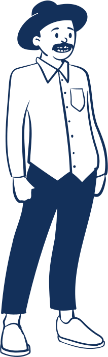
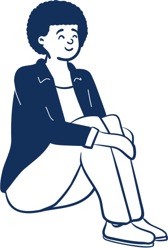

<title>catask</title>
<meta name="claude:viewport-fit-sides" content="cover">
<link rel="preconnect" href="https://fonts.googleapis.com">
<link rel="preconnect" href="https://fonts.gstatic.com" crossorigin>
<link rel="stylesheet" href="https://fonts.googleapis.com/css2?family=M+PLUS+Rounded+1c:wght@500;700;800&family=Be+Vietnam+Pro:wght@400;500;600&display=swap">
<style>
/* Visual thesis: an end-of-day ledger that stays open all week. Calm paper, ink type, one cobalt accent.
   Semantic red/amber appear only on warnings. Layout: masthead + tabs, then one workspace per tab,
   divided by hairlines rather than boxes. */
/* Sky theme: an anime afternoon sky (engraved swirl lines, puffy clouds) on the masthead,
   pale-sky paper below, navy ink, sky-blue accent. Night sky in dark mode. */
:root {
  --paper: #eef6fd; --ink: #13305a; --soft: #4d6d92; --faint: #8ba6c4; --rule: #cfe1f3; --hover: #e0edfa; --lift: #ffffff;
  --accent: #2a80d2; --accent-wash: #dbeafb;
  --over: #c4321b; --over-wash: #fbe6e1; --soon: #9a5d00; --soon-wash: #f9eed8;
  --sky-top: #3a86cf; --sky-bot: #63a9e4; --cloud: #ffffff; --cloud-shade: #d3e6f8; --cloud-line: #7fb2e3; --sky-line: rgba(255,255,255,.2); --on-sky: #ffffff;
  --shadow: 0 8px 22px -14px rgba(31, 92, 160, .45); --snack-act: #9fd0ff;
  --cat-idle: url("");
  --cat-happy: url("");
  --cat-sleep: url("");
  --cat-alert: url("");
  --display: "M PLUS Rounded 1c", "Be Vietnam Pro", system-ui, sans-serif;
  --text: "Be Vietnam Pro", system-ui, -apple-system, "Segoe UI", sans-serif;
  --ease: cubic-bezier(.2,.7,.2,1);
}
@media (prefers-color-scheme: dark) { :root:not([data-theme="light"]) {
  --paper: #0b1a2e; --ink: #e5f0fb; --soft: #9bb5d2; --faint: #5f7b9b; --rule: #1d3654; --hover: #12294a; --lift: #10233c;
  --accent: #7cc0ff; --accent-wash: #15345a; --over: #ff8a73; --over-wash: #3a1c16; --soon: #f2b955; --soon-wash: #33270f;
  --sky-top: #0c2347; --sky-bot: #1b3f73; --cloud: #b9cde6; --cloud-shade: #7f9cc2; --cloud-line: #2f5b92; --sky-line: rgba(180,210,255,.13); --on-sky: #f2f7ff;
  --shadow: 0 8px 22px -14px rgba(0, 0, 0, .7); --snack-act: #1d5fa6;
  color-scheme: dark } }
:root[data-theme="dark"] {
  --paper: #0b1a2e; --ink: #e5f0fb; --soft: #9bb5d2; --faint: #5f7b9b; --rule: #1d3654; --hover: #12294a; --lift: #10233c;
  --accent: #7cc0ff; --accent-wash: #15345a; --over: #ff8a73; --over-wash: #3a1c16; --soon: #f2b955; --soon-wash: #33270f;
  --sky-top: #0c2347; --sky-bot: #1b3f73; --cloud: #b9cde6; --cloud-shade: #7f9cc2; --cloud-line: #2f5b92; --sky-line: rgba(180,210,255,.13); --on-sky: #f2f7ff;
  --shadow: 0 8px 22px -14px rgba(0, 0, 0, .7); --snack-act: #1d5fa6;
  color-scheme: dark }
:root { --add: #1a7f37; --add-wash: #e3f4e8 }
@media (prefers-color-scheme: dark) { :root:not([data-theme="light"]) { --add: #5fd38a; --add-wash: #12301f } }
:root[data-theme="dark"] { --add: #5fd38a; --add-wash: #12301f }
* { box-sizing: border-box }
html, body { height: 100% }
body { background: var(--paper); color: var(--ink); font-family: var(--text); font-size: 14px; line-height: 1.5; -webkit-font-smoothing: antialiased }
button { font: inherit; color: inherit }
.app { height: 100%; display: flex; flex-direction: column; max-width: 1680px; margin: 0 auto;
  padding-block: 18px 0; padding-left: max(16px, env(safe-area-inset-left, 0px)); padding-right: max(16px, env(safe-area-inset-right, 0px)) }

/* Masthead: an anime sky painted on canvas behind the title */
.mast { position: relative; overflow: hidden; isolation: isolate; display: flex; flex-wrap: wrap; align-items: flex-start; gap: 12px 28px;
  padding: 22px 26px 78px; border-radius: 22px; background: linear-gradient(var(--sky-top), var(--sky-bot)); color: var(--on-sky) }
.mast canvas { position: absolute; inset: 0; width: 100%; height: 100%; z-index: -1; display: block }
.brand { display: flex; align-items: center; gap: 14px; min-width: 0 }
.mascot { width: 76px; height: 76px; margin: -6px 0 -10px; flex: none; background: var(--cat-idle) no-repeat center / contain; filter: drop-shadow(0 4px 6px rgba(0, 40, 90, .28)) }
.wm { display: inline-flex; align-items: baseline; font-family: var(--display); font-weight: 800; letter-spacing: -.01em; line-height: 1 }
.wm-lg { font-size: 26px; text-shadow: 0 2px 0 rgba(0, 40, 90, .2) }
.wm-cat { position: relative; color: #ffd36b }
.wm-cat::before, .wm-cat::after { content: ""; position: absolute; top: -.1em; width: 0; height: 0; border-left: .14em solid transparent; border-right: .14em solid transparent; border-bottom: .24em solid currentColor }
.wm-cat::before { left: .06em; transform: rotate(-14deg) } .wm-cat::after { right: .04em; transform: rotate(14deg) }
.wm-ask { color: var(--on-sky) }
.wm-line { display: flex; flex-wrap: wrap; align-items: baseline; gap: 2px 10px; margin: 6px 0 4px }
.slogan { font-size: 12.5px; font-weight: 600; opacity: .8 }
.mc-home .wm { font-size: 19px }
.brand .kicker { font-size: 11.5px; font-weight: 700; letter-spacing: .14em; text-transform: uppercase; opacity: .88 }
.brand h1 { margin: 2px 0 0; font-family: var(--display); font-weight: 800; font-size: clamp(28px, 3.2vw, 44px); line-height: 1.05; letter-spacing: -.01em; text-shadow: 0 2px 0 rgba(0, 40, 90, .2) }
.brand h1 em { font-style: normal; opacity: .9 }
.tally { margin-left: auto; display: flex; flex-wrap: wrap; gap: 22px; font-variant-numeric: tabular-nums }
.tally div { display: flex; flex-direction: column; align-items: flex-end }
.tally b { font-family: var(--display); font-weight: 800; font-size: 28px; line-height: 1; text-shadow: 0 2px 0 rgba(0, 40, 90, .2) }
.tally span { font-size: 11.5px; opacity: .9; text-shadow: 0 1px 2px rgba(0, 30, 70, .45) }
.mast > .brand, .mast > .tally { position: relative; z-index: 1 }
.tally .is-over b { background: #ffffff; color: #c4321b; padding: 1px 9px 3px; border-radius: 999px; text-shadow: none }
nav.tabs { display: flex; align-items: center; gap: 6px; padding: 8px 0 6px; margin-top: 4px; overflow-x: auto; scrollbar-width: none }
nav.tabs a { padding: 6px 15px; border-radius: 999px; color: var(--soft); text-decoration: none; font-weight: 700; font-family: var(--display); white-space: nowrap; transition: background .18s, color .18s }
.proj-seg { margin: 0 0 0 auto; align-self: center; position: static; padding: 3px }
/* .seg (defined later) adds margin-bottom: 14px, which pushed the project pills 7px above the nav's centre line. */
nav.tabs .proj-seg { margin: 0 0 0 auto }
.proj-seg { flex: none }
.proj-seg button { padding: 3px 12px; font-size: 12.5px; white-space: nowrap }
.info-btn { margin-left: 4px; align-self: center; border: 0; background: transparent; color: var(--soft); font-size: 12.5px; font-weight: 600; line-height: 1; cursor: pointer; height: 30px; padding: 0 10px; border-radius: 999px; white-space: nowrap; display: inline-flex; align-items: center; gap: 5px }
/* ⓘ and ⚙ share one box and size, drawn as text glyphs (not emoji), so both sit on the same centre line. */
.ib-ic { display: inline-grid; place-items: center; width: 15px; height: 15px; flex: none; font-size: 14px; line-height: 1 }
.ib-ic svg { width: 15px; height: 15px; display: block }
.info-btn:hover, .info-btn[aria-expanded="true"] { background: var(--hover); color: var(--ink) }
.howto { position: relative; margin-top: 10px; padding: 16px 18px; border: 1px solid var(--rule); border-radius: 16px; background: var(--lift); box-shadow: var(--shadow); font-size: 13px }
.howto-grid { display: grid; grid-template-columns: repeat(3, minmax(0, 1fr)); gap: 18px 26px }
.howto h3 { margin: 0 0 6px; font-family: var(--display); font-size: 14px; color: var(--accent) }
.howto ul { margin: 0; padding-left: 18px; display: flex; flex-direction: column; gap: 4px; color: var(--soft) }
.howto b { color: var(--ink) }
.howto-close { position: absolute; top: 10px; right: 12px; border: 0; background: transparent; color: var(--soft); cursor: pointer; font-size: 12px }
@media (max-width: 900px) { .howto-grid { grid-template-columns: 1fr } }
.demo-btn { align-self: center; align-self: center; border: 1.5px dashed var(--accent); background: transparent; color: var(--accent); border-radius: 999px; padding: 4px 13px; font-size: 12.5px; font-weight: 600; cursor: pointer; white-space: nowrap }
.demo-btn:hover { background: var(--accent-wash) }
/* Owner-only: the demo entry lives in the how-it-works panel, the way back only shows during the demo. */
.howto-foot { display: flex; flex-wrap: wrap; align-items: baseline; gap: 4px 10px; margin-top: 14px; padding-top: 12px; border-top: 1px solid var(--rule); color: var(--soft); font-size: 12.5px }
.howto-foot[hidden] { display: none }
.demo-link { padding: 0; border: 0; background: transparent; color: var(--accent); font: inherit; font-weight: 600; text-decoration: underline; text-underline-offset: 2px; cursor: pointer }
.demo-link:hover { text-decoration-thickness: 2px }
nav.tabs a:hover { background: var(--hover); color: var(--ink) }
nav.tabs a[aria-current="page"] { background: var(--accent); color: var(--lift) }
.status { font-size: 12.5px; color: var(--soft); padding: 6px 0 0; min-height: 24px }
.status.warn { color: var(--soon) }
.empty { display: flex; align-items: center; gap: 10px }
.empty::before { content: ""; width: 54px; height: 34px; flex: none; background: var(--cat-sleep) no-repeat center / contain }
.empty.happy::before { width: 44px; height: 44px; background-image: var(--cat-happy) }
.w-over::before { content: ""; display: inline-block; width: 14px; height: 14px; margin: 0 4px -3px -3px; background: var(--cat-alert) no-repeat center / contain }
@media (prefers-reduced-motion: no-preference) {
  .mascot { animation: bob 4.5s ease-in-out infinite }
  @keyframes bob { 50% { transform: translateY(-5px) rotate(-2deg) } }
}

.view { flex: 1; min-height: 0 }
.label { margin: 0 0 10px; display: flex; align-items: baseline; gap: 8px; font-size: 11.5px; font-weight: 600; letter-spacing: .14em; text-transform: uppercase; color: var(--soft) }
.label .n { margin-left: auto; font-variant-numeric: tabular-nums; letter-spacing: 0 }
.label.acc { color: var(--accent) }
.scroll { min-height: 0; overflow-y: auto; scrollbar-width: thin; scrollbar-color: var(--rule) transparent }
.empty { color: var(--faint); font-size: 13px; padding: 6px 0 }
a { color: var(--accent) }
:focus-visible { outline: 2px solid var(--accent); outline-offset: 2px; border-radius: 3px }

/* Today: rail + four columns */
.today { height: 100%; display: grid; grid-template-columns: minmax(240px, .8fr) minmax(0, 3.2fr) }
.rail { padding: 16px 24px 28px 0; border-right: 1px solid var(--rule) }
.three { list-style: none; margin: 0; padding: 0; counter-reset: k }
.three li { counter-increment: k; display: grid; grid-template-columns: 44px 1fr 26px; gap: 0 8px; align-items: start; padding: 12px 0; border-top: 1px solid var(--rule) }
.big-check { appearance: none; width: 24px; height: 24px; margin: 2px 0 0; border: 2px solid var(--accent); border-radius: 50%; background: var(--lift); cursor: pointer; display: grid; place-items: center; transition: background .2s, transform .2s var(--ease) }
.big-check:hover { transform: scale(1.08) }
.big-check:checked { background: var(--accent) }
.big-check:checked::after { content: ""; width: 5px; height: 10px; margin-top: -3px; border: solid var(--lift); border-width: 0 2.5px 2.5px 0; transform: rotate(45deg) }
.three li.is-done .tt { text-decoration: line-through; text-decoration-thickness: 2px; color: var(--faint) }
.three li.is-done::before { color: var(--faint) }
.three li:first-child { border-top: 0; padding-top: 2px }
.three li::before { content: counter(k); font-family: var(--display); font-weight: 800; font-size: 44px; line-height: .9; color: var(--accent); letter-spacing: -.04em }
.three .tt { font-family: var(--display); font-weight: 700; font-size: 17px; line-height: 1.22; text-wrap: balance }
.three .sub { margin-top: 3px; font-size: 12.5px; color: var(--soft); display: flex; flex-wrap: wrap; align-items: center; gap: 8px }
.rail .block + .block { margin-top: 26px }
.mini { padding: 8px 0; border-top: 1px solid var(--rule); font-size: 13px }
.mini:first-of-type { border-top: 0; padding-top: 0 }
.mini .when { font-weight: 600; color: var(--accent); font-variant-numeric: tabular-nums; margin-right: 6px }
.mini .sm { color: var(--soft); font-size: 12.5px }
.board { display: grid; grid-template-columns: repeat(4, minmax(0, 1fr)); min-height: 0 }
.lane { min-width: 0; display: flex; flex-direction: column; min-height: 0; padding: 16px 14px 0; border-right: 1px solid var(--rule); transition: background .15s }
.lane:last-child { border-right: 0; padding-right: 0 }
.lane.drop { background: var(--accent-wash) }
.lane .scroll { flex: 1; padding-bottom: 28px; display: flex; flex-direction: column; gap: 8px }
.card { position: relative; background: var(--lift); border: 1px solid var(--rule); border-radius: 14px; padding: 11px 12px; display: flex; flex-direction: column; gap: 4px; cursor: grab; transition: transform .2s var(--ease), box-shadow .2s var(--ease), opacity .2s }
.card:hover { box-shadow: var(--shadow); transform: translateY(-1px) }
.card.dragging { opacity: .4 }
.card.enter { animation: enter .35s var(--ease) }
.card .top { display: grid; grid-template-columns: 18px 1fr; gap: 8px; align-items: start }
.card input { appearance: none; width: 16px; height: 16px; margin: 2px 0 0; border: 1.5px solid var(--faint); border-radius: 6px; cursor: pointer; display: grid; place-items: center }
.card input:checked { background: var(--accent); border-color: var(--accent) }
.card input:checked::after { content: ""; width: 4px; height: 8px; margin-top: -2px; border: solid var(--paper); border-width: 0 2px 2px 0; transform: rotate(45deg) }
.card .tt { font-weight: 600; line-height: 1.35; overflow-wrap: anywhere }
.card.is-done .tt { text-decoration: line-through; color: var(--faint) }
.who { font-size: 12.5px } .who b { font-weight: 600 }
.why { font-size: 12.5px; color: var(--soft); overflow-wrap: anywhere; display: -webkit-box; -webkit-line-clamp: 2; -webkit-box-orient: vertical; overflow: hidden; cursor: pointer }
.why.open { -webkit-line-clamp: unset }
.meta { display: flex; flex-wrap: wrap; align-items: center; gap: 4px 10px; font-size: 11.5px; color: var(--soft) }
.warn-chip { font-size: 11px; font-weight: 600; padding: 0 7px; line-height: 18px; border-radius: 999px; white-space: nowrap }
.w-over { background: var(--over-wash); color: var(--over) } .w-soon { background: var(--soon-wash); color: var(--soon) } .w-nudge { background: var(--accent-wash); color: var(--accent) }
.due { color: var(--accent); font-weight: 600 }
.open-link { color: var(--accent); text-decoration: none; font-weight: 600 }
.open-link:hover { text-decoration: underline }
.moves { display: flex; gap: 4px; flex-wrap: wrap; max-height: 0; overflow: hidden; opacity: 0; transition: max-height .2s var(--ease), opacity .2s }
.card:hover .moves, .card:focus-within .moves { max-height: 40px; opacity: 1 }
@media (hover: none) { .moves { max-height: none; opacity: 1 } .card { cursor: auto } }
.moves button { font-size: 11px; padding: 1px 8px; border: 1px solid var(--rule); border-radius: 999px; background: transparent; cursor: pointer; color: var(--soft) }
.moves button:hover { border-color: var(--ink); color: var(--ink) }
.tag { font-size: 11px; font-weight: 600; padding: 0 7px; border-radius: 999px; border: 1px solid var(--ink); background: transparent; cursor: pointer; line-height: 16px }
.tag:hover, .tag[aria-expanded="true"] { background: var(--ink); color: var(--paper) }
.tag.good { border-color: var(--accent); color: var(--accent) }
.tag.good:hover, .tag.good[aria-expanded="true"] { background: var(--accent); color: var(--paper) }
.note { display: grid; grid-template-rows: 0fr; transition: grid-template-rows .28s var(--ease) }
.note > div { overflow: hidden; font-size: 12px }
.note > div > p { margin: 4px 0 0; padding: 4px 0 2px 9px; border-left: 2px solid var(--ink) }
.note.good > div > p { border-left-color: var(--accent) }
.note.show { grid-template-rows: 1fr }
.win { display: grid; grid-template-columns: 16px 1fr; gap: 8px; padding: 8px 2px; border-top: 1px solid var(--rule); font-size: 13px }
.win:first-child { border-top: 0 }
.dot-done { width: 14px; height: 14px; margin-top: 3px; border-radius: 50%; background: var(--accent); position: relative }
.dot-done::after { content: ""; position: absolute; left: 4.5px; top: 2px; width: 3.5px; height: 7px; border: solid var(--paper); border-width: 0 1.8px 1.8px 0; transform: rotate(45deg) }
.win .sm { color: var(--soft); font-size: 12px }
.sub-label { margin: 12px 0 4px; font-size: 11px; font-weight: 600; letter-spacing: .1em; text-transform: uppercase; color: var(--faint) }

/* People */
.people { height: 100%; padding: 14px 0 28px }
.seg { display: inline-flex; gap: 4px; padding: 4px; margin-bottom: 14px; border-radius: 999px; background: var(--hover); position: sticky; top: 0; z-index: 2 }
.seg button { border: 0; background: transparent; padding: 5px 14px; border-radius: 999px; cursor: pointer; font-weight: 700; font-family: var(--display); color: var(--soft); transition: background .18s, color .18s }
.seg button span { font-family: var(--text); font-weight: 600; font-size: 12px; opacity: .8; font-variant-numeric: tabular-nums }
.seg button:hover { color: var(--ink) }
.seg button[aria-pressed="true"] { background: var(--lift); color: var(--accent); box-shadow: var(--shadow) }
.person { display: grid; grid-template-columns: minmax(180px, 260px) minmax(0, 1fr); gap: 24px; padding: 18px 0; border-top: 1px solid var(--rule) }
.person:first-child { border-top: 0; padding-top: 4px }
.av { border-radius: 50%; background: var(--accent-wash); border: 1.5px solid var(--lift); object-fit: cover; flex: none }
.av.xs { width: 20px; height: 20px; vertical-align: -5px; margin-right: 6px }
.av.lg { width: 56px; height: 56px; border: 2px solid var(--accent-wash); box-shadow: var(--shadow) }
:root:not([data-theme="light"]) .av { background: #dbeafb }
.phead { display: flex; align-items: center; gap: 12px }
.faces { display: inline-flex; margin-right: 8px; vertical-align: -5px }
.faces .av.xs { margin-right: -7px } .faces .av.xs:last-child { margin-right: 0 }
.peep-ill { float: right; width: 76px; height: auto; margin: -6px 0 0 12px; opacity: .95; background: #dbeafb; border-radius: 16px; padding: 6px }
.person h3 { margin: 0; font-family: var(--display); font-weight: 700; font-size: 20px; line-height: 1.15 }
.person .role { font-size: 12.5px; color: var(--soft) }
.ledger { display: flex; gap: 18px; margin-top: 10px; font-variant-numeric: tabular-nums }
.ledger div { display: flex; flex-direction: column }
.ledger b { font-family: var(--display); font-size: 22px; font-weight: 700; line-height: 1 }
.ledger span { font-size: 11.5px; color: var(--soft) }
.person .worst { margin-top: 8px }
.items { display: flex; flex-direction: column }
.it { display: grid; grid-template-columns: 1fr auto; gap: 4px 14px; padding: 9px 0; border-top: 1px solid var(--rule) }
.it:first-child { border-top: 0; padding-top: 0 }
.it .tt { font-weight: 600 }
.it .dir { font-size: 12px; color: var(--soft) }
.it .side { display: flex; flex-direction: column; align-items: flex-end; gap: 6px }
/* "View message": always-visible pill on every task (not inside the hover-only .moves row). */
.view-msg { font: 600 11.5px/18px var(--text); padding: 1px 9px 1px 7px; border-radius: 999px; border: 1.5px solid var(--accent); color: var(--accent); background: var(--lift); cursor: pointer; white-space: nowrap; text-decoration: none; display: inline-flex; align-items: center; gap: 4px; flex: none; vertical-align: 1px }
.view-msg .ic { font-size: 11px; line-height: 1 }
.view-msg:hover { background: var(--accent); color: var(--paper) }
.card .who { display: flex; align-items: center; gap: 8px; flex-wrap: wrap }
.card .who .who-l { min-width: 0; flex: 1 1 auto }
.three .sub .view-msg, .win .view-msg, .ev .view-msg { margin-left: 6px }
/* Task titles open the same dialog; the pill button is the keyboard path. */
.tt-link { cursor: pointer }
.tt-link:hover { text-decoration: underline; text-decoration-color: var(--accent); text-underline-offset: 2px }
.it { grid-template-columns: 18px 1fr auto }
.it .chk, .win .chk { appearance: none; width: 16px; height: 16px; margin: 3px 0 0; border: 1.5px solid var(--faint); border-radius: 6px; cursor: pointer; display: grid; place-items: center; background: var(--lift) }
.it .chk:checked, .win .chk:checked, .ev .chk:checked { background: var(--accent); border-color: var(--accent) }
.it .chk:checked::after, .win .chk:checked::after, .ev .chk:checked::after { content: ""; width: 4px; height: 8px; margin-top: -2px; border: solid var(--paper); border-width: 0 2px 2px 0; transform: rotate(45deg) }
.it.is-done .tt, .win.is-done .wt, .ev.is-done .tt span.tx { text-decoration: line-through; color: var(--faint) }
.win.has-chk { grid-template-columns: 18px 1fr }
.ev .chk { appearance: none; width: 15px; height: 15px; margin: 0 6px -2px 0; border: 1.5px solid var(--faint); border-radius: 5px; cursor: pointer; display: inline-grid; place-items: center; background: var(--lift); vertical-align: -2px }
/* Priority badge: criticality P0–P3, separate from urgency (due date). Click to cycle. */
.pri { font: 700 10.5px/16px var(--text); letter-spacing: .02em; padding: 0 6px; border-radius: 6px; border: 1px solid transparent; cursor: pointer; white-space: nowrap; flex: none; font-variant-numeric: tabular-nums }
.pri[disabled] { cursor: default }
.pri.p0 { background: var(--over); color: #ffffff }
.pri.p1 { background: var(--soon-wash); color: var(--soon); border-color: var(--soon) }
.pri.p2 { background: var(--accent-wash); color: var(--accent) }
.pri.p3 { background: transparent; color: var(--faint); border-color: var(--rule) }
.pri:not([disabled]):hover { outline: 1.5px solid var(--ink); outline-offset: 1px }
.card .top { grid-template-columns: 18px 1fr auto }
.three .tt .pri, .it .tt .pri { margin-right: 6px; vertical-align: 2px }
.flag { font-size: 10.5px; font-weight: 600; padding: 0 6px; line-height: 16px; border-radius: 999px; border: 1px solid var(--accent); color: var(--accent); white-space: nowrap }
.pri-legend { display: flex; flex-wrap: wrap; gap: 6px 14px; align-items: center; margin-top: 12px; font-size: 12px; color: var(--soft) }
.pri-legend .pri { cursor: default }
/* "View message" dialog */
.dlg-back { position: fixed; inset: 0; z-index: 50; background: rgba(8, 22, 44, .45); display: grid; place-items: center; padding: 16px }
.dlg-back[hidden] { display: none }
.dlg { width: min(520px, 100%); max-height: min(80vh, 640px); overflow: auto; background: var(--lift); color: var(--ink); border: 1px solid var(--rule); border-radius: 18px; box-shadow: 0 20px 50px -20px rgba(0, 0, 0, .55); padding: 18px 20px 16px; position: relative }
.dlg h2 { margin: 0 34px 4px 0; font-family: var(--display); font-size: 17px; line-height: 1.25 }
.dlg .dlg-meta { font-size: 12.5px; color: var(--soft); display: flex; flex-wrap: wrap; gap: 4px 10px }
.dlg blockquote { margin: 14px 0 10px; padding: 10px 14px; border-left: 3px solid var(--accent); background: var(--accent-wash); border-radius: 0 10px 10px 0; white-space: pre-wrap; overflow-wrap: anywhere; font-size: 13.5px }
.dlg .dlg-note { font-size: 11.5px; color: var(--faint) }
.dlg .dlg-ctx { margin: 14px 0 2px; font-size: 11px; font-weight: 600; letter-spacing: .1em; text-transform: uppercase; color: var(--soft) }
.dlg .dlg-why { margin: 0 0 10px; font-size: 13.5px; overflow-wrap: anywhere; white-space: pre-wrap }
/* Communication signals, attached under the quote (or the Context block): badges + their notes, always open */
.dlg .dlg-sig { margin: -2px 0 12px }
.dlg .dlg-sig h3 { margin: 0 0 6px; font-size: 11px; font-weight: 600; letter-spacing: .1em; text-transform: uppercase; color: var(--soft) }
.dlg .dlg-tags { display: flex; flex-wrap: wrap; gap: 6px }
.dlg .dlg-tags .tag { cursor: default; display: inline-block }
.dlg .dlg-tags .tag:hover { background: transparent; color: inherit }
.dlg .dlg-tags .tag.good:hover { color: var(--accent) }
.dlg .dlg-sig ul { list-style: none; margin: 8px 0 0; padding: 0; display: grid; gap: 4px }
.dlg .dlg-sig li { font-size: 12.5px; padding: 2px 0 2px 9px; border-left: 2px solid var(--ink); overflow-wrap: anywhere }
.dlg .dlg-sig li.good { border-left-color: var(--accent) }
.dlg .dlg-sig li.good b { color: var(--accent) }
.dlg .dlg-actions { display: flex; justify-content: flex-end; gap: 8px; margin-top: 14px }
.dlg .dlg-open { padding: 6px 14px; border-radius: 999px; background: var(--accent); color: var(--lift); text-decoration: none; font-weight: 600 }
.dlg .dlg-x { position: absolute; top: 10px; right: 10px; width: 32px; height: 32px; border: 0; border-radius: 50%; background: transparent; cursor: pointer; font-size: 16px; color: var(--soft) }
.dlg .dlg-x:hover { background: var(--hover); color: var(--ink) }
@media (max-width: 560px) { .dlg-back { place-items: end stretch; padding: 0 } .dlg { width: 100%; border-radius: 18px 18px 0 0; max-height: 85vh } }
.dlg .dlg-actions { flex-wrap: wrap; align-items: center }
/* "Hand to AI": a quiet pill on open tasks; once requested, a status chip replaces it. */
.ai-btn, .ai-chip { font: 600 11.5px/18px var(--text); padding: 1px 9px; border-radius: 999px; cursor: pointer; white-space: nowrap; flex: none; display: inline-flex; align-items: center; gap: 4px; vertical-align: 1px }
.ai-btn { border: 1.5px dashed var(--faint); color: var(--soft); background: var(--lift) }
.ai-btn:hover { border-style: solid; border-color: var(--accent); color: var(--accent) }
.ai-chip { border: 1.5px solid transparent }
.ai-chip.ai-queued { background: var(--hover); color: var(--soft); border-color: var(--rule) }
.ai-chip.ai-running { background: var(--accent-wash); color: var(--accent) }
.ai-chip.ai-needs_review { background: var(--accent); color: var(--lift); font-weight: 700; box-shadow: var(--shadow) }
.ai-chip.ai-error { background: var(--over-wash); color: var(--over); border-color: var(--over) }
.ai-chip.ai-accepted, .ai-chip.ai-cancelled { background: transparent; color: var(--faint); border-color: var(--rule); cursor: default }
.ai-chip:not(.ai-accepted):not(.ai-cancelled):hover { outline: 1.5px solid var(--ink); outline-offset: 1px }
.three .sub .ai-btn, .three .sub .ai-chip, .dlg-actions .ai-btn, .dlg-actions .ai-chip { margin-left: 6px }
@media (prefers-reduced-motion: no-preference) {
  .ai-chip.ai-running { animation: ai-pulse 1.8s ease-in-out infinite }
  @keyframes ai-pulse { 50% { opacity: .55 } }
}
.tally .tally-ai { display: flex; flex-direction: column; align-items: flex-end; border: 0; background: transparent; color: inherit; cursor: pointer; padding: 0; font: inherit }
.tally .tally-ai b { background: #ffffff; color: #2a80d2; padding: 1px 9px 3px; border-radius: 999px; text-shadow: none }
.tally .tally-ai:hover span { text-decoration: underline }
/* AI request form + AI panel, inside the dialog shell */
.ai-kinds { border: 0; margin: 12px 0 0; padding: 0; display: flex; flex-direction: column; gap: 6px }
.ai-kinds legend { padding: 0; margin-bottom: 6px; font-size: 11px; font-weight: 600; letter-spacing: .1em; text-transform: uppercase; color: var(--soft) }
.ai-kind { display: grid; grid-template-columns: 18px 1fr; gap: 10px; align-items: start; padding: 8px 10px; border: 1px solid var(--rule); border-radius: 12px; cursor: pointer }
.ai-kind:hover { background: var(--hover) }
.ai-kind input { margin: 3px 0 0; accent-color: var(--accent) }
.ai-kind small { display: block; font-size: 12px; color: var(--soft) }
.ai-note-l { display: block; margin: 12px 0 4px; font-size: 12.5px; color: var(--soft) }
.ai-count { float: right; font-variant-numeric: tabular-nums; color: var(--faint) }
.ai-read { display: grid; grid-template-columns: 17px 1fr; gap: 10px; align-items: start; margin-top: 10px; font-size: 13px; cursor: pointer }
.ai-read input { margin-top: 2px }
.ai-read small { display: block; font-size: 12px; color: var(--soft) }
.ai-safe { margin: 10px 0 0; font-size: 12.5px; font-weight: 600; color: var(--soon) }
.ai-hint { margin: 6px 0 0; font-size: 12px; color: var(--faint) }
.ai-steps { list-style: none; margin: 0; padding: 0 0 0 12px; border-left: 2px solid var(--rule); display: grid; gap: 4px; font-size: 12.5px }
.ai-steps time { color: var(--soft); font-variant-numeric: tabular-nums; margin-right: 6px }
.ai-res-h { display: flex; align-items: baseline; justify-content: space-between; gap: 8px; margin: 14px 0 6px }
.ai-res-h .dlg-ctx { margin: 0 }
.ai-copy { padding: 3px 12px; font-size: 12.5px }
.ai-result { margin: 0; padding: 10px 14px; border: 1px solid var(--rule); border-left: 3px solid var(--accent); border-radius: 0 10px 10px 0; background: var(--paper); white-space: pre-wrap; overflow-wrap: anywhere; font-size: 13.5px; line-height: 1.55 }
.ai-copied { display: block; min-height: 16px; font-size: 12px; color: var(--accent) }
.ai-src { list-style: none; margin: 0; padding: 0; display: flex; flex-direction: column; gap: 2px; font-size: 12.5px }
.ai-err { margin: 10px 0 0; padding: 8px 12px; border-radius: 10px; background: var(--over-wash); color: var(--over); font-size: 12.5px; overflow-wrap: anywhere }
.ai-chip.ai-approved { background: var(--accent-wash); color: var(--accent); border-color: var(--accent) }
.ai-chip.ai-applied { background: transparent; color: var(--accent); border-color: var(--accent-wash) }
.ai-kick { font-size: 11px; font-weight: 600; letter-spacing: .1em; text-transform: uppercase; color: var(--soft); margin: 0 34px 2px 0 }
.ai-known { margin: 8px 0 0; border: 1px solid var(--rule); border-radius: 12px; background: var(--paper); font-size: 12.5px }
.ai-known summary { cursor: pointer; padding: 7px 12px; font-weight: 600; color: var(--soft) }
.ai-known summary .ai-count { float: none; margin-left: 8px; font-weight: 400 }
.ai-known dl { margin: 0; padding: 0 12px 4px; display: grid; grid-template-columns: max-content minmax(0, 1fr); gap: 4px 12px }
.ai-known dt { color: var(--soft) } .ai-known dd { margin: 0; overflow-wrap: anywhere }
.ai-known q { font-style: italic } .ai-known .ak-by { color: var(--soft) }
.ai-known .ai-hint { padding: 0 12px 8px }
.ai-kchips { display: flex; flex-wrap: wrap; gap: 6px }
.ai-kc { position: relative; cursor: pointer }
.ai-kc input { position: absolute; opacity: 0; width: 1px; height: 1px; margin: 0 }
.ai-kc span { display: inline-block; padding: 5px 12px; border: 1.5px solid var(--rule); border-radius: 999px; font-size: 13px; font-weight: 600; color: var(--ink); background: var(--lift) }
.ai-kc:hover span { background: var(--hover) }
.ai-kc input:checked + span { background: var(--accent); border-color: var(--accent); color: var(--lift) }
.ai-kc input:focus-visible + span { outline: 2px solid var(--ink); outline-offset: 2px }
.ai-modes { margin-top: 14px }
textarea.ai-ctx { min-height: 110px }
textarea.ai-after { min-height: 180px; font-size: 13px; line-height: 1.5 }
.ai-sp { width: 8em }
.ai-foot { position: sticky; bottom: -16px; margin: 14px -20px -16px; padding: 10px 20px 14px; background: var(--lift); border-top: 1px solid var(--rule); z-index: 1 }
.ai-before { margin: 0; padding: 8px 12px; border: 1px dashed var(--rule); border-radius: 10px; background: var(--paper); color: var(--soft); white-space: pre-wrap; overflow-wrap: anywhere; font-size: 12.5px; max-height: 220px; overflow: auto }
.ai-before-d summary, .ai-ctx-d summary { cursor: pointer; font-size: 12.5px; color: var(--soft); margin: 4px 0 }
.ai-empty { margin: 0; font-size: 12.5px; color: var(--faint) }
.ai-tag { font-weight: 400; text-transform: none; letter-spacing: 0; color: var(--accent) }
.ai-warn { margin: 10px 0 0; padding: 8px 12px; border-radius: 10px; background: var(--soon-wash); color: var(--soon); font-size: 12.5px; overflow-wrap: anywhere }
.ai-ok { margin: 10px 0 0; padding: 8px 12px; border-radius: 10px; background: var(--accent-wash); color: var(--accent); font-size: 13px; font-weight: 600 }
.ai-confirm { margin: 12px 0 0; padding: 10px 12px; border: 1.5px solid var(--accent); border-radius: 12px; background: var(--accent-wash) }
.ai-confirm.is-warn { border-color: var(--soon); background: var(--soon-wash) }
.ai-confirm p { margin: 0 0 6px; font-size: 13px } .ai-confirm .dlg-actions { margin-top: 8px }
.ai-note-r { border-left-color: var(--rule); font-size: 12.5px }
@media (max-width: 560px) { .ai-known dl { grid-template-columns: minmax(0, 1fr); gap: 0 } .ai-known dd { margin-bottom: 4px } .ai-foot .btn-pri, .ai-foot .btn-sec { flex: 1 1 auto } }

/* Week */
.week { height: 100%; display: grid; grid-template-columns: minmax(0, 1.1fr) minmax(0, 1fr); gap: 0 }
.week > section { padding: 18px 26px 28px 0 }
.week > section + section { padding: 18px 0 28px 26px; border-left: 1px solid var(--rule) }
.big { display: flex; flex-wrap: wrap; gap: 30px; margin-bottom: 26px }
.big div { display: flex; flex-direction: column }
.big b { font-family: var(--display); font-weight: 800; font-size: 48px; line-height: .95; letter-spacing: -.03em; font-variant-numeric: tabular-nums }
.big b.acc { color: var(--accent) }
.big span { font-size: 12.5px; color: var(--soft) }
.heatwrap { display: flex; flex-wrap: wrap; align-items: stretch; gap: 18px 28px }
.heatcol { flex: 1 1 300px; max-width: 460px; min-width: 0 }
.heatside { flex: 1 1 200px; min-width: 0; display: flex; gap: 14px; align-items: flex-end; padding: 14px 16px; border-radius: 18px; background: var(--hover) }
.heatside img { width: 84px; height: auto; flex: none }
.heatside dl { margin: 0; display: flex; flex-direction: column; gap: 10px }
.heatside dt { font-size: 11.5px; color: var(--soft) }
.heatside dd { margin: 0; font-family: var(--display); font-weight: 800; font-size: 20px; line-height: 1.1 }
.heat { display: grid; grid-template-columns: 48px repeat(5, minmax(0, 1fr)); gap: 6px; align-items: center; font-size: 11.5px; color: var(--soft) }
.heat .cell { aspect-ratio: 1; max-width: 100%; border-radius: 5px; background: var(--hover); display: grid; place-items: center; font-variant-numeric: tabular-nums; font-weight: 600; color: var(--ink); font-size: 12px; transition: transform .15s }
.heat .cell:hover { transform: scale(1.08) }
.heat .cell.today { outline: 2px solid var(--ink); outline-offset: 1px }
.legend { display: flex; align-items: center; gap: 6px; margin-top: 10px; font-size: 11.5px; color: var(--soft) }
.legend i { width: 12px; height: 12px; border-radius: 3px; display: inline-block }
.sigrow { display: flex; flex-wrap: wrap; gap: 8px; margin-top: 8px }
.sigrow span { font-size: 12px; padding: 2px 10px; border: 1px solid var(--rule); border-radius: 999px }
.dayhead { margin: 18px 0 4px; font-size: 12px; font-weight: 600; color: var(--soft) }
.dayhead:first-child { margin-top: 0 }

/* Day timeline */
.day { height: 100%; display: grid; grid-template-columns: minmax(0, 1.4fr) minmax(0, 1fr) }
.day > section { padding: 16px 26px 28px 0 }
.day > section + section { padding: 16px 0 28px 26px; border-left: 1px solid var(--rule) }
.chips { display: flex; flex-wrap: wrap; gap: 6px; margin-bottom: 16px }
.chips button { padding: 3px 11px; border-radius: 999px; border: 1px solid var(--rule); background: transparent; cursor: pointer; font-size: 12.5px; font-variant-numeric: tabular-nums }
.chips button[aria-pressed="true"] { background: var(--ink); color: var(--paper); border-color: var(--ink) }
.line { position: relative; list-style: none; margin: 0; padding: 0 0 0 76px }
.line::before { content: ""; position: absolute; left: 62px; top: 6px; bottom: 6px; width: 1px; background: var(--rule) }
.ev { position: relative; padding: 0 0 16px }
.ev .t { position: absolute; left: -76px; width: 52px; text-align: right; font-variant-numeric: tabular-nums; font-weight: 600; font-size: 12.5px }
.ev::before { content: ""; position: absolute; left: -18px; top: 6px; width: 9px; height: 9px; border-radius: 50%; background: var(--paper); border: 2px solid var(--faint) }
.ev.k-done::before { background: var(--accent); border-color: var(--accent) }
.ev.k-meeting::before { border-color: var(--ink); background: var(--ink) }
.ev.k-ai::before { border-color: var(--accent) }
.ev .kind { font-size: 11px; font-weight: 600; letter-spacing: .08em; text-transform: uppercase; color: var(--soft) }
.ev.k-done .kind { color: var(--accent) }
.ev .tt { font-weight: 600 }
.ev .sm { font-size: 12.5px; color: var(--soft) }
.bar { height: 4px; border-radius: 2px; background: var(--accent-wash); margin-top: 5px; max-width: 100% }
.bar i { display: block; height: 100%; border-radius: 2px; background: var(--accent) }

/* Project hours: ranked bars, one hue; the number carries identity, not color */
.pbars { display: flex; flex-direction: column; gap: 10px; margin-bottom: 8px }
.pb { display: grid; grid-template-columns: minmax(90px, 160px) minmax(0, 1fr) auto; gap: 10px; align-items: center; font-size: 13px }
.pb .nm { font-weight: 600; overflow: hidden; text-overflow: ellipsis; white-space: nowrap }
.pb .track { height: 10px; border-radius: 0 4px 4px 0; background: var(--hover); position: relative }
.pb .fill { position: absolute; inset: 0 auto 0 0; border-radius: 0 4px 4px 0; background: var(--accent); transition: width .5s var(--ease) }
.pb .val { font-variant-numeric: tabular-nums; color: var(--ink); white-space: nowrap; min-width: 92px; text-align: right }
.pb .val span { color: var(--soft) }
.pb:hover .track { outline: 1px solid var(--rule) }
.ptable-wrap { overflow-x: auto; margin-top: 14px }
.ptable { border-collapse: collapse; font-size: 12.5px; font-variant-numeric: tabular-nums; min-width: 100% }
.ptable th, .ptable td { padding: 6px 8px; border-bottom: 1px solid var(--rule); text-align: right; white-space: nowrap }
.ptable th:first-child, .ptable td:first-child { text-align: left; padding-left: 0 }
.ptable th { font-size: 11px; font-weight: 600; letter-spacing: .08em; text-transform: uppercase; color: var(--soft) }
.ptable tfoot td { font-weight: 600; border-bottom: 0 }
.ptable td.z { color: var(--faint) }
.note-sm { font-size: 12px; color: var(--faint); margin-top: 6px }
/* Settings drawer: the page-editable part of config.json, written to meta/settings. */
.set-back { position: fixed; inset: 0; z-index: 60; background: rgba(8, 22, 44, .45); display: flex; justify-content: flex-end }
.set-back[hidden] { display: none }
.set-panel { width: min(460px, 100%); height: 100%; display: flex; flex-direction: column; background: var(--paper); color: var(--ink); border-left: 1px solid var(--rule); border-radius: 18px 0 0 18px; box-shadow: -20px 0 50px -30px rgba(0, 0, 0, .55); overflow: hidden; outline: none }
.set-head { display: flex; align-items: center; gap: 10px; padding: 16px 20px 12px; border-bottom: 1px solid var(--rule) }
.set-head h2 { flex: 1; min-width: 0; margin: 0; font-family: var(--display); font-size: 19px; line-height: 1.2 }
.set-x { flex: none; width: 32px; height: 32px; border: 0; border-radius: 50%; background: transparent; cursor: pointer; font-size: 16px; color: var(--soft) }
.set-x:hover { background: var(--hover); color: var(--ink) }
.set-body { flex: 1; min-height: 0; overflow-y: auto; overscroll-behavior: contain; padding: 0 20px 20px; scrollbar-width: thin; scrollbar-color: var(--rule) transparent }
.set-intro { margin: 12px 0 4px; font-size: 12.5px; color: var(--soft) }
.set-note { margin: 10px 0 0; padding: 8px 12px; border-radius: 10px; background: var(--soon-wash); color: var(--soon); font-size: 12.5px }
.set-sec { padding: 16px 0; border-top: 1px solid var(--rule); min-width: 0 }
.set-sec:first-of-type { border-top: 0 }
.set-sec h3 { margin: 0 0 10px; font-size: 11.5px; font-weight: 600; letter-spacing: .14em; text-transform: uppercase; color: var(--soft) }
.set-hint { display: block; margin: 6px 0 0; font-size: 12px; color: var(--faint); overflow-wrap: anywhere }
.set-err { margin: 8px 0 0; font-size: 12.5px; color: var(--over) }
.set-id { margin: 0; display: grid; grid-template-columns: auto minmax(0, 1fr); gap: 4px 14px; font-size: 13px }
.set-id dt { color: var(--soft) } .set-id dd { margin: 0; font-weight: 600; overflow-wrap: anywhere }
.set-seg { position: static; margin: 0 }
.set-row { display: flex; flex-wrap: wrap; gap: 8px; align-items: flex-end }
.set-field { flex: 1 1 140px; min-width: 0; display: flex; flex-direction: column; gap: 4px; font-size: 12.5px; color: var(--soft) }
.set-field.wide { flex-basis: 100% }
.set-in { width: 100%; min-width: 0; font: inherit; font-size: 14px; color: var(--ink); background: var(--lift); border: 1px solid var(--rule); border-radius: 10px; padding: 7px 10px }
textarea.set-in { min-height: 70px; resize: vertical }
.set-in:focus-visible { outline: 2px solid var(--accent); outline-offset: 1px }
.set-in[disabled], .set-panel button[disabled], .set-panel input[disabled] { opacity: .55; cursor: default }
.set-checks { list-style: none; margin: 0; padding: 0; display: flex; flex-direction: column; gap: 8px }
.set-checks label { display: flex; align-items: center; gap: 10px; cursor: pointer }
.set-cb { flex: none; width: 17px; height: 17px; margin: 0; accent-color: var(--accent) }
.set-days { display: flex; flex-wrap: wrap; gap: 6px; margin-top: 12px }
.set-days button { min-width: 42px; padding: 4px 8px; border-radius: 999px; border: 1px solid var(--rule); background: transparent; cursor: pointer; font-size: 12.5px; font-weight: 600 }
.set-days button[aria-pressed="true"] { background: var(--accent); border-color: var(--accent); color: var(--lift) }
.chips-ed { list-style: none; margin: 0 0 10px; padding: 0; display: flex; flex-wrap: wrap; gap: 6px }
.chips-ed li { max-width: 100%; display: inline-flex; align-items: center; gap: 2px; padding: 2px 3px 2px 11px; border-radius: 999px; background: var(--accent-wash); font-size: 12.5px }
.chips-ed li > span { min-width: 0; overflow-wrap: anywhere }
.chips-ed small { color: var(--soft); font-size: 12px }
.chip-x { flex: none; width: 24px; height: 24px; border: 0; border-radius: 50%; background: transparent; cursor: pointer; color: var(--soft); font-size: 11px }
.chip-x:hover { background: var(--lift); color: var(--ink) }
.set-add { flex: none; padding: 7px 14px; border-radius: 999px; border: 1.5px solid var(--accent); background: transparent; color: var(--accent); font-weight: 600; cursor: pointer }
.set-add:hover { background: var(--accent-wash) }
.set-switch { display: grid; grid-template-columns: minmax(0, 1fr) auto; gap: 0 14px; align-items: start; padding: 6px 0; cursor: pointer }
.set-switch + .set-switch { margin-top: 8px }
.sw { appearance: none; position: relative; width: 38px; height: 22px; margin: 2px 0 0; border-radius: 999px; background: var(--rule); cursor: pointer; transition: background .2s }
.sw::after { content: ""; position: absolute; top: 3px; left: 3px; width: 16px; height: 16px; border-radius: 50%; background: var(--lift); box-shadow: 0 1px 2px rgba(0, 0, 0, .25); transition: transform .2s var(--ease) }
.sw:checked { background: var(--accent) } .sw:checked::after { transform: translateX(16px) }
.set-foot { display: flex; flex-wrap: wrap; align-items: center; gap: 8px; padding: 12px 20px calc(12px + env(safe-area-inset-bottom, 0px)); border-top: 1px solid var(--rule); background: var(--lift) }
.set-dirty { flex: 1 1 140px; min-width: 0; font-size: 12.5px; color: var(--soft) }
.set-dirty.on { color: var(--soon); font-weight: 600 }
.set-dirty.on::before { content: "●"; margin-right: 6px }
.btn-pri { padding: 7px 18px; border: 0; border-radius: 999px; background: var(--accent); color: var(--lift); font-weight: 700; cursor: pointer }
.btn-sec { padding: 7px 14px; border: 1px solid var(--rule); border-radius: 999px; background: transparent; font-weight: 600; cursor: pointer }
.btn-sec:hover { background: var(--hover) }
@media (max-width: 560px) {
  .set-panel { width: 100%; border-radius: 0; border-left: 0 }
  .set-head, .set-body, .set-foot { padding-left: 16px; padding-right: 16px }
}
/* Undo snackbar: one at a time, a one-line inverted pill at the bottom centre (full width minus
   16px gutters on phones). Centred with auto margins, not a transform, so the enter slide can use one. */
.snack { position: fixed; z-index: 70; left: max(16px, env(safe-area-inset-left, 0px)); right: max(16px, env(safe-area-inset-right, 0px));
  bottom: calc(16px + env(safe-area-inset-bottom, 0px)); margin: 0 auto; width: fit-content; max-width: min(440px, calc(100vw - 32px)); min-height: 44px;
  display: flex; align-items: center; gap: 8px; padding: 6px 6px 6px 16px; border-radius: 999px; overflow: hidden; white-space: nowrap;
  background: var(--ink); color: var(--paper); box-shadow: var(--shadow), 0 18px 40px -16px rgba(0, 0, 0, .55); font-size: 13.5px; line-height: 20px;
  opacity: 1; transition: opacity .15s ease, display .15s allow-discrete }
.snack[hidden] { display: none; opacity: 0 }
.snack-ic { flex: none; width: 16px; text-align: center; font-weight: 700 }
.snack-ic:not(.pri) { color: var(--snack-act) }
.snack-ic.pri { width: auto; cursor: default; outline: 0 !important }
.snack-msg { flex: 1 1 auto; min-width: 0; display: flex; align-items: baseline; gap: 6px }
.snack-v { flex: none }
.snack-t { min-width: 0; overflow: hidden; text-overflow: ellipsis; white-space: nowrap; font-weight: 700 }
.snack-undo { flex: none; height: 32px; padding: 0 12px; border: 0; border-radius: 999px; background: transparent; color: var(--snack-act); font: inherit; font-weight: 700; cursor: pointer }
.snack-kbd { flex: none; margin-left: -4px; font: 600 11px/1 var(--text); color: var(--paper); opacity: .6 }
.snack-x { flex: none; width: 28px; height: 28px; padding: 0; border: 0; border-radius: 50%; background: transparent; color: var(--paper); opacity: .6; font-size: 12px; line-height: 28px; cursor: pointer }
.snack-undo:hover, .snack-x:hover { background: color-mix(in srgb, var(--paper) 14%, transparent); opacity: 1 }
.snack :focus-visible { outline-color: var(--snack-act) }
.snack-bar { position: absolute; left: 0; right: 0; bottom: 0; height: 2px; background: var(--snack-act); opacity: .85; transform-origin: left center; pointer-events: none }
.snack.paused .snack-bar { animation-play-state: paused }
@media (hover: none), (max-width: 599px) { .snack-kbd { display: none } }
@media (max-width: 599px) { .snack { width: auto; max-width: none } }
@media (prefers-reduced-motion: no-preference) {
  .snack:not([hidden]) { animation: snack-in .18s var(--ease) }
  .snack-bar { animation: snack-count linear forwards }
}
@media (prefers-reduced-motion: reduce) { .snack:not([hidden]) { animation: snack-fade .18s ease } }
@keyframes snack-in { from { opacity: .001; transform: translateY(8px) } to { opacity: 1; transform: none } }
@keyframes snack-fade { from { opacity: .001 } to { opacity: 1 } }
@keyframes snack-count { from { transform: scaleX(1) } to { transform: scaleX(0) } }
@keyframes enter { from { opacity: .001; transform: translateY(6px) } to { opacity: 1; transform: none } }
@media (prefers-reduced-motion: no-preference) {
  /* Entry animation only when the tab changes (.view.anim); data-driven re-renders stay still. */
  .view.anim .three li { animation: enter .55s var(--ease) both } .view.anim .three li:nth-child(2) { animation-delay: .08s } .view.anim .three li:nth-child(3) { animation-delay: .16s }
  .view.anim > * { animation: enter .3s var(--ease) }
}
@media (prefers-reduced-motion: reduce) { *, *::before, *::after { animation: none !important; transition: none !important } }

/* Chips in a meta row: one flex-wrap gap system (Xem tin, Giao AI, copy id), no stray margins. */
.three .sub .view-msg, .three .sub .ai-btn, .three .sub .ai-chip { margin-left: 0 }
.it .side .cp-id { align-self: flex-end }
/* Copy task id */
.cp-id { flex: none; width: 26px; height: 22px; padding: 0; border: 1px solid var(--rule); border-radius: 7px; background: var(--lift); color: var(--soft); font-size: 13px; line-height: 1; cursor: pointer; display: inline-grid; place-items: center }
.cp-id:hover { border-color: var(--accent); color: var(--accent) }
.flash { animation: flash 2.4s var(--ease) }
@keyframes flash { 0%, 45% { box-shadow: 0 0 0 3px var(--accent) } 100% { box-shadow: 0 0 0 0 transparent } }
/* AI sections above the lanes */
.today-main { min-width: 0; min-height: 0; display: flex; flex-direction: column }
.today-main > .board { flex: 1 }
/* AI strip: full width of the lane area, cards in a horizontal row that scrolls inside the strip. */
.aistrip { position: relative; min-width: 0; border-bottom: 1px solid var(--rule); background: var(--paper); z-index: 3 }
.aisecs-wrap { display: grid; transition: grid-template-rows 260ms cubic-bezier(.2,.8,.2,1), opacity 200ms ease }
.fold-clip { overflow: hidden; min-height: 0 }
.aisecs-wrap { grid-template-rows: 1fr; opacity: 1 }
.aisecs-wrap .aisecs { transition: transform 260ms cubic-bezier(.2,.8,.2,1) }
.aistrip.is-col .aisecs-wrap { grid-template-rows: 0fr; opacity: 0 }
.aistrip.is-col .aisecs-wrap .aisecs { transform: translateY(-8px) }
.aisecs { display: flex; gap: 4px 24px; padding: 16px 40px 12px 14px; min-width: 0 }
.aisec { flex: 1 1 0; min-width: 0 }
.aisec-list { display: flex; gap: 8px; overflow-x: auto; padding-bottom: 4px; scrollbar-width: thin; scrollbar-color: var(--rule) transparent }
.aisec-list > .aq { flex: 0 0 260px }
.aisum { display: flex; width: 100%; align-items: center; gap: 8px; padding: 8px 40px 8px 0; border: 0; background: transparent; color: var(--ink); font: 600 13px/1.3 var(--text); text-align: left; cursor: pointer }
.aistrip.is-col { border-bottom-color: transparent }
.aistrip.is-col .strip-chev { display: none }
.strip-chev { position: absolute; top: 8px; right: 6px; width: 28px; height: 28px; border: 1px solid var(--rule); border-radius: 50%; background: var(--lift); color: var(--soft); cursor: pointer; font-size: 12px; line-height: 1 }
.strip-chev:hover { color: var(--ink); border-color: var(--ink) }
.strip-chev span { display: inline-block; transition: transform 260ms cubic-bezier(.2,.8,.2,1) }
.aistrip.is-col .strip-chev span { transform: rotate(180deg) }
.aistrip.is-col .strip-chev { top: 50%; margin-top: -14px }
.board-top { display: block; position: relative; height: 0 }
.page-top { position: absolute; top: 0; left: 0; width: 1px; height: 1px; pointer-events: none }
html.hero-fold .bt-s { bottom: calc(56px + var(--tabs-h, 0px)) } .bt-s { position: absolute; left: 0; bottom: 0; width: 1px; height: 100000px; pointer-events: none; visibility: hidden }
.lane .scroll { position: relative } .lane-top { position: absolute; top: 0; left: 0; width: 1px; height: 1px; pointer-events: none }
@media (max-width: 640px) { .aisecs { flex-direction: column; padding-left: 0 } .aisec-list { flex-direction: column; overflow-x: visible } .aisec-list > .aq { flex: none } .aisum { padding-left: 0 } }
.aq { background: var(--lift); border: 1px solid var(--rule); border-radius: 12px; padding: 9px 11px; display: flex; flex-direction: column; gap: 6px; min-width: 0 }
.aq-top { display: grid; grid-template-columns: 18px 1fr auto; gap: 8px; align-items: start }
.aq .tt { font-weight: 600; line-height: 1.35; overflow-wrap: anywhere }
.aq-meta { display: flex; flex-wrap: wrap; align-items: center; gap: 8px; font-size: 12px; color: var(--soft) }
.aq-sub { min-width: 0; flex: 1 1 60px; overflow: hidden; text-overflow: ellipsis; white-space: nowrap }
.aq .chk { appearance: none; width: 16px; height: 16px; margin: 2px 0 0; border: 1.5px solid var(--faint); border-radius: 6px; cursor: pointer; display: grid; place-items: center; background: var(--lift) }
.aq .chk:checked { background: var(--accent); border-color: var(--accent) }
.ai-only { margin: -4px 0 8px; align-self: flex-start; padding: 2px 11px; border-radius: 999px; border: 1px solid var(--rule); background: transparent; color: var(--soft); cursor: pointer; font-size: 12px; font-weight: 600 }
.ai-only[aria-pressed="true"] { background: var(--accent); border-color: var(--accent); color: var(--lift) }
.flag.by-ai { background: var(--accent-wash) }
/* "Looks done?": the evening digest found evidence and asks; the user confirms (never auto-closed). */
.sug { margin: 7px 0 1px; padding: 5px 6px 6px 9px; border-radius: 8px; background: var(--add-wash); font-size: 12px; line-height: 1.4 }
.sug-h { display: flex; align-items: center; gap: 6px; flex-wrap: wrap }
.sug-lab { margin-right: auto; font-weight: 700; color: var(--add); white-space: nowrap }
.sug-btn { flex: none; font: 600 11.5px/18px var(--text); padding: 1px 9px; border-radius: 999px; border: 1.5px solid var(--add); background: var(--lift); color: var(--add); cursor: pointer; white-space: nowrap }
.sug-btn.yes { background: var(--add); color: var(--lift) }
.sug-btn:hover { outline: 1.5px solid var(--ink); outline-offset: 1px }
.sug-ev { margin-top: 3px; color: var(--soft); overflow-wrap: anywhere }
.sug-ev a { color: var(--add); font-weight: 600; text-decoration: none; white-space: nowrap }
.sug-ev a:hover { text-decoration: underline; text-underline-offset: 2px }
.sug-chip { align-self: flex-start; margin: -4px 0 8px; padding: 2px 11px; border-radius: 999px; border: 1px solid var(--add); background: var(--add-wash); color: var(--add); cursor: pointer; font-size: 12px; font-weight: 600; font-variant-numeric: tabular-nums; white-space: nowrap }
.sug-chip[aria-pressed="true"] { background: var(--add); color: var(--lift) }
.sug-chip:hover { outline: 1.5px solid var(--ink); outline-offset: 1px }
.aq .sug { margin-top: 6px }
/* Code tasks: status chips, wide panel, plan, diff */
.ai-chip.ai-plan_review { background: var(--soon-wash); color: var(--soon); border-color: var(--soon); font-weight: 700 }
.ai-chip.ai-push_approved { background: var(--accent-wash); color: var(--accent) }
.ai-chip.ai-mr_open { background: transparent; color: var(--accent); border-color: var(--accent) }
.ai-kc.is-off span { border-style: dashed; color: var(--faint) }
.dlg.dlg-wide { width: min(780px, 100%); max-height: min(88vh, 920px) }
select.set-in { appearance: auto }
.mono, .cd-files code, .cd-branch code, .cd-commits code, .df summary code, .rn-cmd, .rn-log pre, .df-b { font-family: ui-monospace, SFMono-Regular, Menlo, Consolas, monospace; font-size: 12px }
.cd-steps li { display: flex; gap: 6px; align-items: baseline }
.st-ic { flex: none; width: 14px; text-align: center; color: var(--soft) } .st-ic.done { color: var(--add) } .st-ic.fail { color: var(--over) }
.spin { display: inline-block; width: 10px; height: 10px; border: 2px solid var(--accent-wash); border-top-color: var(--accent); border-radius: 50%; vertical-align: -1px }
@media (prefers-reduced-motion: no-preference) { .spin { animation: spin .8s linear infinite } @keyframes spin { to { transform: rotate(360deg) } } }
.risk { display: inline-block; margin-left: 6px; font: 600 11px/18px var(--text); padding: 0 8px; border-radius: 999px; text-transform: none; letter-spacing: 0 }
.risk-low { background: var(--add-wash); color: var(--add) } .risk-medium { background: var(--soon-wash); color: var(--soon) } .risk-high { background: var(--over-wash); color: var(--over) }
.cd-files { list-style: none; margin: 0; padding: 0; display: grid; gap: 4px; font-size: 12.5px }
.cd-files li { display: flex; flex-wrap: wrap; gap: 2px 10px } .cd-files span { color: var(--soft) }
.cd-qs ul { margin: 4px 0 0; padding-left: 18px }
.cd-branch { margin: 12px 0 4px; display: flex; flex-wrap: wrap; align-items: center; gap: 6px; font-size: 13px }
.cd-stat { margin: 0 0 4px; font-size: 13px; font-variant-numeric: tabular-nums }
.add { color: var(--add); font-weight: 600 } .del { color: var(--over); font-weight: 600 }
.cd-checks, .cd-commits { list-style: none; margin: 0; padding: 0; display: grid; gap: 3px; font-size: 12.5px; overflow-wrap: anywhere }
.ck-ok { color: var(--add); font-weight: 700 } .ck-bad { color: var(--over); font-weight: 700 }
.cd-diff { display: grid; gap: 6px; max-height: 46vh; overflow: auto; border: 1px solid var(--rule); border-radius: 10px; padding: 6px; background: var(--paper) }
.df { min-width: 0 }
.df summary { cursor: pointer; display: flex; gap: 8px; align-items: baseline; padding: 4px 6px; font-size: 12.5px }
.df summary code { flex: 1 1 auto; min-width: 0; overflow-wrap: anywhere }
.df-b { margin: 0; padding: 4px 0; overflow-x: auto; line-height: 1.45; background: var(--lift); border-radius: 6px }
.df-b span { display: block; white-space: pre; padding: 0 8px; min-width: max-content }
.dl-a { background: var(--add-wash); color: var(--add) } .dl-d { background: var(--over-wash); color: var(--over) } .dl-h { color: var(--soft); background: var(--hover) }
.rn-cmd { display: block; margin: 6px 0 0; padding: 8px 10px; border-radius: 8px; background: var(--lift); border: 1px solid var(--rule); white-space: pre-wrap; overflow-wrap: anywhere; user-select: all; color: var(--ink) }
.rn-log { margin-top: 8px; font-size: 12.5px } .rn-log summary { cursor: pointer; color: var(--soft) }
.rn-log pre { margin: 4px 0 0; padding: 8px 10px; max-height: 180px; overflow: auto; white-space: pre-wrap; overflow-wrap: anywhere; background: var(--paper); border: 1px solid var(--rule); border-radius: 8px }
.disp-chip { align-self: center; padding: 2px 10px; border-radius: 999px; background: var(--add-wash); color: var(--add); font: 600 11.5px/18px var(--text); white-space: nowrap; cursor: help }
.disp-chip[hidden], .disp-ban[hidden] { display: none }
.disp-ban { margin: 4px 0 6px }
.disp-line { margin: 0 }
.set-sub { margin: -2px 0 2px 26px; padding: 6px 0 2px 12px; border-left: 2px solid var(--rule) }
/* Settings: AI run mode + repo picker */
.set-modes { border: 0; margin: 14px 0 0; padding: 0; display: grid; gap: 8px; min-width: 0 }
.set-modes legend { padding: 0; margin-bottom: 6px; font-size: 12.5px; font-weight: 600; color: var(--soft) }
.set-mode { display: flex; align-items: flex-start; gap: 8px }
.set-mode-l { flex: 1; min-width: 0; display: flex; gap: 10px; align-items: flex-start; padding: 8px 10px; border: 1px solid var(--rule); border-radius: 12px; background: var(--lift); cursor: pointer; font-size: 13px }
.set-mode-l input { margin: 3px 0 0; accent-color: var(--accent) }
.help-btn { flex: none; width: 24px; height: 24px; margin-top: 7px; border-radius: 50%; border: 1.5px solid var(--accent); background: transparent; color: var(--accent); font: 800 12px/1 var(--text); cursor: pointer }
.help-btn[aria-expanded="true"] { background: var(--accent); color: var(--lift) }
.set-help { margin: -2px 0 4px 26px; padding: 8px 12px; border-left: 2px solid var(--accent); font-size: 12.5px; color: var(--soft) }
.set-help ul { margin: 0 0 4px; padding-left: 16px; display: grid; gap: 3px }
.set-help .set-row { margin-top: 6px }
.rn-pill { display: inline-block; margin-left: 4px; padding: 0 8px; border-radius: 999px; font: 600 11px/18px var(--text); white-space: nowrap; vertical-align: 1px }
.rn-ok { background: var(--add-wash); color: var(--add) } .rn-outside { background: var(--accent-wash); color: var(--accent) }
.rn-diag.rn-info { background: var(--hover) } .rn-more { margin-top: 4px } .inst p { margin: 0 0 6px } .rn-manual { margin: 4px 0 8px } .rn-manual summary { cursor: pointer; font-size: 12.5px; color: var(--soft) } .rn-more summary { cursor: pointer; font-size: 12px; color: var(--soft) } .rn-wait { background: var(--soon-wash); color: var(--soon) } .rn-off { background: var(--over-wash); color: var(--over) } .rn-chk { background: var(--hover); color: var(--soft) }
.repo-row.off { opacity: .7 }
.repo-on { margin: 3px 0 0 }
.repo-body { min-width: 0; display: flex; flex-direction: column; gap: 6px }
.repo-head { display: flex; flex-wrap: wrap; align-items: baseline; gap: 2px 8px; min-width: 0 }
.repo-path { color: var(--soft); min-width: 0; overflow-wrap: anywhere }
.repo-meta { display: flex; flex-wrap: wrap; align-items: center; gap: 6px; font-size: 12px; color: var(--soft) }
.repo-key { padding: 0 8px; border-radius: 999px; border: 1px solid var(--accent); background: transparent; color: var(--accent); font: 600 11px/18px var(--text); cursor: pointer }
.repo-key[aria-pressed="true"] { background: var(--accent); color: var(--lift) }
.repo-acts { position: absolute; top: 6px; right: 6px; display: flex; gap: 4px; align-items: center }
.repo-ed { padding: 2px 10px; font-size: 12px }
.repo-foot { margin-top: 4px }
@media (max-width: 560px) { .repo-row { padding-right: 12px } .repo-acts { position: static; grid-column: 1 / -1; justify-content: flex-end } }
.repo-sum { margin-top: 12px; display: flex; flex-wrap: wrap; align-items: center; justify-content: space-between; gap: 8px; padding: 10px 12px; border: 1px solid var(--rule); border-radius: 12px; background: var(--lift); font-size: 13px }
.repo-back { font-size: 22px; line-height: 1 }
.repo-tabs { display: flex; flex-wrap: wrap; margin: 10px 0 8px; position: static }
.repo-tabs button { padding: 3px 12px; font-size: 12.5px; white-space: nowrap }
.repo-bulk { margin-bottom: 4px } .repo-bulk .btn-sec { padding: 4px 12px; font-size: 12.5px }
.rn-diag { margin-top: 8px; padding: 8px 12px; border-radius: 10px; background: var(--over-wash); font-size: 12.5px }
.rn-code { font-family: ui-monospace, SFMono-Regular, Menlo, Consolas, monospace; font-size: 11.5px; color: var(--over) }
.rn-diag .set-hint { margin: 4px 0 0; color: var(--soft) } .rn-diag .set-row { margin-top: 6px }
/* Settings: repo rows */
.repo-list { list-style: none; margin: 12px 0 10px; padding: 0; display: grid; gap: 10px }
.repo-row { position: relative; display: grid; grid-template-columns: 18px minmax(0, 1fr); gap: 8px 10px; padding: 10px 104px 10px 12px; border: 1px solid var(--rule); border-radius: 12px; background: var(--lift) }
.repo-row .set-field { flex: 1 1 120px } .repo-row .set-field.wide { flex-basis: 100% }
.repo-row .set-in.mono { font-size: 12.5px }
@media (max-width: 1180px) { .aisecs, .aisum { padding-left: 0 } }
/* Hero condenses on page scroll: the banner is sticky with a negative top, so only its bottom 56 px stays;
   --mp (0..1, from a rAF-throttled passive scroll listener) drives transform/opacity only. */
.mast-c { position: absolute; left: 0; right: 0; bottom: 0; height: 56px; z-index: 2; pointer-events: none }
.mc-bg { position: absolute; inset: 0; background: linear-gradient(90deg, var(--sky-top) 0, var(--sky-top) 30%, transparent 70%); opacity: 0 }
.mc-in { position: relative; height: 100%; display: flex; align-items: center; gap: 12px; padding: 0 18px; color: var(--on-sky); opacity: 0 }
.mc-home { display: flex; align-items: center; gap: 10px; min-width: 0; padding: 0; border: 0; background: transparent; color: inherit; font: inherit; cursor: pointer }
.mc-logo { flex: none; width: 30px; height: 30px; border-radius: 50%; background: rgba(255, 255, 255, .18) var(--cat-idle) no-repeat center / 26px }
.mc-home b { white-space: nowrap; padding-top: 4px }
.mc-date { font-size: 12.5px; opacity: .8; white-space: nowrap; overflow: hidden; text-overflow: ellipsis }
.mc-chips { margin-left: auto; display: flex; gap: 6px; min-width: 0; overflow: hidden }
.mc-chip { flex: none; padding: 1px 10px; border: 0; border-radius: 999px; background: rgba(255, 255, 255, .16); color: var(--on-sky); font: 600 12px/20px var(--text); white-space: nowrap }
.mc-chip.warn { background: #ffffff; color: #c4321b } button.mc-chip { cursor: pointer } button.mc-chip:hover { background: rgba(255, 255, 255, .28) }
/* The banner's visible height already tracks scroll 1:1 (sticky, negative top). Art stays until the last 40% of the
   travel, then slides up and cross-fades into the opaque bar (bg + art always sum to 1: no empty band);
   the bar's content fades in over the final 25%. */
html.hero-fold .mc-bg { opacity: clamp(0, calc((var(--mp, 0) - .5) * 2), 1) }
html.hero-fold .mc-in { opacity: clamp(0, calc((var(--mp, 0) - .72) / .28), 1); transform: translateY(calc((1 - var(--mp, 0)) * 8px)) }
html.hero-fold.mast-done .mast-c { pointer-events: auto }
@media (max-width: 640px) { .mc-chips > :nth-child(n+3) { display: none } .mc-date { display: none } .mc-in { padding: 0 14px } }
html.hero-fold .mast { position: sticky; top: calc(56px - var(--mast-h, 200px)); z-index: 20 }
html.hero-fold nav.tabs { position: sticky; top: 56px; z-index: 19; background: var(--paper) }
.mast .brand, .mast .tally { transition: none; will-change: transform, opacity }
html.hero-fold .mast .brand, html.hero-fold .mast .tally { opacity: clamp(0, calc(1 - var(--mp, 0) * 1.6), 1); transform: translateY(calc(var(--mp, 0) * -20px)) }
html.hero-fold .mast .mascot { transform: scale(calc(1 - var(--mp, 0) * .45)) }
/* The sky never disappears: clouds sit at the banner's bottom, i.e. in the visible band; they shrink a little and dim
   into a soft row behind the compact bar's chips. */
html.hero-fold .mast canvas { transform-origin: 50% 100%; opacity: calc(1 - var(--mp, 0) * .55); transform: translateY(calc(var(--mp, 0) * 6px)) scale(calc(1 - var(--mp, 0) * .18)) }
/* Sticky stack: compact bar -> tabs -> folded AI bar, all opaque; one shadow under the last one. */
html.hero-fold.mast-done .mast { box-shadow: none }
html.hero-fold.mast-done:not(.ai-fold) nav.tabs { box-shadow: 0 8px 12px -12px rgba(0, 0, 0, .55) }
.ai-bar[hidden] { display: none }
.ai-bar { display: grid; grid-template-rows: 0fr; opacity: 0; background: var(--paper); transition: grid-template-rows 260ms cubic-bezier(.2,.8,.2,1), opacity 200ms ease }
.ai-bar.on { grid-template-rows: 1fr; opacity: 1; border-bottom: 1px solid var(--rule); box-shadow: 0 8px 12px -12px rgba(0, 0, 0, .55) }
.ai-bar-in { position: relative; min-height: 0; overflow: hidden; display: flex; align-items: center; gap: 8px; padding: 0 40px 0 0 }
.ai-bar.on .ai-bar-in { padding: 6px 40px 6px 0 }
html.hero-fold .ai-bar { position: sticky; top: calc(56px + var(--tabs-h, 0px)); z-index: 18 }
.ai-bar .aisum { padding: 4px 0 }
.ai-bar .strip-chev { top: 50%; margin-top: -14px }
.ai-bar .strip-chev span { transform: rotate(180deg) }
@media (prefers-reduced-motion: reduce) {
  /* Cross-fades are fine with reduced motion; only movement is dropped. */
  .aisecs-wrap, .ai-bar { transition: opacity 200ms ease !important }
  html.hero-fold .mast .brand, html.hero-fold .mast .tally, html.hero-fold .mast canvas, html.hero-fold .mast .mascot, html.hero-fold .mc-in { transform: none }
}
/* Today scrolls as one page (so a wheel over any lane moves the page and the AI strip can fold on scroll). */
html.page-scroll, html.page-scroll body, html.page-scroll .app { height: auto }
html.page-scroll .view { flex: none }
html.page-scroll .today { height: auto; align-items: start; min-height: calc(100vh - 56px - var(--tabs-h, 0px) + 1px) }
html.page-scroll .today .scroll { overflow: visible }
html.page-scroll .today .rail.scroll { position: sticky; top: calc(56px + var(--tabs-h, 0px)); max-height: calc(100vh - 56px - var(--tabs-h, 0px)); overflow-y: auto }
/* Desktop: each lane scrolls on its own once the header is condensed; it exactly fills what the sticky stack leaves. */
html.ai-fold { --aibar-h: 41px }
@media (min-width: 1181px) {
  html.page-scroll .today .lane .scroll { overflow-y: auto; max-height: calc(100vh - 56px - var(--tabs-h, 0px) - var(--aibar-h, 0px) - 46px) }
  .lane .scroll.fade-t { -webkit-mask-image: linear-gradient(transparent, #000 18px); mask-image: linear-gradient(transparent, #000 18px) }
  .lane .scroll.fade-b { -webkit-mask-image: linear-gradient(#000 calc(100% - 22px), transparent); mask-image: linear-gradient(#000 calc(100% - 22px), transparent) }
  .lane .scroll.fade-t.fade-b { -webkit-mask-image: linear-gradient(transparent, #000 18px, #000 calc(100% - 22px), transparent); mask-image: linear-gradient(transparent, #000 18px, #000 calc(100% - 22px), transparent) }
}
@media (max-width: 1180px) { html.page-scroll .today .rail.scroll { position: static; max-height: none; overflow: visible } }
@media (max-width: 1180px) {
  html, body, .app { height: auto } .view { min-height: 0 }
  .today { grid-template-columns: 1fr } .rail { border-right: 0; padding-right: 0; display: grid; grid-template-columns: 1fr 1fr; gap: 24px }
  .rail .block + .block { margin-top: 0 }
  .board { grid-template-columns: repeat(2, minmax(0, 1fr)); border-top: 1px solid var(--rule) }
  .lane { border-bottom: 1px solid var(--rule) } .lane:nth-child(2) { border-right: 0 } .lane:last-child { padding-right: 14px }
  .scroll { overflow: visible }
}
@media (max-width: 760px) {
  .rail { grid-template-columns: 1fr } .board { grid-template-columns: 1fr } .lane { border-right: 0; padding-left: 0; padding-right: 0 !important }
  .person { grid-template-columns: 1fr; gap: 10px }
  .week, .day { grid-template-columns: 1fr } .week > section, .day > section { padding: 16px 0 !important; border-left: 0 !important }
  .week > section + section, .day > section + section { border-top: 1px solid var(--rule) }
  .tally { margin-left: 0; gap: 16px } .tally div { align-items: flex-start }
  .big b { font-size: 38px }
}
</style>

<i class="page-top" id="pageTop" aria-hidden="true"></i>
<div class="app">
  <header class="mast" id="mast"><canvas id="sky" aria-hidden="true"></canvas><div class="mast-c" id="mastC"><span class="mc-bg" aria-hidden="true"></span><div class="mc-in"><button type="button" class="mc-home" id="mastHome" tabindex="-1"><span class="mc-logo" aria-hidden="true"></span><b id="mastCT"></b><span class="mc-date" id="mastCD"></span></button><span class="mc-chips" id="mastChips"></span></div></div><div class="brand"><span class="mascot" aria-hidden="true"></span><div><div class="wm-line"><span class="wm wm-lg" id="wm" aria-label="catask"></span><span class="slogan" id="slogan"></span></div><div class="kicker" id="kicker"></div><h1 id="title"></h1></div></div><div class="tally" id="tally"></div></header>
  <nav class="tabs" data-i18n-aria="tabsAria" aria-label="">
    <a href="#hom-nay" data-tab="hom-nay" data-i18n="tabToday"></a>
    <a href="#theo-nguoi" data-tab="theo-nguoi" data-i18n="tabPeople"></a>
    <a href="#tuan" data-tab="tuan" data-i18n="tabWeek"></a>
    <a href="#ngay" data-tab="ngay" data-i18n="tabDay"></a>
    <a href="#chi-phi" data-tab="chi-phi" data-i18n="tabCost"></a>
    <span class="seg proj-seg" id="projBar" role="group" data-i18n-aria="projAria" aria-label="" hidden></span>
    <button type="button" class="info-btn" id="infoBtn" aria-expanded="false" aria-controls="howto" data-i18n="infoBtn" data-ib></button>
    <button type="button" class="info-btn" id="setBtn" aria-haspopup="dialog" aria-expanded="false" aria-controls="setPanel" data-i18n="setBtn" data-ib></button>
    <button type="button" class="demo-btn" id="demoBack" data-i18n="demoBack" hidden></button>
    <span class="disp-chip" id="dispChip" hidden></span>
  </nav>
  <div class="ai-bar" id="aiBar" hidden></div>
  <section class="howto" id="howto" hidden data-i18n-aria="howtoAria" aria-label="">
    <div class="howto-grid" id="howtoGrid"></div>
    <div class="howto-foot" id="howtoDemo" hidden>
      <button type="button" class="demo-link" id="demoOpen" data-i18n="demoBtn"></button>
      <span class="howto-hint" data-i18n="demoHint"></span>
    </div>
    <button type="button" class="howto-close" id="howtoClose" data-i18n="howtoClose"></button>
  </section>
  <div class="status" id="status" role="status"></div>
  <div class="disp-ban" id="dispBan" hidden></div>
  <main class="view" id="view"></main>
</div>
<div class="dlg-back" id="msgBack" hidden>
  <div class="dlg" id="msgDlg" role="dialog" aria-modal="true" aria-labelledby="msgTitle" tabindex="-1"></div>
</div>
<div class="set-back" id="setBack" hidden>
  <div class="set-panel" id="setPanel" role="dialog" aria-modal="true" aria-labelledby="setTitle" tabindex="-1"></div>
</div>
<div class="snack" id="snack" role="status" aria-live="polite" hidden></div>

<script>
(function () {
  /* ---------- i18n ----------
     All UI text lives here. The language comes from meta/profile.language (written by the skill from
     config.json); before that loads, and for anyone who isn't the owner (demo), it follows the browser. */
  var MON_EN = ['Jan', 'Feb', 'Mar', 'Apr', 'May', 'Jun', 'Jul', 'Aug', 'Sep', 'Oct', 'Nov', 'Dec'];
  function plural(n, one, many) { return n + ' ' + (n === 1 ? one : many) }
  var I18N = {
    vi: {
      brand: 'catask', slogan: 'Không sót việc nào.', mastTop: 'Về đầu trang',
      kickerOwner: function (n) { return n || '' },
      kickerDigest: 'bản tin {0} lúc {1}', kickerNone: 'chưa có bản tin',
      tabsAria: 'Các mục', tabToday: 'Hôm nay', tabPeople: 'Theo người', tabWeek: 'Tuần', tabDay: 'Ngày', tabCost: 'Chi phí',
      projAria: 'Lọc theo dự án', infoBtn: 'ⓘ Cách hoạt động', demoBtn: 'Xem bản demo', demoBack: '\u2190 Về catask của tôi',
      demoHint: 'Dữ liệu mẫu, đúng như người khác thấy khi mở link này. Thử tick, kéo thả, hoàn tác thoải mái — không lưu gì.',
      howtoAria: 'Cách catask hoạt động', howtoClose: 'Đóng', loading: 'Đang mở catask…',
      howto: [
        ['Khi nào chạy', [
          '<b>{T}, {D}</b> (lệch vài phút để chia tải). Đổi giờ ở ⚙ Cài đặt.',
          'Chỉ chạy khi app Claude đang mở; nếu tắt máy lúc {T}, mở app lên sẽ chạy bù.',
          'Chạy tay bất cứ lúc nào: Scheduled → task "Bản tin tối…" của bạn → Run now.',
          'Mỗi lần quét từ lúc lần trước chạy xong tới hiện tại; thứ Hai gồm cả cuối tuần.']],
        ['Đọc những gì', [
          '<b>Teams:</b> khoảng 25–40 chat có tin mới nhất (1-1, nhóm, chat họp), chia cho các subagent, mỗi subagent ~5 chat.',
          'Mỗi chat đọc 50 tin gần nhất, giữ lại tin trong khoảng cần quét.',
          'Bỏ qua chat họp quá đông người, trừ khi có người tag tôi. Không có subagent thì chỉ đọc 10 chat sôi nổi nhất.',
          '<b>Outlook:</b> mail trong khoảng quét (mail Jira "mentioned you" là nguồn việc chính) và lịch tới ngày làm việc kế tiếp.',
          '<b>Claude Code:</b> chỉ tên session và giờ, để dựng dòng thời gian và giờ theo project.']],
        ['Ghi vào đâu', [
          'Cập nhật <b>đúng trang này</b>, không tạo trang mới. Dữ liệu nằm trong kho của trang, chỉ chủ trang đọc được.',
          'Việc tôi đã kéo/tick ở đây là đúng nhất: bản tin không mở lại việc đã xong.',
          'Người khác mở link chỉ thấy bản demo dữ liệu mẫu.',
          'Mỗi lần chạy ghi thêm một dòng chi phí token ở tab Chi phí (nếu app hỗ trợ đo).',
          'Nhãn <b>P0–P3</b> là độ nghiêm trọng (P0 sự cố/chặn người khác, P3 để biết). Bấm nhãn để đổi; bản tin sẽ không ghi đè mức bạn đã chọn.',
          'Thứ tự: quá hạn/hạn hôm nay → có hạn gần nhất → P0 đến P3 → việc cũ hơn.',
          '<b>Xem tin</b> mở đoạn trích tin gốc (lưu trong kho riêng của trang, tự xoá 30 ngày sau khi xong) và link mở trong Teams/Outlook.',
          '<b>🤖 Giao AI</b> trên một việc: AI soạn nháp trả lời hoặc tóm tắt bối cảnh khi bạn chạy "xử lý việc giao AI". AI chỉ đọc và soạn nháp, không gửi gì thay bạn.']]
      ],
      WD: ['Chủ Nhật', 'Thứ Hai', 'Thứ Ba', 'Thứ Tư', 'Thứ Năm', 'Thứ Sáu', 'Thứ Bảy'],
      WDS: ['CN', 'T2', 'T3', 'T4', 'T5', 'T6', 'T7'],
      dm: function (d, m) { return (d < 10 ? '0' : '') + d + '/' + (m < 9 ? '0' : '') + (m + 1) },
      dec: ',', locale: 'vi-VN', tokM: ' tr', tokK: ' k',
      openLink: 'Mở ↗', unknown: 'Không rõ',
      SRC: { teams: 'Teams', outlook: 'Outlook', calendar: 'Lịch', jira: 'Jira', other: 'Khác' },
      WHO: {
        ask: function (b) { return b + ' nhờ tôi' },
        question: function (b) { return b + ' đang chờ tôi trả lời' },
        promise: function (b) { return 'Tôi đã hứa với ' + b },
        review: function (b) { return b + ' nhờ tôi review' },
        deadline: function (b) { return 'Deadline do ' + b + ' đặt' },
        prep: function () { return 'Chuẩn bị trước buổi họp' },
        followup: function (b) { return 'Tôi đang chờ ' + b }
      },
      SIG: { gaslighting: 'Gaslighting', silent_treatment: 'Silent treatment', passive_aggressive: 'Passive-aggressive',
        scope_creep: 'Scope creep', false_urgency: 'Gấp ảo', last_minute: 'Phút chót', after_hours: 'Ngoài giờ',
        blame_shifting: 'Đổ lỗi', hot_potato: 'Đá bóng', micromanaging: 'Micromanage', vague_ask: 'Yêu cầu mơ hồ',
        credit_taking: 'Nhận công', public_callout: 'Nhắc trước nhóm', kudos: 'Được ghi nhận' },
      overDays: 'Quá hạn {0} ngày', dueToday: 'Hạn hôm nay', daysLeft: 'Còn {0} ngày', waitNudge: 'Chờ {0} ngày, nên nhắc', stale: 'Treo {0} ngày',
      projAll: 'Tất cả', projOther: 'Khác', projWork: 'Công việc',
      tOver: 'quá hạn / hạn hôm nay', tToday: 'làm hôm nay', tWait: 'đang chờ', tDone: 'đã xong hôm nay',
      laneToday: 'Hôm nay', laneTomorrow: 'Mai', laneWaiting: 'Đang chờ', laneDone: 'Xong', doneToday: 'Xong hôm nay',
      moveDone: '✓ Xong', moveTo: '→ {0}', markDone: 'Đánh dấu xong: {0}', whyTitle: 'Bấm để đọc đủ',
      first: 'Làm trước', top3Empty: 'Ba việc ưu tiên đã xong hết.',
      meetings: 'Lịch họp', prep: 'Chuẩn bị: {0}', noMeetings: 'Không có lịch họp.',
      highlights: 'Tin nổi bật', noHighlights: 'Không có tin đáng chú ý.',
      fromDigest: 'Từ bản tin hôm nay', olderDone: '{0} việc xong những ngày trước nằm ở tab Tuần.', dropHere: 'Kéo việc vào đây khi xong.',
      emptyToday: 'Không còn việc cho hôm nay.', emptyTomorrow: function (l) { return 'Chưa dời việc nào sang ' + l.toLowerCase() + '.' }, emptyWaiting: 'Không chờ ai.',
      oweAria: 'Lọc theo chiều nợ', oweAll: 'Tất cả', oweMine: 'Tôi nợ', oweTheirs: 'Nợ tôi',
      peopleEmptyAll: 'Không ai đang chờ tôi, tôi cũng không chờ ai.', peopleEmptyMine: 'Tôi không nợ ai việc gì.', peopleEmptyTheirs: 'Không ai đang nợ tôi việc gì.',
      ledgerMine: 'tôi nợ', ledgerTheirs: 'nợ tôi', ledgerOldest: 'ngày, việc cũ nhất',
      dirMine: 'Tôi cần làm', dirTheirs: 'Tôi đang chờ',
      viewMsg: 'Xem tin', viewMsgAria: 'Xem tin nhắn gốc: {0}', openIn: 'Mở trong {0} ↗', dlgClose: 'Đóng',
      quotedAt: 'Trích lúc {0}', quoteStale: 'Tin gốc có thể đã được sửa sau đó, mở link để xem bản mới nhất.',
      dlgContext: 'Bối cảnh', dlgSignals: 'Tín hiệu giao tiếp', noExcerpt: 'Chưa có trích đoạn — bản tin tối nay sẽ lưu đoạn tin gốc.',
      PRI: { P0: 'P0 · Nghiêm trọng: sự cố production, đang chặn người khác hoặc release, bảo mật, sếp/VIP leo thang',
        P1: 'P1 · Quan trọng: trễ sẽ ảnh hưởng thật', P2: 'P2 · Bình thường', P3: 'P3 · Có thì tốt / để biết' },
      priCycle: '{0}. Bấm để đổi mức ưu tiên.', priSet: 'Đã đổi ưu tiên thành {0}.', priMine: 'Bạn đã chọn mức này',
      markUndone: 'Bỏ đánh dấu xong: {0}', markedUndone: 'Đã mở lại việc.',
      flagVip: 'Người quan trọng', flagVipTitle: 'Người này nằm trong danh sách người quan trọng của bạn',
      flagKey: 'Chat theo dõi', flagKeyTitle: 'Từ một chat bạn luôn theo dõi',
      noBlocks: 'Chưa có block làm việc nào được ghi.',
      barTitle: function (k, h, m, p) { return k + ': ' + h + ' giờ (' + m + ' phút), ' + p + '% thời gian' },
      hours: '{0} giờ', nTasks: '{0} việc', none: 'Chưa có',
      bestDay: 'Ngày làm được nhiều nhất', avgDay: 'Trung bình mỗi ngày làm việc', activeDays: 'Ngày có việc xong · từ {0}',
      colProject: 'Project', colTotal: 'Tổng', rowHours: 'Giờ làm (không trùng)',
      bigDoneWeek: 'việc xong tuần này', bigNew: 'việc mới phát sinh', bigAi: 'giờ làm cùng AI', bigStreak: 'ngày liền có việc xong',
      heatLabel: '6 tuần gần nhất · việc xong mỗi ngày', cellTitle: '{0}: {1} việc xong', less: 'Ít', more: 'Nhiều',
      projHoursWeek: 'Giờ làm theo project · tuần này',
      projNoteWeek: 'Tính từ các block làm việc với Claude Code, chưa gồm giờ họp và giờ code không dùng AI. % là tỷ lệ trên tổng giờ các project.',
      sigWeek: 'Tín hiệu giao tiếp tuần này', weekWins: 'Thành tích tuần', noWeekDone: 'Chưa có việc nào xong trong tuần.',
      KIND: { meeting: 'Họp', ai: 'Làm với AI', done: 'Xong', chat: 'Teams', mail: 'Mail', todo: 'Việc mới' },
      noDays: 'Chưa có ngày nào được ghi lại.', until: 'đến {0}', minutes: '{0} phút', noEvents: 'Ngày này chưa có mốc nào.',
      bigDone: 'việc xong', bigHours: 'giờ làm (không trùng)', bigProjects: 'project', bigMeetings: 'cuộc họp',
      projHours: 'Giờ làm theo project', projNoteDay: 'Từ các block Claude Code trong ngày; hai session mở song song chỉ tính một lần.',
      summary: 'Tóm tắt', scope: 'Phạm vi', aiPrivacy: 'Mốc làm với AI chỉ ghi tên session và giờ, không lưu nội dung chat.', timelineOf: 'Dòng thời gian · {0}',
      costEmpty: 'Chưa có lần chạy nào được ghi chi phí. Bản tin {0} hôm nay sẽ ghi lần đầu.',
      eqTok: '{0} token quy đổi', pctWeek: '{0}% tuần', running: '(đang chạy)',
      bigEq: 'token quy đổi / lần (TB)', bigTok: 'token xử lý / lần (TB)', bigQuota: 'quota tuần / lần (TB)', bigRuns: 'lần chạy đã ghi',
      eqByRun: 'Token quy đổi theo từng lần chạy',
      eqNote: 'Quy đổi = đầu vào + cache đọc × 0,1 + cache ghi × 1,25 + sinh ra × 5, theo tỷ lệ giá so với token đầu vào thường. Dùng để so các lần chạy, không phải hoá đơn.',
      detail: 'Chi tiết · lần mới nhất {0}',
      costCols: ['Lần chạy', 'Phút', 'Model', 'Lượt gọi', 'Subagent', 'Cache đọc', 'Cache ghi', 'Đầu vào', 'Sinh ra', 'Quy đổi', 'Quota tuần'],
      quotaNote: '"Quota tuần" là số Weekly · all models đọc lúc bắt đầu và lúc kết thúc lần chạy. Nếu bạn dùng Claude song song lúc đó, chênh lệch sẽ gồm cả phần của bạn.',
      emptyLedger: 'Sổ còn trống. Bản tin lúc {0}, {1} sẽ tự đổ việc vào đây.',
      demoMoved: 'Bản demo: đã chuyển thử, không lưu lại.', ownerOnly: 'Chỉ chủ sổ mới đổi được việc.',
      markedDone: 'Đã đánh dấu xong.', movedTo: 'Đã chuyển sang {0}.', err: 'lỗi',
      saveFail: 'Chưa lưu được thay đổi ({0}). Tải lại trang để thấy trạng thái thật.',
      noConn: 'Chưa kết nối được dữ liệu. Kiểm tra mạng hoặc đăng nhập claude.ai.',
      demoDefault: 'Bản demo: dữ liệu mẫu để xem giao diện. Kéo thả và tick thử được, nhưng không lưu.',
      demoNoClaude: 'Bản demo: mở trên claude.ai để xem catask thật của bạn.',
      demoSelf: 'Bạn đang xem thử bản demo, đúng như người khác thấy. Bấm "\u2190 Về catask của tôi" hoặc tải lại trang để quay về.',
      lostTodos: 'Mất kết nối danh sách việc ({0}).', lostRuns: 'Mất kết nối dữ liệu chi phí ({0}).', lostDays: 'Mất kết nối bản tin ngày ({0}).',
      /* settings drawer */
      setBtn: '⚙ Cài đặt', setTitle: 'Cài đặt bản tin', setClose: 'Đóng cài đặt',
      setIntro: 'Thay đổi ở đây áp dụng từ bản tin tới. Ngôn ngữ và tín hiệu giao tiếp đổi ngay trên trang.',
      setWho: 'Hồ sơ', setName: 'Tên', setTz: 'Múi giờ', setIdHint: 'Đổi tên, email, múi giờ và project bằng cách gõ "cập nhật hồ sơ" với Claude.',
      secLang: 'Ngôn ngữ', langVi: 'Tiếng Việt', langEn: 'Tiếng Anh',
      secCh: 'Kênh theo dõi',
      CH: { teamsChats: 'Chat Teams (1-1, nhóm, chat họp)', teamsChannelMentions: 'Lượt tag tôi trong channel Teams', outlookMail: 'Mail Outlook', jiraMail: 'Mail thông báo Jira', calendar: 'Lịch họp' },
      secWh: 'Giờ làm', whStart: 'Bắt đầu', whEnd: 'Kết thúc', whDays: 'Ngày làm việc',
      dgTime: 'Giờ chạy bản tin', dgAuto: 'Tự động (hết giờ làm + 1 tiếng)', dgAutoIs: 'Tự động: {0}', dgPhrase: 'đổi giờ bản tin theo cài đặt',
      dgNote: 'Lịch chạy trên app desktop không tự đổi theo. Nói với Claude: "đổi giờ bản tin theo cài đặt" để cập nhật lịch.', dgCopy: '📋 Chép câu này',
      dsWindow: 'Lịch AI chạy trong giờ làm: {0}–{1}, {2}.', dgDigest: 'Bản tin {0}', dRange: '{0} đến {1}',
      secVip: 'Người quan trọng', vipName: 'Tên', vipWhy: 'Vì sao (không bắt buộc)', vipEmpty: 'Chưa có ai.',
      vipHint: 'Việc họ nhờ ít nhất là P1. Email (nếu có) chỉ nằm trong config trên máy.',
      secChat: 'Chat theo dõi', chatEmpty: 'Chưa có chat nào.', chatHint: 'Thêm chat bằng cách gõ "cập nhật hồ sơ" với Claude (trang không tự tìm được mã chat).',
      secKw: 'Từ khoá', kwLabel: 'Từ khoá mới', kwPh: 'VD: MOB-, tên dự án', kwEmpty: 'Chưa có từ khoá.', kwHint: 'Mã ticket, tên dự án, tên tính năng. Có thể gõ nhiều từ, cách nhau bằng dấu phẩy.',
      secRole: 'Vai trò và việc đang làm', role: 'Vai trò', currentWork: 'Việc đang làm',
      secAi: 'Trợ lý AI (thử nghiệm)', aiAgent: 'Cho phép giao việc cho AI', aiAgentHint: 'Hiện nút "🤖 Giao AI" trên việc. AI chỉ soạn nháp hoặc tóm tắt từ dữ liệu trong sổ, không gửi gì thay bạn. Cần chạy "xử lý việc giao AI" (tay hoặc theo lịch) và tốn thêm token. Bật/tắt là thấy ngay; dữ liệu cũ vẫn được giữ.',
      secPriv: 'Quyền riêng tư', csd: 'Hỏi đánh dấu xong khi tôi làm việc với Claude ở chỗ khác', csdHint: 'Tên các việc đang mở được đưa vào các phiên Claude Code trên máy bạn. Khi bạn làm xong việc khớp, Claude hỏi trước, không tự đóng.', sq: 'Lưu đoạn trích tin', sqHint: 'Cho nút "Xem tin". Chỉ bạn đọc được, khoảng 50 KB, là bản chụp lúc quét nên tin gốc có thể đã sửa.',
      sig: 'Tín hiệu giao tiếp', sigHint: 'Nhãn như "Gấp ảo", "Ngoài giờ" trên việc và tin nổi bật. Bật/tắt là thấy ngay trên trang.',
      add: 'Thêm', rm: 'Bỏ {0}', save: 'Lưu', cancel: 'Huỷ', saving: 'Đang lưu…', dirty: 'Có thay đổi chưa lưu', clean: 'Chưa có thay đổi',
      setSaved: 'Đã lưu. Áp dụng từ bản tin tới.', setSaveFail: 'Chưa lưu được cài đặt ({0}). Thử lại sau.', demoSetSaved: 'Bản demo: không lưu.',
      setExt: 'Có thay đổi mới từ bản tin. Bấm Lưu sẽ ghi đè; bấm Huỷ để xem bản mới.',
      setRO: 'Chỉ xem: trang này không ghi được cài đặt.', setMissing: 'Trang chưa có cài đặt. Bản tin tới sẽ tạo, hoặc gõ "cập nhật hồ sơ" với Claude.',
      errTime: 'Giờ kết thúc phải sau giờ bắt đầu.', errCh: 'Chọn ít nhất một kênh.', errDays: 'Chọn ít nhất một ngày làm việc.',
      errName: 'Nhập tên trước đã.', errDup: 'Đã có trong danh sách.',
      /* undo snackbar */
      snDone: 'Đã xong', snUndone: 'Đã mở lại', snMoved: 'Sang {0}', snPri: 'Ưu tiên {0} \u2192 {1}',
      undo: 'Hoàn tác', snClose: 'Đóng thông báo', undoneMsg: 'Đã hoàn tác', undoFail: 'Chưa hoàn tác được ({0}). Tải lại trang để thấy trạng thái thật.',
      /* hand to AI */
      aiBtn: '🤖 Giao AI', aiBtnAria: 'Giao AI: {0}', aiChipAria: '{0}: {1}. Bấm để xem.',
      AIC: { queued: '⏳ Chờ AI', running: '🤖 AI đang làm', needs_review: '✨ AI xong — xem', approved: '✅ Đã duyệt', error: '⚠ AI lỗi', accepted: '✓ Đã dùng bản AI', cancelled: 'Đã huỷ giao AI', applied: '🔗 Đã cập nhật Jira', plan_review: '📝 Chờ duyệt plan', push_approved: '⏫ Chờ push', mr_open: '🔀 Chờ merge' },
      AIS: { queued: 'Đang chờ AI nhận', running: 'AI đang làm', needs_review: 'Chờ bạn xem', approved: 'Đã duyệt (bản cũ)', error: 'AI gặp lỗi', accepted: 'Đã dùng', cancelled: 'Đã huỷ', applied: 'Đã cập nhật Jira', plan_review: 'Chờ bạn duyệt plan', push_approved: 'Đã duyệt, chờ push', mr_open: 'Chờ merge' },
      AIK: { jira_description: ['Viết description', 'Soạn description cho ticket: bối cảnh, phạm vi, việc cần làm, phụ thuộc.'],
        jira_ac: ['Viết acceptance criteria', 'Liệt kê tiêu chí nghiệm thu ngắn gọn, kiểm thử được.'],
        jira_estimate: ['Ước lượng story point', 'Đề xuất số point kèm 1–2 dòng lý do.'],
        summary: ['Tóm tắt bối cảnh', 'Ai hỏi gì, hạn khi nào, đang ở đâu, bước tiếp theo.'],
        draft_reply: ['Soạn trả lời', 'AI viết sẵn câu trả lời; bạn đọc lại rồi tự gửi.'],
        draft_nudge: ['Soạn tin nhắc', 'Tin nhắc nhẹ nhàng để hỏi tiến độ; bạn tự gửi.'],
        meeting_prep: ['Chuẩn bị nội dung họp', 'Ý chính, câu hỏi cần chốt, tài liệu cần mang theo.'],
        code: ['💻 Code luôn', 'AI lên plan, code trên nhánh riêng trong repo của bạn, chạy kiểm tra rồi chờ bạn duyệt.'],
        custom: ['Khác…', 'Ghi rõ bạn muốn AI làm gì (chỉ đọc và soạn, không gửi gì).'],
        draft: ['Soạn nháp trả lời', 'AI viết sẵn câu trả lời; bạn đọc lại rồi tự gửi.'] },
      AIP: { jira_description: 'Viết lại description cho ticket: bối cảnh, phạm vi, việc cần làm, phụ thuộc.', jira_ac: 'Viết acceptance criteria ngắn gọn, kiểm thử được.',
        jira_estimate: 'Ước lượng story point, kèm 1–2 dòng lý do.', summary: 'Tóm tắt: ai cần gì, hạn khi nào, đang ở đâu, bước tiếp theo.',
        draft_reply: 'Soạn câu trả lời ngắn, đúng giọng cuộc trò chuyện.', draft_nudge: 'Soạn tin nhắc nhẹ nhàng, hỏi tiến độ và hạn mới.',
        meeting_prep: 'Chuẩn bị ý chính, câu hỏi cần chốt và tài liệu cần mang theo.', custom: '', code: '' },
      AIR: { jira_description: 'Description đề xuất', jira_ac: 'Acceptance criteria đề xuất', jira_estimate: 'Ước lượng đề xuất', summary: 'Tóm tắt', draft_reply: 'Bản nháp',
        draft_nudge: 'Tin nhắc', meeting_prep: 'Nội dung họp', custom: 'Kết quả', draft: 'Bản nháp', code: 'Kết quả code' },
      AIF: { description: 'mô tả', ac: 'acceptance criteria', storyPoints: 'story point' },
      aiReqTitle: '🤖 Giao AI', aiKindLegend: 'AI làm gì?', aiSumTicket: 'Tóm tắt ticket', aiSumThread: 'Tóm tắt thread',
      aiKnown: 'AI đã biết', aiKnownN: '{0} mục', aiKnownHint: 'Lấy từ catask, không cần gõ lại.',
      akWhy: 'Vì sao', akQuote: 'Trích tin', akSrc: 'Nguồn', akRef: 'Ticket / link', akPri: 'Ưu tiên', akDue: 'Hạn',
      aiNote: 'Hướng dẫn', aiNoteReq: 'Hướng dẫn (bắt buộc với "Khác…")',
      aiNotePh: 'VD: trả lời ngắn, hẹn gửi trước thứ Sáu', aiNoteErr: 'Chọn "Khác…" thì cần ghi rõ yêu cầu.',
      aiCtx: 'Ngữ cảnh thêm (không bắt buộc)', aiCtxPh: 'Dán yêu cầu của đối tác, link tài liệu SDK, phạm vi thay đổi…', aiCtxShow: 'Ngữ cảnh thêm ({0} ký tự)',
      aiOut: 'Kết quả', aiModeDraft: 'Chỉ soạn nháp', aiModeApply: 'Soạn để cập nhật lên Jira ({0} · {1})',
      aiModeApplySub: 'AI soạn → bạn duyệt trên trang → bấm “Duyệt & cập nhật Jira” và xác nhận thì trang mới ghi lên Jira.',
      aiSubmitDraft: 'Giao soạn nháp', aiSubmitApply: 'Giao soạn để cập nhật', aiCancelForm: 'Huỷ', aiRead: 'Đọc lại tin gốc để có thêm bối cảnh (tốn token hơn)', aiReadHint: 'Mặc định AI dùng dữ liệu đã có trong sổ: nhanh và rẻ hơn.', aiReadOn: 'Đọc lại tin gốc', aiSafe: 'AI chỉ soạn nháp — bạn tự gửi.',
      aiSafeApply: 'AI không tự ghi lên Jira. Chỉ khi bạn bấm “Duyệt & cập nhật Jira” và xác nhận, trang mới cập nhật đúng một trường bằng tài khoản Atlassian của bạn.',
      aiWhen: 'AI làm ở lần chạy "xử lý việc giao AI" tiếp theo (chạy tay hoặc theo lịch).',
      aiAsk: 'Yêu cầu', aiProgress: 'Tiến độ', aiSources: 'Nguồn', aiAttempt: 'Lần {0}', aiStepQueued: 'Đã giao AI', aiStepDone: 'AI làm xong', aiStepApplied: 'Đã cập nhật lên Jira',
      aiCopy: '📋 Chép', aiCopyAria: 'Chép kết quả AI', aiCopied: 'Đã chép vào bộ nhớ tạm.', aiCopyFail: 'Chưa chép được, hãy bôi đen đoạn trên để chép.',
      aiBefore: 'Hiện tại trên Jira', aiBeforeLive: 'vừa đọc lại', aiBeforeEmpty: '(đang trống)', aiBeforeShow: 'Xem nội dung hiện tại ({0} ký tự)',
      aiAfter: 'Nội dung mới', aiAfterEdit: 'Nội dung mới (sửa được trước khi duyệt)', aiNoteR: 'Ghi chú của AI',
      aiDriftSeen: 'Jira đã đổi từ lúc AI đọc. Phần "Hiện tại" ở trên là bản mới nhất; cân nhắc Làm lại.',
      aiApply: 'Duyệt & cập nhật Jira', aiAcceptHand: 'Dùng, tự cập nhật tay',
      aiConfirmQ: 'Ghi đè {0} của {1} bằng nội dung này?', aiConfirmSp: 'Đặt story point của {0} thành {1}?', aiConfirmOk: 'Xác nhận cập nhật',
      aiDriftQ: '{0} đã bị sửa từ lúc AI đọc. Vẫn ghi đè?', aiDriftNow: 'Nội dung đang có trên Jira', aiDriftForce: 'Vẫn ghi đè',
      aiApplying: 'Đang cập nhật Jira…', aiAppliedAt: 'Đã cập nhật lên Jira lúc {0}.', aiOpenJira: 'Mở {0} ↗',
      aiMedia: 'Mô tả hiện có ảnh/định dạng đặc biệt — chép bản nháp và cập nhật tay.',
      aiApplyFieldNo: 'Trường này chưa cập nhật được từ trang — chép bản nháp và cập nhật tay.',
      aiNoMcp: 'Kết nối Atlassian trên claude.ai để cập nhật từ trang — hoặc chép bản nháp.',
      aiMcpReauth: 'Kết nối Atlassian đã hết hạn: kết nối lại trong claude.ai → Settings → Connectors — hoặc chép bản nháp.',
      aiMcpSelect: 'Bạn có nhiều kết nối Atlassian: chọn một khi claude.ai hỏi — hoặc chép bản nháp.',
      aiMcpDenied: 'Trang chưa được phép dùng Atlassian cho bạn — chép bản nháp và cập nhật tay.',
      aiApplyToolErr: 'Jira từ chối: {0}', aiApplyConsent: 'Cần bạn cho phép trang dùng Atlassian. Bấm lại để claude.ai hỏi.',
      aiApplyUnknown: 'Không rõ Jira đã cập nhật chưa. Mở ticket kiểm tra trước khi thử lại.', aiApplyReadErr: 'Chưa đọc được Jira ({0}). Thử lại sau.',
      aiAfterEmpty: 'Nội dung mới đang trống.', aiSpNum: 'Story point phải là một số, VD 3 hoặc 0.5.',
      aiAccept: 'Dùng được', aiRedo: 'Làm lại', aiCancel: 'Huỷ', aiCancelAria: 'Huỷ việc giao AI', aiRetry: 'Thử lại', aiRedoNote: 'Ghi chú cho lần làm lại (không bắt buộc)',
      aiErr: 'Lỗi: {0}', tAi: '✨ AI xong', tAiAria: '{0} việc AI đã làm xong, bấm để xem việc đầu tiên',
      snAi: 'Đã giao AI', snAiAccept: 'Đã dùng bản AI', snAiRedo: 'Giao AI làm lại', snAiRetry: 'Giao AI thử lại', snAiCancel: 'Đã huỷ giao AI', snAiApplied: 'Đã cập nhật {0} trên Jira',
      /* copy task id */
      cpTitle: 'Chép mã việc', cpAria: 'Chép mã việc: {0}', cpDone: 'Đã chép', cpLink: 'Đã chép link', cpFail: 'Chưa chép được, thử lại',
      /* AI sections + done filter */
      mcToday: '{0} hôm nay', mcOver: '{0} quá hạn', mcRev: '👀 {0} chờ duyệt',
      sugLab: 'Có vẻ đã xong?', sugYes: '✓ Xong', sugNo: '✗ Chưa', sugYesAria: 'Xác nhận đã xong: {0}', sugNoAria: 'Chưa xong, giữ lại: {0}', sugOpen: 'Xem nguồn',
      sugChip: '{0} việc có vẻ đã xong', sugChipAria: 'Chỉ hiện {0} việc có vẻ đã xong để xác nhận', snSugNo: 'Giữ lại, chưa xong', sugNone: 'Không có việc chờ xác nhận ở đây.',
      stripWork: '🤖 {0} đang làm', stripRev: '👀 {0} chờ bạn duyệt', stripClose: 'Thu gọn mục AI', stripOpen: 'Mở rộng mục AI',
      secAiWork: '🤖 AI đang làm', secAiReview: '👀 Chờ bạn duyệt', byAi: 'AI làm · bạn duyệt', byAiTitle: 'AI code, bạn duyệt diff và MR', aiOnly: 'Chỉ việc AI', aiOnlyEmpty: 'Hôm nay chưa có việc AI làm xong.',
      /* code luôn */
      CST: { queued: 'Đang chờ', plan: 'Lên plan', code: 'Đang code', push: 'Đang push', running: 'Đang chạy', plan_review: 'Chờ duyệt plan', needs_review: 'Chờ duyệt diff', push_approved: 'Chờ push', mr_open: 'Chờ merge', error: 'Lỗi', cancelled: 'Đã huỷ', applied: 'Đã xong' },
      PHASE: { plan: 'Lên plan', code: 'Đang code', push: 'Đang push' },
      RISK: { low: 'thấp', medium: 'vừa', high: 'cao' },
      cdRepo: 'Repo', cdPickRepo: 'Chọn repo…', cdBase: 'Nhánh gốc', cdBasePh: 'tự tìm: nhánh có sẵn chứa {0}, không có thì tạo feature/ từ nhánh sprint',
      cdSkip: 'Bỏ qua duyệt plan nếu việc nhỏ (≤3 file, rủi ro thấp)', cdNote: 'Hướng dẫn (không bắt buộc)', cdNotePh: 'VD: chỉ sửa phía mobile, giữ API cũ',
      cdExplain: 'AI code trên nhánh riêng và commit trên máy bạn. Chỉ push + tạo draft MR khi bạn duyệt.', cdSubmit: 'Giao code',
      cdNoRepo: 'Thêm repo cho dự án {0} trong ⚙ Cài đặt', cdOpenSet: 'Mở cài đặt', cdNeedRepo: 'Chọn repo trước đã.',
      cdRound: 'Vòng {0}', cdPlan: 'Plan', cdRisk: 'Rủi ro {0}', cdFiles: 'File sẽ sửa · {0}', cdQs: 'AI cần bạn trả lời',
      cdPlanFb: 'Góp ý cho plan', cdPlanFix: 'Sửa plan', cdPlanOk: 'Duyệt, code đi', cdFbNeed: 'Ghi góp ý trước đã.',
      cdReused: 'nhánh có sẵn', cdFilesN: '{0} file', cdChecks: 'Kiểm tra', cdCommits: 'Commit', cdDiff: 'Thay đổi', cdNoDiff: 'Chưa có diff.',
      cdTrunc: 'Diff quá dài nên chỉ hiện một phần. Xem đủ trên máy: git diff {0}...{1}',
      cdFixFb: 'Cần sửa gì (cho "Yêu cầu sửa")', cdFix: 'Yêu cầu sửa', cdDrop: 'Bỏ', cdPush: 'Push + tạo draft MR',
      cdPushQ: 'Push nhánh {0} lên remote và tạo draft MR vào {1}?', cdPushOk: 'Xác nhận push', cdPushNote: 'Runner trên máy sẽ push và tạo MR ở dạng draft. Không merge gì.',
      cdMrWait: 'Chờ merge', cdMrOpen: 'Mở MR {0} ↗', cdMrNote: 'Bản tin tối sẽ tự chuyển sang Xong khi MR được merge.', cdRetry: 'Giao lại',
      rnCalling: 'Đang gọi runner trên máy…', rnOk: 'Runner trên máy đã nhận việc. Tiến độ hiện ở đây.', rnFail: 'Chưa gọi được runner trên máy. Dán vào Claude Code:',
      rnNone: 'Runner chưa nhận việc này. Gọi lại, hoặc dán vào Claude Code:', rnCmd: 'làm task {0}', rnCopy: '📋 Chép lệnh', rnRetry: 'Gọi lại runner',
      rnDemo: 'Bản demo: runner được giả lập, không chạy gì trên máy.', rnDemoStep: 'Runner (demo) đã nhận việc', rnLog: 'Log runner · {0} dòng cuối',
      snCode: 'Đã giao code', snPlanOk: 'Đã duyệt plan', snPlanFix: 'Đã gửi góp ý plan', snCodeFix: 'Đã gửi yêu cầu sửa', snPush: 'Đã duyệt push', snCodeDrop: 'Đã bỏ bản code',
      /* settings: dev */
      secDev: 'Lập trình', devMode: 'Tôi là dev', devModeHint: 'Hiện "💻 Code luôn" khi giao AI một ticket Jira. AI code trong repo trên máy bạn, khai báo bên dưới.',
      repoProj: 'Mã dự án', repoName: 'Tên repo', repoPath: 'Đường dẫn trên máy', repoBase: 'Nhánh gốc (gợi ý)', repoAdd: '+ Thêm repo', repoRm: 'Bỏ repo {0}', repoEmpty: 'Chưa có repo nào.',
      repoPhProj: 'VD: SF', repoPhName: 'VD: app-mobile', repoPhPath: '/Users/ten-ban/code/app-mobile', repoPhBase: 'VD: develop',
      errRepo: 'Repo đang tick cần mã dự án (chữ in hoa, VD SF); mọi repo cần đường dẫn tuyệt đối (bắt đầu bằng /).',
      rnDesktop: 'Đang chờ lượt chạy kế tiếp của app desktop (thường 2–5 phút).',
      modeLegend: 'Cách AI chạy việc code', modeRunner: '⚡ Tức thì — runner trên máy (khuyên dùng)', modeDesktop: '🖥 Desktop — lịch chạy trong app Claude', helpAria: 'Giải thích: {0}',
      helpRunner: ['Một tiến trình nhỏ trên máy bạn nhận việc ngay khi bạn bấm "Giao code", thường bắt đầu sau 5–15 giây.',
        'Cần app Claude desktop đang mở trang này. Kết quả được đồng bộ vào sổ khi trang đang mở. Giao từ trình duyệt: để AI tự chạy, mở sẵn trang này trong app Claude desktop (ghim ở khung artifact, chạy nền được).'],
      helpDesktop: ['Không cần runner: lịch chạy trong app Claude desktop nhận các việc code đang chờ.',
        'Lịch không chạy nhanh hơn 1 phút và app còn trễ thêm vài phút, nên thường mất 2–5 phút mới bắt đầu.',
        'Mỗi lần chạy đều tốn token, kể cả khi không có việc.', 'Cài: nói câu dưới đây với Claude trong app desktop.'],
      desktopPhrase: 'bật chế độ desktop cho AI code',
      devAskQ: 'Bật lập trình? AI sẽ tìm các repo bạn hay code trên máy để bạn chọn.', devAskOk: 'Bật và tìm repo', devAskNo: 'Thôi',
      discLoading: 'Đang tìm repo… ~20 giây', discOff: 'Chưa gọi được runner để tự tìm repo. Thêm tay, hoặc nói với Claude: "cập nhật hồ sơ" để AI dò repo.',
      discDone: 'Tìm thấy {0} repo. Tick những repo AI được code.', discAgain: 'Dò lại repo',
      repoSum: 'Repo cho AI code', repoSumN: '{0} đang bật / {1}', repoManage: 'Quản lý repo ›', repoTitle: 'Quản lý repo', repoBack: 'Về cài đặt',
      repoIntro: 'Tick những repo AI được code. Thay đổi lưu cùng cài đặt (nút Lưu bên dưới).', repoTabsAria: 'Lọc repo theo dự án', repoAllOn: 'Bật hết', repoAllOff: 'Tắt hết', repoGroup: 'Dự án',
      rnRetry2: 'Thử lại', rnGrant: 'Cấp quyền',
      rnClaimed: 'AI đã nhận việc. Tiến độ hiện ở đây.', rnQueuedWait: 'Đã xếp hàng — trang catask đang mở trong app Claude desktop sẽ tự chạy.',
      rnAppIdle: 'App Claude đang mở nhưng chưa nhận việc — mở trang trong app và bấm Thử lại.',
      rnNoDisp: 'Không thấy app Claude desktop nào đang mở trang này. Mở trang trong app (để nó tự chạy), hoặc dán lệnh vào Claude Code:', rnCopied: 'Đã chép lệnh',
      dispChip: '⚡ Đang trực', dispChipTip: 'Trang này đang mở trong app Claude desktop và tự chạy việc code được giao (cả từ trình duyệt). Không tốn token khi không có việc.',
      rnOpening: 'Đang mở trang trong app Claude để AI chạy…', openApp: 'Mở trong app Claude',
      dispNeed: 'Bấm để cho phép AI tự chạy việc từ trình duyệt',
      rnMore: 'Chi tiết',
      rnHintOutside: 'Bạn đang mở trang ngoài app Claude desktop. Giao code vẫn vào hàng đợi; mở trang trong app để AI chạy ngay, hoặc dán lệnh vào Claude Code.',
      instPhrase: 'cài runner catask',
      instManual: 'Cài tay (nếu cần)', instStep1: '1. App Claude desktop: thêm catask-runner vào mcpServers trong ~/Library/Application Support/Claude/claude_desktop_config.json, rồi thoát hẳn app (⌘Q) và mở lại.',
      instNode: 'command là đường dẫn node — xem bằng which node.', instStep2: '2. Mở terminal, chạy claude rồi gõ /login (một lần).', instOpt: 'Tuỳ chọn: cho phiên Claude Code thấy runner',
      pillReady: 'Runner: đã kết nối · đang trực', pillOk: 'Runner: đã kết nối', pillOkTip: 'Khi giao việc, trang sẽ tự mở app Claude để AI chạy.', pillNone: 'Runner: chưa cài', pillErr: 'Runner: lỗi', instTell: 'Nói với Claude Code:',
      rdTip: 'Mẹo: để trang mở sẵn trong app (khung artifact) thì không phải mở app mỗi lần.',
      rnConnWait: 'Runner: chờ bạn cho phép', rnConnect: 'Kết nối runner', rnHintWait: 'App Claude sẽ hỏi cho phép trang dùng catask-runner — chọn Cho phép.',
      rnHintGrant: 'Trang chưa được phép gọi runner trên máy. Bấm "Cấp quyền".', rnHintManifest: 'Trang này chưa khai báo runner. Nhờ Claude cập nhật lại trang catask.',
      repoCommits: '{0} commit/30 ngày', repoUse: 'Dùng repo {0}', repoEdit: 'Sửa', repoEditAria: 'Sửa repo {0}', repoKeyAria: 'Dùng mã {0}'
    },
    en: {
      brand: 'catask', slogan: 'Nothing slips through.', mastTop: 'Back to top',
      kickerOwner: function (n) { return n || '' },
      kickerDigest: 'digest {0} at {1}', kickerNone: 'no digest yet',
      tabsAria: 'Sections', tabToday: 'Today', tabPeople: 'People', tabWeek: 'Week', tabDay: 'Day', tabCost: 'Cost',
      projAria: 'Filter by project', infoBtn: 'ⓘ How it works', demoBtn: 'View demo', demoBack: '\u2190 Back to my catask',
      demoHint: 'Sample data, exactly what others see when they open this link. Tick, drag and undo freely — nothing is saved.',
      howtoAria: 'How catask works', howtoClose: 'Close', loading: 'Opening catask…',
      howto: [
        ['When it runs', [
          '<b>{T}, {D}</b> (offset by a few minutes to spread the load). Change it in ⚙ Settings.',
          'Runs only while the Claude app is open; if your computer is off at {T}, it catches up when you open the app.',
          'Run it by hand any time: Scheduled → your "Evening digest…" task → Run now.',
          'Each run covers from the end of the previous run until now; Monday includes the weekend.']],
        ['What it reads', [
          '<b>Teams:</b> about 25–40 chats with the newest messages (1:1, group, meeting chats), split across subagents, about 5 chats each.',
          'Each chat: the 50 latest messages, keeping the ones inside the window.',
          'Very large meeting chats are skipped unless someone tagged me. Without subagents, only the 10 busiest chats are read.',
          '<b>Outlook:</b> mail in the window (Jira "mentioned you" mails are a main source of tasks) and the calendar through the next working day.',
          '<b>Claude Code:</b> session titles and times only, for the timeline and hours by project.']],
        ['Where it writes', [
          'Updates <b>this page</b>; it never creates a new one. The data lives in the page’s own store, readable only by the owner.',
          'What I drag or tick here wins: the digest never reopens a finished task.',
          'Anyone else who opens the link sees demo data only.',
          'Each run adds a token-cost row to the Cost tab (if the app can measure it).',
          '<b>P0–P3</b> badges are criticality (P0 incident/blocking others, P3 FYI). Click a badge to change it; the digest never overrides your choice.',
          'Order: overdue/due today → nearest due date → P0 to P3 → oldest first.',
          '<b>View message</b> shows a snippet of the source message (kept in the page’s private store, removed 30 days after the task is done) and a link to open it in Teams/Outlook.',
          '<b>🤖 Hand to AI</b> on a task: AI drafts a reply or summarizes the context when you run "process AI queue". AI only reads and drafts; it never sends anything for you.']]
      ],
      WD: ['Sunday', 'Monday', 'Tuesday', 'Wednesday', 'Thursday', 'Friday', 'Saturday'],
      WDS: ['Sun', 'Mon', 'Tue', 'Wed', 'Thu', 'Fri', 'Sat'],
      dm: function (d, m) { return MON_EN[m] + ' ' + d },
      dec: '.', locale: 'en-US', tokM: ' M', tokK: ' k',
      openLink: 'Open ↗', unknown: 'Unknown',
      SRC: { teams: 'Teams', outlook: 'Outlook', calendar: 'Calendar', jira: 'Jira', other: 'Other' },
      WHO: {
        ask: function (b) { return b + ' asked me' },
        question: function (b) { return b + ' is waiting for my answer' },
        promise: function (b) { return 'I promised ' + b },
        review: function (b) { return b + ' asked me to review' },
        deadline: function (b) { return 'Deadline set by ' + b },
        prep: function () { return 'Prep before the meeting' },
        followup: function (b) { return 'I’m waiting on ' + b }
      },
      SIG: { gaslighting: 'Gaslighting', silent_treatment: 'Silent treatment', passive_aggressive: 'Passive-aggressive',
        scope_creep: 'Scope creep', false_urgency: 'False urgency', last_minute: 'Last minute', after_hours: 'After hours',
        blame_shifting: 'Blame shifting', hot_potato: 'Hot potato', micromanaging: 'Micromanaging', vague_ask: 'Vague ask',
        credit_taking: 'Credit taking', public_callout: 'Public callout', kudos: 'Kudos' },
      overDays: function (n) { return 'Overdue ' + plural(n, 'day', 'days') }, dueToday: 'Due today',
      daysLeft: function (n) { return plural(n, 'day', 'days') + ' left' },
      waitNudge: function (n) { return 'Waiting ' + plural(n, 'day', 'days') + ', nudge' },
      stale: function (n) { return 'Stuck ' + plural(n, 'day', 'days') },
      projAll: 'All', projOther: 'Other', projWork: 'Work',
      tOver: 'overdue / due today', tToday: 'to do today', tWait: 'waiting', tDone: 'done today',
      laneToday: 'Today', laneTomorrow: 'Tomorrow', laneWaiting: 'Waiting', laneDone: 'Done', doneToday: 'Done today',
      moveDone: '✓ Done', moveTo: '→ {0}', markDone: 'Mark done: {0}', whyTitle: 'Click to read in full',
      first: 'Do first', top3Empty: 'All three priorities are done.',
      meetings: 'Meetings', prep: 'Prep: {0}', noMeetings: 'No meetings.',
      highlights: 'Highlights', noHighlights: 'Nothing notable.',
      fromDigest: 'From today’s digest', olderDone: function (n) { return plural(n, 'task', 'tasks') + ' finished on earlier days are in the Week tab.' }, dropHere: 'Drag tasks here when they’re done.',
      emptyToday: 'Nothing left for today.', emptyTomorrow: function (l) { return 'Nothing moved to ' + l + ' yet.' }, emptyWaiting: 'Not waiting on anyone.',
      oweAria: 'Filter by who owes whom', oweAll: 'All', oweMine: 'I owe', oweTheirs: 'Owed to me',
      peopleEmptyAll: 'Nobody is waiting on me, and I’m not waiting on anyone.', peopleEmptyMine: 'I don’t owe anyone anything.', peopleEmptyTheirs: 'Nobody owes me anything.',
      ledgerMine: 'I owe', ledgerTheirs: 'owed to me', ledgerOldest: 'days, oldest item',
      dirMine: 'I need to do this', dirTheirs: 'I’m waiting',
      viewMsg: 'View message', viewMsgAria: 'View the source message: {0}', openIn: 'Open in {0} ↗', dlgClose: 'Close',
      quotedAt: 'Quoted at {0}', quoteStale: 'The original may have been edited since; open the link for the latest version.',
      dlgContext: 'Context', dlgSignals: 'Communication signals', noExcerpt: 'No excerpt yet — tonight’s digest will save the original message.',
      PRI: { P0: 'P0 · Critical: production incident, blocking others or a release, security, boss/VIP escalation',
        P1: 'P1 · Important: real impact if it slips', P2: 'P2 · Normal', P3: 'P3 · Nice to have / FYI' },
      priCycle: '{0}. Click to change priority.', priSet: 'Priority set to {0}.', priMine: 'You set this',
      markUndone: 'Mark not done: {0}', markedUndone: 'Reopened.',
      flagVip: 'Key person', flagVipTitle: 'This person is on your important-people list',
      flagKey: 'Key chat', flagKeyTitle: 'From a chat you always follow',
      noBlocks: 'No work blocks recorded yet.',
      barTitle: function (k, h, m, p) { return k + ': ' + h + ' h (' + m + ' min), ' + p + '% of time' },
      hours: '{0} h', nTasks: function (n) { return typeof n === 'number' ? plural(n, 'task', 'tasks') : n + ' tasks' }, none: 'None yet',
      bestDay: 'Best day', avgDay: 'Average per working day', activeDays: 'Days with something done · since {0}',
      colProject: 'Project', colTotal: 'Total', rowHours: 'Hours (no overlap)',
      bigDoneWeek: 'done this week', bigNew: 'new tasks', bigAi: 'hours with AI', bigStreak: 'day streak',
      heatLabel: 'Last 6 weeks · tasks done per day', cellTitle: '{0}: {1} done', less: 'Less', more: 'More',
      projHoursWeek: 'Hours by project · this week',
      projNoteWeek: 'Counted from Claude Code work blocks; meetings and coding without AI are not included. % is the share of total project hours.',
      sigWeek: 'Communication signals this week', weekWins: 'This week’s wins', noWeekDone: 'Nothing finished this week yet.',
      KIND: { meeting: 'Meeting', ai: 'With AI', done: 'Done', chat: 'Teams', mail: 'Mail', todo: 'New task' },
      noDays: 'No days recorded yet.', until: 'until {0}', minutes: '{0} min', noEvents: 'No milestones on this day.',
      bigDone: 'done', bigHours: 'hours (no overlap)', bigProjects: 'projects', bigMeetings: 'meetings',
      projHours: 'Hours by project', projNoteDay: 'From the day’s Claude Code blocks; two sessions open at once count once.',
      summary: 'Summary', scope: 'Coverage', aiPrivacy: 'AI milestones store only session titles and times, never chat content.', timelineOf: 'Timeline · {0}',
      costEmpty: 'No runs recorded yet. Today’s {0} digest will record the first one.',
      eqTok: '{0} equivalent tokens', pctWeek: '{0}% weekly', running: '(running)',
      bigEq: 'equiv. tokens / run (avg)', bigTok: 'tokens processed / run (avg)', bigQuota: 'weekly quota / run (avg)', bigRuns: 'runs recorded',
      eqByRun: 'Equivalent tokens per run',
      eqNote: 'Equivalent = input + cache read × 0.1 + cache write × 1.25 + output × 5, weighted by price relative to plain input tokens. For comparing runs, not a bill.',
      detail: 'Details · latest run {0}',
      costCols: ['Run', 'Min', 'Model', 'Calls', 'Subagents', 'Cache read', 'Cache write', 'Input', 'Output', 'Equiv.', 'Weekly quota'],
      quotaNote: '"Weekly quota" is the Weekly · all models figure read at the start and the end of the run. If you used Claude at the same time, the difference includes your usage too.',
      emptyLedger: 'Nothing here yet. The digest at {0}, {1}, will fill it automatically.',
      demoMoved: 'Demo: moved, but nothing is saved.', ownerOnly: 'Only the owner can change tasks.',
      markedDone: 'Marked done.', movedTo: 'Moved to {0}.', err: 'error',
      saveFail: 'Couldn’t save the change ({0}). Reload the page to see the real state.',
      noConn: 'Couldn’t connect to the data. Check your network or sign in to claude.ai.',
      demoDefault: 'Demo: sample data to show the layout. You can drag and tick, but nothing is saved.',
      demoNoClaude: 'Demo: open this page on claude.ai to see your real catask.',
      demoSelf: 'You are viewing the demo exactly as others see it. Click "\u2190 Back to my catask" or reload the page to return.',
      lostTodos: 'Lost connection to the task list ({0}).', lostRuns: 'Lost connection to cost data ({0}).', lostDays: 'Lost connection to daily digests ({0}).',
      /* settings drawer */
      setBtn: '⚙ Settings', setTitle: 'Digest settings', setClose: 'Close settings',
      setIntro: 'Changes here take effect from the next digest run. Language and communication signals change on this page right away.',
      setWho: 'Profile', setName: 'Name', setTz: 'Time zone', setIdHint: 'Change your name, email, time zone and projects by saying "update my profile" to Claude.',
      secLang: 'Language', langVi: 'Vietnamese', langEn: 'English',
      secCh: 'Channels to watch',
      CH: { teamsChats: 'Teams chats (1:1, group, meeting)', teamsChannelMentions: 'My @mentions in Teams channels', outlookMail: 'Outlook mail', jiraMail: 'Jira notification mail', calendar: 'Calendar' },
      secWh: 'Working hours', whStart: 'Start', whEnd: 'End', whDays: 'Working days',
      dgTime: 'Digest run time', dgAuto: 'Automatic (end of work + 1 hour)', dgAutoIs: 'Automatic: {0}', dgPhrase: 'update the digest time from my settings',
      dgNote: 'The desktop app’s schedule doesn’t follow this by itself. Tell Claude: "update the digest time from my settings" to update it.', dgCopy: '📋 Copy this line',
      dsWindow: 'The AI schedule runs during working hours: {0}–{1}, {2}.', dgDigest: 'Digest {0}', dRange: '{0} to {1}',
      secVip: 'Important people', vipName: 'Name', vipWhy: 'Why (optional)', vipEmpty: 'Nobody yet.',
      vipHint: 'Their asks are at least P1. Emails (if any) stay in the config on your computer.',
      secChat: 'Key chats', chatEmpty: 'No chats yet.', chatHint: 'Add a chat by saying "update my profile" to Claude (the page can’t look up chat ids).',
      secKw: 'Keywords', kwLabel: 'New keyword', kwPh: 'e.g. MOB-, a project name', kwEmpty: 'No keywords yet.', kwHint: 'Ticket prefixes, project or feature names. Separate several with commas.',
      secRole: 'Role and current work', role: 'Role', currentWork: 'Current work',
      secAi: 'AI assistant (beta)', aiAgent: 'Allow handing tasks to AI', aiAgentHint: 'Shows a "🤖 Hand to AI" button on tasks. AI only drafts or summarizes from catask data and never sends anything for you. Needs "process AI queue" to run (by hand or on a schedule) and uses extra tokens. Applies right away; existing data is kept.',
      secPriv: 'Privacy', csd: 'Ask to mark done when I finish matching work in other Claude sessions', csdHint: 'Open task titles are given to Claude Code sessions on your own machine. When you finish a matching one, Claude asks first and never closes it by itself.', sq: 'Store message snippets', sqHint: 'For "View message". Only you can read them, about 50 KB, a snapshot taken at scan time, so the original may have changed.',
      sig: 'Communication signals', sigHint: 'Badges like "False urgency" or "After hours" on tasks and highlights. Shows or hides on the page right away.',
      add: 'Add', rm: 'Remove {0}', save: 'Save', cancel: 'Cancel', saving: 'Saving…', dirty: 'Unsaved changes', clean: 'No changes',
      setSaved: 'Saved. Takes effect from the next digest.', setSaveFail: 'Couldn’t save settings ({0}). Try again later.', demoSetSaved: 'Demo: not saved.',
      setExt: 'New changes arrived from the digest. Save overwrites them; Cancel shows the new version.',
      setRO: 'Read only: this page can’t save settings.', setMissing: 'No settings on the page yet. The next digest creates them, or say "update my profile" to Claude.',
      errTime: 'End time must be after the start time.', errCh: 'Pick at least one channel.', errDays: 'Pick at least one working day.',
      errName: 'Enter a name first.', errDup: 'Already in the list.',
      /* undo snackbar */
      snDone: 'Done', snUndone: 'Reopened', snMoved: 'Moved to {0}', snPri: 'Priority {0} \u2192 {1}',
      undo: 'Undo', snClose: 'Dismiss', undoneMsg: 'Undone', undoFail: 'Couldn’t undo ({0}). Reload the page to see the real state.',
      /* hand to AI */
      aiBtn: '🤖 Hand to AI', aiBtnAria: 'Hand to AI: {0}', aiChipAria: '{0}: {1}. Click to view.',
      AIC: { queued: '⏳ Waiting for AI', running: '🤖 AI working', needs_review: '✨ AI done — view', approved: '✅ Approved', error: '⚠ AI error', accepted: '✓ AI result used', cancelled: 'AI request cancelled', applied: '🔗 Updated in Jira', plan_review: '📝 Plan to review', push_approved: '⏫ Push queued', mr_open: '🔀 Awaiting merge' },
      AIS: { queued: 'Waiting for AI', running: 'AI is working', needs_review: 'Ready for your review', approved: 'Approved (older version)', error: 'AI hit an error', accepted: 'Used', cancelled: 'Cancelled', applied: 'Updated in Jira', plan_review: 'Plan ready for your review', push_approved: 'Approved, waiting to push', mr_open: 'Awaiting merge' },
      AIK: { jira_description: ['Write the description', 'A ticket description: context, scope, tasks, dependencies.'],
        jira_ac: ['Write acceptance criteria', 'Short, testable acceptance criteria.'],
        jira_estimate: ['Estimate story points', 'A point estimate with a 1–2 line rationale.'],
        summary: ['Summarize the context', 'Who asked what, the deadline, where it stands, the next step.'],
        draft_reply: ['Draft a reply', 'AI writes the reply; you read it and send it yourself.'],
        draft_nudge: ['Draft a nudge', 'A friendly follow-up asking for progress; you send it.'],
        meeting_prep: ['Prepare for the meeting', 'Key points, open questions, what to bring.'],
        code: ['💻 Code it', 'AI plans and codes on its own branch in your repo, runs the checks, then waits for your review.'],
        custom: ['Other…', 'Say what you want (read and draft only, nothing is sent).'],
        draft: ['Draft a reply', 'AI writes the reply; you read it and send it yourself.'] },
      AIP: { jira_description: 'Rewrite the ticket description: context, scope, tasks, dependencies.', jira_ac: 'Write short, testable acceptance criteria.',
        jira_estimate: 'Estimate story points with a 1–2 line rationale.', summary: 'Summarize: who needs what, by when, where it stands, the next step.',
        draft_reply: 'Draft a short reply in the tone of the thread.', draft_nudge: 'Draft a friendly nudge asking for progress and a new date.',
        meeting_prep: 'Prepare the key points, open questions and what to bring.', custom: '', code: '' },
      AIR: { jira_description: 'Proposed description', jira_ac: 'Proposed acceptance criteria', jira_estimate: 'Proposed estimate', summary: 'Summary', draft_reply: 'Draft',
        draft_nudge: 'Nudge', meeting_prep: 'Meeting notes', custom: 'Result', draft: 'Draft', code: 'Code result' },
      AIF: { description: 'description', ac: 'acceptance criteria', storyPoints: 'story points' },
      aiReqTitle: '🤖 Hand to AI', aiKindLegend: 'What should AI do?', aiSumTicket: 'Summarize the ticket', aiSumThread: 'Summarize the thread',
      aiKnown: 'AI already knows', aiKnownN: '{0} items', aiKnownHint: 'From catask; no need to type it again.',
      akWhy: 'Why', akQuote: 'Quote', akSrc: 'Source', akRef: 'Ticket / link', akPri: 'Priority', akDue: 'Due',
      aiNote: 'Instruction', aiNoteReq: 'Instruction (required for "Other…")',
      aiNotePh: 'e.g. keep it short, promise it by Friday', aiNoteErr: 'Pick "Other…" only with an instruction saying what you want.',
      aiCtx: 'Extra context (optional)', aiCtxPh: 'Paste the partner’s request, SDK doc links, the scope of the change…', aiCtxShow: 'Extra context ({0} characters)',
      aiOut: 'Output', aiModeDraft: 'Draft only', aiModeApply: 'Draft for a Jira update ({0} · {1})',
      aiModeApplySub: 'AI drafts → you review it on the page → click “Approve & update Jira” and confirm, and only then the page writes to Jira.',
      aiSubmitDraft: 'Hand over: draft', aiSubmitApply: 'Hand over: draft for Jira', aiCancelForm: 'Cancel', aiRead: 'Re-read the source message for more context (uses more tokens)', aiReadHint: 'By default AI uses what is already in catask: faster and cheaper.', aiReadOn: 'Re-reads the source', aiSafe: 'AI only drafts — you send it yourself.',
      aiSafeApply: 'AI never writes to Jira itself. Only when you click “Approve & update Jira” and confirm does the page update that one field, with your own Atlassian account.',
      aiWhen: 'AI picks it up on the next "process AI queue" run (by hand or on a schedule).',
      aiAsk: 'Request', aiProgress: 'Progress', aiSources: 'Sources', aiAttempt: 'Attempt {0}', aiStepQueued: 'Handed to AI', aiStepDone: 'AI finished', aiStepApplied: 'Updated in Jira',
      aiCopy: '📋 Copy', aiCopyAria: 'Copy the AI result', aiCopied: 'Copied to the clipboard.', aiCopyFail: 'Couldn’t copy; select the text above to copy it.',
      aiBefore: 'Current in Jira', aiBeforeLive: 'just re-read', aiBeforeEmpty: '(empty)', aiBeforeShow: 'Show the current content ({0} characters)',
      aiAfter: 'New content', aiAfterEdit: 'New content (editable before you approve)', aiNoteR: 'AI’s note',
      aiDriftSeen: 'Jira changed since AI read it. "Current" above is the latest; consider Redo.',
      aiApply: 'Approve & update Jira', aiAcceptHand: 'Use it, update by hand',
      aiConfirmQ: 'Overwrite the {0} of {1} with this content?', aiConfirmSp: 'Set the story points of {0} to {1}?', aiConfirmOk: 'Confirm update',
      aiDriftQ: '{0} was edited after AI read it. Overwrite anyway?', aiDriftNow: 'What Jira has now', aiDriftForce: 'Overwrite anyway',
      aiApplying: 'Updating Jira…', aiAppliedAt: 'Updated in Jira at {0}.', aiOpenJira: 'Open {0} ↗',
      aiMedia: 'The current description has images or special formatting — copy the draft and update it by hand.',
      aiApplyFieldNo: 'This field can’t be updated from the page — copy the draft and update it by hand.',
      aiNoMcp: 'Connect Atlassian on claude.ai to update from the page — or copy the draft.',
      aiMcpReauth: 'Your Atlassian connection expired: reconnect it in claude.ai → Settings → Connectors — or copy the draft.',
      aiMcpSelect: 'You have more than one Atlassian connection: pick one when claude.ai asks — or copy the draft.',
      aiMcpDenied: 'This page isn’t allowed to use Atlassian for you — copy the draft and update it by hand.',
      aiApplyToolErr: 'Jira refused: {0}', aiApplyConsent: 'The page needs your permission to use Atlassian. Click again and claude.ai will ask.',
      aiApplyUnknown: 'Not sure whether Jira was updated. Open the ticket and check before trying again.', aiApplyReadErr: 'Couldn’t read Jira ({0}). Try again later.',
      aiAfterEmpty: 'The new content is empty.', aiSpNum: 'Story points must be a number, e.g. 3 or 0.5.',
      aiAccept: 'Looks good', aiRedo: 'Redo', aiCancel: 'Cancel', aiCancelAria: 'Cancel the AI request', aiRetry: 'Try again', aiRedoNote: 'Note for the redo (optional)',
      aiErr: 'Error: {0}', tAi: '✨ AI ready', tAiAria: '{0} AI results ready, click to view the first one',
      snAi: 'Handed to AI', snAiAccept: 'AI result used', snAiRedo: 'Sent back to AI', snAiRetry: 'Retrying with AI', snAiCancel: 'AI request cancelled', snAiApplied: 'Updated {0} in Jira',
      /* copy task id */
      cpTitle: 'Copy task id', cpAria: 'Copy task id: {0}', cpDone: 'Copied', cpLink: 'Copied link', cpFail: 'Couldn’t copy, try again',
      /* AI sections + done filter */
      mcToday: '{0} today', mcOver: '{0} overdue', mcRev: '👀 {0} to review',
      sugLab: 'Looks done?', sugYes: '✓ Done', sugNo: '✗ Not yet', sugYesAria: 'Confirm done: {0}', sugNoAria: 'Not done yet, keep it: {0}', sugOpen: 'Source',
      sugChip: function (n) { return n + (n === 1 ? ' task looks done' : ' tasks look done') }, sugChipAria: function (n) { return 'Show only the ' + n + (n === 1 ? ' task' : ' tasks') + ' that look done' }, snSugNo: 'Kept open', sugNone: 'No tasks to confirm here.',
      stripWork: '🤖 {0} working', stripRev: '👀 {0} waiting for you', stripClose: 'Collapse the AI sections', stripOpen: 'Expand the AI sections',
      secAiWork: '🤖 AI working', secAiReview: '👀 Waiting for you', byAi: 'AI did · you reviewed', byAiTitle: 'AI coded it; you reviewed the diff and the MR', aiOnly: 'AI tasks only', aiOnlyEmpty: 'No AI-done tasks today yet.',
      /* code it */
      CST: { queued: 'Queued', plan: 'Planning', code: 'Coding', push: 'Pushing', running: 'Running', plan_review: 'Plan to review', needs_review: 'Diff to review', push_approved: 'Push queued', mr_open: 'Awaiting merge', error: 'Error', cancelled: 'Cancelled', applied: 'Done' },
      PHASE: { plan: 'Planning', code: 'Coding', push: 'Pushing' },
      RISK: { low: 'low', medium: 'medium', high: 'high' },
      cdRepo: 'Repo', cdPickRepo: 'Pick a repo…', cdBase: 'Base branch', cdBasePh: 'auto: an existing branch with {0}, else a new feature/ branch off the sprint branch',
      cdSkip: 'Skip plan review for small changes (≤3 files, low risk)', cdNote: 'Instruction (optional)', cdNotePh: 'e.g. mobile only, keep the old API',
      cdExplain: 'AI codes on its own branch and commits on your machine. It pushes and opens a draft MR only after you approve.', cdSubmit: 'Hand over: code',
      cdNoRepo: 'Add a repo for project {0} in ⚙ Settings', cdOpenSet: 'Open settings', cdNeedRepo: 'Pick a repo first.',
      cdRound: 'Round {0}', cdPlan: 'Plan', cdRisk: '{0} risk', cdFiles: 'Files to change · {0}', cdQs: 'AI needs your answer',
      cdPlanFb: 'Feedback on the plan', cdPlanFix: 'Revise plan', cdPlanOk: 'Approve, start coding', cdFbNeed: 'Write your feedback first.',
      cdReused: 'existing branch', cdFilesN: function (n) { return plural(n, 'file', 'files') }, cdChecks: 'Checks', cdCommits: 'Commits', cdDiff: 'Changes', cdNoDiff: 'No diff yet.',
      cdTrunc: 'The diff is long, so only part of it is shown. See it all on your machine: git diff {0}...{1}',
      cdFixFb: 'What to change (for "Request changes")', cdFix: 'Request changes', cdDrop: 'Discard', cdPush: 'Push + open draft MR',
      cdPushQ: 'Push branch {0} to the remote and open a draft MR into {1}?', cdPushOk: 'Confirm push', cdPushNote: 'The runner on your machine pushes and opens a draft MR. Nothing gets merged.',
      cdMrWait: 'Awaiting merge', cdMrOpen: 'Open MR {0} ↗', cdMrNote: 'The evening digest moves it to Done once the MR is merged.', cdRetry: 'Hand over again',
      rnCalling: 'Calling the runner on your machine…', rnOk: 'The runner on your machine took the task. Progress shows here.', rnFail: 'Couldn’t reach the runner on your machine. Paste this into Claude Code:',
      rnNone: 'The runner hasn’t picked this up. Call it again, or paste this into Claude Code:', rnCmd: 'do task {0}', rnCopy: '📋 Copy command', rnRetry: 'Call the runner again',
      rnDemo: 'Demo: the runner is simulated; nothing runs on your machine.', rnDemoStep: 'Runner (demo) took the task', rnLog: 'Runner log · last {0} lines',
      snCode: 'Handed over to code', snPlanOk: 'Plan approved', snPlanFix: 'Plan feedback sent', snCodeFix: 'Change request sent', snPush: 'Push approved', snCodeDrop: 'Code discarded',
      /* settings: dev */
      secDev: 'Development', devMode: 'I’m a developer', devModeHint: 'Shows "💻 Code it" when handing a Jira ticket to AI. AI codes in a repo on your machine, listed below.',
      repoProj: 'Project key', repoName: 'Repo name', repoPath: 'Local path', repoBase: 'Base branch (hint)', repoAdd: '+ Add repo', repoRm: 'Remove repo {0}', repoEmpty: 'No repos yet.',
      repoPhProj: 'e.g. SF', repoPhName: 'e.g. app-mobile', repoPhPath: '/Users/you/code/app-mobile', repoPhBase: 'e.g. develop',
      errRepo: 'A ticked repo needs a project key (capitals, e.g. SF); every repo needs an absolute path (starting with /).',
      rnDesktop: 'Waiting for the desktop app’s next scheduled run (usually 2–5 minutes).',
      modeLegend: 'How AI runs code tasks', modeRunner: '⚡ Instant — runner on this machine (recommended)', modeDesktop: '🖥 Desktop — scheduled run in the Claude app', helpAria: 'Explain: {0}',
      helpRunner: ['A small process on your machine picks the task up as soon as you click "Hand over: code", usually within 5–15 seconds.',
        'Needs the Claude desktop app open on this page. Results sync into catask while the page is open. Handing over from a browser: to have AI start by itself, keep this page open in the Claude desktop app (pin it in the artifact pane; it runs in the background).'],
      helpDesktop: ['No runner needed: a scheduled task in the Claude desktop app picks up queued code tasks.',
        'The schedule can’t run more often than every minute and the app adds a few minutes, so expect 2–5 minutes before it starts.',
        'Every run costs tokens, even when there is nothing to do.', 'Setup: say the line below to Claude in the desktop app.'],
      desktopPhrase: 'turn on desktop mode for AI code',
      devAskQ: 'Turn on developer mode? AI will look for the repos you code in on this machine so you can pick.', devAskOk: 'Turn on and find repos', devAskNo: 'Not now',
      discLoading: 'Looking for repos… ~20 seconds', discOff: 'Couldn’t reach the runner to find repos. Add them by hand, or tell Claude "update my profile" to scan for repos.',
      discDone: function (n) { return 'Found ' + plural(n, 'repo', 'repos') + '. Tick the ones AI may code in.' }, discAgain: 'Scan for repos again',
      repoSum: 'Repos for AI code', repoSumN: '{0} on / {1}', repoManage: 'Manage repos ›', repoTitle: 'Manage repos', repoBack: 'Back to settings',
      repoIntro: 'Tick the repos AI may code in. Changes save with the settings (Save below).', repoTabsAria: 'Filter repos by project', repoAllOn: 'Turn all on', repoAllOff: 'Turn all off', repoGroup: 'Project',
      rnRetry2: 'Try again', rnGrant: 'Grant access',
      rnClaimed: 'AI picked up the task. Progress shows here.', rnQueuedWait: 'Queued — a catask page open in the Claude desktop app will start it.',
      rnAppIdle: 'The Claude app is open but hasn’t picked the task up — open the page in the app and click Try again.',
      rnNoDisp: 'No Claude desktop app has this page open. Open the page in the app (it starts tasks by itself), or paste this into Claude Code:', rnCopied: 'Command copied',
      dispChip: '⚡ On duty', dispChipTip: 'This page is open in the Claude desktop app and starts handed-over code tasks by itself (also ones handed from a browser). No tokens while idle.',
      rnOpening: 'Opening the page in the Claude app so AI can start…', openApp: 'Open in the Claude app',
      dispNeed: 'Click to let AI start tasks handed from the browser',
      rnMore: 'Details',
      rnHintOutside: 'You opened this page outside the Claude desktop app. Code tasks still go into the queue; open the page in the app to run them right away, or paste the command into Claude Code.',
      instPhrase: 'install catask runner',
      instManual: 'Install by hand (if needed)', instStep1: '1. Claude desktop app: add catask-runner under mcpServers in ~/Library/Application Support/Claude/claude_desktop_config.json, then quit the app fully (⌘Q) and reopen it.',
      instNode: 'command is the path to node — see which node.', instStep2: '2. Open a terminal, run claude and type /login (once).', instOpt: 'Optional: let Claude Code sessions see the runner',
      pillReady: 'Runner: connected · on duty', pillOk: 'Runner: connected', pillOkTip: 'When you hand over a task, the page opens the Claude app so AI can run.', pillNone: 'Runner: not installed', pillErr: 'Runner: error', instTell: 'Tell Claude Code:',
      rdTip: 'Tip: keep the page open in the app (artifact pane) so it doesn’t have to open the app each time.',
      rnConnWait: 'Runner: waiting for your permission', rnConnect: 'Connect runner', rnHintWait: 'The Claude app will ask whether this page may use catask-runner — choose Allow.',
      rnHintGrant: 'This page isn’t allowed to call the runner yet. Click "Grant access".', rnHintManifest: 'This page doesn’t declare the runner yet. Ask Claude to update the catask page.',
      repoCommits: function (n) { return plural(n, 'commit', 'commits') + '/30 days' }, repoUse: 'Use repo {0}', repoEdit: 'Edit', repoEditAria: 'Edit repo {0}', repoKeyAria: 'Use key {0}'
    }
  };
  function navLang() { try { return /^vi\b/i.test(navigator.language || '') ? 'vi' : 'en' } catch (e) { return 'en' } }
  var LANG = navLang();
  function L(k) { var v = I18N[LANG][k]; return v == null ? I18N.en[k] : v }
  function t(k) {
    var v = L(k), a = [].slice.call(arguments, 1);
    if (v == null) return k;
    if (typeof v === 'function') return v.apply(null, a);
    return String(v).replace(/\{(\d+)\}/g, function (m, i) { return a[i] == null ? '' : a[i] });
  }

  var S = { proj: (function () { try { return localStorage.getItem('proj-filter') || '' } catch (e) { return '' } })(), allTodos: [], owe: (function () { try { return localStorage.getItem('owe-filter') || 'all' } catch (e) { return 'all' } })(), runs: [], todos: [], days: [], dayPick: null, aiOnly: (function () { try { return localStorage.getItem('ai-only') === '1' } catch (e) { return false } })(), stripManual: (function () { try { return localStorage.getItem('ai-strip') || null } catch (e) { return null } })(), runner: {}, loaded: false, canWrite: true, ownerDemo: false,
    settings: null, setExists: false, setOpen: false, setDraft: null, setBase: null, setIn: { vipName: '', vipWhy: '', kw: '' }, setErr: {}, setExt: false, setSaving: false, baseLang: null };
  var view = document.getElementById('view'), statusEl = document.getElementById('status');
  var db = null;

  /* ⓘ / ⚙ as text glyphs differ a lot in size between fonts (⚙ draws ~half the size of ⓘ), so the nav
     draws both as same-size line icons (Feather, MIT); the i18n label keeps the glyph as its text. */
  var NAV_IC = { 'ⓘ': '<circle cx="12" cy="12" r="10"/><path d="M12 16v-4M12 8h.01"/>',
    '⚙': '<circle cx="12" cy="12" r="3"/><path d="M19.4 15a1.65 1.65 0 0 0 .33 1.82l.06.06a2 2 0 0 1 0 2.83 2 2 0 0 1-2.83 0l-.06-.06a1.65 1.65 0 0 0-1.82-.33 1.65 1.65 0 0 0-1 1.51V21a2 2 0 0 1-4 0v-.09A1.65 1.65 0 0 0 9 19.4a1.65 1.65 0 0 0-1.82.33l-.06.06a2 2 0 0 1-2.83-2.83l.06-.06a1.65 1.65 0 0 0 .33-1.82 1.65 1.65 0 0 0-1.51-1H3a2 2 0 0 1 0-4h.09A1.65 1.65 0 0 0 4.6 9a1.65 1.65 0 0 0-.33-1.82l-.06-.06a2 2 0 0 1 2.83-2.83l.06.06a1.65 1.65 0 0 0 1.82.33H9a1.65 1.65 0 0 0 1-1.51V3a2 2 0 0 1 4 0v.09a1.65 1.65 0 0 0 1 1.51 1.65 1.65 0 0 0 1.82-.33l.06-.06a2 2 0 0 1 2.83 2.83l-.06.06a1.65 1.65 0 0 0-.33 1.82V9a1.65 1.65 0 0 0 1.51 1H21a2 2 0 0 1 0 4h-.09a1.65 1.65 0 0 0-1.51 1z"/>' };
  /* Static text (tabs, buttons, how-it-works panel), re-applied whenever the language changes. */
  function applyStatic() {
    try { document.documentElement.lang = LANG } catch (e) {}
    document.title = t('brand');
    document.querySelectorAll('[data-i18n]').forEach(function (el) {
      var s = t(el.getAttribute('data-i18n')), m; el.textContent = s;
      /* Nav links (ⓘ / ⚙): the icon gets its own fixed-size box so both glyphs match and sit centred. */
      if (el.hasAttribute && el.hasAttribute('data-ib') && (m = /^(\S+)\s+([\s\S]*)$/.exec(s))) el.innerHTML = '<span class="ib-ic" aria-hidden="true">' + (NAV_IC[m[1]] ? '<svg viewBox="0 0 24 24" fill="none" stroke="currentColor" stroke-width="2" stroke-linecap="round" stroke-linejoin="round">' + NAV_IC[m[1]] + '</svg>' : esc(m[1])) + '</span><span>' + esc(m[2]) + '</span>';
    });
    document.querySelectorAll('[data-i18n-aria]').forEach(function (el) { el.setAttribute('aria-label', t(el.getAttribute('data-i18n-aria'))) });
    renderHowto();
  }
  /* The digest schedule comes from settings: digestTime, else end of work + 1 h (to the nearest :00/:30), on the working days. */
  function hmMin(x) { var p = String(x || '').split(':'); return (+p[0] || 0) * 60 + (+p[1] || 0) }
  function minHm(m) { m = Math.max(0, Math.min(23 * 60 + 30, m)); return pad(Math.floor(m / 60)) + ':' + pad(m % 60) }
  function autoDigest(end) { return minHm(Math.round((hmMin(/^\d\d:\d\d$/.test(end || '') ? end : '18:00') + 60) / 30) * 30) }
  function schedSrc() { return (typeof setSrc === 'function' && setSrc()) || null }
  function digestSched() {
    var x = schedSrc() || {}, wh = x.workHours || {}, dt = /^([01]\d|2[0-3]):[0-5]\d$/.test(x.digestTime || '') ? x.digestTime : '';
    return { time: dt || autoDigest(wh.end), auto: !dt, start: wh.start || '09:00', end: wh.end || '18:00', days: Array.isArray(wh.days) && wh.days.length ? wh.days : [1, 2, 3, 4, 5] };
  }
  /* 1..7 (Mon..Sun) -> "thứ Hai đến thứ Sáu" / "Monday to Friday"; gaps -> a list. */
  function dayRange(days) {
    var d = days.map(Number).filter(function (n) { return n >= 1 && n <= 7 }).sort(function (a, b) { return a - b }), W = L('WD');
    function nm(n) { var x = W[n % 7]; return LANG === 'vi' ? x.replace(/^Thứ/, 'thứ') : x }
    if (!d.length) return '';
    if (d.length === 1) return nm(d[0]);
    var run = d.every(function (n, i) { return !i || n === d[i - 1] + 1 });
    return run ? t('dRange', nm(d[0]), nm(d[d.length - 1])) : d.map(nm).join(', ');
  }
  function renderHowto() {
    var g = document.getElementById('howtoGrid'); if (!g) return;
    var sc = digestSched(), T = esc(sc.time), D = esc(dayRange(sc.days));
    g.innerHTML = L('howto').map(function (col) {
      return '<div><h3>' + col[0] + '</h3><ul>' + col[1].map(function (li) { return '<li>' + li.replace(/\{T\}/g, T).replace(/\{D\}/g, D) + '</li>' }).join('') + '</ul></div>' }).join('');
  }
  function setLang(l) {
    l = (l === 'vi' || l === 'en') ? l : navLang();
    if (l === LANG) return false;
    LANG = l; applyStatic(); return true;
  }

  /* ---------- helpers ---------- */
  function esc(s) { return String(s == null ? '' : s).replace(/[&<>"]/g, function (c) { return ({'&':'&amp;','<':'&lt;','>':'&gt;','"':'&quot;'})[c] }) }
  function pad(n) { return (n < 10 ? '0' : '') + n }
  function iso(d) { return d.getFullYear() + '-' + pad(d.getMonth() + 1) + '-' + pad(d.getDate()) }
  function parse(s) { var p = s.split('-'); return new Date(+p[0], +p[1] - 1, +p[2]) }
  var TODAY = iso(new Date());
  function addDays(s, n) { var d = parse(s); d.setDate(d.getDate() + n); return iso(d) }
  function nextWork(s) { var d = parse(s); do { d.setDate(d.getDate() + 1) } while (d.getDay() === 0 || d.getDay() === 6); return iso(d) }
  function diff(a, b) { return Math.round((parse(a) - parse(b)) / 864e5) }
  function wd(s) { return L('WD')[parse(s).getDay()] }
  function wds(s) { return L('WDS')[parse(s).getDay()] }
  function dm(s) { var d = parse(s); return L('dm')(d.getDate(), d.getMonth()) }
  function open(url) { return url ? '<a class="open-link" href="' + esc(url) + '" target="_blank" rel="noopener">' + esc(t('openLink')) + '</a>' : '' }
  function srcLabel(s) { return L('SRC')[s] || s || '' }
  function person(td) { return (td.person || td.from || '').replace(/\s*\(.*\)\s*$/, '').trim() || t('unknown') }
  /* Open Peeps (CC0) avatars: each colleague always gets the same face, picked from their name. */
  function avIdx(name) { var h = 0; for (var i = 0; i < name.length; i++) h = (h * 31 + name.charCodeAt(i)) >>> 0; return h % 16 + 1 }
  function av(name, cls) { return '' }
  function role(td) { var m = /\(([^)]+)\)/.exec(td.from || ''); return m ? m[1] : '' }
  function who(kind, name) { var W = L('WHO'); return (W[kind] || W.ask)('<b>' + esc(name) + '</b>') }
  function sigLabel(k) { return L('SIG')[k] || k }
  function owedByThem(td) { return td.kind === 'followup' || td.status === 'waiting' || (td.status === 'done' && td.prevStatus === 'waiting') }
  function findTodo(id) { return S.allTodos.filter(function (x) { return x.id === id })[0] || null }

  /* ---------- priority (criticality) ----------
     P0–P3 is how bad it is if it slips; the due date is how soon. Old rows without a priority
     borrow one from their tier until the skill writes a real one. */
  var PRIS = ['P0', 'P1', 'P2', 'P3'];
  function prio(td) { return PRIS.indexOf(td.priority) >= 0 ? td.priority : ({ now: 'P1', week: 'P2', watch: 'P3' }[td.tier] || 'P2') }
  function priTip(td) { return t('priCycle', L('PRI')[prio(td)]) + (td.priorityBy === 'user' ? ' (' + t('priMine') + ')' : '') }
  function priBadge(td) {
    var p = prio(td), tip = priTip(td);
    return '<button type="button" class="pri p' + p.charAt(1) + '" data-pri="' + esc(td.id) + '" title="' + esc(tip) + '" aria-label="' + esc(tip) + '">' + p + '</button>';
  }
  /* A priority change never moves a task to another lane, so swap the badge in place instead of
     rebuilding the tab: no flash, no lost scroll. The order refreshes on the next full render. */
  function updatePriBadges(td) {
    if (!view.querySelectorAll) return;
    var p = prio(td), tip = priTip(td);
    [].forEach.call(view.querySelectorAll('[data-pri="' + CSS.escape(td.id) + '"]'), function (b) {
      b.className = 'pri p' + p.charAt(1); b.textContent = p; b.title = tip; b.setAttribute('aria-label', tip);
    });
  }
  function flags(td) {
    return (td.vip ? '<span class="flag" title="' + esc(t('flagVipTitle')) + '">' + esc(t('flagVip')) + '</span>' : '') +
      (td.keyChat ? '<span class="flag" title="' + esc(t('flagKeyTitle')) + '">' + esc(t('flagKey')) + '</span>' : '');
  }
  /* One order everywhere: overdue / due today, then a concrete due date (earliest first),
     then priority P0..P3, then age (oldest first). A clear near deadline beats a vague P0. */
  function dueOf(td) { return /^\d{4}-\d{2}-\d{2}$/.test(td.due || '') ? td.due : '' }
  function cmpTodo(a, b) {
    var da = dueOf(a), db_ = dueOf(b);
    var ha = da && da <= TODAY ? 0 : 1, hb = db_ && db_ <= TODAY ? 0 : 1;
    if (ha !== hb) return ha - hb;
    if (!!da !== !!db_) return da ? -1 : 1;
    if (da && db_ && da !== db_) return da < db_ ? -1 : 1;
    var pa = PRIS.indexOf(prio(a)), pb = PRIS.indexOf(prio(b));
    if (pa !== pb) return pa - pb;
    return String(a.firstSeen || '9999').localeCompare(String(b.firstSeen || '9999'));
  }

  /* ---------- shared task controls ---------- */
  function doneBox(td, cls) {
    var dn = td.status === 'done';
    return '<input type="checkbox" class="' + (cls || 'chk') + '" data-check="' + esc(td.id) + '"' + (dn ? ' checked' : '') + ' aria-label="' + esc(t(dn ? 'markUndone' : 'markDone', td.title)) + '">';
  }
  function hasQuote(td) { return !!(td && td.quote && td.quote.text) }
  /* "View message" always opens the dialog: the stored quote when there is one, otherwise the sender,
     source, the why text and a note that tonight's digest will save the excerpt (plus the link if any).
     Hidden only when there is nothing at all to show. */
  function canView(td) { return !!td && (hasQuote(td) || !!td.url || !!td.why) }
  function viewBtn(td) {
    if (!canView(td)) return '';
    return '<button type="button" class="view-msg" data-view="' + esc(td.id) + '" aria-haspopup="dialog" aria-label="' + esc(t('viewMsgAria', td.title)) + '"><span class="ic" aria-hidden="true">&#x1F4AC;</span>' + esc(t('viewMsg')) + '</button>';
  }
  /* Clicking a task title opens the same dialog (mouse shortcut; the button is the keyboard path). */
  function titleLink(td) {
    return canView(td) ? '<span class="tt-link" data-view="' + esc(td.id) + '">' + esc(td.title) + '</span>' : esc(td.title);
  }
  /* ---------- copy task id ----------
     "⧉" next to the done control everywhere a task shows: copies "catask#<id> · <title>[ · KEY]"
     (the handle the ai-worker / Claude Code understands). Shift+click copies a link to the task instead. */
  function taskRef(td) {
    var title = String(td.title || '').trim(), k = jiraKey(td);
    if (title.length > 80) title = title.slice(0, 79).replace(/\s+$/, '') + '…';
    return 'catask#' + td.id + ' · ' + title + (k && String(td.title || '').indexOf(k) < 0 ? ' · ' + k : '');
  }
  function copyBtn(td) {
    return '<button type="button" class="cp-id" data-cp-id="' + esc(td.id) + '" title="' + esc(t('cpTitle')) + '" aria-label="' + esc(t('cpAria', td.title)) + '">&#x29C9;</button>';
  }
  function pageUrl() { try { return String(location.href || '').split('#')[0] } catch (e) { return '' } }
  function copyText(txt, done) {
    function fb() {
      var ok = false;
      try {
        var ta = document.createElement('textarea'); ta.value = txt; ta.setAttribute('readonly', ''); ta.style.position = 'fixed'; ta.style.opacity = '0';
        document.body.appendChild(ta); ta.select(); ok = document.execCommand('copy'); document.body.removeChild(ta);
      } catch (e) {}
      done(!!ok);
    }
    try {
      if (navigator.clipboard && navigator.clipboard.writeText) navigator.clipboard.writeText(txt).then(function () { done(true) }, fb);
      else fb();
    } catch (e) { fb() }
  }
  function copyTask(id, link) {
    var td = findTodo(id); if (!td) return;
    var ref = taskRef(td), txt = link ? pageUrl() + '#catask-' + encodeURIComponent(td.id) : ref;
    copyText(txt, function (ok) { snackShow(ok ? { kind: 'copy', verb: t(link ? 'cpLink' : 'cpDone'), title: link ? txt : ref } : { verb: t('cpFail') }, null) });
  }
  /* Opened with #catask-<id> (or the old #so-viec-<id>): scroll to that task once and flash it. */
  function flashHash() {
    var m = /^#(?:catask|so-viec)-(.+)$/.exec(location.hash || ''), id; if (!m) return;
    try { id = decodeURIComponent(m[1]) } catch (e) { id = m[1] }
    if (S.flashed === id) return; S.flashed = id;
    setTimeout(function () {
      var el = view.querySelector && view.querySelector('[data-id="' + CSS.escape(id) + '"]'); if (!el) return;
      try { el.scrollIntoView({ block: 'center', behavior: 'smooth' }) } catch (e) {}
      if (el.classList) { el.classList.remove('flash'); el.classList.add('flash'); setTimeout(function () { el.classList.remove('flash') }, 2600) }
    }, 60);
  }
  /* ---------- hand to AI (todo.ai) ----------
     The page writes only request / cancel / accept / redo; the ai-worker skill writes running, steps,
     result and error. A live request shows as a status chip; otherwise open tasks get a "Hand to AI" pill. */
  /* needs_review -> applied (page wrote it to Jira) | accepted (used by hand) | cancelled; `approved` is legacy, read like needs_review. */
  /* Code tasks (kind "code") add plan_review -> push_approved -> mr_open; the runner/worker writes running, plan, result. */
  var AI_ST = ['queued', 'running', 'needs_review', 'approved', 'error', 'cancelled', 'accepted', 'applied', 'plan_review', 'push_approved', 'mr_open'],
    AI_LIVE = ['queued', 'running', 'needs_review', 'approved', 'error', 'plan_review', 'push_approved', 'mr_open'];
  function aiOf(td) { var a = td && td.ai; return a && typeof a === 'object' && AI_ST.indexOf(a.status) >= 0 ? a : null }
  function aiLive(td) { var a = aiOf(td); return !!a && AI_LIVE.indexOf(a.status) >= 0 }
  function canAI(td) { return !!td && td.status !== 'done' && (S.demo || (!!db && S.canWrite)) }
  function isCode(a) { return !!a && a.kind === 'code' }
  function codeLab(a) { var C = L('CST'); return a.status === 'running' ? (C[a.phase] || C.running) : (C[a.status] || a.status) }
  function aiChip(td) {
    var a = aiOf(td), code = isCode(a), lab = code ? '💻 ' + codeLab(a) : L('AIC')[a.status];
    return '<button type="button" class="ai-chip ai-' + a.status + (code ? ' ai-code' : '') + '" data-ai-open="' + esc(td.id) + '" aria-haspopup="dialog" aria-label="' + esc(t('aiChipAria', lab, td.title)) + '">' + esc(lab) + '</button>';
  }
  function aiCtl(td) {
    if (!aiOn()) return '';
    if (aiLive(td) || (aiOf(td) && aiOf(td).status === 'applied')) return aiChip(td);
    if (!canAI(td)) return '';
    return '<button type="button" class="ai-btn" data-ai-req="' + esc(td.id) + '" aria-haspopup="dialog" aria-label="' + esc(t('aiBtnAria', td.title)) + '">' + esc(t('aiBtn')) + '</button>';
  }
  /* Local time with its UTC offset, so "HH:MM" read straight from the string is the user's clock. */
  function localIso(d) {
    d = d || new Date(); var o = -d.getTimezoneOffset(), sg = o >= 0 ? '+' : '-'; o = Math.abs(o);
    return iso(d) + 'T' + pad(d.getHours()) + ':' + pad(d.getMinutes()) + ':' + pad(d.getSeconds()) + sg + pad(Math.floor(o / 60)) + ':' + pad(o % 60);
  }

  /* Column is derived, so "Tomorrow" rolls into "Today" by itself the next day. */
  function lane(td) {
    if (td.status === 'done') return 'done';
    if (td.status === 'waiting') return 'waiting';
    if (td.plannedFor && td.plannedFor > TODAY) return 'tomorrow';
    return 'today';
  }
  /* Warnings: promised date first, then age, with thresholds by priority. */
  var SOON = { now: 1, week: 2, watch: 1 }, AGE = { now: 1, week: 2, watch: 4 };
  function warn(td) {
    if (td.status === 'done') return null;
    var tier = td.tier || 'week';
    if (td.due) {
      var d = diff(td.due, TODAY);
      if (d < 0) return { lvl: 'over', rank: 3, text: t('overDays', -d) };
      if (d === 0) return { lvl: 'over', rank: 3, text: t('dueToday') };
      if (d <= SOON[tier]) return { lvl: 'soon', rank: 2, text: t('daysLeft', d) };
    }
    var age = td.firstSeen ? diff(TODAY, td.firstSeen) : 0;
    if (age > AGE[tier]) {
      if (owedByThem(td)) return { lvl: 'nudge', rank: 1, text: t('waitNudge', age) };
      return { lvl: 'soon', rank: 2, text: t('stale', age) };
    }
    return null;
  }
  function warnChip(w) { return w ? '<span class="warn-chip w-' + w.lvl + '">' + esc(w.text) + '</span>' : '' }
  function signals(list, uid) {
    var tags = '', notes = '';
    if (!sigOn()) return { tags: tags, notes: notes };
    (list || []).forEach(function (s, i) {
      var good = s.type === 'kudos' ? ' good' : '', id = 'n-' + uid + '-' + i;
      tags += '<button type="button" class="tag' + good + '" aria-expanded="false" aria-controls="' + id + '">' + esc(sigLabel(s.type)) + '</button>';
      notes += '<div class="note' + good + '" id="' + id + '"><div><p>' + esc(s.note) + '</p></div></div>';
    });
    return { tags: tags, notes: notes };
  }
  /* Dialog version: plain badges (not buttons) with every note listed below, since the dialog has room. */
  function sigDlg(list) {
    if (!sigOn() || !list || !list.length) return '';
    var tags = '', items = '';
    list.forEach(function (s) {
      var good = s.type === 'kudos' ? ' good' : '', lab = esc(sigLabel(s.type));
      tags += '<span class="tag' + good + '">' + lab + '</span>';
      items += '<li' + (good ? ' class="good"' : '') + '><b>' + lab + '</b>' + (s.note ? ': ' + esc(s.note) : '') + '</li>';
    });
    return '<section class="dlg-sig" aria-labelledby="dlgSigH"><h3 id="dlgSigH">' + esc(t('dlgSignals')) + '</h3>' +
      '<div class="dlg-tags">' + tags + '</div><ul>' + items + '</ul></section>';
  }
  function latestDay() { return S.days[0] || null }
  /* ---------- profile (meta/profile doc, written by the skill from the user's config) ---------- */
  /* Projects, the default project, the display name, the language and the signals switch all come
     from data, so the page has nothing personal baked in. Missing profile = one generic "work" project. */
  var DEFAULT_PROFILE = { displayName: '', defaultProject: 'work', projects: [{ id: 'work', label: '', match: [] }], signals: false };
  var PROFILE = DEFAULT_PROFILE;
  function setProfile(p) {
    p = p || {};
    var projects = Array.isArray(p.projects) && p.projects.length ? p.projects.filter(function (x) { return x && x.id }) : DEFAULT_PROFILE.projects;
    PROFILE = { displayName: String(p.displayName || ''), defaultProject: String(p.defaultProject || projects[0].id), projects: projects, signals: p.signals === true, aiAgent: p.aiAgent === true, language: p.language };
    /* While the settings drawer previews another language, keep the preview until Save or Cancel. */
    setLang(S.setOpen && S.setDraft ? S.setDraft.language : p.language);
  }
  function DEF() { return PROFILE.defaultProject }
  /* The settings drawer previews the signals switch live; Cancel falls back to the profile. */
  function sigOn() { return (S.setOpen && S.setDraft ? S.setDraft.signals : PROFILE.signals) === true }
  /* "Hand to AI" is opt-in (default off). Off only hides the UI; existing `ai` data stays in the db. */
  function aiOn() { return (S.setOpen && S.setDraft ? S.setDraft.aiAgent : PROFILE.aiAgent) === true }
  function projLabel(k) {
    if (k === 'all') return t('projAll'); if (k === 'khac') return t('projOther');
    var m = PROFILE.projects.filter(function (x) { return x.id === k })[0];
    return m ? (m.label || (m.id === 'work' ? t('projWork') : m.id)) : k;
  }
  /* Map a project slug or a folder name to one of the configured project ids ('khac' = other). */
  function groupOf(p) {
    p = String(p || '').toLowerCase().trim();
    if (!p) return DEF();
    var hit = null;
    PROFILE.projects.forEach(function (x) {
      if (hit) return;
      if (String(x.id).toLowerCase() === p) { hit = x.id; return }
      (x.match || []).forEach(function (h) { if (!hit && h && p.indexOf(String(h).toLowerCase()) >= 0) hit = x.id });
    });
    return hit || 'khac';
  }
  function todoProj(td) { return groupOf(td.project || DEF()) }
  function curProj() { return S.proj || DEF() }
  function projOn(g) { return S.demo || curProj() === 'all' || curProj() === g }
  /* Day-level wins and highlights come from the default (work) sources. */
  function wins(d) { return d && projOn(DEF()) ? (d.done || []) : [] }
  function applyProj() { S.todos = S.allTodos.filter(function (td) { return projOn(todoProj(td)) }) }
  function projOptions() {
    var seen = {}; seen[DEF()] = 1;
    S.allTodos.forEach(function (td) { seen[todoProj(td)] = 1 });
    S.days.forEach(function (d) { (d.timeline || []).forEach(function (e) { if (e.kind === 'ai' && !isAuto(e)) seen[aiGroup(e)] = 1 }) });
    return Object.keys(seen).sort(function (a, b) { return a === DEF() ? -1 : b === DEF() ? 1 : a.localeCompare(b) }).concat('all');
  }
  function renderProjBar() {
    var el = document.getElementById('projBar'); if (!el) return;
    var opts = projOptions();
    /* One project only: the filter has nothing to choose, so hide it. */
    if (S.demo || opts.length <= 2) { el.hidden = true; return }
    el.hidden = false;
    el.innerHTML = opts.map(function (k) { return '<button type="button" data-proj="' + esc(k) + '" aria-pressed="' + (curProj() === k) + '">' + esc(projLabel(k)) + '</button>' }).join('');
  }
  function doneOn(date) { return S.todos.filter(function (td) { return td.status === 'done' && td.doneAt === date }) }

  /* ---------- masthead ---------- */
  /* catask wordmark: "cat" in the accent with two small ears over the c…t, then "ask" in the title colour. */
  var WORDMARK = '<span class="wm-cat" aria-hidden="true">cat</span><span class="wm-ask" aria-hidden="true">ask</span>';
  function renderMast() {
    var ld = latestDay();
    document.getElementById('kicker').textContent = [t('kickerOwner', PROFILE.displayName), ld ? t('kickerDigest', dm(ld.date), (ld.generatedAt || '').slice(11, 16)) : t('kickerNone')].filter(Boolean).join(' · ');
    document.getElementById('wm').innerHTML = WORDMARK; document.getElementById('slogan').textContent = t('slogan');
    document.getElementById('title').innerHTML = esc(wd(TODAY)) + ', <em>' + esc(dm(TODAY)) + '</em>';
    document.getElementById('mastCT').innerHTML = WORDMARK; document.getElementById('mastCD').textContent = wd(TODAY) + ', ' + dm(TODAY);
    var mh = document.getElementById('mastHome'); if (mh.setAttribute) mh.setAttribute('aria-label', t('mastTop'));
    var openT = S.todos.filter(function (td) { return td.status !== 'done' });
    var over = openT.filter(function (td) { var w = warn(td); return w && w.lvl === 'over' }).length;
    var tdy = openT.filter(function (td) { return lane(td) === 'today' }).length;
    var wait = openT.filter(function (td) { return lane(td) === 'waiting' }).length;
    var doneToday = doneOn(TODAY).length + (ld && ld.date === TODAY ? wins(ld).length : 0);
    document.getElementById('tally').innerHTML =
      '<div class="' + (over ? 'is-over' : '') + '"><b>' + over + '</b><span>' + esc(t('tOver')) + '</span></div>' +
      '<div><b>' + tdy + '</b><span>' + esc(t('tToday')) + '</span></div><div><b>' + wait + '</b><span>' + esc(t('tWait')) + '</span></div>' +
      '<div class="is-acc"><b>' + doneToday + '</b><span>' + esc(t('tDone')) + '</span></div>' + aiTally();
    /* Compact app bar chips: today, overdue (if any), AI working / waiting (if any; they open the AI strip). */
    var aw = 0, ar = 0; S.todos.forEach(function (td) { var k = aiSec(td); if (k === 'work') aw++; else if (k === 'rev') ar++ });
    document.getElementById('mastChips').innerHTML = '<span class="mc-chip">' + esc(t('mcToday', tdy)) + '</span>' +
      (over ? '<span class="mc-chip warn">' + esc(t('mcOver', over)) + '</span>' : '') +
      (aw ? '<button type="button" class="mc-chip" data-mc-ai tabindex="-1">' + esc(t('stripWork', aw)) + '</button>' : '') +
      (ar ? '<button type="button" class="mc-chip" data-mc-ai tabindex="-1">' + esc(t('mcRev', ar)) + '</button>' : '');
  }
  /* "✨ N AI ready" only when something waits for review; it opens the first one (same order as the board). */
  /* Code tasks have their own "Waiting for you" section, so the tally counts drafts only. */
  function aiReady() { return sortTodos(S.todos.filter(function (td) { var a = aiOf(td); return a && !isCode(a) && (a.status === 'needs_review' || a.status === 'approved') })) }
  function aiTally() {
    var r = aiOn() ? aiReady() : []; if (!r.length) return '';
    return '<div><button type="button" class="tally-ai" data-ai-open="' + esc(r[0].id) + '" aria-haspopup="dialog" aria-label="' + esc(t('tAiAria', r.length)) + '"><b>' + r.length + '</b><span>' + esc(t('tAi')) + '</span></button></div>';
  }

  /* ---------- tab: Today ---------- */
  /* The second lane is the next WORKING day: on Friday it reads "Monday Nov 9", not "Tomorrow". */
  var NEXT = nextWork(TODAY);
  function nextLabel() { return NEXT === addDays(TODAY, 1) ? t('laneTomorrow') : wd(NEXT) + ' ' + dm(NEXT) }
  function lanes() { return [['today', t('laneToday')], ['tomorrow', nextLabel()], ['waiting', t('laneWaiting')], ['done', t('laneDone')]] }
  function card(td) {
    var w = warn(td), s = signals(td.signals, td.id), isDone = td.status === 'done', p = person(td);
    var meta = [warnChip(w)];
    if (td.dueLabel && !(w && w.lvl === 'over')) meta.push('<span class="due">' + esc(td.dueLabel) + '</span>');
    if (isDone) meta.push(byAiBadge(td));
    meta.push('<span>' + esc(srcLabel(td.source)) + (td.sourceLabel ? ' · ' + esc(td.sourceLabel) : '') + '</span>');
    var moves = lanes().filter(function (l) { return l[0] !== lane(td) }).map(function (l) {
      return '<button type="button" data-move="' + l[0] + '" data-id="' + esc(td.id) + '">' + esc(l[0] === 'done' ? t('moveDone') : t('moveTo', l[1])) + '</button>' }).join('');
    return '<article class="card' + (isDone ? ' is-done' : '') + '" draggable="true" data-id="' + esc(td.id) + '">' +
      '<div class="top">' + doneBox(td, ' ') +
      '<div class="tt">' + titleLink(td) + '</div>' + priBadge(td) + '</div>' +
      '<div class="who"><span class="who-l">' + (td.kind === 'prep' ? '' : av(p, 'xs')) + who(td.kind, p) + '</span>' + viewBtn(td) + aiCtl(td) + copyBtn(td) + '</div>' +
      sugStrip(td) + (td.why && !isDone ? '<div class="why" title="' + esc(t('whyTitle')) + '">' + esc(td.why) + '</div>' : '') +
      '<div class="meta">' + meta.join('') + flags(td) + s.tags + '</div>' + s.notes +
      '<div class="moves">' + moves + '</div></article>';
  }
  function sortTodos(list) { return list.slice().sort(cmpTodo) }
  /* "Looks done?": the evening digest leaves {suggestDone: {at, evidence, url, source, sourceLabel}} instead of
     closing a task. Shown only on open tasks; ✓ closes it like a tick, ✗ records suggestRejectedAt. */
  function sugOf(td) { var g = td && td.status !== 'done' ? td.suggestDone : null; return g && typeof g === 'object' && g.evidence ? g : null }
  function sugUrl(u) { return /^https?:\/\//i.test(String(u || '')) ? String(u) : '' }
  function sugStrip(td) {
    var g = sugOf(td); if (!g) return '';
    var u = sugUrl(g.url), src = [srcLabel(g.source), g.sourceLabel].filter(Boolean).join(' · ');
    return '<div class="sug" role="group" aria-label="' + esc(t('sugLab')) + '"><div class="sug-h"><span class="sug-lab">' + esc(t('sugLab')) + '</span>' +
      '<button type="button" class="sug-btn yes" data-sug-yes="' + esc(td.id) + '" aria-label="' + esc(t('sugYesAria', td.title)) + '">' + esc(t('sugYes')) + '</button>' +
      '<button type="button" class="sug-btn no" data-sug-no="' + esc(td.id) + '" aria-label="' + esc(t('sugNoAria', td.title)) + '">' + esc(t('sugNo')) + '</button></div>' +
      '<div class="sug-ev">' + esc(g.evidence) + (u ? ' · <a href="' + esc(u) + '" target="_blank" rel="noopener"' + (src ? ' title="' + esc(src) + '"' : '') + '>' + esc(t('sugOpen')) + ' &#x2197;</a>' : '') + '</div></div>';
  }
  function sugList() { return S.todos.filter(sugOf) }
  function byAiBadge(td) { return td && td.doneBy === 'ai+user' ? '<span class="flag by-ai" title="' + esc(t('byAiTitle')) + '">' + esc(t('byAi')) + '</span>' : '' }
  /* ---------- AI sections (Today, above the lanes) ----------
     "AI working" (queued / running / push queued) and "Waiting for you" (plan or diff to review, errors,
     MRs awaiting merge, plus draft results to review). A task listed here leaves the lanes, so it shows once. */
  var SEC_WORK = ['queued', 'running', 'push_approved'], SEC_REV = ['plan_review', 'needs_review', 'approved', 'error', 'mr_open'];
  function aiSec(td) {
    if (!aiOn() || !td || td.status === 'done') return '';
    var a = aiOf(td); if (!a) return '';
    return SEC_WORK.indexOf(a.status) >= 0 ? 'work' : SEC_REV.indexOf(a.status) >= 0 ? 'rev' : '';
  }
  function aiRow(td) {
    var a = aiOf(td), sub = isCode(a) && a.repo && (a.repo.name || a.repo.path) ? a.repo.name || a.repo.path : person(td);
    return '<article class="aq" data-id="' + esc(td.id) + '"><div class="aq-top">' + doneBox(td) + '<div class="tt">' + titleLink(td) + '</div>' + priBadge(td) + '</div>' +
      '<div class="aq-meta">' + aiChip(td) + '<span class="aq-sub">' + esc(sub) + '</span>' + flags(td) + copyBtn(td) + '</div>' + sugStrip(td) + '</article>';
  }
  function aiSections() {
    if (!aiOn()) return '';
    var w = [], r = [];
    S.todos.forEach(function (td) { var k = aiSec(td); if (k === 'work') w.push(td); else if (k === 'rev') r.push(td) });
    function sec(k, list) {
      if (!list.length) return '';
      return '<section class="aisec aisec-' + k + '" aria-labelledby="aisec-' + k + '"><h2 class="label' + (k === 'rev' ? ' acc' : '') + '" id="aisec-' + k + '">' +
        esc(t(k === 'work' ? 'secAiWork' : 'secAiReview')) + '<span class="n">' + list.length + '</span></h2><div class="aisec-list">' + sortTodos(list).map(aiRow).join('') + '</div></section>';
    }
    var h = sec('work', w) + sec('rev', r);
    if (!h) return '';
    /* One full-width strip above the lanes (never changes lane widths). It folds into a one-line summary when
       the lanes / page scroll down (IntersectionObserver), or by the chevron (remembered per viewer). */
    var col = stripCollapsed(); S.stripSum = { work: w.length, text: [w.length ? t('stripWork', w.length) : '', r.length ? t('stripRev', r.length) : ''].filter(Boolean).join(' · ') };
    return '<div class="aistrip' + (col ? ' is-col' : '') + '">' +
      '<div class="aisecs-wrap"><div class="fold-clip"><div class="aisecs">' + h + '</div></div></div>' +
      '<button type="button" class="strip-chev" data-strip-tg aria-expanded="' + !col + '" aria-label="' + esc(t(col ? 'stripOpen' : 'stripClose')) + '"><span aria-hidden="true">▴</span></button></div>';
  }
  function stripCollapsed() { return S.stripManual === 'collapsed' || !!S.stripAuto }
  function setStripManual(v) { S.stripManual = v; try { if (v) localStorage.setItem('ai-strip', v); else localStorage.removeItem('ai-strip') } catch (e) {} }
  function foldStrip() { var el = view.querySelector && view.querySelector('.aistrip'); if (el && el.classList) applyStrip(); else render() }
  document.getElementById('aiBar').addEventListener('click', function (e) {
    if (e.target.closest('[data-strip-tg]') || e.target.closest('[data-strip-sum]')) { if (S.stripManual === 'collapsed' && e.target.closest('[data-strip-tg]')) { setStripManual(null); S.stripAuto = false; if (S.stripSeen) S.stripSeen.page = false; foldStrip(); return } stripOpen() }
  });
  /* Apply the fold without rebuilding the tab (keeps scroll / focus). */
  function applyStrip() {
    var el = view.querySelector && view.querySelector('.aistrip'); if (!el || !el.classList) return;
    var col = stripCollapsed(); el.classList.toggle('is-col', col);
    var b = el.querySelector('[data-strip-tg]'); if (b) { b.setAttribute('aria-expanded', String(!col)); b.setAttribute('aria-label', t(col ? 'stripOpen' : 'stripClose')) }
    syncAiBar();
  }
  /* The folded AI summary lives in the sticky header stack, full content width (not inside the lane column). */
  function syncAiBar() {
    var bar = document.getElementById('aiBar'), root = document.documentElement; if (!bar) return;
    var on = tab() === 'hom-nay' && aiOn() && !!S.stripSum && !!(view.innerHTML && view.innerHTML.indexOf('class="aistrip') >= 0) && stripCollapsed();
    if (root.classList) root.classList.toggle('ai-fold', on);
    clearTimeout(S.aiBarT);
    if (on) {
      bar.innerHTML = '<div class="ai-bar-in"><button type="button" class="aisum" data-strip-sum>' + (S.stripSum.work ? '<span class="spin" aria-hidden="true"></span>' : '') + esc(S.stripSum.text) + '</button>' +
        '<button type="button" class="strip-chev" data-strip-tg aria-expanded="false" aria-label="' + esc(t('stripOpen')) + '"><span aria-hidden="true">▴</span></button></div>';
      var was = bar.hidden; bar.hidden = false;
      if (bar.classList) { if (was) (window.requestAnimationFrame || setTimeout)(function () { bar.classList.add('on') }); else bar.classList.add('on') }
    } else if (!bar.hidden) {
      /* Slide up, then leave the layout. */
      if (bar.classList) bar.classList.remove('on');
      S.aiBarT = setTimeout(function () { if (!(bar.classList && bar.classList.contains('on'))) { bar.hidden = true; bar.innerHTML = '' } }, 280);
    }
  }
  function stripOpen() {
    /* Back to the top of the page, then unfold (the IntersectionObserver at the page top confirms it). */
    setStripManual(null); S.stripAuto = false; if (S.stripSeen) S.stripSeen.page = false;
    try { window.scrollTo({ top: 0, behavior: 'smooth' }) } catch (e) { try { window.scrollTo(0, 0) } catch (x) {} }
    foldStrip();
  }
  /* Lane edge fades: a passive scroll listener per lane, one class update per frame. */
  function laneFade(b) {
    var top = b.scrollTop > 2, more = b.scrollTop + b.clientHeight < b.scrollHeight - 2;
    if (b.classList) { b.classList.toggle('fade-t', top); b.classList.toggle('fade-b', more) }
  }
  function wireLanes() {
    if (!view.querySelectorAll) return;
    [].forEach.call(view.querySelectorAll('.lane .scroll'), function (b) {
      var tk = false; laneFade(b);
      b.addEventListener('scroll', function () { if (!tk) { tk = true; (window.requestAnimationFrame || setTimeout)(function () { tk = false; laneFade(b) }) } }, { passive: true });
    });
  }
  /* Until the header is condensed, a wheel over a lane moves the PAGE (so the banner condenses first); after that the
     lane scrolls, and at its top the scroll chains back to the page. Desktop only; touch/mobile is plain page scroll. */
  view.addEventListener('wheel', function (e) {
    var root = document.documentElement;
    if (e.deltaY <= 0 || e.ctrlKey || (window.innerWidth || 0) <= 1180 || !(root.classList && root.classList.contains('page-scroll'))) return;
    if (!(e.target.closest && e.target.closest('.lane .scroll, .rail.scroll')) || (S.mp || 0) >= .98) return;
    var maxY = (root.scrollHeight || 0) - (window.innerHeight || 0); if ((window.scrollY || 0) >= maxY - 1) return;
    e.preventDefault(); window.scrollBy(0, e.deltaY * (e.deltaMode === 1 ? 16 : e.deltaMode === 2 ? window.innerHeight : 1));
  }, { passive: false });
  /* Sentinels: the top of the lane area (page scroll) and the top of each lane's own scroll box (desktop). */
  function wireStrip() {
    if (S.stripIO) { S.stripIO.forEach(function (o) { o.disconnect() }); S.stripIO = null }
    S.stripAuto = false;
    if (typeof IntersectionObserver !== 'function' || !view.querySelector || !view.querySelector('.aistrip')) return;
    var seen = S.stripSeen = {}, list = [];
    function upd() { var a = Object.keys(seen).some(function (k) { return seen[k] }); if (a !== S.stripAuto) { S.stripAuto = a; applyStrip() } }
    /* The page sentinel reaches far up from the top of the lanes: it is "visible" exactly while the lanes' top is
       below the viewport top, so every scroll past it (even a jump) is a real change. rootMargin is ignored in iframes. */
    var top = view.querySelector('.board-top .bt-s');
    /* Fold once the strip's top passes under the sticky header + tabs; unfold only back at the very top of the page
       (hysteresis: folding shortens the page, so a symmetric rule could flip-flop on short pages). */
    if (top) { var o1 = new IntersectionObserver(function (es) { es.forEach(function (e) { if (!e.isIntersecting) seen.page = true }); upd() }); o1.observe(top); list.push(o1) }
    var pt = document.getElementById('pageTop');
    if (pt) { var o2 = new IntersectionObserver(function (es) { es.forEach(function (e) { if (e.isIntersecting) seen.page = false }); upd() }); o2.observe(pt); list.push(o2) }
    [].forEach.call(view.querySelectorAll('.lane .scroll'), function (box, i) {
      var sen = box.querySelector('.lane-top'); if (!sen) return;
      var o = new IntersectionObserver(function (es) { es.forEach(function (e) { seen['l' + i] = !e.isIntersecting }); upd() }, { root: box });
      o.observe(sen); list.push(o);
    });
    S.stripIO = list;
  }
  function renderToday() {
    var ld = latestDay(), byId = {};
    S.todos.forEach(function (td) { byId[td.id] = td });
    /* Ticked today stays in place (struck through) so the numbering doesn't jump; older wins drop off. */
    var top = ld ? sortTodos((ld.top3 || []).map(function (id) { return byId[id] }).filter(function (td) { return td && (td.status !== 'done' || td.doneAt === TODAY) })) : [];
    var rail = '<aside class="rail scroll"><section class="block"><h2 class="label acc">' + esc(t('first')) + '</h2>' +
      (top.length ? '<ol class="three">' + top.map(function (td) {
        var dn = td.status === 'done';
        return '<li class="' + (dn ? 'is-done' : '') + '"><div><div class="tt">' + priBadge(td) + titleLink(td) + '</div><div class="sub">' + esc([td.dueLabel, person(td)].filter(Boolean).join(' · ')) + viewBtn(td) + aiCtl(td) + copyBtn(td) + '</div></div>' +
          doneBox(td, 'big-check') + '</li>' }).join('') + '</ol>'
        : '<div class="empty happy">' + esc(t('top3Empty')) + '</div>') + '</section>';
    var mt = ld && projOn(DEF()) ? (ld.meetings || []) : [];
    rail += '<section class="block"><h2 class="label">' + esc((ld && ld.meetingsLabel) || t('meetings')) + '<span class="n">' + mt.length + '</span></h2>' +
      (mt.length ? mt.map(function (m) { return '<div class="mini"><span class="when">' + esc(m.time) + '</span>' + esc(m.title) + (m.prep ? '<div class="sm">' + esc(t('prep', m.prep)) + '</div>' : '') + '</div>' }).join('') : '<div class="empty">' + esc(t('noMeetings')) + '</div>') + '</section>';
    var hl = ld && projOn(DEF()) ? (ld.highlights || []) : [];
    rail += '<section class="block"><h2 class="label">' + esc(t('highlights')) + '<span class="n">' + hl.length + '</span></h2>' +
      (hl.length ? hl.map(function (x, i) { var s = signals(x.signals, 'h' + i);
        return '<div class="mini"><div style="font-weight:600">' + esc(x.title) + '</div><div class="sm">' + esc(x.summary) + '</div><div class="meta">' + s.tags + open(x.url) + '</div>' + s.notes + '</div>' }).join('')
        : '<div class="empty">' + esc(t('noHighlights')) + '</div>') + '</section></aside>';

    var nl = nextLabel();
    /* "N tasks look done" chip (top of the Today lane, like "AI tasks only" in Done): filters the open lanes
       to the suggested ones; gone when there are none. */
    var sugN = sugList().length; if (!sugN) S.sugOnly = false;
    var sugBar = sugN ? '<button type="button" class="sug-chip" data-sug-only aria-pressed="' + !!S.sugOnly + '" aria-label="' + esc(t('sugChipAria', sugN)) + '">&#x2713;? ' + esc(t('sugChip', sugN)) + '</button>' : '';
    var board = lanes().map(function (l) {
      var items = sortTodos(S.todos.filter(function (td) { return lane(td) === l[0] && !aiSec(td) && (!S.sugOnly || l[0] === 'done' || sugOf(td)) }));
      var body;
      if (l[0] === 'done') {
        var recent = items.filter(function (td) { return td.doneAt === TODAY });
        var older = items.length - recent.length;
        var dayWins = ld && ld.date === TODAY ? wins(ld) : [];
        /* "AI tasks only": done tasks the AI coded and you reviewed (doneBy ai+user). */
        var only = aiOn() && S.aiOnly;
        if (only) { recent = recent.filter(function (td) { return td.doneBy === 'ai+user' }); dayWins = [] }
        body = recent.map(card).join('') +
          (dayWins.length ? '<div class="sub-label">' + esc(t('fromDigest')) + '</div><div>' + dayWins.map(function (x) {
            return '<div class="win"><span class="dot-done" aria-hidden="true"></span><div>' + esc(x.title) + '<div class="sm">' + esc([x.time, x.evidence].filter(Boolean).join(' · ')) + '</div></div></div>' }).join('') + '</div>' : '') +
          (older ? '<div class="empty">' + esc(t('olderDone', older)) + '</div>' : '') +
          (!recent.length && !dayWins.length ? '<div class="empty">' + esc(t(only ? 'aiOnlyEmpty' : 'dropHere')) + '</div>' : '');
        var n = recent.length + dayWins.length;
        return '<section class="lane" data-lane="done"><h2 class="label acc">' + esc(t('doneToday')) + '<span class="n">' + n + '</span></h2>' +
          (aiOn() ? '<button type="button" class="ai-only" data-ai-only aria-pressed="' + !!only + '">' + esc(t('aiOnly')) + '</button>' : '') + '<div class="scroll"><i class="lane-top" aria-hidden="true"></i>' + body + '</div></section>';
      }
      var emptyText = { today: t('emptyToday'), tomorrow: t('emptyTomorrow', nl), waiting: t('emptyWaiting') }[l[0]];
      body = items.length ? items.map(card).join('') : S.sugOnly ? '<div class="empty">' + esc(t('sugNone')) + '</div>' : '<div class="empty' + (l[0] === 'today' ? ' happy' : '') + '">' + esc(emptyText) + '</div>';
      return '<section class="lane" data-lane="' + l[0] + '"><h2 class="label">' + esc(l[1]) + '<span class="n">' + items.length + '</span></h2>' + (l[0] === 'today' ? sugBar : '') + '<div class="scroll"><i class="lane-top" aria-hidden="true"></i>' + body + '</div></section>';
    }).join('');
    view.innerHTML = '<div class="today">' + rail + '<div class="today-main"><i class="board-top" aria-hidden="true"><i class="bt-s"></i></i>' + aiSections() + '<div class="board">' + board + '</div></div></div>';
    wireStrip(); wireLanes();
  }

  /* ---------- tab: People ---------- */
  /* Open items per person, plus anything ticked today (struck through) so a tick can be undone here. */
  function isOpen(td) { return td.status !== 'done' }
  function worstOf(items) { return items.map(warn).filter(Boolean).sort(function (a, b) { return b.rank - a.rank })[0] || null }
  function oldestOf(items) { return Math.max.apply(null, [0].concat(items.filter(isOpen).map(function (td) { return td.firstSeen ? diff(TODAY, td.firstSeen) : 0 }))) }
  function cmpGroup(a, b) {
    return ((b.worst && b.worst.rank) || 0) - ((a.worst && a.worst.rank) || 0) ||
      cmpTodo(a.items[0], b.items[0]) || b.items.length - a.items.length;
  }
  function renderPeople() {
    var groups = {};
    S.todos.filter(function (td) { return td.kind !== 'prep' && (isOpen(td) || td.doneAt === TODAY) }).forEach(function (td) {
      var k = person(td); (groups[k] = groups[k] || { name: k, role: role(td), all: [] }).all.push(td);
    });
    var mode = S.owe || 'all', allMine = 0, allTheirs = 0;
    var list = Object.keys(groups).map(function (k) {
      var g = groups[k];
      g.mine = g.all.filter(function (td) { return isOpen(td) && !owedByThem(td) });
      g.theirs = g.all.filter(function (td) { return isOpen(td) && owedByThem(td) });
      allMine += g.mine.length; allTheirs += g.theirs.length;
      /* Filter: All / I owe / Owed to me. Remembered per browser. */
      g.items = sortTodos(g.all.filter(function (td) { return mode === 'all' || (mode === 'mine') === !owedByThem(td) }));
      g.worst = worstOf(g.items); g.oldest = oldestOf(g.items);
      return g;
    }).filter(function (g) { return g.items.length }).sort(cmpGroup);
    var bar = '<div class="seg" role="group" aria-label="' + esc(t('oweAria')) + '">' + [['all', t('oweAll'), allMine + allTheirs], ['mine', t('oweMine'), allMine], ['theirs', t('oweTheirs'), allTheirs]].map(function (o) {
      return '<button type="button" data-owe="' + o[0] + '" aria-pressed="' + (mode === o[0]) + '">' + esc(o[1]) + ' <span>' + o[2] + '</span></button>' }).join('') + '</div>';
    if (!list.length) { view.innerHTML = '<div class="people">' + bar + '<div class="empty">' + esc({ all: t('peopleEmptyAll'), mine: t('peopleEmptyMine'), theirs: t('peopleEmptyTheirs') }[mode]) + '</div></div>'; return }
    view.innerHTML = '<div class="people scroll">' + bar + list.map(function (g) {
      return '<section class="person"><div><div class="phead">' + av(g.name, 'lg') + '<div><h3>' + esc(g.name) + '</h3>' + (g.role ? '<div class="role">' + esc(g.role) + '</div>' : '') + '</div></div>' +
        '<div class="ledger"><div><b>' + g.mine.length + '</b><span>' + esc(t('ledgerMine')) + '</span></div><div><b>' + g.theirs.length + '</b><span>' + esc(t('ledgerTheirs')) + '</span></div><div><b>' + g.oldest + '</b><span>' + esc(t('ledgerOldest')) + '</span></div></div>' +
        (g.worst ? '<div class="worst">' + warnChip(g.worst) + '</div>' : '') + '</div>' +
        '<div class="items">' + g.items.map(function (td) {
          var w = warn(td), mine = !owedByThem(td), dn = !isOpen(td);
          return '<div class="it' + (dn ? ' is-done' : '') + '" data-id="' + esc(td.id) + '">' + doneBox(td) +
            '<div><div class="tt">' + priBadge(td) + titleLink(td) + '</div><div class="dir">' + esc(mine ? t('dirMine') : t('dirTheirs')) + (td.dueLabel ? ' · ' + esc(td.dueLabel) : '') + (flags(td) ? ' ' + flags(td) : '') + '</div></div>' +
            '<div class="side">' + warnChip(w) + viewBtn(td) + aiCtl(td) + copyBtn(td) + '</div></div>';
        }).join('') + '</div></section>';
    }).join('') + '</div>';
  }

  /* ---------- project hours ---------- */
  /* Minutes per project from AI work blocks. Overlapping blocks (two sessions open at once)
     are merged per project, and again across projects for the day total, so nothing counts twice.
     Blocks from the evening automation are left out: that's the robot's time, not the user's. */
  function hm(s) { var p = String(s || '0:0').split(':'); return (+p[0]) * 60 + (+p[1] || 0) }
  function union(iv) {
    iv = iv.slice().sort(function (a, b) { return a[0] - b[0] }); var tot = 0, cur = null;
    iv.forEach(function (x) { if (!cur || x[0] > cur[1]) { if (cur) tot += cur[1] - cur[0]; cur = x.slice() } else cur[1] = Math.max(cur[1], x[1]) });
    if (cur) tot += cur[1] - cur[0]; return tot;
  }
  function projOf(e) { return (e.project || String(e.sub || '').split(' · ')[0] || t('unknown')).trim() }
  /* The script tags each block with a configured project id (`group`); older rows only have the folder. */
  function aiGroup(e) { return e.group ? groupOf(e.group) : groupOf(projOf(e)) }
  function isAuto(e) { return e.auto || /chạy tự động|auto[- ]?run/i.test(e.sub || '') }
  function dayProjects(d) {
    var by = {}, all = [];
    ((d && d.timeline) || []).forEach(function (e) {
      if (e.kind !== 'ai' || isAuto(e) || !projOn(aiGroup(e))) return;
      var s = hm(e.time), en = e.end ? hm(e.end) : s + (e.minutes || 0); if (en <= s) en = s + Math.max(1, e.minutes || 1);
      (by[projOf(e)] = by[projOf(e)] || []).push([s, en]); all.push([s, en]);
    });
    var out = {}; Object.keys(by).forEach(function (k) { out[k] = union(by[k]) });
    return { byProject: out, total: union(all) };
  }
  function dec1(x) { return x.toFixed(1).replace('.', t('dec')) }
  function hrs(m) { return dec1(m / 60) }
  function projBars(byProject) {
    var keys = Object.keys(byProject).filter(function (k) { return byProject[k] > 0 }).sort(function (a, b) { return byProject[b] - byProject[a] });
    if (!keys.length) return '<div class="empty">' + esc(t('noBlocks')) + '</div>';
    var sum = keys.reduce(function (a, k) { return a + byProject[k] }, 0), max = byProject[keys[0]];
    return '<div class="pbars" role="list">' + keys.map(function (k) {
      var m = byProject[k], pct = Math.round(100 * m / sum);
      return '<div class="pb" role="listitem" title="' + esc(t('barTitle', k, hrs(m), m, pct)) + '"><span class="nm">' + esc(k) + '</span>' +
        '<span class="track"><span class="fill" style="width:' + Math.max(2, Math.round(100 * m / max)) + '%"></span></span>' +
        '<span class="val">' + esc(t('hours', hrs(m))) + ' <span>· ' + pct + '%</span></span></div>';
    }).join('') + '</div>';
  }

  /* ---------- tab: Week ---------- */
  function monday(s) { var d = parse(s), w = (d.getDay() + 6) % 7; d.setDate(d.getDate() - w); return iso(d) }
  function dayDoneCount(date) {
    var d = S.days.filter(function (x) { return x.date === date })[0];
    return doneOn(date).length + wins(d).length;
  }
  /* Beside the heatmap: the best day and the average, so the space says something. */
  function heatSide() {
    /* Only count days since tracking began, so a new ledger isn't judged on empty history. */
    var first = S.days.reduce(function (m, d) { return d.date < m ? d.date : m }, TODAY), mon = monday(TODAY);
    var best = null, sum = 0, n = 0, active = 0;
    for (var w = 0; w < 6; w++) for (var j = 0; j < 5; j++) {
      var dt = addDays(mon, -7 * w + j); if (dt > TODAY || dt < first) continue;
      var c = dayDoneCount(dt); sum += c; n++; if (c) active++; if (c && (!best || c > best.c)) best = { dt: dt, c: c };
    }
    return '<aside class="heatside"><dl>' +
      '<div><dt>' + esc(t('bestDay')) + '</dt><dd>' + (best ? esc(wd(best.dt) + ' ' + dm(best.dt) + ' · ' + t('nTasks', best.c)) : esc(t('none'))) + '</dd></div>' +
      '<div><dt>' + esc(t('avgDay')) + '</dt><dd>' + esc(t('nTasks', n ? dec1(sum / n) : '0')) + '</dd></div>' +
      '<div><dt>' + esc(t('activeDays', dm(first))) + '</dt><dd>' + active + ' / ' + n + '</dd></div></dl></aside>';
  }
  function renderWeek() {
    var mon = monday(TODAY), weekDates = [0, 1, 2, 3, 4].map(function (i) { return addDays(mon, i) });
    var doneWeek = weekDates.reduce(function (a, d) { return a + dayDoneCount(d) }, 0);
    var created = S.todos.filter(function (td) { return td.firstSeen >= mon && td.firstSeen <= addDays(mon, 6) }).length;
    var aiMin = 0, sig = {}, weekProj = {}, perDay = {};
    weekDates.forEach(function (dt) {
      var x = S.days.filter(function (y) { return y.date === dt })[0]; if (!x) return;
      var p = dayProjects(x); aiMin += p.total; perDay[dt] = p;
      Object.keys(p.byProject).forEach(function (k) { weekProj[k] = (weekProj[k] || 0) + p.byProject[k] });
    });
    var projKeys = Object.keys(weekProj).sort(function (a, b) { return weekProj[b] - weekProj[a] });
    var table = projKeys.length ? '<div class="ptable-wrap"><table class="ptable"><thead><tr><th>' + esc(t('colProject')) + '</th>' +
      weekDates.map(function (dt) { return '<th>' + esc(wds(dt)) + '</th>' }).join('') + '<th>' + esc(t('colTotal')) + '</th></tr></thead><tbody>' +
      projKeys.map(function (k) {
        return '<tr><td>' + esc(k) + '</td>' + weekDates.map(function (dt) { var m = perDay[dt] && perDay[dt].byProject[k]; return m ? '<td>' + hrs(m) + '</td>' : '<td class="z">–</td>' }).join('') + '<td>' + hrs(weekProj[k]) + '</td></tr>' }).join('') +
      '</tbody><tfoot><tr><td>' + esc(t('rowHours')) + '</td>' + weekDates.map(function (dt) { var p = perDay[dt]; return p && p.total ? '<td>' + hrs(p.total) + '</td>' : '<td class="z">–</td>' }).join('') + '<td>' + hrs(aiMin) + '</td></tr></tfoot></table></div>' : '';
    S.todos.forEach(function (td) { if (td.firstSeen >= mon) (td.signals || []).forEach(function (s) { sig[s.type] = (sig[s.type] || 0) + 1 }) });
    var streak = 0, cur = TODAY;
    for (var i = 0; i < 30; i++) { var dd = parse(cur).getDay(); if (dd !== 0 && dd !== 6) { if (dayDoneCount(cur) > 0) streak++; else if (cur !== TODAY) break } cur = addDays(cur, -1) }
    var max = 1, rows = '';
    for (var w = 5; w >= 0; w--) { for (var j = 0; j < 5; j++) max = Math.max(max, dayDoneCount(addDays(mon, -7 * w + j))) }
    for (w = 5; w >= 0; w--) {
      var wm = addDays(mon, -7 * w);
      rows += '<span>' + esc(dm(wm)) + '</span>';
      for (j = 0; j < 5; j++) {
        var dt = addDays(wm, j), c = dayDoneCount(dt), future = dt > TODAY;
        var a = c ? (0.18 + 0.82 * c / max) : 0;
        rows += '<span class="cell' + (dt === TODAY ? ' today' : '') + '" title="' + esc(t('cellTitle', dm(dt), c)) + '" style="' + (future ? 'opacity:.35;' : '') +
          (c ? 'background:color-mix(in srgb, var(--accent) ' + Math.round(a * 100) + '%, var(--hover));color:' + (a > .55 ? '#ffffff' : 'var(--ink)') : '') + '">' + (c || '') + '</span>';
      }
    }
    var heatHead = '<span></span>' + [1, 2, 3, 4, 5].map(function (k) { return '<span>' + esc(L('WDS')[k]) + '</span>' }).join('');
    var left = '<section class="scroll"><div class="big"><div><b class="acc">' + doneWeek + '</b><span>' + esc(t('bigDoneWeek')) + '</span></div><div><b>' + created + '</b><span>' + esc(t('bigNew')) + '</span></div>' +
      '<div><b>' + hrs(aiMin) + '</b><span>' + esc(t('bigAi')) + '</span></div><div><b>' + streak + '</b><span>' + esc(t('bigStreak')) + '</span></div></div>' +
      '<h2 class="label">' + esc(t('heatLabel')) + '</h2><div class="heatwrap"><div class="heatcol"><div class="heat">' + heatHead + rows + '</div>' +
      '<div class="legend">' + esc(t('less')) + ' <i style="background:var(--hover)"></i><i style="background:color-mix(in srgb, var(--accent) 40%, var(--hover))"></i><i style="background:var(--accent)"></i> ' + esc(t('more')) + '</div></div>' + heatSide() + '</div>' +
      '<h2 class="label" style="margin-top:28px">' + esc(t('projHoursWeek')) + '<span class="n">' + esc(t('hours', hrs(aiMin))) + '</span></h2>' + projBars(weekProj) + table +
      '<div class="note-sm">' + esc(t('projNoteWeek')) + '</div>' +
      (sigOn() && Object.keys(sig).length ? '<h2 class="label" style="margin-top:26px">' + esc(t('sigWeek')) + '</h2><div class="sigrow">' + Object.keys(sig).map(function (k) { return '<span>' + esc(sigLabel(k)) + ' · ' + sig[k] + '</span>' }).join('') + '</div>' : '') +
      '</section>';
    var right = '<section class="scroll"><h2 class="label acc">' + esc(t('weekWins')) + '</h2>';
    var any = false;
    weekDates.slice().reverse().forEach(function (dt) {
      if (dt > TODAY) return;
      var d = S.days.filter(function (x) { return x.date === dt })[0];
      /* Ledger tasks get a checkbox (untick to reopen); digest-only wins are evidence, not tasks. */
      var items = sortTodos(doneOn(dt)).map(function (td) { return { title: td.title, sm: person(td), td: td } }).concat(wins(d).map(function (x) { return { title: x.title, sm: x.evidence } }));
      if (!items.length) return; any = true;
      right += '<div class="dayhead">' + esc(wd(dt) + ' ' + dm(dt) + ' · ' + t('nTasks', items.length)) + '</div>' + items.map(function (x) {
        var body = '<div><span class="wt">' + (x.td ? priBadge(x.td) + ' ' + titleLink(x.td) : esc(x.title)) + '</span>' + (x.td ? viewBtn(x.td) + ' ' + copyBtn(x.td) : '') + (x.sm || (x.td && x.td.doneBy) ? '<div class="sm">' + esc(x.sm || '') + (x.td ? ' ' + byAiBadge(x.td) : '') + '</div>' : '') + '</div>';
        return x.td ? '<div class="win has-chk" data-id="' + esc(x.td.id) + '">' + doneBox(x.td) + body + '</div>'
          : '<div class="win"><span class="dot-done" aria-hidden="true"></span>' + body + '</div>' }).join('');
    });
    right += (any ? '' : '<div class="empty">' + esc(t('noWeekDone')) + '</div>') + '</section>';
    view.innerHTML = '<div class="week">' + left + right + '</div>';
  }

  /* ---------- tab: Day ---------- */
  function renderDay() {
    if (!S.days.length) { view.innerHTML = '<div class="day"><section><div class="empty">' + esc(t('noDays')) + '</div></section></div>'; return }
    var pick = S.dayPick || S.days[0].date, d = S.days.filter(function (x) { return x.date === pick })[0] || S.days[0];
    var KIND = L('KIND');
    var chips = '<div class="chips">' + S.days.slice(0, 10).map(function (x) {
      return '<button type="button" data-day="' + esc(x.date) + '" aria-pressed="' + (x.date === d.date) + '">' + esc(wds(x.date) + ' ' + dm(x.date)) + '</button>' }).join('') + '</div>';
    var ev = (d.timeline || []).filter(function (e) { return e.kind === 'ai' ? projOn(aiGroup(e)) : projOn(DEF()) }).slice().sort(function (a, b) { return String(a.time).localeCompare(String(b.time)) });
    var maxMin = Math.max.apply(null, [60].concat(ev.map(function (e) { return e.minutes || 0 })));
    var line = ev.length ? '<ol class="line">' + ev.map(function (e) {
      /* A milestone tied to a ledger task (todoId) can be ticked off right here. */
      var td = (e.kind === 'todo' || e.kind === 'done') && e.todoId ? findTodo(e.todoId) : null;
      return '<li class="ev k-' + esc(e.kind) + (td && td.status === 'done' ? ' is-done' : '') + '"><span class="t">' + esc(e.time) + '</span><div class="kind">' + esc(KIND[e.kind] || e.kind) +
        (e.end ? ' · ' + esc(t('until', e.end)) : '') + (e.minutes ? ' · ' + esc(t('minutes', e.minutes)) : '') + '</div>' +
        '<div class="tt">' + (td ? doneBox(td) : '') + (e.kind === 'meeting' ? '<span class="faces">' + av(e.title + '1', 'xs') + av(e.title + '2', 'xs') + av(e.title + '3', 'xs') + '</span>' : '') + '<span class="tx' + (canView(td) ? ' tt-link" data-view="' + esc(td.id) : '') + '">' + esc(e.title) + '</span>' + (td ? ' ' + priBadge(td) + viewBtn(td) + ' ' + copyBtn(td) : '') + '</div>' + (e.sub ? '<div class="sm">' + esc(e.sub) + '</div>' : '') +
        (e.kind === 'ai' && e.minutes ? '<div class="bar" style="width:' + Math.max(8, Math.round(100 * e.minutes / maxMin)) + '%"><i style="width:100%"></i></div>' : '') +
        (e.url ? '<div class="meta">' + open(e.url) + '</div>' : '') + '</li>' }).join('') + '</ol>' : '<div class="empty">' + esc(t('noEvents')) + '</div>';
    var dp = dayProjects(d), ai = dp.total;
    var nDone = wins(d).length + doneOn(d.date).length;
    var meet = ev.filter(function (e) { return e.kind === 'meeting' }).length;
    var right = '<section class="scroll"><div class="big"><div><b class="acc">' + nDone + '</b><span>' + esc(t('bigDone')) + '</span></div><div><b>' + hrs(ai) + '</b><span>' + esc(t('bigHours')) + '</span></div><div><b>' + Object.keys(dp.byProject).length + '</b><span>' + esc(t('bigProjects')) + '</span></div><div><b>' + meet + '</b><span>' + esc(t('bigMeetings')) + '</span></div></div>' +
      '<h2 class="label">' + esc(t('projHours')) + '</h2>' + projBars(dp.byProject) +
      '<div class="note-sm" style="margin-bottom:22px">' + esc(t('projNoteDay')) + '</div>' +
      '<h2 class="label">' + esc(t('summary')) + '</h2><p style="margin:0 0 18px">' + esc(d.headline || '') + '</p>' +
      '<h2 class="label">' + esc(t('scope')) + '</h2>' + ((d.coverage && d.coverage.scanned) || []).map(function (s) { return '<div class="sm" style="font-size:12.5px;color:var(--soft)">' + esc(s) + '</div>' }).join('') +
      ((d.coverage && d.coverage.warnings) || []).map(function (s) { return '<div style="font-size:12.5px;color:var(--soon)">' + esc(s) + '</div>' }).join('') +
      '<div style="font-size:12px;color:var(--faint);margin-top:10px">' + esc(t('aiPrivacy')) + '</div></section>';
    view.innerHTML = '<div class="day"><section class="scroll">' + chips + '<h2 class="label">' + esc(t('timelineOf', wd(d.date) + ' ' + dm(d.date))) + '</h2>' + line + '</section>' + right + '</div>';
  }

  /* ---------- tab: Cost ---------- */
  /* Token cost of each evening run, so the automation can be watched before switching models. */
  function fmtTok(n) { n = n || 0; if (n >= 1e6) return (n / 1e6).toFixed(2).replace('.', t('dec')) + t('tokM'); if (n >= 1e3) return Math.round(n / 1e3) + t('tokK'); return String(n) }
  function tot(r) { var x = r.total || {}; return (x.input || 0) + (x.cacheRead || 0) + (x.cacheWrite || 0) + (x.output || 0) }
  function quota(r) { return (r.weeklyBefore != null && r.weeklyAfter != null) ? (r.weeklyAfter - r.weeklyBefore) : null }
  function renderCost() {
    var runs = S.runs.slice();
    if (!runs.length) { view.innerHTML = '<div class="week"><section><div class="empty">' + esc(t('costEmpty', digestSched().time)) + '</div></section></div>'; return }
    var n = runs.length, avgTok = runs.reduce(function (a, r) { return a + tot(r) }, 0) / n, avgEq = runs.reduce(function (a, r) { return a + (r.equivInput || 0) }, 0) / n;
    var q = runs.map(quota).filter(function (x) { return x != null }), avgQ = q.length ? q.reduce(function (a, b) { return a + b }, 0) / q.length : null;
    var last = runs[0];
    var max = Math.max.apply(null, runs.map(function (r) { return r.equivInput || 0 })) || 1;
    var bars = '<div class="pbars" role="list">' + runs.slice(0, 14).map(function (r) {
      var v = r.equivInput || 0, qd = quota(r);
      return '<div class="pb" role="listitem" title="' + esc(dm(r.date) + ' ' + r.start + ': ' + t('eqTok', v.toLocaleString(t('locale')))) + '"><span class="nm">' + esc(wds(r.date) + ' ' + dm(r.date) + ' · ' + r.start) + '</span>' +
        '<span class="track"><span class="fill" style="width:' + Math.max(2, Math.round(100 * v / max)) + '%"></span></span>' +
        '<span class="val">' + fmtTok(v) + (qd != null ? ' <span>· ' + esc(t('pctWeek', (qd >= 0 ? '+' : '') + qd)) + '</span>' : '') + '</span></div>';
    }).join('') + '</div>';
    var rows = runs.map(function (r) {
      var x = r.total || {};
      return '<tr><td>' + esc(dm(r.date) + ' ' + r.start) + (r.partial ? ' <span style="color:var(--soon)">' + esc(t('running')) + '</span>' : '') + '</td><td>' + (r.minutes || '') + '</td><td>' + esc(String(r.model || '').replace('claude-', '')) + '</td><td>' + (r.calls || 0) + '</td><td>' + (r.subagents || 0) + '</td>' +
        '<td>' + fmtTok(x.cacheRead) + '</td><td>' + fmtTok(x.cacheWrite) + '</td><td>' + fmtTok((x.input || 0)) + '</td><td>' + fmtTok(x.output) + '</td><td><b>' + fmtTok(r.equivInput) + '</b></td>' +
        '<td>' + (r.weeklyBefore != null ? r.weeklyBefore + '% → ' + (r.weeklyAfter != null ? r.weeklyAfter + '%' : '?') : '<span class="z">–</span>') + '</td></tr>';
    }).join('');
    var left = '<section class="scroll"><div class="big"><div><b class="acc">' + fmtTok(avgEq) + '</b><span>' + esc(t('bigEq')) + '</span></div><div><b>' + fmtTok(avgTok) + '</b><span>' + esc(t('bigTok')) + '</span></div>' +
      '<div><b>' + (avgQ != null ? (avgQ >= 0 ? '+' : '') + dec1(avgQ) + '%' : '–') + '</b><span>' + esc(t('bigQuota')) + '</span></div><div><b>' + n + '</b><span>' + esc(t('bigRuns')) + '</span></div></div>' +
      '<h2 class="label">' + esc(t('eqByRun')) + '</h2>' + bars +
      '<div class="note-sm">' + esc(t('eqNote')) + '</div></section>';
    var right = '<section class="scroll"><h2 class="label">' + esc(t('detail', dm(last.date) + ' ' + last.start)) + '</h2>' +
      '<div class="ptable-wrap"><table class="ptable"><thead><tr>' + L('costCols').map(function (c) { return '<th>' + esc(c) + '</th>' }).join('') + '</tr></thead><tbody>' + rows + '</tbody></table></div>' +
      '<div class="note-sm">' + esc(t('quotaNote')) + '</div></section>';
    view.innerHTML = '<div class="week">' + left + right + '</div>';
  }

  /* ---------- routing + render ---------- */
  var TABS = { 'hom-nay': renderToday, 'theo-nguoi': renderPeople, 'tuan': renderWeek, 'ngay': renderDay, 'chi-phi': renderCost };
  function tab() { var h = location.hash.replace('#', ''); return TABS[h] ? h : 'hom-nay' }
  /* ---------- keep your place across re-renders ----------
     Each render rebuilds the tab's HTML, which would reset every scroll box (lanes, rail, side panels)
     and drop keyboard focus. Within the same tab we remember the window scroll, each .scroll box
     (keyed by its lane, else its index) and the focused control (by its data-* id), then put them back. */
  var lastTab = null;
  function scrollBoxes() { return view.querySelectorAll ? [].slice.call(view.querySelectorAll('.scroll')) : [] }
  function boxKey(el, i) { var l = el.closest && el.closest('[data-lane]'); return l ? 'lane:' + l.getAttribute('data-lane') : 'i:' + i }
  function winY() { var se = document.scrollingElement || document.documentElement || {}; return window.pageYOffset || window.scrollY || se.scrollTop || 0 }
  var FOCUS_ATTRS = ['data-strip-tg', 'data-strip-sum', 'data-pri', 'data-check', 'data-view', 'data-ai-req', 'data-ai-open', 'data-cp-id', 'data-ai-only', 'data-sug-only', 'data-sug-yes', 'data-sug-no', 'data-move', 'data-owe', 'data-day'];
  function focusSel(a) {
    for (var i = 0; i < FOCUS_ATTRS.length; i++) {
      var v = a.getAttribute ? a.getAttribute(FOCUS_ATTRS[i]) : null; if (v == null) continue;
      var sel = '[' + FOCUS_ATTRS[i] + '="' + CSS.escape(v) + '"]';
      if (FOCUS_ATTRS[i] === 'data-move') sel += '[data-id="' + CSS.escape(a.getAttribute('data-id') || '') + '"]';
      return sel;
    }
    return null;
  }
  function saveView() {
    var s = { win: winY(), boxes: {}, focus: null };
    scrollBoxes().forEach(function (el, i) { s.boxes[boxKey(el, i)] = el.scrollTop || 0 });
    var a = document.activeElement, sel;
    if (a && view.contains && view.contains(a) && (sel = focusSel(a))) s.focus = { sel: sel, idx: [].indexOf.call(view.querySelectorAll(sel), a) };
    return s;
  }
  function restoreView(s) {
    scrollBoxes().forEach(function (el, i) { var v = s.boxes[boxKey(el, i)]; if (v != null && el.scrollTop !== v) el.scrollTop = v });
    if (Math.abs(winY() - s.win) > 1 && window.scrollTo) window.scrollTo(0, s.win);
    if (s.focus && view.querySelectorAll) {
      var list = view.querySelectorAll(s.focus.sel), el = list[s.focus.idx] || list[0];
      if (el && el.focus) { try { el.focus({ preventScroll: true }) } catch (e) { el.focus() } }
    }
  }
  function renderDisp() {
    var c = document.getElementById('dispChip'), b = document.getElementById('dispBan');
    if (c) { c.hidden = !S.dispatcher; c.textContent = t('dispChip'); if (c.setAttribute) c.setAttribute('title', t('dispChipTip')) }
    if (b) { b.hidden = !S.dispNeedGesture; b.innerHTML = S.dispNeedGesture ? '<button type="button" class="btn-pri" data-disp-retry>' + esc(t('dispNeed')) + '</button>' : '' }
  }
  function render() {
    renderMast(); renderProjBar(); renderHowto(); renderDisp();
    var cur = tab();
    document.querySelectorAll('nav.tabs a').forEach(function (a) { a.setAttribute('aria-current', a.dataset.tab === cur ? 'page' : 'false') });
    if (!S.loaded) { view.innerHTML = ''; lastTab = null; return }
    /* The entry animation plays only when the tab changes (or on first load), never on data updates. */
    var same = lastTab === cur, keep = same ? saveView() : null;
    if (view.classList) view.classList.toggle('anim', !same);
    if (document.documentElement.classList) document.documentElement.classList.toggle('page-scroll', cur === 'hom-nay');
    heroMode();
    if (cur !== 'hom-nay' && S.stripIO) { S.stripIO.forEach(function (o) { o.disconnect() }); S.stripIO = null }
    if (!S.todos.length && !S.days.length) view.innerHTML = '<div class="empty" style="padding:20px 0">' + esc(t('emptyLedger', digestSched().time, dayRange(digestSched().days))) + '</div>';
    else TABS[cur]();
    lastTab = cur;
    if (keep) restoreView(keep);
    flashHash();
    syncAiBar();
    refreshAiPanel();
  }
  /* Snapshot listeners can fire several times in a row (todos, days, profile, the echo of our own
     write); coalesce them into one render per frame. */
  var renderQueued = false;
  function scheduleRender() {
    if (renderQueued) return; renderQueued = true;
    var raf = window.requestAnimationFrame ? window.requestAnimationFrame.bind(window) : function (f) { return setTimeout(f, 16) };
    raf(function () { renderQueued = false; render() });
  }
  window.addEventListener('hashchange', render);

  /* ---------- writes ---------- */
  function toast(msg, warnClass) { statusEl.textContent = msg; statusEl.className = 'status' + (warnClass ? ' warn' : '') }
  function patchFor(where) {
    if (where === 'today') return { status: 'open', plannedFor: TODAY, doneAt: null };
    if (where === 'tomorrow') return { status: 'open', plannedFor: nextWork(TODAY), doneAt: null };
    if (where === 'waiting') return { status: 'waiting', doneAt: null };
    return { status: 'done', doneAt: TODAY };
  }
  /* One write at a time per document: a write to a doc that still has one in flight waits for it
     (an undo right after the action must land after the action). Idle docs write immediately. */
  var wq = {};
  function dbWrite(path, op, data) {
    var prev = wq[path];
    function go() { return db.doc(path)[op](data) }
    var p = prev ? prev.then(go, go) : go();
    wq[path] = p;
    function clear() { if (wq[path] === p) delete wq[path] }
    p.then(clear, clear);
    return p;
  }
  /* Every page write goes through here: snapshot the fields an undo must restore, optimistic update,
     re-render (or patch in place), snackbar with Undo, then the db (owner only). Demo mode changes the
     local copy only. A full re-render keeps scroll/focus and animates only the card that moved. */
  var UNDO_FIELDS = ['status', 'plannedFor', 'doneAt', 'prevStatus', 'priority', 'priorityBy', 'movedBy', 'doneBy', 'updatedAt'];
  /* An AI request/answer touches only `ai`, so its undo restores only `ai` (never the lane or priority,
     and never anything the worker wrote to other fields in between). */
  var AI_UNDO = ['ai', 'updatedAt'];
  /* A "looks done?" answer also restores the suggestion on undo. */
  var SUG_UNDO = UNDO_FIELDS.concat(['suggestDone', 'suggestRejectedAt']);
  function snapOf(td, fields) { var o = {}; fields.forEach(function (k) { o[k] = td[k] === undefined ? null : td[k] }); return o }
  function write(td, patch, msg, inPlace) {
    if (!S.demo && (!db || !S.canWrite)) { toast(t('ownerOnly'), true); render(); return }
    var fields = 'ai' in patch ? AI_UNDO : 'suggestDone' in patch ? SUG_UNDO : UNDO_FIELDS;
    var act = { id: td.id, fields: fields, snap: snapOf(td, fields), mode: 'ai' in patch ? 'ai' : inPlace ? 'pri' : 'full' };
    if (!S.demo) patch.updatedAt = new Date().toISOString();
    Object.assign(td, patch);
    if (inPlace) inPlace();
    else if (act.mode === 'ai') render();
    else { render(); var el = view.querySelector && view.querySelector('.card[data-id="' + CSS.escape(td.id) + '"]'); if (el) el.classList.add('enter') }
    snackShow(msg, msg && msg.noUndo ? null : act);
    if (S.demo) return;
    dbWrite('todos/' + td.id, 'update', patch).catch(function (e) {
      if (e && e.code === 'invalid_argument') S.canWrite = false;
      if (SN.act === act) snackHide();
      toast(t('saveFail', (e && e.code) || t('err')), true);
    });
  }
  /* Undo writes the snapshot back (null = the field was absent; the page reads null as absent). */
  function undoLast() {
    var a = SN.act; if (!a) return;
    snackHide();
    var td = findTodo(a.id); if (!td) return;
    var patch = {}; a.fields.forEach(function (k) { patch[k] = a.snap[k] });
    Object.assign(td, patch);
    if (a.mode === 'pri') updatePriBadges(td); else render();
    snackShow({ kind: 'undone', verb: t('undoneMsg') }, null);
    if (S.demo || !db) return;
    dbWrite('todos/' + td.id, 'update', patch).catch(function (e) {
      if (SN.act === null) snackHide();
      toast(t('undoFail', (e && e.code) || t('err')), true);
    });
  }

  /* ---------- undo snackbar ----------
     One at a time: a new action replaces the old one (already written, so it simply stays).
     Auto-dismisses after ~6 s; hover or focus pauses the timer. Ctrl/Cmd+Z undoes while it shows. */
  var snackEl = document.getElementById('snack');
  snackEl.hidden = true;
  var SN = { act: null, timer: null, left: 0, start: 0, paused: false };
  function snackArm() { clearTimeout(SN.timer); SN.start = Date.now(); SN.timer = setTimeout(snackHide, SN.left) }
  /* m = { kind: done | reopen | move | pri | undone, verb, title?, p? }. Symbols are entities so no
     encoding slip can garble them; the title is truncated by CSS (one line, ellipsis), not by script. */
  var SN_IC = { done: '&#x2713;', reopen: '&#x21BA;', undone: '&#x21BA;', move: '&#x2192;', no: '&#x2717;', ai: '&#x1F916;', copy: '&#x29C9;' };
  var IS_MAC = (function () {
    try { var n = navigator, p = (n.userAgentData && n.userAgentData.platform) || n.platform || n.userAgent || ''; return /mac|iphone|ipad|ipod/i.test(p) } catch (e) { return false }
  })();
  function snackShow(m, act) {
    SN.act = act || null; SN.paused = false; SN.left = S.snackMs || 6000;
    if (typeof m === 'string') m = { verb: m };
    var ic = m.kind === 'pri' ? '<span class="snack-ic pri p' + esc(String(m.p).charAt(1)) + '" aria-hidden="true">' + esc(m.p) + '</span>'
      : SN_IC[m.kind] ? '<span class="snack-ic" aria-hidden="true">' + SN_IC[m.kind] + '</span>' : '';
    if (snackEl.classList) snackEl.classList.remove('paused');
    snackEl.innerHTML = ic + '<span class="snack-msg"><span class="snack-v">' + esc(m.verb) + '</span>' +
      (m.title ? '<b class="snack-t">' + esc(m.title) + '</b>' : '') + '</span>' +
      (act ? '<button type="button" class="snack-undo" data-undo aria-keyshortcuts="' + (IS_MAC ? 'Meta+Z' : 'Control+Z') + '">' + esc(t('undo')) + '</button>' +
        '<span class="snack-kbd" aria-hidden="true">' + (IS_MAC ? '&#x2318;Z' : 'Ctrl+Z') + '</span>' : '') +
      '<button type="button" class="snack-x" data-snack-x aria-label="' + esc(t('snClose')) + '">&#x2715;</button>' +
      '<span class="snack-bar" aria-hidden="true" style="animation-duration:' + SN.left + 'ms"></span>';
    snackEl.hidden = false; snackArm();
  }
  function snackHide() {
    clearTimeout(SN.timer); SN.act = null;
    var had = snackEl.contains && document.activeElement && snackEl.contains(document.activeElement);
    snackEl.hidden = true;
    /* Keep the content through the 150 ms fade-out, then clear it (unless a new action showed one). */
    setTimeout(function () { if (snackEl.hidden) snackEl.innerHTML = '' }, 160);
    if (had && view.focus) { try { view.focus({ preventScroll: true }) } catch (e) {} }
  }
  function snackPause() { if (snackEl.hidden || SN.paused) return; SN.paused = true; clearTimeout(SN.timer); SN.left = Math.max(1500, SN.left - (Date.now() - SN.start)); if (snackEl.classList) snackEl.classList.add('paused') }
  function snackResume() { if (snackEl.hidden || !SN.paused) return; SN.paused = false; if (snackEl.classList) snackEl.classList.remove('paused'); snackArm() }
  snackEl.addEventListener('click', function (e) {
    if (e.target.closest && e.target.closest('[data-undo]')) { undoLast(); return }
    if (e.target.closest && e.target.closest('[data-snack-x]')) snackHide();
  });
  snackEl.addEventListener('mouseenter', snackPause); snackEl.addEventListener('mouseleave', snackResume);
  snackEl.addEventListener('focusin', snackPause);
  snackEl.addEventListener('focusout', function (e) { if (!(e.relatedTarget && snackEl.contains && snackEl.contains(e.relatedTarget))) snackResume() });
  function isTextField(el) {
    if (!el) return false;
    if (el.isContentEditable || el.tagName === 'TEXTAREA' || el.tagName === 'SELECT') return true;
    return el.tagName === 'INPUT' && !/^(checkbox|radio|button|submit|reset|range|color|file)$/i.test(el.type || 'text');
  }
  document.addEventListener('keydown', function (e) {
    if (snackEl.hidden || !SN.act || !(e.ctrlKey || e.metaKey) || e.shiftKey || e.altKey || String(e.key).toLowerCase() !== 'z') return;
    if (isTextField(e.target) || !dlgBack.hidden || !setBack.hidden) return;
    e.preventDefault(); undoLast();
  });
  /* Mark done / undone from anywhere a task shows (board, top 3, people, week, day). Undo restores
     the status the task had before it was ticked. */
  function setDone(id, on) {
    var td = findTodo(id); if (!td || on === (td.status === 'done')) return;
    var patch = on ? { status: 'done', doneAt: TODAY, prevStatus: td.status || 'open' }
      : { status: td.prevStatus && td.prevStatus !== 'done' ? td.prevStatus : 'open', doneAt: null };
    patch.movedBy = 'user';
    /* Ticking off a code task whose MR is out (or merged) records that AI did it and you reviewed it. */
    var ca = aiOf(td); if (on && isCode(ca) && (ca.status === 'mr_open' || ca.status === 'applied')) patch.doneBy = 'ai+user';
    /* Ticking a task that had a "looks done?" suggestion answers it too. */
    if (on && sugOf(td)) patch.suggestDone = null;
    write(td, patch, { kind: on ? 'done' : 'reopen', verb: t(on ? 'snDone' : 'snUndone'), title: td.title });
  }
  /* ✓ on a suggestion = the normal tick (same fields, same Undo). ✗ = keep it open and remember when,
     so the digest only suggests again on evidence newer than this. */
  function sugAnswer(id, yes) {
    var td = findTodo(id); if (!td || !sugOf(td)) return;
    if (yes) { setDone(id, true); return }
    write(td, { suggestDone: null, suggestRejectedAt: new Date().toISOString(), movedBy: 'user' }, { kind: 'no', verb: t('snSugNo'), title: td.title });
  }
  function move(id, where) {
    var td = findTodo(id); if (!td || lane(td) === where) return;
    if (where === 'done') { setDone(id, true); return }
    var patch = patchFor(where); patch.movedBy = 'user';
    var names = { today: t('laneToday'), tomorrow: nextLabel(), waiting: t('laneWaiting') };
    write(td, patch, { kind: 'move', verb: t('snMoved', names[where]), title: td.title });
  }
  /* Click the P badge to cycle P0 → P1 → P2 → P3; the skill never overrides a user-set priority. */
  function cyclePri(id) {
    var td = findTodo(id); if (!td) return;
    var cur = prio(td), next = PRIS[(PRIS.indexOf(cur) + 1) % PRIS.length];
    write(td, { priority: next, priorityBy: 'user' }, { kind: 'pri', p: next, verb: t('snPri', cur, next), title: td.title }, function () { updatePriBadges(td) });
  }

  /* ---------- "View message" dialog ---------- */
  var dlgBack = document.getElementById('msgBack'), dlg = document.getElementById('msgDlg'), dlgReturn = null;
  function appOf(td) {
    if (td.source === 'teams') return 'Teams';
    if (/atlassian\.net|jira/i.test(td.url || '') && !/outlook|office/i.test(td.url || '')) return 'Jira';
    return 'Outlook';
  }
  function whenLabel(isoStr) {
    if (!isoStr || !/^\d{4}-\d{2}-\d{2}/.test(isoStr)) return '';
    return (String(isoStr).slice(11, 16) ? String(isoStr).slice(11, 16) + ' ' : '') + dm(String(isoStr).slice(0, 10));
  }
  function openMsg(id) {
    var td = findTodo(id); if (!canView(td)) return;
    var q = hasQuote(td) ? td.quote : null, at = q ? whenLabel(q.at || td.updatedAt || td.firstSeen) : '', sg = sigDlg(td.signals);
    /* No excerpt yet (older tasks get one on the next evening run): show who, where and why instead.
       Signals sit right under the quote (or the Context block) so they read as "this message -> these signals". */
    var body = q ? '<blockquote>' + esc(String(q.text).slice(0, 500)) + '</blockquote>' + sg +
        '<div class="dlg-note">' + (at ? esc(t('quotedAt', at)) + ' · ' : '') + esc(t('quoteStale')) + '</div>'
      : (td.why ? '<div class="dlg-ctx">' + esc(t('dlgContext')) + '</div><p class="dlg-why">' + esc(td.why) + '</p>' : '<div style="height:10px"></div>') + sg +
        '<div class="dlg-note">' + esc(t('noExcerpt')) + '</div>';
    dlg.className = 'dlg';
    dlg.innerHTML = '<button type="button" class="dlg-x" data-close aria-label="' + esc(t('dlgClose')) + '">✕</button>' +
      '<h2 id="msgTitle">' + esc(td.title) + '</h2>' +
      '<div class="dlg-meta"><span><b>' + esc((q && q.from) || person(td)) + '</b></span>' + (q && q.time ? '<span>' + esc(q.time) + '</span>' : '') +
      '<span>' + esc(srcLabel(td.source) + (td.sourceLabel ? ' · ' + td.sourceLabel : '')) + '</span></div>' + body +
      '<div class="dlg-actions">' + copyBtn(td) + aiCtl(td) + (td.url ? '<a class="dlg-open" href="' + esc(td.url) + '" target="_blank" rel="noopener">' + esc(t('openIn', appOf(td))) + '</a>' : '') + '</div>';
    showDlg('msg', null);
  }
  /* One dialog shell for "View message", the AI request form and the AI panel. Switching between them
     keeps the element focus returns to when the dialog finally closes. */
  function showDlg(mode, focusSel) {
    S.dlgMode = mode; if (mode !== 'ai') S.aiPanel = null;
    if (dlgBack.hidden) dlgReturn = document.activeElement || null;
    dlgBack.hidden = false;
    var f = focusSel && dlg.querySelector ? dlg.querySelector(focusSel) : null;
    if (!f) f = dlg.querySelector && dlg.querySelector('.dlg-x');
    if (f && f.focus) f.focus(); else if (dlg.focus) dlg.focus();
  }
  function closeMsg() {
    if (dlgBack.hidden) return;
    dlgBack.hidden = true; dlg.innerHTML = ''; dlg.className = 'dlg'; S.dlgMode = null; S.aiPanel = null; S.aiForm = null; S.codeConfirm = null;
    if (dlgReturn && dlgReturn.focus && document.contains && document.contains(dlgReturn)) dlgReturn.focus();
    dlgReturn = null;
  }
  /* ---------- hand to AI: request form + panel ---------- */
  var X_BTN = function () { return '<button type="button" class="dlg-x" data-close aria-label="' + esc(t('dlgClose')) + '">✕</button>' };
  function aiKindOf(a) { return a && L('AIK')[a.kind] ? a.kind : 'custom' }
  /* Which "what should AI do" chips a task offers, from its source / Jira key. */
  var KCHIPS = { jira: ['jira_description', 'jira_ac', 'jira_estimate', 'summary'], msg: ['draft_reply', 'summary', 'draft_nudge'], calendar: ['meeting_prep'] };
  var JIRA_FIELD = { jira_description: 'description', jira_ac: 'ac', jira_estimate: 'storyPoints' }, APPLY_FIELDS = ['description', 'storyPoints'];
  var JKEY = /^[A-Z][A-Z0-9]+-\d+$/;
  function jiraKey(td) {
    var r = td && td.ref; if (r && typeof r === 'object' && JKEY.test(String(r.issueKey || ''))) return String(r.issueKey);
    var m = /\/browse\/([A-Z][A-Z0-9]+-\d+)/.exec(String((td && td.url) || '')) || /[?&]selectedIssue=([A-Z][A-Z0-9]+-\d+)/.exec(String((td && td.url) || ''));
    return m ? m[1] : '';
  }
  /* The Atlassian site of a Jira link ("team.atlassian.net"); the connector accepts a hostname as cloudId. */
  function jiraHost(td) { var m = /^https:\/\/([a-z0-9-]+\.atlassian\.net)\//i.exec(String((td && td.url) || '')); return m ? m[1].toLowerCase() : '' }
  function aiFam(td) { if (jiraKey(td) || td.source === 'jira') return 'jira'; if (td.source === 'calendar' || td.kind === 'prep') return 'calendar'; return 'msg' }
  /* "💻 Code it" joins the Jira chips when the user is a dev (settings devMode) and the task has a Jira key. */
  function aiChoices(td) { var c = KCHIPS[aiFam(td)].slice(); if (devOn() && jiraKey(td)) c.push('code'); return c.concat('custom') }
  function setSrc() { return S.setOpen && S.setDraft ? S.setDraft : S.settings }
  function devOn() { var x = setSrc(); return !!x && x.devMode === true }
  function repoList() { var x = setSrc(); return x && Array.isArray(x.repos) ? x.repos.filter(function (r) { return r && r.path && r.project && r.enabled !== false }) : [] }
  function keyProj(k) { return String(k || '').split('-')[0] }
  function repoFor(td) { var p = keyProj(jiraKey(td)), rs = repoList(); for (var i = 0; i < rs.length; i++) if (String(rs[i].project).toUpperCase() === p) return i; return -1 }
  function canApply(td, kind) { return !!jiraKey(td) && !!JIRA_FIELD[kind] }
  function chipLab(k, fam) { return k === 'summary' ? t(fam === 'jira' ? 'aiSumTicket' : 'aiSumThread') : L('AIK')[k][0] }
  function aiPrefill(k) { return String(L('AIP')[k] || '') }
  function openAiReq(id) {
    var td = findTodo(id); if (!aiOn() || !canAI(td) || aiLive(td)) return;
    var prev = aiOf(td), ch = aiChoices(td), k = prev && ch.indexOf(prev.kind) >= 0 ? prev.kind : ch[0];
    var pi = prev ? String(prev.instruction != null ? prev.instruction : prev.note || '').slice(0, 300) : '';
    S.aiForm = { id: id, kind: k, note: pi, prefill: '', context: prev ? String(prev.context || '').slice(0, 2000) : '', mode: 'draft', err: '', readSource: false, known: false };
    if (!pi) S.aiForm.note = S.aiForm.prefill = aiPrefill(k);
    var ri = repoFor(td), rs = repoList();
    if (prev && isCode(prev) && prev.repo) rs.forEach(function (r, i) { if (r.path === prev.repo.path) ri = i });
    S.aiForm.repo = ri; S.aiForm.base = prev && isCode(prev) && prev.repo && prev.repo.base ? String(prev.repo.base) : ri >= 0 ? String(rs[ri].base || '') : '';
    S.aiForm.skip = prev && isCode(prev) ? prev.skipPlanIfSmall !== false : true;
    renderAiReq('[data-ai-kind="' + k + '"]');
  }
  /* "AI already knows": what the ledger holds for this task, so the user doesn't retype it. */
  function knownRows(td) {
    var rows = [], q = hasQuote(td) ? td.quote : null, key = jiraKey(td), u = safeUrl(td.url);
    if (td.why) rows.push([t('akWhy'), esc(td.why)]);
    if (q) rows.push([t('akQuote'), '<q>' + esc(String(q.text).slice(0, 300)) + '</q>' + (q.from || q.time ? ' <span class="ak-by">— ' + esc([q.from, q.time].filter(Boolean).join(' · ')) + '</span>' : '')]);
    var src = [srcLabel(td.source), td.sourceLabel].filter(Boolean).join(' · '); if (src) rows.push([t('akSrc'), esc(src)]);
    if (key || u) rows.push([t('akRef'), (key ? '<b>' + esc(key) + '</b> ' : '') + (u ? '<a href="' + esc(u) + '" target="_blank" rel="noopener">' + esc(t('openIn', appOf(td))) + '</a>' : '')]);
    rows.push([t('akPri'), esc(prio(td))]);
    if (td.dueLabel || td.due) rows.push([t('akDue'), esc(td.dueLabel || dm(td.due))]);
    return rows;
  }
  function renderAiReq(focusSel) {
    var f = S.aiForm, td = findTodo(f && f.id); if (!td) return closeMsg();
    var K = L('AIK'), fam = aiFam(td), ch = aiChoices(td), key = jiraKey(td), apOk = canApply(td, f.kind), code = f.kind === 'code';
    if (ch.indexOf(f.kind) < 0) f.kind = ch[0];
    if (!apOk) f.mode = 'draft';
    var old = dlg.querySelector && dlg.querySelector('details.ai-known'); if (old) f.known = !!old.open;
    var rows = knownRows(td), fl = L('AIF')[JIRA_FIELD[f.kind]] || '';
    function rad(v, lab, sub) {
      return '<label class="ai-kind"><input type="radio" name="ai-mode" value="' + v + '" data-ai-mode="' + v + '"' + (f.mode === v ? ' checked' : '') + '><span><b>' + esc(lab) + '</b>' + (sub ? '<small>' + esc(sub) + '</small>' : '') + '</span></label>';
    }
    var codeBox = '';
    if (code) {
      var rs = repoList();
      if (repoFor(td) < 0) codeBox += '<p class="ai-warn" role="status">' + esc(t('cdNoRepo', keyProj(key))) + ' <button type="button" class="demo-link" data-open-set>' + esc(t('cdOpenSet')) + '</button></p>';
      if (rs.length) codeBox += '<label class="ai-note-l" for="aiRepo">' + esc(t('cdRepo')) + '</label><select id="aiRepo" class="set-in" data-ai-repo' + (f.err && f.repo < 0 ? ' aria-invalid="true"' : '') + '>' +
        (f.repo < 0 ? '<option value="-1" selected>' + esc(t('cdPickRepo')) + '</option>' : '') +
        rs.map(function (r, i) { return '<option value="' + i + '"' + (f.repo === i ? ' selected' : '') + '>' + esc(r.project + ' · ' + (r.name || r.path)) + '</option>' }).join('') + '</select>' +
        '<label class="ai-note-l" for="aiBase">' + esc(t('cdBase')) + '</label><input id="aiBase" class="set-in mono" data-ai-base maxlength="120" autocomplete="off" spellcheck="false" value="' + esc(f.base) + '" placeholder="' + esc(t('cdBasePh', key)) + '">' +
        '<label class="ai-read"><input type="checkbox" class="set-cb" data-ai-skip' + (f.skip ? ' checked' : '') + '><span>' + esc(t('cdSkip')) + '</span></label>';
      if (f.err) codeBox += '<p class="set-err" role="alert">' + esc(f.err) + '</p>';
    }
    dlg.className = 'dlg';
    dlg.innerHTML = X_BTN() + '<div class="ai-kick">' + esc(t('aiReqTitle')) + '</div><h2 id="msgTitle">' + esc(td.title) + '</h2>' +
      '<details class="ai-known"' + (f.known ? ' open' : '') + '><summary>' + esc(t('aiKnown')) + '<span class="ai-count">' + esc(t('aiKnownN', rows.length)) + '</span></summary><dl>' +
      rows.map(function (r) { return '<dt>' + esc(r[0]) + '</dt><dd>' + r[1] + '</dd>' }).join('') + '</dl><p class="ai-hint">' + esc(t('aiKnownHint')) + '</p></details>' +
      '<form class="ai-form" data-ai-form novalidate><fieldset class="ai-kinds"><legend>' + esc(t('aiKindLegend')) + '</legend><div class="ai-kchips">' +
      ch.map(function (k) {
        return '<label class="ai-kc' + (k === 'code' && repoFor(td) < 0 ? ' is-off' : '') + '"><input type="radio" name="ai-kind" value="' + k + '" data-ai-kind="' + k + '"' + (f.kind === k ? ' checked' : '') + ' aria-describedby="aiKindHint"><span>' + esc(chipLab(k, fam)) + '</span></label>' }).join('') +
      '</div><p class="ai-hint" id="aiKindHint">' + esc(K[f.kind][1]) + '</p></fieldset>' + codeBox +
      '<label class="ai-note-l" for="aiNote">' + esc(t(f.kind === 'custom' ? 'aiNoteReq' : code ? 'cdNote' : 'aiNote')) + '<span class="ai-count" data-cnt="note">' + f.note.length + '/300</span></label>' +
      '<textarea id="aiNote" class="set-in" data-ai-note rows="2" maxlength="300" placeholder="' + esc(t(code ? 'cdNotePh' : 'aiNotePh')) + '"' + (f.err && !code ? ' aria-invalid="true" aria-describedby="aiNoteErr"' : '') + '>' + esc(f.note) + '</textarea>' +
      (f.err && !code ? '<p class="set-err" id="aiNoteErr" role="alert">' + esc(f.err) + '</p>' : '') +
      '<label class="ai-note-l" for="aiCtx">' + esc(t('aiCtx')) + '<span class="ai-count" data-cnt="ctx">' + f.context.length + '/2000</span></label>' +
      '<textarea id="aiCtx" class="set-in ai-ctx" data-ai-ctx rows="5" maxlength="2000" placeholder="' + esc(t('aiCtxPh')) + '">' + esc(f.context) + '</textarea>' +
      (apOk ? '<fieldset class="ai-kinds ai-modes"><legend>' + esc(t('aiOut')) + '</legend>' + rad('draft', t('aiModeDraft'), '') +
        rad('apply', t('aiModeApply', key, fl), t('aiModeApplySub')) + '</fieldset>' : '') +
      (code ? '' : '<label class="ai-read"><input type="checkbox" class="set-cb" data-ai-read' + (f.readSource ? ' checked' : '') + ' aria-describedby="aiReadHint"><span>' + esc(t('aiRead')) + '<small id="aiReadHint">' + esc(t('aiReadHint')) + '</small></span></label>') +
      (code ? '<p class="ai-safe" id="aiSafe">' + esc(t('cdExplain')) + '</p>'
        : '<p class="ai-safe" id="aiSafe">' + esc(t(f.mode === 'apply' ? 'aiSafeApply' : 'aiSafe')) + '</p><p class="ai-hint">' + esc(t('aiWhen')) + '</p>') +
      '<div class="dlg-actions ai-foot"><button type="button" class="btn-sec" data-close>' + esc(t('aiCancelForm')) + '</button>' +
      '<button type="submit" class="btn-pri" data-ai-submit' + (code && !repoList().length ? ' disabled' : '') + '>' + esc(t(code ? 'cdSubmit' : f.mode === 'apply' ? 'aiSubmitApply' : 'aiSubmitDraft')) + '</button></div></form>';
    showDlg('req', focusSel);
  }
  function submitAiReq() {
    var f = S.aiForm, td = findTodo(f && f.id); if (!td) return;
    var note = str(f.note, 300), ctx = str(f.context, 2000);
    if (f.kind === 'code') return submitCode(td, f, note, ctx);
    if (f.kind === 'custom' && !note) { f.err = t('aiNoteErr'); renderAiReq('[data-ai-note]'); return }
    var prev = aiOf(td), mode = f.mode === 'apply' && canApply(td, f.kind) ? 'apply' : 'draft';
    /* `note` mirrors `instruction` for older workers and pages. */
    var ai = { status: 'queued', kind: f.kind, instruction: note, note: note, context: ctx, mode: mode, requestedAt: localIso(), steps: [], attempt: 1, updatedBy: 'page' };
    if (mode === 'apply') { ai.target = { system: 'jira', issueKey: jiraKey(td), field: JIRA_FIELD[f.kind] }; var h = jiraHost(td); if (h) ai.target.cloudId = h }
    if (f.readSource) ai.readSource = true;
    if (prev && prev.status === 'error') ai.attempt = (+prev.attempt || 1) + 1;
    closeMsg();
    write(td, { ai: ai }, { kind: 'ai', verb: t('snAi'), title: td.title });
  }

  /* Code request: written queued (round 1), then the page asks the runner on this machine to start. */
  function submitCode(td, f, note, ctx) {
    var r = repoList()[f.repo];
    if (!r) { f.err = t('cdNeedRepo'); renderAiReq('[data-ai-repo]'); return }
    var ai = { status: 'queued', kind: 'code', instruction: note, note: note, context: ctx, round: 1, feedback: '',
      repo: { project: String(r.project), name: String(r.name || ''), path: String(r.path), base: str(f.base, 120) },
      skipPlanIfSmall: !!f.skip, planApproved: false, requestedAt: localIso(), steps: [], attempt: 1, updatedBy: 'page', claim: null };
    closeMsg();
    write(td, { ai: ai }, { kind: 'ai', verb: t('snCode'), title: td.title, noUndo: true });
    openAiPanel(td.id);
    kick(td.id);
  }

  /* ---------- AI panel ----------
     Mode "apply": the worker wrote result.proposed {field, before, after}. The page (owner only) can
     write `after` to Jira itself through the viewer's own Atlassian connector (`mcp` capability), only
     after an explicit click + in-panel confirm, re-reading the issue first to catch changes. */
  function isApply(a) { return !!a && a.mode === 'apply' && !!a.result && !!a.result.proposed && typeof a.result.proposed === 'object' }
  function inReview(a) { return a.status === 'needs_review' || a.status === 'approved' }
  function applyField(a) { return String((a.target && a.target.field) || (a.result && a.result.proposed && a.result.proposed.field) || '') }
  function applyKey(a, td) { var k = String((a.target && a.target.issueKey) || jiraKey(td)); return JKEY.test(k) ? k : '' }
  function applyCloud(a, td) { return String((a.target && a.target.cloudId) || jiraHost(td)) }
  function applyable(a, td) { return APPLY_FIELDS.indexOf(applyField(a)) >= 0 && !!applyKey(a, td) && !!applyCloud(a, td) }
  function jiraBrowse(a, td) { var u = safeUrl(td.url); if (/\/browse\//.test(u)) return u; var h = applyCloud(a, td), k = applyKey(a, td); return h && k && /^[a-z0-9.-]+$/i.test(h) ? 'https://' + h + '/browse/' + k : '' }
  function norm(s) { return String(s == null ? '' : s).replace(/\r/g, '').replace(/[ \t]+\n/g, '\n').replace(/\n{3,}/g, '\n\n').trim() }
  var MEDIA = /<\/?(img|table|div|span|p|br|figure|ac:|ri:|media)\b|!\[[^\]]*\]\(|!\S+\.(png|jpe?g|gif|webp)[|!]/i;
  /* Current value of the field from a getJiraIssue result. `html`: the body holds media or rich
     formatting (the connector answered in HTML) — a markdown write would drop it, so never apply. */
  function jiraCur(res, field) {
    var p = res ? (res.payload !== undefined ? res.payload : res) : null;
    if (typeof p === 'string') { try { p = JSON.parse(p) } catch (e) { return { cur: '', unknown: true, html: field === 'description' && MEDIA.test(p) } } }
    var s = ''; try { s = JSON.stringify(p) } catch (e) {}
    /* Atlassian connector wraps the issue as {issues: {nodes: [issue]}}. */
    if (p && p.issues && Array.isArray(p.issues.nodes) && p.issues.nodes.length) p = p.issues.nodes[0];
    var f = p && typeof p === 'object' ? (p.fields || (p.issue && (p.issue.fields || p.issue)) || p) : {};
    if (field === 'description') {
      var d = f.description;
      if (d && typeof d === 'object') return { cur: '', html: true };
      d = d == null ? '' : String(d);
      return { cur: d, html: /"appliedContentFormat"\s*:\s*"html"/.test(s) || MEDIA.test(d) };
    }
    var v = null;
    Object.keys(f || {}).forEach(function (k) { if (v == null && /^story ?points?$|^storyPoints$|story ?point ?estimate/i.test(k) && f[k] != null) v = f[k] });
    if (v == null && p && p.names && typeof p.names === 'object') Object.keys(p.names).forEach(function (id) { if (v == null && /story ?point/i.test(String(p.names[id])) && f[id] != null) v = f[id] });
    return { cur: v == null ? '' : String(v), html: false };
  }
  function jiraReadIn(a, td) { return { cloudId: applyCloud(a, td), issueIdOrKey: applyKey(a, td), responseContentFormat: 'markdown', view: applyField(a) === 'storyPoints' ? 'evidence' : 'compact' } }
  /* Only the one approved field is ever sent. */
  function jiraEditIn(a, td, after) {
    var o = { cloudId: applyCloud(a, td), issueIdOrKey: applyKey(a, td) };
    if (applyField(a) === 'storyPoints') o.additional_fields = { 'Story Points': Number(after) };
    else { o.fields = { description: after }; o.contentFormat = 'markdown' }
    return o;
  }
  /* `mcp` is requested lazily (first AI panel), never in the demo. null = this view can't call connectors. */
  function getMcp() {
    if (S.demo || !use) return Promise.resolve(null);
    if (!S.mcpP) S.mcpP = Promise.resolve().then(function () { return use('mcp') }).catch(function () { return null })
      .then(function (m) { S.mcp = m && typeof m.callTool === 'function' ? m : null; return S.mcp });
    return S.mcpP;
  }
  var MCP_BLOCK = ['not_granted', 'capability_disabled', 'capability_removed', 'server_not_connected', 'server_not_found', 'needs_reauth', 'not_in_manifest', 'blocked_by_policy', 'selection_required'];
  function mcpOff() { return !S.demo && (S.mcp === null || !!S.mcpBlocked) }
  function mcpMsg() { var c = S.mcpBlocked; return t(c === 'needs_reauth' ? 'aiMcpReauth' : c === 'selection_required' ? 'aiMcpSelect' : c === 'not_in_manifest' || c === 'blocked_by_policy' ? 'aiMcpDenied' : 'aiNoMcp') }
  function panelOpen(id) { return S.dlgMode === 'ai' && !dlgBack.hidden && S.aiPanel === id }
  /* Review time: read the live value once per panel open so "Current" is fresh. */
  function aiPeek(td) {
    var a = aiOf(td); if (S.demo || !isApply(a) || !inReview(a) || !applyable(a, td) || a.result.proposed.beforeMedia) return;
    var id = td.id;
    getMcp().then(function (mcp) {
      if (!mcp) { if (panelOpen(id)) renderAiPanel(); return }
      return mcp.callTool('Atlassian', 'getJiraIssue', jiraReadIn(a, td), { cache: false }).then(function (res) {
        var c = jiraCur(res, applyField(a)); S.aiLive = { id: id, cur: c.cur, html: c.html, unknown: c.unknown };
        if (panelOpen(id)) renderAiPanel(keepFocus());
      }, function (e) {
        if (e && MCP_BLOCK.indexOf(e.code) >= 0) S.mcpBlocked = e.code;
        if (panelOpen(id)) renderAiPanel(keepFocus());
      });
    });
  }
  function keepFocus() { var act = document.activeElement; return act && act.getAttribute && act.getAttribute('data-ai-act') ? '[data-ai-act="' + act.getAttribute('data-ai-act') + '"]' : null }
  function curAfter(a) { var p = a.result.proposed; return S.aiForm && S.aiForm.id === S.aiPanel && S.aiForm.after != null ? S.aiForm.after : String(p.after == null ? '' : p.after) }
  function openAiPanel(id) {
    var td = findTodo(id); if (!aiOn() || !aiOf(td)) return;
    S.aiPanel = id; S.aiApply = null; S.aiLive = null;
    S.aiForm = { id: id, kind: aiKindOf(aiOf(td)), note: '', err: '', after: null, fb: '' }; S.codeConfirm = null;
    renderAiPanel();
    aiPeek(td);
  }
  function safeUrl(u) { return /^https:\/\//i.test(String(u || '')) ? String(u) : '' }
  function applyView(td, a, st) {
    var p = a.result.proposed, f = applyField(a), sp = f === 'storyPoints', rv = inReview(a), key = applyKey(a, td);
    var live = S.aiLive && S.aiLive.id === td.id && !S.aiLive.unknown ? S.aiLive : null;
    var before = live ? live.cur : String(p.before == null ? '' : p.before), after = rv ? curAfter(a) : String(p.after == null ? '' : p.after);
    var h = '<div class="dlg-ctx">' + esc(t('aiBefore')) + (live ? ' <span class="ai-tag">' + esc(t('aiBeforeLive')) + '</span>' : '') + '</div>';
    if (!before) h += '<p class="ai-empty">' + esc(t('aiBeforeEmpty')) + '</p>';
    else if (before.length <= 240 && before.split('\n').length <= 4) h += '<div class="ai-before">' + esc(before) + '</div>';
    else h += '<details class="ai-before-d"><summary>' + esc(t('aiBeforeShow', before.length)) + '</summary><div class="ai-before">' + esc(before.slice(0, 6000)) + '</div></details>';
    if (live && rv && norm(live.cur) !== norm(p.before)) h += '<p class="ai-warn">' + esc(t('aiDriftSeen')) + '</p>';
    h += '<div class="ai-res-h"><label class="dlg-ctx" for="aiAfter">' + esc(t(rv ? 'aiAfterEdit' : 'aiAfter')) + '</label><button type="button" class="btn-sec ai-copy" data-copy aria-label="' + esc(t('aiCopyAria')) + '">' + esc(t('aiCopy')) + '</button></div>';
    if (rv) h += sp ? '<input id="aiAfter" class="set-in ai-sp" data-ai-after inputmode="decimal" maxlength="6" value="' + esc(after) + '">'
      : '<textarea id="aiAfter" class="set-in ai-after" data-ai-after rows="10" maxlength="8000">' + esc(after) + '</textarea>';
    else h += '<div class="ai-result" id="aiResult">' + esc(after) + '</div>';
    h += '<span class="ai-copied" role="status" aria-live="polite"></span>';
    var note = a.result.text ? String(a.result.text).slice(0, 2000) : '';
    if (note && norm(note) !== norm(p.after)) h += '<div class="dlg-ctx">' + esc(t('aiNoteR')) + '</div><div class="ai-result ai-note-r">' + esc(note) + '</div>';
    if (st === 'applied') {
      var u = safeUrl(a.result.appliedUrl) || jiraBrowse(a, td);
      h += '<p class="ai-ok" role="status">' + esc(t('aiAppliedAt', whenLabel(a.appliedAt))) + (u ? ' <a href="' + esc(u) + '" target="_blank" rel="noopener">' + esc(t('aiOpenJira', key)) + '</a>' : '') + '</p>';
    }
    if (rv) h += applyBox(td, a, key, f, after);
    return h;
  }
  /* The apply state machine inside the panel: confirm -> busy (re-read) -> [drift confirm] -> busy (write). */
  function applyBlocked(td, a) {
    if (!applyable(a, td)) return t('aiApplyFieldNo');
    var live = S.aiLive && S.aiLive.id === td.id ? S.aiLive : null, ap = S.aiApply && S.aiApply.id === td.id ? S.aiApply : null;
    if (a.result.proposed.beforeMedia || (live && live.html) || (ap && ap.step === 'media')) return t('aiMedia');
    if (mcpOff()) return mcpMsg();
    return '';
  }
  function applyBox(td, a, key, f, after) {
    var why = applyBlocked(td, a), ap = S.aiApply && S.aiApply.id === td.id ? S.aiApply : null, fl = L('AIF')[f] || f;
    if (why) return '<p class="ai-warn" role="status">' + esc(why) + '</p>';
    if (!ap) return '';
    if (ap.step === 'confirm') return '<div class="ai-confirm" role="group" aria-labelledby="aiConfQ"><p id="aiConfQ"><b>' + esc(f === 'storyPoints' ? t('aiConfirmSp', key, after) : t('aiConfirmQ', fl, key)) + '</b></p>' +
      '<div class="dlg-actions"><button type="button" class="btn-sec" data-ai-act="apply-no">' + esc(t('aiCancel')) + '</button><button type="button" class="btn-pri" data-ai-act="apply-ok">' + esc(t('aiConfirmOk')) + '</button></div></div>';
    if (ap.step === 'drift') return '<div class="ai-confirm is-warn" role="group" aria-labelledby="aiDriftQ"><p id="aiDriftQ"><b>' + esc(t('aiDriftQ', key)) + '</b></p>' +
      (ap.unknown ? '' : '<div class="dlg-ctx">' + esc(t('aiDriftNow')) + '</div><div class="ai-before">' + (ap.cur ? esc(String(ap.cur).slice(0, 1500)) : esc(t('aiBeforeEmpty'))) + '</div>') +
      '<div class="dlg-actions"><button type="button" class="btn-sec" data-ai-act="apply-no">' + esc(t('aiCancel')) + '</button><button type="button" class="btn-pri" data-ai-act="apply-force">' + esc(t('aiDriftForce')) + '</button></div></div>';
    if (ap.step === 'busy') return '<p class="ai-hint" role="status">' + esc(t('aiApplying')) + '</p>';
    if (ap.err) return '<p class="ai-err" role="alert">' + esc(ap.err) + '</p>';
    return '';
  }
  function renderAiPanel(focusSel) {
    var td = findTodo(S.aiPanel), a = aiOf(td); if (!a) return closeMsg();
    if (isCode(a)) return renderCodePanel(td, a, focusSel);
    dlg.className = 'dlg';
    var kind = aiKindOf(a), st = a.status, ap = isApply(a), rv = inReview(a), res = a.result && a.result.text ? String(a.result.text).slice(0, 2000) : '';
    var steps = [{ at: a.requestedAt, text: t('aiStepQueued') }].concat((Array.isArray(a.steps) ? a.steps : []).slice(-8));
    if (a.finishedAt && rv) steps.push({ at: a.finishedAt, text: t('aiStepDone') });
    if (st === 'applied' && a.appliedAt) steps.push({ at: a.appliedAt, text: t('aiStepApplied') });
    var src = (a.result && Array.isArray(a.result.sources) ? a.result.sources : []).filter(function (x) { return x && safeUrl(x.url) }).slice(0, 8);
    var cx = '<button type="button" class="btn-sec" data-ai-act="cancel" aria-label="' + esc(t('aiCancelAria')) + '">' + esc(t('aiCancel')) + '</button>';
    var acts = '', step = S.aiApply && S.aiApply.id === td.id ? S.aiApply.step : '';
    if (rv && ap && (step === 'confirm' || step === 'drift' || step === 'busy')) acts = '';  /* the in-panel confirm owns the choice */
    else if (rv && ap) acts = cx + '<button type="button" class="btn-sec" data-ai-act="redo">' + esc(t('aiRedo')) + '</button><button type="button" class="btn-sec" data-ai-act="accept">' + esc(t('aiAcceptHand')) + '</button>' +
      (!applyBlocked(td, a) && (!step || step === 'err') ? '<button type="button" class="btn-pri" data-ai-act="apply">' + esc(t('aiApply')) + '</button>' : '');
    else if (rv) acts = cx + '<button type="button" class="btn-sec" data-ai-act="redo">' + esc(t('aiRedo')) + '</button><button type="button" class="btn-pri" data-ai-act="accept">' + esc(t('aiAccept')) + '</button>';
    else if (st === 'queued' || st === 'running') acts = cx;
    else if (st === 'error') acts = cx + '<button type="button" class="btn-pri" data-ai-act="retry">' + esc(t('aiRetry')) + '</button>';
    else acts = '<button type="button" class="btn-sec" data-close>' + esc(t('dlgClose')) + '</button>' + (canAI(td) ? '<button type="button" class="btn-pri" data-ai-req="' + esc(td.id) + '">' + esc(t('aiBtn')) + '</button>' : '');
    var instr = String(a.instruction != null ? a.instruction : a.note || '').slice(0, 300), ctx = String(a.context || '').slice(0, 2000), tg = a.mode === 'apply' ? applyKey(a, td) : '';
    dlg.innerHTML = X_BTN() + '<h2 id="msgTitle">' + esc(td.title) + '</h2>' +
      '<div class="dlg-meta"><span class="ai-chip ai-' + st + '">' + esc(L('AIS')[st]) + '</span><span>' + esc(L('AIK')[kind][0]) + '</span>' +
      (tg ? '<span>' + esc(tg + ' · ' + (L('AIF')[applyField(a)] || applyField(a))) + '</span>' : '') +
      (+a.attempt > 1 ? '<span>' + esc(t('aiAttempt', +a.attempt)) + '</span>' : '') + (a.readSource ? '<span>' + esc(t('aiReadOn')) + '</span>' : '') + '</div>' +
      (instr ? '<div class="dlg-ctx">' + esc(t('aiAsk')) + '</div><p class="dlg-why">' + esc(instr) + '</p>' : '') +
      (ctx ? '<details class="ai-ctx-d"><summary>' + esc(t('aiCtxShow', ctx.length)) + '</summary><p class="dlg-why">' + esc(ctx) + '</p></details>' : '') +
      '<div class="dlg-ctx">' + esc(t('aiProgress')) + '</div><ol class="ai-steps">' + steps.map(function (x) {
        return '<li>' + (whenLabel(x && x.at) ? '<time>' + esc(whenLabel(x.at)) + '</time>' : '') + esc(x && x.text) + '</li>' }).join('') + '</ol>' +
      (st === 'error' && a.error ? '<p class="ai-err" role="alert">' + esc(t('aiErr', String(a.error).slice(0, 300))) + '</p>' : '') +
      (ap ? applyView(td, a, st) : res ? '<div class="ai-res-h"><span class="dlg-ctx">' + esc(L('AIR')[kind]) + '</span><button type="button" class="btn-sec ai-copy" data-copy aria-label="' + esc(t('aiCopyAria')) + '">' + esc(t('aiCopy')) + '</button></div>' +
        '<div class="ai-result" id="aiResult">' + esc(res) + '</div><span class="ai-copied" role="status" aria-live="polite"></span>' : '') +
      (src.length ? '<div class="dlg-ctx">' + esc(t('aiSources')) + '</div><ul class="ai-src">' + src.map(function (x) {
        return '<li><a href="' + esc(safeUrl(x.url)) + '" target="_blank" rel="noopener">' + esc(String(x.label || x.url).slice(0, 120)) + ' ↗</a></li>' }).join('') + '</ul>' : '') +
      (rv ? '<label class="ai-note-l" for="aiRedoNote">' + esc(t('aiRedoNote')) + '</label><textarea id="aiRedoNote" class="set-in" data-ai-note rows="2" maxlength="300">' + esc(S.aiForm ? S.aiForm.note : '') + '</textarea>' : '') +
      '<p class="ai-safe">' + esc(t(a.mode === 'apply' ? 'aiSafeApply' : 'aiSafe')) + '</p>' + (st === 'queued' ? '<p class="ai-hint">' + esc(t('aiWhen')) + '</p>' : '') +
      (acts ? '<div class="dlg-actions ai-foot">' + acts + '</div>' : '');
    S.aiPanelFp = stable(a);
    showDlg('ai', focusSel);
  }
  /* ---------- code tasks: runner on this machine + review panel ----------
     The page never runs code. It writes the request / decisions to `todo.ai` and asks the local runner
     (host MCP server "catask-runner", reached through the Claude desktop app) to start; the runner and
     the ai-worker write status, steps, plan and result back. No runner? The user pastes one line into Claude Code. */
  var RUNNER = 'host:catask-runner', RESTING = ['plan_review', 'needs_review', 'mr_open', 'applied', 'cancelled', 'error'];
  function needsRunner(a) { return isCode(a) && (a.status === 'queued' || a.status === 'push_approved') }
  function syncable(a) { return isCode(a) && (a.status === 'queued' || a.status === 'running' || a.status === 'push_approved') }
  /* "runner" (default): the page starts tasks on the local runner and bridges results into the ledger.
     "desktop": the desktop app's scheduled task picks queued tasks; the page never calls the runner. */
  function runMode() { var x = setSrc(); return x && x.aiRunMode === 'desktop' ? 'desktop' : 'runner' }
  function repaintPanel(id) { if (panelOpen(id)) renderAiPanel(keepFocus()) }
  function payloadOf(res) { return res && res.payload !== undefined ? res.payload : res }
  function rcall(tool, args) {
    return getMcp().then(function (m) { if (!m) throw { code: 'no_mcp' }; return m.callTool(RUNNER, tool, args || {}, { cache: false }) })
      .then(function (r) { if (S.rnConn === 'wait') S.rnConn = 'ok'; S.runnerOkAt = new Date().toISOString(); return r }, function (e) {
        /* "cancelled" = the app asked the viewer to allow the runner and got no yes (yet); not a missing server. */
        if (e && e.code === 'cancelled') { S.rnConn = 'wait'; S.rnErr = 'cancelled'; if (S.setOpen) renderSettings() }
        throw e;
      });
  }
  /* cancelled = waiting for the viewer's yes; server_not_connected = this view is outside the desktop app
     (browser, web, mobile), where host: servers never answer: informational, not an error. */
  function connOf(c) { return c === 'cancelled' ? 'wait' : c === 'server_not_connected' || c === 'no_mcp' ? 'outside' : 'off' }
  /* Before the first click/key on the page, the only runner call is one listPending on load. */
  S.gestured = false;
  function onGesture() {
    if (S.gestured) return; S.gestured = true;
    var ids = S.pendingIds || []; S.pendingIds = null;
    ids.reduce(function (c, id) { return c.then(function () { return findTodo(id) ? syncOne(id) : null }) }, Promise.resolve());
  }
  document.addEventListener('pointerdown', onGesture, true); document.addEventListener('keydown', onGesture, true);
  /* What the headless worker gets: the task as the ledger has it (the worker can't read the ledger itself).
     Kept under 60 KB: long quote / context / old diff are trimmed first. */
  function snapshot(td) {
    var o = JSON.parse(JSON.stringify({ id: td.id, title: td.title, ref: td.ref || null, url: td.url || '', quote: td.quote || null, why: td.why || '', due: td.due || '', priority: prio(td), ai: td.ai || null }));
    function size() { return JSON.stringify(o).length }
    if (size() > 60000 && o.ai && o.ai.result && o.ai.result.diff) { o.ai.result.diff = ''; o.ai.result.diffTruncated = true }
    if (size() > 60000 && o.quote && o.quote.text) o.quote.text = String(o.quote.text).slice(0, 2000);
    if (size() > 60000 && o.ai) { o.ai.context = String(o.ai.context || '').slice(0, 4000); o.ai.steps = arr(o.ai.steps).slice(-10) }
    if (size() > 60000) { o.quote = null; if (o.ai) o.ai.result = null }
    return o;
  }
  /* ---------- dispatcher ----------
     A page open in the Claude desktop app (runner reachable) is the dispatcher: it claims queued code tasks
     (handed from any instance, a browser tab included) and starts them on the runner. A page that can't reach
     the runner only queues and watches for a claim. One claim per request: requeueing clears ai.claim. */
  var INSTANCE = 'p' + Math.random().toString(36).slice(2, 10) + Date.now().toString(36);
  S.instanceId = INSTANCE; S.dispatcher = false; S.dispBusy = {}; S.dispFailed = {}; S.claimWaitMs = 30000; S.staleMs = 180000; S.claimCheckMs = 1500;
  /* Failure memo per request (todo + round + requestedAt): a requeue is a fresh attempt. */
  function failKey(td) { var a = aiOf(td) || {}; return (td && td.id) + '|' + (a.round || 1) + '|' + (a.requestedAt || '') }
  function staleClaim(a) {
    var c = a && a.claim; if (!c || !c.at) return true;
    var at = Date.parse(c.at); return !isNaN(at) && Date.now() - at > S.staleMs && needsRunner(a);
  }
  function setDispatcher(on) {
    on = !!on && !S.demo && !!db && runMode() === 'runner';
    if (on === S.dispatcher) return;
    S.dispatcher = on; scheduleRender();
    clearInterval(S.hbTimer); S.hbTimer = null;
    if (on) { beat(); S.hbTimer = setInterval(beat, 60000); setTimeout(dispatchScan, 0) }
  }
  /* Heartbeat: one write a minute to meta/dispatcher so a browser tab can tell a dispatcher is alive. */
  function beat() { if (S.dispatcher && db) { var at = new Date().toISOString(); dbWrite('meta/dispatcher', 'set', { by: INSTANCE, at: at, runnerOkAt: S.runnerOkAt || at }).catch(function () {}) } }
  function hbFresh() { var h = S.hb, at = h && Date.parse(h.at); return !!h && !!h.by && !isNaN(at) && Date.now() - at < 150000 }
  /* claude://claude.ai/artifact/<id> opens this page inside the Claude desktop app (which then dispatches). */
  function appLink() { var u = String((S.settings && S.settings.artifactUrl) || ''); return /^https:\/\/claude\.ai\/artifact\/[A-Za-z0-9_-]+/.test(u) ? u.replace(/^https:\/\//, 'claude://') : '' }
  function openApp() {
    var u = appLink(); if (!u) return false;
    S.lastOpen = u;
    try { var a = document.createElement('a'); a.href = u; a.target = '_blank'; a.rel = 'noopener'; document.body.appendChild(a); a.click(); document.body.removeChild(a); return true } catch (e) {}
    try { if (window.open(u, '_blank')) return true } catch (e) {}
    try { var f = document.createElement('iframe'); f.style.display = 'none'; document.body.appendChild(f); f.contentWindow.location.assign(u); setTimeout(function () { try { document.body.removeChild(f) } catch (x) {} }, 3000); return true } catch (e) {}
    return false;
  }
  /* Called from the todos snapshot listener (never from render) and when this page becomes the dispatcher. */
  function dispatchScan() {
    if (!S.dispatcher || S.dispNeedGesture || S.demo || runMode() !== 'runner') return;
    S.allTodos.forEach(function (td) {
      var a = aiOf(td);
      /* A start that failed here is not retried by the scan (no loop); a click (kick) or the banner retries. */
      if (needsRunner(a) && !S.dispBusy[td.id] && !S.dispFailed[failKey(td)] && (!a.claim || staleClaim(a))) claimAndStart(td.id);
    });
  }
  function claimAndStart(id) {
    if (S.dispBusy[id]) return; S.dispBusy[id] = true;
    var ref = db.doc('todos/' + id);
    function free() { delete S.dispBusy[id] }
    function theirs(cur) { var c = cur && cur.claim; return !!c && c.by !== INSTANCE && !staleClaim(cur) }
    function claim() {
      var td = findTodo(id), a = aiOf(td); if (!needsRunner(a)) return null;
      var next = Object.assign({}, a, { claim: { by: INSTANCE, at: new Date().toISOString() }, via: 'runner' });
      return quietWrite(td, { ai: next }).then(function () { return true });
    }
    /* acquire = short lease on the doc (set-if-not-busy); then claim only if nobody else holds a live claim. */
    var go = typeof ref.acquire === 'function'
      ? ref.acquire({ holder: INSTANCE, ttlMs: 15000 }).then(function (r) {
          if (!r || !r.acquired) return null;
          return ref.get().then(function (sn) { var cur = sn && sn.exists ? (sn.data() || {}).ai : null; return theirs(cur) ? null : claim() });
        })
      /* No lease: write, wait, re-read, and go on only if the claim is still ours. */
      : claim().then(function (ok) {
          if (!ok) return null;
          return new Promise(function (r) { setTimeout(r, S.claimCheckMs) }).then(function () { return ref.get() }).then(function (sn) {
            var cur = sn && sn.exists ? (sn.data() || {}).ai : null; return cur && cur.claim && cur.claim.by === INSTANCE ? true : null });
        });
    go.then(function (ok) { if (ok) return startOnRunner(id) }).then(free, free);
  }
  function startOnRunner(id) {
    var td = findTodo(id); if (!needsRunner(aiOf(td))) return;
    S.runner[id] = { state: 'calling' }; repaintPanel(id);
    return rcall('startTask', { todoId: id, task: snapshot(td) }).then(function (res) {
      var p = payloadOf(res) || {};
      if (p.started === false && !/already|running/i.test(String(p.reason || ''))) { S.runner[id] = { state: 'fail', code: String(p.reason || 'not_started') }; S.dispFailed[failKey(findTodo(id))] = true }
      else { S.runner[id] = { state: 'ok' }; var hadFail = Object.keys(S.dispFailed).length; S.dispFailed = {};  /* a start went through: permission is there, retry the rest */
        if (hadFail) setTimeout(dispatchScan, 0); if (p.log) S.runLog = { id: id, lines: logLines(p.log) }; setDispatcher(true); setTimeout(syncTick, 1500) }
      repaintPanel(id);
    }, function (e) {
      var c = (e && e.code) || 'error', ra = aiOf(findTodo(id)); S.dispFailed[failKey(findTodo(id))] = true;
      if (ra && ra.claim && ra.claim.by === INSTANCE) quietWrite(findTodo(id), { ai: Object.assign({}, ra, { claim: null }) });
      if (c === 'cancelled') { S.dispNeedGesture = true; S.runner[id] = { state: 'fail', code: c }; scheduleRender() }
      else if (c === 'server_not_connected' || c === 'no_mcp') { S.rnConn = connOf(c); S.rnErr = c; setDispatcher(false); watchQueued(id); return }
      else S.runner[id] = { state: 'fail', code: c };
      repaintPanel(id);
    });
  }
  /* Browser (no runner here): the task waits in the ledger for a dispatcher; no claim in 30 s -> fallback. */
  function watchQueued(id) {
    S.runner[id] = { state: 'queued' }; repaintPanel(id);
    clearTimeout(S['wq_' + id]);
    S['wq_' + id] = setTimeout(function () {
      var a = aiOf(findTodo(id)); if (!needsRunner(a) || a.claim) return;
      S.runner[id] = { state: 'nodisp', appIdle: hbFresh() }; repaintPanel(id);
      var cmd = t('rnCmd', taskRef(findTodo(id)));
      copyText(cmd, function (ok) { if (ok) snackShow({ kind: 'copy', verb: t('rnCopied'), title: cmd }, null) });
    }, S.claimWaitMs);
  }
  function kick(id) {
    var td = findTodo(id), a = aiOf(td); if (!needsRunner(a)) return;
    if (runMode() === 'desktop') { S.runner[id] = { state: 'desktop' }; repaintPanel(id); return }
    if (S.demo) { S.runner[id] = { state: 'calling' }; repaintPanel(id); setTimeout(function () { demoRun(id) }, 700); return }
    if (!db || S.rnConn === 'outside' || S.rnConn === 'off') {
      /* Runner mode, no fresh dispatcher: open this page in the desktop app on the user's click. */
      var opened = !hbFresh() && openApp();
      watchQueued(id); if (opened) { S.runner[id].opened = true; repaintPanel(id) }
      return;
    }
    delete S.dispBusy[id]; delete S.dispFailed[failKey(td)]; claimAndStart(id);
  }
  /* ---------- bridge: runner output -> ledger ----------
     The runner keeps the worker's latest output per task (`out`). The page merges it into todo.ai when it is
     newer than ai.syncedAt (never from an older round), writes it, and acks once the task is at rest. */
  function newer(a, b) { if (!b) return !!a; var x = Date.parse(a), y = Date.parse(b); return isNaN(x) || isNaN(y) ? String(a) > String(b) : x > y }
  function quietWrite(td, patch) {
    if (!S.demo && db) patch.updatedAt = new Date().toISOString();
    Object.assign(td, patch); scheduleRender();
    if (S.demo || !db) return Promise.resolve();
    return dbWrite('todos/' + td.id, 'update', patch).catch(function (e) { toast(t('saveFail', (e && e.code) || t('err')), true) });
  }
  function applyOut(td, out, running) {
    var a = aiOf(td); if (!isCode(a) || !out || typeof out !== 'object' || !out.updatedAt) return false;
    if ((+out.round || 1) < (+a.round || 1)) return false;  /* stale: from an earlier round */
    var merged = false;
    if (newer(out.updatedAt, a.syncedAt)) {
      var next = Object.assign({}, a, out.ai && typeof out.ai === 'object' ? out.ai : {}, { kind: 'code', syncedAt: String(out.updatedAt) });
      if (next.status !== 'running') delete next.phase;
      if (AI_ST.indexOf(next.status) < 0) next.status = a.status;
      var patch = {};
      if (out.todo && typeof out.todo === 'object') Object.keys(out.todo).forEach(function (k) { if (k !== 'id' && k !== 'ai') patch[k] = out.todo[k] });
      patch.ai = next;
      quietWrite(td, patch); merged = true; a = next;
    }
    /* Ack once per output (also when an earlier page already merged it but the ack got lost). */
    S.acked = S.acked || {};
    if (!running && RESTING.indexOf(a.status) >= 0 && String(a.syncedAt) === String(out.updatedAt) && !S.demo && S.acked[td.id] !== String(out.updatedAt)) {
      S.acked[td.id] = String(out.updatedAt);
      rcall('ackTask', { todoId: td.id, updatedAt: out.updatedAt }).catch(function () { delete S.acked[td.id] });
    }
    if (merged && panelOpen(td.id)) refreshAiPanel();
    return merged;
  }
  function syncOne(id) {
    return rcall('taskStatus', { todoId: id }).then(function (res) {
      var p = payloadOf(res) || {}, td = findTodo(id); if (!td) return;
      if (p.logTail) { S.runLog = { id: id, lines: logLines(p.logTail) }; patchLog(id) }
      if (p.out && (!p.out.todoId || p.out.todoId === id)) applyOut(td, p.out, !!p.running);
    }, function () { /* runner gone: the panel's fallback box covers it */ });
  }
  var SYNC = { busy: false, timer: null };
  /* Every 5 s while the page is visible: one poll chain at a time over the code tasks still in flight. */
  function syncTick() {
    if (S.demo || !db || SYNC.busy || !(S.gestured || S.dispatcher) || runMode() === 'desktop') return Promise.resolve();
    if (typeof document !== 'undefined' && document.hidden) return Promise.resolve();
    var ids = S.allTodos.filter(function (td) { return syncable(aiOf(td)) }).map(function (td) { return td.id });
    if (!ids.length) return Promise.resolve();
    SYNC.busy = true;
    var chain = ids.reduce(function (p, id) { return p.then(function () { return syncOne(id) }) }, Promise.resolve());
    return chain.then(function () { SYNC.busy = false }, function () { SYNC.busy = false });
  }
  /* Owner, once per load: pick up whatever finished while the page was closed, then keep polling. */
  function initSync() {
    if (S.demo || !db) return Promise.resolve();
    /* Wait for meta/settings: in desktop mode the page must not call the runner at all. */
    if (!S.setSeen) { S.syncWait = true; return Promise.resolve() }
    if (!SYNC.timer) SYNC.timer = setInterval(syncTick, 5000);
    if (runMode() === 'desktop') return Promise.resolve();
    return rcall('listPending', {}).then(function (res) {
      var p = payloadOf(res), list = Array.isArray(p) ? p : p && Array.isArray(p.tasks) ? p.tasks : p && Array.isArray(p.pending) ? p.pending : [];
      var ids = list.filter(function (x) { return x && x.todoId }).map(function (x) { return String(x.todoId) });
      S.rnConn = 'ok'; setDispatcher(true);
      if (S.gestured || S.dispatcher) return ids.reduce(function (c, id) { return c.then(function () { return findTodo(id) ? syncOne(id) : null }) }, Promise.resolve());
      S.pendingIds = ids;  /* synced on the first click or key */
    }, function (e) { var c = (e && e.code) || 'error'; S.rnConn = connOf(c); S.rnErr = c; setDispatcher(false) });
  }
  S.syncNow = syncTick; S.initSync = initSync;
  /* Demo: a pretend runner emits two outputs that go through the same merge as the real bridge. */
  function demoRun(id) {
    var td = findTodo(id), a = aiOf(td); if (!S.demo || !needsRunner(a)) return;
    S.runner[id] = { state: 'ok' };
    var ph = a.status === 'push_approved' ? 'push' : a.planApproved ? 'code' : 'plan', rd = +a.round || 1;
    var steps = arr(a.steps).concat({ at: localIso(), text: t('rnDemoStep'), state: 'doing' });
    applyOut(td, { todoId: id, round: rd, updatedAt: new Date().toISOString(), ai: { status: 'running', phase: ph, steps: steps } }, true);
    setTimeout(function () {
      var b = aiOf(td); if (!S.demo || !b || b.status !== 'running') return;
      var x = DEMO_CODE(jiraKey(td)), done = arr(b.steps).map(function (s) { return Object.assign({}, s, { state: s.state === 'doing' ? 'done' : s.state }) });
      var o = ph === 'push' ? { status: 'mr_open', result: Object.assign({}, b.result || x.result, { mr: x.mr }) }
        : ph === 'plan' ? { status: 'plan_review', plan: x.plan } : { status: 'needs_review', result: x.result };
      o.steps = done;
      applyOut(td, { todoId: id, round: rd, updatedAt: new Date(Date.now() + 1).toISOString(), ai: o }, false);
    }, 2400);
  }
  function logLines(p) {
    var l = p && typeof p === 'object' && !Array.isArray(p) ? p.log || p.lines || p.tail || p.logTail || p.output || null : p;
    if (typeof l === 'string') l = l.split('\n');
    return Array.isArray(l) ? l.map(function (x) { return String(x == null ? '' : x).slice(0, 300) }).filter(function (x) { return x.trim() }).slice(-15) : [];
  }
  function patchLog(id) {
    if (!panelOpen(id)) return;
    var pre = dlg.querySelector && dlg.querySelector('.rn-log pre');
    if (pre) { pre.textContent = S.runLog.lines.join('\n'); var sm = dlg.querySelector('.rn-log summary'); if (sm) sm.textContent = t('rnLog', S.runLog.lines.length) }
    else if (S.runLog.lines.length) repaintPanel(id);
  }
  function runnerBox(td) {
    var r = S.runner[td.id], st = r ? r.state : 'none', cmd = t('rnCmd', taskRef(td));
    var demo = S.demo ? '<p class="ai-hint">' + esc(t('rnDemo')) + '</p>' : '';
    if (st === 'calling') return '<p class="ai-hint" role="status">' + esc(t('rnCalling')) + '</p>' + demo;
    if (st === 'ok') return '<p class="ai-ok" role="status">' + esc(t('rnOk')) + '</p>' + demo;
    if (st === 'desktop' || runMode() === 'desktop') return '<p class="ai-hint" role="status">' + esc(t('rnDesktop')) + '</p>';
    var ca = aiOf(td);
    if (ca && ca.claim && needsRunner(ca) && !S.demo) return '<p class="ai-ok" role="status">' + esc(t('rnClaimed')) + '</p>';
    if (st === 'queued') return '<p class="ai-hint" role="status">' + esc(t(r.opened ? 'rnOpening' : 'rnQueuedWait')) + '</p>';
    if (st === 'nodisp') return '<div class="ai-confirm is-warn" role="group" aria-labelledby="rnQ"><p id="rnQ">' + esc(t(r.appIdle ? 'rnAppIdle' : 'rnNoDisp')) + '</p>' +
      '<code class="rn-cmd">' + esc(cmd) + '</code><div class="dlg-actions"><button type="button" class="btn-sec" data-copy-cmd>' + esc(t('rnCopy')) + '</button>' +
      (appLink() ? '<button type="button" class="btn-sec" data-open-app>' + esc(t('openApp')) + '</button>' : '') +
      '<button type="button" class="btn-sec" data-ai-act="kick">' + esc(t('rnRetry')) + '</button></div></div>';
    if (r && r.code === 'cancelled') return '<div class="ai-confirm is-warn" role="group" aria-labelledby="rnQ"><p id="rnQ">' + esc(t('rnHintWait')) + '</p>' +
      '<div class="dlg-actions"><button type="button" class="btn-pri" data-ai-act="kick">' + esc(t('rnConnect')) + '</button></div></div>';
    var outside = r && r.code === 'server_not_connected';
    return '<div class="ai-confirm' + (outside ? '' : ' is-warn') + '" role="group" aria-labelledby="rnQ"><p id="rnQ">' + esc(t(outside ? 'rnHintOutside' : st === 'fail' ? 'rnFail' : 'rnNone')) + '</p>' +
      '<code class="rn-cmd">' + esc(cmd) + '</code><div class="dlg-actions"><button type="button" class="btn-sec" data-copy-cmd>' + esc(t('rnCopy')) + '</button>' +
      '<button type="button" class="btn-sec" data-ai-act="kick">' + esc(t('rnRetry')) + '</button></div></div>' + demo;
  }
  function arr(x) { return Array.isArray(x) ? x : [] }
  function stepIc(s) {
    return s === 'doing' ? '<span class="st-ic"><span class="spin" aria-hidden="true"></span></span>' : '<span class="st-ic ' + (s === 'fail' ? 'fail' : s === 'done' ? 'done' : '') + '" aria-hidden="true">' + (s === 'fail' ? '✗' : s === 'done' ? '✓' : '•') + '</span>';
  }
  function planView(p) {
    p = p && typeof p === 'object' ? p : {};
    var files = arr(p.files).slice(0, 60), qs = arr(p.questions).filter(Boolean).slice(0, 10), risk = ['low', 'medium', 'high'].indexOf(p.risk) >= 0 ? p.risk : '';
    return '<div class="dlg-ctx">' + esc(t('cdPlan')) + (risk ? '<span class="risk risk-' + risk + '">' + esc(t('cdRisk', L('RISK')[risk])) + '</span>' : '') + '</div>' +
      (p.summary ? '<p class="dlg-why">' + esc(String(p.summary).slice(0, 3000)) + '</p>' : '') +
      (files.length ? '<div class="dlg-ctx">' + esc(t('cdFiles', files.length)) + '</div><ul class="cd-files">' + files.map(function (f) {
        f = typeof f === 'string' ? { path: f } : f || {};
        return '<li><code>' + esc(f.path) + '</code>' + (f.why ? '<span>' + esc(String(f.why).slice(0, 300)) + '</span>' : '') + '</li>' }).join('') + '</ul>' : '') +
      (qs.length ? '<div class="ai-warn cd-qs" role="note"><b>' + esc(t('cdQs')) + '</b><ul>' + qs.map(function (q) { return '<li>' + esc(String(q).slice(0, 500)) + '</li>' }).join('') + '</ul></div>' : '');
  }
  /* Unified diff -> one collapsible block per file, red/green lines. */
  function diffFiles(s) {
    var out = [], cur = null;
    String(s || '').replace(/\r/g, '').split('\n').forEach(function (ln) {
      var m = /^diff --git a\/(.+?) b\/(.+)$/.exec(ln);
      if (m) { cur = { path: m[2], lines: [], add: 0, del: 0 }; out.push(cur); return }
      if (!cur) { if (!ln.trim()) return; cur = { path: '', lines: [], add: 0, del: 0 }; out.push(cur) }
      if (/^(index |--- |\+\+\+ |new file|deleted file|similarity|rename |old mode|new mode|Binary files)/.test(ln)) { if (!cur.path && /^\+\+\+ b\//.test(ln)) cur.path = ln.slice(6); return }
      if (ln.charAt(0) === '+') cur.add++; else if (ln.charAt(0) === '-') cur.del++;
      cur.lines.push(ln);
    });
    return out;
  }
  function diffView(s) {
    var files = diffFiles(s), budget = 3000; if (!files.length) return '<p class="ai-empty">' + esc(t('cdNoDiff')) + '</p>';
    return '<div class="cd-diff">' + files.map(function (f, i) {
      var lines = f.lines.slice(0, Math.max(0, budget)); budget -= lines.length;
      return '<details class="df"' + (files.length <= 3 || i === 0 ? ' open' : '') + '><summary><code>' + esc(f.path || '?') + '</code><span class="add">+' + f.add + '</span><span class="del">−' + f.del + '</span></summary>' +
        '<pre class="df-b">' + lines.map(function (ln) {
          var c = ln.slice(0, 2) === '@@' ? 'h' : ln.charAt(0) === '+' ? 'a' : ln.charAt(0) === '-' ? 'd' : '';
          return '<span' + (c ? ' class="dl-' + c + '"' : '') + '>' + esc(ln || ' ') + '</span>' }).join('') + '</pre></details>' }).join('') + '</div>';
  }
  function branchLine(a) {
    var r = a.result || {}, base = r.baseBranch || (a.repo && a.repo.base) || '';
    return r.branch ? '<div class="cd-branch"><code>' + esc(r.branch) + '</code>' + (r.branchReused ? '<span class="flag">' + esc(t('cdReused')) + '</span>' : '') +
      (base ? '<span aria-hidden="true">→</span><code>' + esc(base) + '</code>' : '') + '</div>' : '';
  }
  function resultView(a) {
    var r = a.result || {}, ds = r.diffstat || {}, ck = arr(r.checks).slice(0, 20), cm = arr(r.commits).slice(0, 20), h = branchLine(a);
    if (ds.files != null || ds.add != null) h += '<p class="cd-stat"><span class="add">+' + (+ds.add || 0) + '</span> <span class="del">−' + (+ds.del || 0) + '</span> · ' + esc(t('cdFilesN', +ds.files || 0)) + '</p>';
    if (ck.length) h += '<div class="dlg-ctx">' + esc(t('cdChecks')) + '</div><ul class="cd-checks">' + ck.map(function (c) {
      c = c || {}; return '<li><span class="' + (c.ok ? 'ck-ok' : 'ck-bad') + '" aria-label="' + (c.ok ? 'OK' : 'FAIL') + '">' + (c.ok ? '✓' : '✗') + '</span> <b>' + esc(c.name) + '</b>' + (c.summary ? ' · ' + esc(String(c.summary).slice(0, 300)) : '') + '</li>' }).join('') + '</ul>';
    if (cm.length) h += '<div class="dlg-ctx">' + esc(t('cdCommits')) + '</div><ul class="cd-commits">' + cm.map(function (c) {
      c = c || {}; return '<li><code>' + esc(String(c.sha || '').slice(0, 8)) + '</code> ' + esc(String(c.msg || '').slice(0, 200)) + '</li>' }).join('') + '</ul>';
    h += '<div class="dlg-ctx">' + esc(t('cdDiff')) + '</div>' + diffView(r.diff);
    if (r.diffTruncated) h += '<p class="ai-hint">' + esc(t('cdTrunc', r.baseBranch || (a.repo && a.repo.base) || 'base', r.branch || 'HEAD')) + '</p>';
    return h;
  }
  function renderCodePanel(td, a, focusSel) {
    var st = a.status, rp = a.repo || {}, F = S.aiForm || {}, key = jiraKey(td), r = a.result || {};
    if (st !== 'needs_review') S.codeConfirm = null;
    var oldLog = dlg.querySelector && dlg.querySelector('details.rn-log'), logOpen = !!(oldLog && oldLog.open);
    var steps = [{ at: a.requestedAt, text: t('aiStepQueued'), state: 'done' }].concat(arr(a.steps).slice(-14));
    var instr = String(a.instruction != null ? a.instruction : a.note || '').slice(0, 300), ctx = String(a.context || '').slice(0, 2000);
    var cx = '<button type="button" class="btn-sec" data-ai-act="cancel" aria-label="' + esc(t('aiCancelAria')) + '">' + esc(t('aiCancel')) + '</button>';
    var fbBox = function (lab) {
      return '<label class="ai-note-l" for="aiFb">' + esc(t(lab)) + '</label><textarea id="aiFb" class="set-in" data-ai-fb rows="3" maxlength="2000">' + esc(F.fb || '') + '</textarea>' +
        (F.err ? '<p class="set-err" role="alert">' + esc(F.err) + '</p>' : '');
    };
    var body = '', acts = '';
    if (st === 'queued' || st === 'push_approved') { body = runnerBox(td); acts = cx }
    else if (st === 'running') {
      var lg = S.runLog && S.runLog.id === td.id ? S.runLog.lines : [];
      body = lg.length ? '<details class="rn-log"' + (logOpen ? ' open' : '') + '><summary>' + esc(t('rnLog', lg.length)) + '</summary><pre>' + esc(lg.join('\n')) + '</pre></details>' : '';
      acts = cx;
    } else if (st === 'plan_review') {
      body = planView(a.plan) + fbBox('cdPlanFb');
      acts = cx + '<button type="button" class="btn-sec" data-ai-act="plan-fix">' + esc(t('cdPlanFix')) + '</button><button type="button" class="btn-pri" data-ai-act="plan-ok">' + esc(t('cdPlanOk')) + '</button>';
    } else if (st === 'needs_review') {
      body = resultView(a) + fbBox('cdFixFb');
      if (S.codeConfirm === td.id) {
        body += '<div class="ai-confirm" role="group" aria-labelledby="cdPushQ"><p id="cdPushQ"><b>' + esc(t('cdPushQ', r.branch || '?', r.baseBranch || rp.base || '?')) + '</b></p><p class="ai-hint">' + esc(t('cdPushNote')) + '</p>' +
          '<div class="dlg-actions"><button type="button" class="btn-sec" data-ai-act="push-no">' + esc(t('aiCancel')) + '</button><button type="button" class="btn-pri" data-ai-act="push-ok">' + esc(t('cdPushOk')) + '</button></div></div>';
      } else acts = '<button type="button" class="btn-sec" data-ai-act="drop">' + esc(t('cdDrop')) + '</button><button type="button" class="btn-sec" data-ai-act="code-fix">' + esc(t('cdFix')) + '</button>' +
        '<button type="button" class="btn-pri" data-ai-act="push">' + esc(t('cdPush')) + '</button>';
    } else if (st === 'mr_open') {
      var mr = r.mr || {}, mu = safeUrl(mr.url);
      body = branchLine(a) + '<p class="ai-ok" role="status">' + esc(t('cdMrWait')) + (mu ? ' · <a href="' + esc(mu) + '" target="_blank" rel="noopener">' + esc(t('cdMrOpen', mr.iid ? '!' + mr.iid : '')) + '</a>' : '') + '</p>' +
        '<p class="ai-hint">' + esc(t('cdMrNote')) + '</p>';
      acts = '<button type="button" class="btn-sec" data-close>' + esc(t('dlgClose')) + '</button>';
    } else if (st === 'error') {
      body = '<p class="ai-err" role="alert">' + esc(t('aiErr', String(a.error || '?').slice(0, 400))) + '</p>';
      acts = cx + '<button type="button" class="btn-pri" data-ai-act="retry">' + esc(t('cdRetry')) + '</button>';
    } else acts = '<button type="button" class="btn-sec" data-close>' + esc(t('dlgClose')) + '</button>' + (canAI(td) ? '<button type="button" class="btn-pri" data-ai-req="' + esc(td.id) + '">' + esc(t('aiBtn')) + '</button>' : '');
    dlg.className = 'dlg dlg-wide';
    dlg.innerHTML = X_BTN() + '<div class="ai-kick">' + esc(L('AIK').code[0]) + '</div><h2 id="msgTitle">' + esc(td.title) + '</h2>' +
      '<div class="dlg-meta"><span class="ai-chip ai-' + st + ' ai-code">' + esc(codeLab(a)) + '</span>' + (key ? '<span>' + esc(key) + '</span>' : '') +
      (rp.name || rp.path ? '<span class="mono">' + esc(rp.name || rp.path) + '</span>' : '') + (+a.round > 1 ? '<span>' + esc(t('cdRound', +a.round)) + '</span>' : '') + copyBtn(td) + '</div>' +
      (instr ? '<div class="dlg-ctx">' + esc(t('aiAsk')) + '</div><p class="dlg-why">' + esc(instr) + '</p>' : '') +
      (ctx ? '<details class="ai-ctx-d"><summary>' + esc(t('aiCtxShow', ctx.length)) + '</summary><p class="dlg-why">' + esc(ctx) + '</p></details>' : '') +
      '<div class="dlg-ctx">' + esc(t('aiProgress')) + (st === 'running' && a.phase ? ' · <span class="ai-tag">' + esc(L('PHASE')[a.phase] || a.phase) + '</span>' : '') + '</div>' +
      '<ol class="ai-steps cd-steps">' + steps.map(function (x) {
        x = x || {}; return '<li>' + stepIc(x.state) + '<span>' + (whenLabel(x.at) ? '<time>' + esc(whenLabel(x.at)) + '</time>' : '') + esc(x.text) + '</span></li>' }).join('') + '</ol>' +
      body + '<p class="ai-safe">' + esc(t('cdExplain')) + '</p>' +
      (acts ? '<div class="dlg-actions ai-foot">' + acts + '</div>' : '');
    S.aiPanelFp = stable(a);
    showDlg('ai', focusSel);
    if (st === 'running' && !S.demo && runMode() === 'runner') setTimeout(function () { syncOne(td.id) }, 0);
  }
  function codeAction(kind, td, a) {
    var id = td.id, F = S.aiForm || (S.aiForm = { id: id }), fb = str(F.fb, 2000), next, verb;
    function base(o) {
      var n = Object.assign({}, a, { updatedBy: 'page', claim: null }, o); if (n.status !== 'running') delete n.phase;
      if (n.status === 'queued' || n.status === 'push_approved') n.requestedAt = localIso();
      return n;
    }
    function need() { F.err = t('cdFbNeed'); renderAiPanel('#aiFb') }
    if (kind === 'kick') { kick(id); return }
    if (kind === 'cancel' || kind === 'drop') {
      if (['queued', 'running', 'plan_review', 'needs_review', 'push_approved', 'error'].indexOf(a.status) < 0) return;
      if (!S.demo && runMode() === 'runner') rcall('cancelTask', { todoId: id }).catch(function () {});
      closeMsg();
      write(td, { ai: base({ status: 'cancelled' }) }, { kind: 'ai', verb: t(kind === 'drop' ? 'snCodeDrop' : 'snAiCancel'), title: td.title, noUndo: true });
      return;
    }
    if (kind === 'push' && a.status === 'needs_review') { S.codeConfirm = id; renderAiPanel('[data-ai-act="push-ok"]'); return }
    if (kind === 'push-no') { S.codeConfirm = null; renderAiPanel('[data-ai-act="push"]'); return }
    if (kind === 'plan-ok' && a.status === 'plan_review') { next = base({ status: 'queued', planApproved: true, feedback: fb }); verb = 'snPlanOk' }
    else if (kind === 'plan-fix' && a.status === 'plan_review') { if (!fb) return need(); next = base({ status: 'queued', planApproved: false, feedback: fb, round: (+a.round || 1) + 1 }); verb = 'snPlanFix' }
    else if (kind === 'code-fix' && a.status === 'needs_review') { if (!fb) return need(); next = base({ status: 'queued', feedback: fb, round: (+a.round || 1) + 1 }); verb = 'snCodeFix' }
    else if (kind === 'push-ok' && a.status === 'needs_review') { S.codeConfirm = null; next = base({ status: 'push_approved' }); verb = 'snPush' }
    else if (kind === 'retry' && a.status === 'error') { next = base({ status: 'queued' }); delete next.error; verb = 'snAiRetry' }
    else return;
    F.fb = ''; F.err = '';
    /* Runner-bound decisions have no Undo: the runner may already be acting on them. */
    write(td, { ai: next }, { kind: 'ai', verb: t(verb), title: td.title, noUndo: true });
    kick(id);
  }
  /* A worker update for the open task redraws the panel in place, keeping a half-typed note / edit. */
  function refreshAiPanel() {
    if ((S.dlgMode !== 'ai' && S.dlgMode !== 'req') || dlgBack.hidden) return;
    var a = aiOf(findTodo(S.aiPanel));
    if (!aiOn()) { closeMsg(); return }
    if (S.dlgMode === 'req') return;
    if (!a) { closeMsg(); return }
    if (stable(a) === S.aiPanelFp) return;
    renderAiPanel(keepFocus());
  }
  function aiAction(kind) {
    var td = findTodo(S.aiPanel), a = aiOf(td); if (!a) return;
    if (isCode(a)) return codeAction(kind, td, a);
    if (kind === 'apply' || kind === 'apply-ok' || kind === 'apply-force' || kind === 'apply-no') return applyAct(kind, td, a);
    var now = localIso(), next, verb;
    if (kind === 'accept' && inReview(a)) {
      next = Object.assign({}, a, { status: 'accepted', updatedBy: 'page' }); verb = 'snAiAccept';
      if (isApply(a) && S.aiForm && S.aiForm.after != null) next.result = Object.assign({}, a.result, { proposed: Object.assign({}, a.result.proposed, { after: S.aiForm.after }) });
    }
    else if (kind === 'cancel' && AI_LIVE.indexOf(a.status) >= 0) { next = Object.assign({}, a, { status: 'cancelled', updatedBy: 'page' }); verb = 'snAiCancel' }
    else if ((kind === 'redo' && inReview(a)) || (kind === 'retry' && a.status === 'error')) {
      var note = kind === 'redo' ? str(S.aiForm && S.aiForm.note, 300) : '', prevI = String(a.instruction != null ? a.instruction : a.note || '').slice(0, 300);
      next = { status: 'queued', kind: a.kind || 'custom', instruction: note || prevI, note: note || prevI, context: String(a.context || '').slice(0, 2000), mode: a.mode === 'apply' ? 'apply' : 'draft',
        requestedAt: now, steps: [], attempt: (+a.attempt || 1) + 1, updatedBy: 'page' };
      if (a.target) next.target = a.target;
      if (a.readSource) next.readSource = true;
      verb = kind === 'redo' ? 'snAiRedo' : 'snAiRetry';
    } else return;
    closeMsg();
    write(td, { ai: next }, { kind: 'ai', verb: t(verb), title: td.title });
  }
  function applyAct(kind, td, a) {
    if (!isApply(a) || !inReview(a)) return;
    var id = td.id, after = norm(curAfter(a)), f = applyField(a);
    function show(st, sel) { S.aiApply = Object.assign({ id: id }, st); if (panelOpen(id)) renderAiPanel(sel) }
    if (kind === 'apply-no') { S.aiApply = null; return renderAiPanel('[data-ai-act="apply"]') }
    if (applyBlocked(td, a)) return renderAiPanel();
    if (!after) return show({ step: 'err', err: t('aiAfterEmpty') }, '#aiAfter');
    if (f === 'storyPoints' && !/^\d{1,3}(\.\d)?$/.test(after)) return show({ step: 'err', err: t('aiSpNum') }, '#aiAfter');
    if (kind === 'apply') return show({ step: 'confirm' }, '[data-ai-act="apply-ok"]');
    /* Demo: simulated, nothing leaves the page. */
    if (S.demo) return finishApply(td, a, after);
    var force = kind === 'apply-force';
    show({ step: 'busy' }, '.dlg-x');
    getMcp().then(function (mcp) {
      if (!mcp) { S.aiApply = null; if (panelOpen(id)) renderAiPanel(); return }
      return mcp.callTool('Atlassian', 'getJiraIssue', jiraReadIn(a, td), { cache: false }).then(function (res) {
        var c = jiraCur(res, f);
        S.aiLive = { id: id, cur: c.cur, html: c.html, unknown: c.unknown };
        if (c.html) return show({ step: 'media' });
        if (!force && (c.unknown || norm(c.cur) !== norm(a.result.proposed.before))) return show({ step: 'drift', cur: c.cur, unknown: !!c.unknown }, '[data-ai-act="apply-force"]');
        return mcp.callTool('Atlassian', 'editJiraIssue', jiraEditIn(a, td, after)).then(function () { finishApply(td, aiOf(findTodo(id)) || a, after) }, function (e) { applyFail(id, e, true) });
      }, function (e) { applyFail(id, e, false) });
    });
  }
  function applyFail(id, e, wrote) {
    var c = e && e.code, msg;
    if (MCP_BLOCK.indexOf(c) >= 0) { S.mcpBlocked = c; S.aiApply = null; if (panelOpen(id)) renderAiPanel(); return }
    if (c === 'tool_error') msg = t('aiApplyToolErr', String((e && e.message) || '').slice(0, 200));
    else if (c === 'approval_required' || c === 'consent_required') msg = t('aiApplyConsent');
    else if (wrote) msg = t('aiApplyUnknown');
    else msg = t('aiApplyReadErr', c || t('err'));
    S.aiApply = { id: id, step: 'err', err: msg };
    if (panelOpen(id)) renderAiPanel('[data-ai-act="apply"]');
  }
  /* External write done: no Undo (the page can't take a Jira edit back); the panel shows the link. */
  function finishApply(td, a, after) {
    var res = Object.assign({}, a.result, { proposed: Object.assign({}, a.result.proposed, { after: after }), appliedUrl: jiraBrowse(a, td) });
    var next = Object.assign({}, a, { status: 'applied', appliedAt: localIso(), updatedBy: 'page', result: res });
    S.aiApply = null; if (S.aiForm) S.aiForm.after = null;
    write(td, { ai: next }, { kind: 'ai', verb: t('snAiApplied', applyKey(a, td)), title: td.title, noUndo: true });
    if (panelOpen(td.id)) renderAiPanel('.dlg-x');
  }
  function copyAi() {
    var a = aiOf(findTodo(S.aiPanel)), txt = !a ? '' : isApply(a) ? (inReview(a) ? curAfter(a) : String(a.result.proposed.after || '')) : a.result && a.result.text ? String(a.result.text).slice(0, 2000) : ''; if (!txt) return;
    function say(k) { S.lastCopy = k; var live = dlg.querySelector && dlg.querySelector('.ai-copied'); if (live) live.textContent = t(k) }
    function fallback() {
      try {
        var ta = document.createElement('textarea'); ta.value = txt; ta.setAttribute('readonly', ''); ta.style.position = 'fixed'; ta.style.opacity = '0';
        dlg.appendChild(ta); ta.select(); var done = document.execCommand('copy'); dlg.removeChild(ta);
        say(done ? 'aiCopied' : 'aiCopyFail');
      } catch (e) { say('aiCopyFail') }
    }
    try {
      if (navigator.clipboard && navigator.clipboard.writeText) navigator.clipboard.writeText(txt).then(function () { say('aiCopied') }, fallback);
      else fallback();
    } catch (e) { fallback() }
  }
  dlgBack.addEventListener('click', function (e) {
    function c(q) { return e.target.closest ? e.target.closest(q) : null }
    if (e.target === dlgBack || c('[data-close]')) { closeMsg(); return }
    var b;
    if ((b = c('[data-cp-id]'))) { copyTask(b.getAttribute('data-cp-id'), !!e.shiftKey); return }
    if (c('[data-copy-cmd]')) { var ct = findTodo(S.aiPanel); if (ct) copyText(t('rnCmd', taskRef(ct)), function (ok) { snackShow(ok ? { kind: 'copy', verb: t('cpDone'), title: t('rnCmd', taskRef(ct)) } : { verb: t('cpFail') }, null) }); return }
    if (c('[data-open-set]')) { closeMsg(); openSettings(); return }
    if (c('[data-open-app]')) { openApp(); return }
    if ((b = c('[data-ai-submit]'))) { e.preventDefault(); submitAiReq(); return }
    if ((b = c('[data-ai-act]'))) { aiAction(b.getAttribute('data-ai-act')); return }
    if (c('[data-copy]')) { copyAi(); return }
    if ((b = c('[data-ai-req]'))) { openAiReq(b.getAttribute('data-ai-req')); return }
    if ((b = c('[data-ai-open]'))) { openAiPanel(b.getAttribute('data-ai-open')); return }
  });
  dlg.addEventListener('submit', function (e) { e.preventDefault(); if (S.dlgMode === 'req') submitAiReq() });
  dlg.addEventListener('change', function (e) {
    var g = function (n) { return e.target.getAttribute ? e.target.getAttribute(n) : null }, f = S.aiForm;
    if (!f || S.dlgMode !== 'req') return;
    if (g('data-ai-read') != null) { f.readSource = !!e.target.checked; return }
    if (g('data-ai-skip') != null) { f.skip = !!e.target.checked; return }
    if (g('data-ai-repo') != null) {
      var ri = parseInt(e.target.value, 10), rr = repoList()[ri];
      f.repo = rr ? ri : -1; f.err = '';
      if (rr && !f.baseTouched) f.base = String(rr.base || '');
      renderAiReq('[data-ai-repo]'); return;
    }
    var m = g('data-ai-mode'); if (m) { f.mode = m === 'apply' ? 'apply' : 'draft'; renderAiReq('[data-ai-mode="' + f.mode + '"]'); return }
    var k = g('data-ai-kind'); if (!k || !L('AIK')[k]) return;
    /* Picking a chip prefills the instruction, unless the user already wrote their own. */
    if (!f.note.trim() || f.note === f.prefill) f.note = f.prefill = aiPrefill(k);
    f.kind = k; f.err = '';
    renderAiReq('[data-ai-kind="' + k + '"]');
  });
  dlg.addEventListener('input', function (e) {
    var tg = e.target, f = S.aiForm; if (!f || !tg) return;
    function has(n) { return tg.hasAttribute ? tg.hasAttribute(n) : !!tg.getAttribute && tg.getAttribute(n) != null }
    function cnt(k, v, n) { var c = dlg.querySelector && dlg.querySelector('[data-cnt="' + k + '"]'); if (c) c.textContent = v.length + '/' + n }
    if (has('data-ai-note')) { f.note = String(tg.value || '').slice(0, 300); cnt('note', f.note, 300); return }
    if (has('data-ai-ctx')) { f.context = String(tg.value || '').slice(0, 2000); cnt('ctx', f.context, 2000); return }
    if (has('data-ai-base')) { f.base = String(tg.value || '').slice(0, 120); f.baseTouched = true; return }
    if (has('data-ai-fb')) { f.fb = String(tg.value || '').slice(0, 2000); return }
    if (has('data-ai-after')) f.after = String(tg.value || '').slice(0, 8000);
  });
  document.addEventListener('keydown', function (e) {
    if (dlgBack.hidden) return;
    if (e.key === 'Escape') { e.preventDefault(); closeMsg(); return }
    if (e.key !== 'Tab' || !dlg.querySelectorAll) return;
    /* Keep focus inside the dialog while it is open. */
    var f = [].slice.call(dlg.querySelectorAll('button:not([disabled]), a[href], input:not([disabled]), select:not([disabled]), textarea:not([disabled]), summary')); if (!f.length) return;
    var first = f[0], last = f[f.length - 1];
    if (e.shiftKey && document.activeElement === first) { e.preventDefault(); last.focus() }
    else if (!e.shiftKey && document.activeElement === last) { e.preventDefault(); first.focus() }
  });

  /* ---------- settings drawer (meta/settings) ----------
     The page-editable part of config.json. The page writes meta/settings ({…, updatedBy: "page"});
     the next digest run merges it into config.json. Identity, projects and limits stay in the config. */
  var CHANNELS = ['teamsChats', 'teamsChannelMentions', 'outlookMail', 'jiraMail', 'calendar'];
  var HM = /^([01]\d|2[0-3]):[0-5]\d$/;
  var setBack = document.getElementById('setBack'), setPanel = document.getElementById('setPanel'), setBtn = document.getElementById('setBtn');
  setBack.hidden = true;
  function str(v, n) { return String(v == null ? '' : v).trim().slice(0, n) }
  function uniq(list, key) { var seen = {}; return list.filter(function (x) { var k = key(x).toLowerCase(); if (!k || seen[k]) return false; seen[k] = 1; return true }) }
  function defSettings() {
    return { language: PROFILE.language === 'en' || PROFILE.language === 'vi' ? PROFILE.language : LANG, signals: PROFILE.signals === true, aiAgent: PROFILE.aiAgent === true, storeQuotes: true, crossSessionDone: true,
      channels: CHANNELS.slice(), workHours: { start: '09:00', end: '18:00', days: [1, 2, 3, 4, 5] }, vipPeople: [], keyChats: [], keywords: [], role: '', currentWork: '', devMode: false, aiRunMode: 'runner', repos: [], digestTime: null };
  }
  /* Dev repos: {project (Jira key prefix), name, path (absolute, on this machine), base (branch hint)}. Empty rows drop out. */
  function cleanRepos(list) {
    return uniq((Array.isArray(list) ? list : []).map(function (r) {
      r = r || {}; return { project: str(r.project, 20).toUpperCase(), name: str(r.name, 80), path: str(r.path, 400), base: str(r.base, 120), enabled: r.enabled !== false, group: str(r.group, 40) };
    }).filter(function (r) { return r.path }).map(function (r) {
      if (!r.group || repoGroups().indexOf(r.group) < 0) r.group = guessGroup(r); return r;
    }), function (r) { return r.path });
  }
  /* Any row with something in it needs an absolute path; a ticked row also needs a project key. */
  function repoBad(r) {
    r = r || {}; var proj = str(r.project, 20).toUpperCase(), path = str(r.path, 400);
    if (!(proj || str(r.name, 80) || path || str(r.base, 120))) return false;
    return !/^(\/|[A-Za-z]:[\\/])/.test(path) || (r.enabled !== false && !/^[A-Z][A-Z0-9]*$/.test(proj));
  }
  /* The editable fields only, trimmed, deduped and capped: used to compare (dirty) and to save. */
  function cleanSettings(o) {
    o = o || {}; var df = defSettings(), wh = o.workHours || {};
    return {
      language: o.language === 'en' || o.language === 'vi' ? o.language : df.language,
      signals: o.signals === true, aiAgent: o.aiAgent === true, storeQuotes: o.storeQuotes !== false, crossSessionDone: o.crossSessionDone !== false,
      channels: Array.isArray(o.channels) ? CHANNELS.filter(function (c) { return o.channels.indexOf(c) >= 0 }) : df.channels,
      workHours: { start: HM.test(wh.start || '') ? wh.start : '09:00', end: HM.test(wh.end || '') ? wh.end : '18:00',
        days: Array.isArray(wh.days) ? [1, 2, 3, 4, 5, 6, 7].filter(function (n) { return wh.days.indexOf(n) >= 0 || wh.days.indexOf(String(n)) >= 0 }) : [1, 2, 3, 4, 5] },
      vipPeople: uniq((Array.isArray(o.vipPeople) ? o.vipPeople : []).map(function (p) { var x = { name: str(p && p.name, 60) }, w = str(p && p.why, 80); if (w) x.why = w; return x }), function (p) { return p.name }),
      keyChats: (Array.isArray(o.keyChats) ? o.keyChats : []).filter(function (c) { return c && c.id }).map(function (c) { return { id: String(c.id), topic: str(c.topic, 120) } }),
      keywords: uniq((Array.isArray(o.keywords) ? o.keywords : []).map(function (k) { return str(k, 40) }), function (k) { return k }),
      role: str(o.role, 80), currentWork: str(o.currentWork, 300),
      digestTime: HM.test(o.digestTime || '') ? o.digestTime : null,
      devMode: o.devMode === true, aiRunMode: o.aiRunMode === 'desktop' ? 'desktop' : 'runner', repos: cleanRepos(o.repos)
    };
  }
  /* A stored doc: editable fields plus who/when wrote it and the read-only time zone. */
  function normSettings(raw) {
    if (!raw) return null;
    var o = cleanSettings(raw);
    o.updatedAt = raw.updatedAt ? String(raw.updatedAt) : null; o.updatedBy = raw.updatedBy ? String(raw.updatedBy) : null;
    if (raw.timezone) o.timezone = String(raw.timezone);
    if (raw.pluginDir) o.pluginDir = String(raw.pluginDir);
    if (raw.nodePath) o.nodePath = String(raw.nodePath);
    if (raw.artifactUrl) o.artifactUrl = String(raw.artifactUrl);
    return o;
  }
  function clone(o) { return JSON.parse(JSON.stringify(o)) }
  function setRO() { return !S.demo && (!db || !S.canWrite || !S.setExists) }
  function setDirty() { return !!S.setDraft && stable(cleanSettings(S.setDraft)) !== stable(S.setBase) }
  function validateSettings(d) {
    var e = {};
    if (!HM.test(d.workHours.start || '') || !HM.test(d.workHours.end || '') || d.workHours.end <= d.workHours.start) e.time = t('errTime');
    if (!d.workHours.days.length) e.days = t('errDays');
    if (!d.channels.length) e.ch = t('errCh');
    if (d.devMode && (d.repos || []).some(repoBad)) e.repo = t('errRepo');
    return Object.keys(e).length ? e : null;
  }

  function chipList(items, kind, emptyKey, ro) {
    if (!items.length) return '<p class="set-hint">' + esc(t(emptyKey)) + '</p>';
    return '<ul class="chips-ed">' + items.map(function (it, i) {
      return '<li><span>' + esc(it[0]) + (it[1] ? ' <small>· ' + esc(it[1]) + '</small>' : '') + '</span>' +
        (ro ? '' : '<button type="button" class="chip-x" data-set-rm="' + kind + '" data-i="' + i + '" aria-label="' + esc(t('rm', it[0])) + '">✕</button>') + '</li>' }).join('') + '</ul>';
  }
  function sec(id, titleKey, body) { return '<section class="set-sec" aria-labelledby="sh-' + id + '"><h3 id="sh-' + id + '">' + esc(t(titleKey)) + '</h3>' + body + '</section>' }
  function errLine(m) { return m ? '<p class="set-err" role="alert">' + esc(m) + '</p>' : '' }
  function settingsHTML() {
    if (S.setView === 'repos') return reposHTML();
    var d = S.setDraft, ro = setRO(), dis = ro ? ' disabled' : '', E = S.setErr || {}, dirty = setDirty();
    var tz = (S.settings && S.settings.timezone) || '–';
    var h = '<div class="set-head"><h2 id="setTitle">' + esc(t('setTitle')) + '</h2><button type="button" class="set-x" data-set-x aria-label="' + esc(t('setClose')) + '">✕</button></div><div class="set-body">' +
      '<p class="set-intro">' + esc(t('setIntro')) + '</p>' +
      (ro ? '<p class="set-note">' + esc(t(S.setExists || !db ? 'setRO' : 'setMissing')) + '</p>' : '') +
      (S.setExt ? '<p class="set-note" role="status">' + esc(t('setExt')) + '</p>' : '');
    h += sec('who', 'setWho', '<dl class="set-id"><dt>' + esc(t('setName')) + '</dt><dd>' + esc(PROFILE.displayName || '–') + '</dd><dt>' + esc(t('setTz')) + '</dt><dd>' + esc(tz) + '</dd></dl>' +
      '<p class="set-hint">' + esc(t('setIdHint')) + '</p>');
    h += sec('lang', 'secLang', '<div class="seg set-seg" role="group" aria-labelledby="sh-lang">' + ['vi', 'en'].map(function (l) {
      return '<button type="button" data-set-lang="' + l + '" aria-pressed="' + (d.language === l) + '"' + dis + '>' + esc(t(l === 'vi' ? 'langVi' : 'langEn')) + '</button>' }).join('') + '</div>');
    h += sec('ch', 'secCh', '<ul class="set-checks">' + CHANNELS.map(function (c) {
      return '<li><label><input type="checkbox" class="set-cb" data-set-ch="' + c + '"' + (d.channels.indexOf(c) >= 0 ? ' checked' : '') + dis + '>' + esc(L('CH')[c]) + '</label></li>' }).join('') + '</ul>' + errLine(E.ch));
    h += sec('wh', 'secWh', '<div class="set-row"><label class="set-field">' + esc(t('whStart')) + '<input type="time" class="set-in" data-set-wh="start" value="' + esc(d.workHours.start) + '"' + dis + '></label>' +
      '<label class="set-field">' + esc(t('whEnd')) + '<input type="time" class="set-in" data-set-wh="end" value="' + esc(d.workHours.end) + '"' + dis + '></label></div>' + errLine(E.time) +
      '<div class="set-days" role="group" aria-label="' + esc(t('whDays')) + '">' + [1, 2, 3, 4, 5, 6, 7].map(function (n) {
        return '<button type="button" data-set-day="' + n + '" aria-pressed="' + (d.workHours.days.indexOf(n) >= 0) + '" aria-label="' + esc(L('WD')[n % 7]) + '"' + dis + '>' + esc(L('WDS')[n % 7]) + '</button>' }).join('') + '</div>' + errLine(E.days));
    var dg = digestSched(), dgBase = S.setBase ? (S.setBase.digestTime || autoDigest(S.setBase.workHours.end)) : dg.time;
    h += sec('dg', 'dgTime', '<label class="set-checks-l"><input type="checkbox" class="set-cb" data-set-dauto' + (dg.auto ? ' checked' : '') + dis + '> ' + esc(t('dgAuto')) + '</label>' +
      '<div class="set-row"><label class="set-field">' + esc(t('dgTime')) + '<input type="time" class="set-in" data-set-dtime value="' + esc(dg.time) + '"' + (dg.auto || ro ? ' disabled' : '') + '></label>' +
      (dg.auto ? '<span class="set-hint">' + esc(t('dgAutoIs', dg.time)) + '</span>' : '') + '</div>' +
      (dg.time !== dgBase || S.dgNote ? '<p class="set-note" role="status">' + esc(t('dgNote')) + '</p><div class="set-row"><button type="button" class="btn-sec ai-copy" data-set-copy="digest">' + esc(t('dgCopy')) + '</button></div>' : ''));
    h += sec('vip', 'secVip', chipList(d.vipPeople.map(function (p) { return [p.name, p.why] }), 'vip', 'vipEmpty', ro) +
      (ro ? '' : '<div class="set-row"><label class="set-field">' + esc(t('vipName')) + '<input class="set-in" data-set-in="vipName" maxlength="60" autocomplete="off" value="' + esc(S.setIn.vipName) + '"></label>' +
        '<label class="set-field">' + esc(t('vipWhy')) + '<input class="set-in" data-set-in="vipWhy" maxlength="80" autocomplete="off" value="' + esc(S.setIn.vipWhy) + '"></label>' +
        '<button type="button" class="set-add" data-set-add="vip">' + esc(t('add')) + '</button></div>') + errLine(E.vip) + '<p class="set-hint">' + esc(t('vipHint')) + '</p>');
    h += sec('chat', 'secChat', chipList(d.keyChats.map(function (c) { return [c.topic || c.id] }), 'chat', 'chatEmpty', ro) + '<p class="set-hint">' + esc(t('chatHint')) + '</p>');
    h += sec('kw', 'secKw', chipList(d.keywords.map(function (k) { return [k] }), 'kw', 'kwEmpty', ro) +
      (ro ? '' : '<div class="set-row"><label class="set-field">' + esc(t('kwLabel')) + '<input class="set-in" data-set-in="kw" maxlength="200" autocomplete="off" placeholder="' + esc(t('kwPh')) + '" value="' + esc(S.setIn.kw) + '"></label>' +
        '<button type="button" class="set-add" data-set-add="kw">' + esc(t('add')) + '</button></div>') + errLine(E.kw) + '<p class="set-hint">' + esc(t('kwHint')) + '</p>');
    h += sec('role', 'secRole', '<div class="set-row"><label class="set-field wide">' + esc(t('role')) + '<input class="set-in" data-set-f="role" maxlength="80" value="' + esc(d.role) + '"' + dis + '></label>' +
      '<label class="set-field wide">' + esc(t('currentWork')) + '<textarea class="set-in" data-set-f="currentWork" maxlength="300" rows="3"' + dis + '>' + esc(d.currentWork) + '</textarea></label></div>');
    h += sec('ai', 'secAi', '<label class="set-switch"><span><b>' + esc(t('aiAgent')) + '</b><span class="set-hint">' + esc(t('aiAgentHint')) + '</span></span>' +
      '<input type="checkbox" role="switch" class="sw" data-set-tg="aiAgent"' + (d.aiAgent ? ' checked' : '') + dis + '></label>');
    h += sec('dev', 'secDev', '<label class="set-switch"><span><b>' + esc(t('devMode')) + '</b><span class="set-hint">' + esc(t('devModeHint')) + '</span></span>' +
      '<input type="checkbox" role="switch" class="sw" data-set-tg="devMode"' + (d.devMode ? ' checked' : '') + dis + '></label>' +
      (S.devAsk && !d.devMode ? '<div class="ai-confirm" role="group" aria-labelledby="devAskQ"><p id="devAskQ"><b>' + esc(t('devAskQ')) + '</b></p><div class="dlg-actions">' +
        '<button type="button" class="btn-sec" data-dev-no>' + esc(t('devAskNo')) + '</button><button type="button" class="btn-pri" data-dev-ok>' + esc(t('devAskOk')) + '</button></div></div>' : '') +
      (d.devMode ? modeBox(d, ro) + runnerDiag(d) + repoSummary(d) + errLine(E.repo) : ''));
    h += sec('priv', 'secPriv', [['storeQuotes', 'sq', 'sqHint'], ['crossSessionDone', 'csd', 'csdHint'], ['signals', 'sig', 'sigHint']].map(function (x) {
      return '<label class="set-switch"><span><b>' + esc(t(x[1])) + '</b><span class="set-hint">' + esc(t(x[2])) + '</span></span>' +
        '<input type="checkbox" role="switch" class="sw" data-set-tg="' + x[0] + '"' + (d[x[0]] ? ' checked' : '') + dis + '></label>' }).join(''));
    h += '</div>' + setFoot();
    return h;
  }
  function setFoot() {
    var ro = setRO(), E = S.setErr || {}, dirty = setDirty();
    return '<div class="set-foot"><span class="set-dirty' + (dirty && !ro ? ' on' : '') + '" aria-live="polite">' + esc(t(S.setSaving ? 'saving' : dirty && !ro ? 'dirty' : 'clean')) + '</span>' +
      errLine(E.save) +
      '<button type="button" class="btn-sec" data-set-cancel>' + esc(t(ro ? 'dlgClose' : 'cancel')) + '</button>' +
      (ro ? '' : '<button type="button" class="btn-pri" data-set-save' + (!dirty || S.setSaving ? ' disabled' : '') + '>' + esc(t('save')) + '</button>') + '</div>';
  }
  /* ---------- repo manager (a page inside the settings drawer, so settings stay short) ---------- */
  function repoGroups() { return PROFILE.projects.map(function (x) { return x.id }).filter(function (k) { return k !== 'khac' }).concat('khac') }
  function squash(x) { return String(x || '').toLowerCase().replace(/[^a-z0-9]+/g, '') }
  /* Guess a repo's project from its path / remote / name vs each project's id, label and keywords; else "khac". */
  function guessGroup(r, remote) {
    var txt = String((r.path || '') + ' ' + (remote || '') + ' ' + (r.name || '')).toLowerCase(), sq = squash(txt), hit = '';
    PROFILE.projects.forEach(function (x) {
      if (hit || x.id === 'khac') return;
      [x.id, x.label].concat(x.match || []).forEach(function (h) {
        var a = String(h || '').toLowerCase().trim(), b = squash(h);
        if (!hit && ((a.length >= 3 && txt.indexOf(a) >= 0) || (b.length >= 3 && sq.indexOf(b) >= 0))) hit = x.id;
      });
    });
    return hit || 'khac';
  }
  function repoCounts(rows) { var all = arr(rows).filter(function (r) { return r && r.path }); return { on: all.filter(function (r) { return r.enabled !== false }).length, all: all.length } }
  function repoSummary(d) {
    var c = repoCounts(d.repos);
    return '<div class="repo-sum"><span><b>' + esc(t('repoSum')) + '</b> · ' + esc(t('repoSumN', c.on, c.all)) + '</span>' +
      '<button type="button" class="btn-sec" data-repo-open aria-haspopup="dialog">' + esc(t('repoManage')) + '</button></div>';
  }
  /* Runner diagnosis under the mode choice: the real error code, a retry, and the way out for each code. */
  function runnerDiag(d) { return '' }
  /* One readiness line for runner mode, the same in the app and in a browser:
     ready (on duty here or a fresh heartbeat) / installed (the runner answered once) / wait (allow) / error / none (not installed). */
  function readiness() {
    if (S.demo || S.dispatcher || hbFresh()) return 'ready';
    if (S.rnConn === 'wait') return 'wait';
    if (S.rnConn === 'off') return 'error';
    return S.runnerOkAt || S.runnerEver || (S.hb && S.hb.runnerOkAt) ? 'installed' : 'none';
  }
  /* Compact pill under the "⚡ Instant" title; only states that need the user add a line below it. */
  function readyPill() {
    var st = readiness();
    var m = { ready: ['rn-ok', 'pillReady'], installed: ['rn-ok', 'pillOk'], wait: ['rn-wait', 'rnConnWait'], error: ['rn-off', 'pillErr'], none: ['rn-wait', 'pillNone'] }[st];
    return '<span class="rn-pill ' + m[0] + '" role="status"' + (st === 'installed' ? ' title="' + esc(t('pillOkTip')) + '"' : '') + '>' + esc(t(m[1])) + '</span>';
  }
  function readyBlock() {
    var st = readiness(), c = S.rnErr || 'error';
    if (st === 'wait') return '<p class="set-hint">' + esc(t('rnHintWait')) + '</p><div class="set-row"><button type="button" class="btn-pri" data-rn-retry>' + esc(t('rnConnect')) + '</button></div>';
    if (st === 'error') return '<details class="rn-more"><summary>' + esc(t('rnMore')) + '</summary><code class="rn-code">' + esc(c) + '</code>' +
      (c === 'not_granted' || c === 'not_in_manifest' ? '<p class="set-hint">' + esc(t(c === 'not_granted' ? 'rnHintGrant' : 'rnHintManifest')) + '</p>' : '') + '</details>' +
      '<div class="set-row"><button type="button" class="btn-sec" data-rn-retry>' + esc(t('rnRetry2')) + '</button>' +
      (c === 'not_granted' ? '<button type="button" class="btn-pri" data-rn-grant>' + esc(t('rnGrant')) + '</button>' : '') + '</div>';
    if (st === 'none') return installShort();
    return '';
  }


  function reposHTML() {
    var d = S.setDraft, ro = setRO(), E = S.setErr || {}, tab = S.repoTab || 'all', rows = d.repos || [];
    var tabs = repoGroups().concat('all').map(function (k) {
      var n = k === 'all' ? rows.length : rows.filter(function (r) { return (r.group || 'khac') === k }).length;
      return '<button type="button" data-repo-tab="' + esc(k) + '" aria-pressed="' + (tab === k) + '">' + esc(projLabel(k)) + ' <span>' + n + '</span></button>' }).join('');
    return '<div class="set-head"><button type="button" class="set-x repo-back" data-repo-back aria-label="' + esc(t('repoBack')) + '">‹</button><h2 id="setTitle">' + esc(t('repoTitle')) + '</h2>' +
      '<button type="button" class="set-x" data-set-x aria-label="' + esc(t('setClose')) + '">✕</button></div><div class="set-body">' +
      '<p class="set-intro">' + esc(t('repoIntro')) + '</p>' +
      '<div class="seg set-seg repo-tabs" role="group" aria-label="' + esc(t('repoTabsAria')) + '">' + tabs + '</div>' +
      (ro ? '' : '<div class="set-row repo-bulk"><button type="button" class="btn-sec" data-repo-all="1">' + esc(t('repoAllOn')) + '</button><button type="button" class="btn-sec" data-repo-all="0">' + esc(t('repoAllOff')) + '</button></div>') +
      repoTable(rows, ro) + errLine(E.repo) + '</div>' + setFoot();
  }
  function openRepos() {
    var d = S.setDraft; if (!d) return;
    S.setView = 'repos'; S.repoEdit = {};
    renderSettings('[data-repo-back]');
    /* Nothing listed yet and the runner may answer: look for repos straight away. */
    if (!repoCounts(d.repos).all && d.aiRunMode !== 'desktop' && S.rnConn !== 'off' && S.rnConn !== 'outside' && (!S.disc || S.disc.state !== 'loading')) discover();
  }
  function closeRepos() { S.setView = null; renderSettings('[data-repo-open]') }
  /* "How AI runs code tasks": two modes, each with an inline "!" explainer. */
  function runnerPath() { return ((S.settings && S.settings.pluginDir) || '<plugin>') + '/runner/catask-runner.mjs' }
  function nodePath() { return (S.settings && S.settings.nodePath) || '' }
  function desktopCfg() { return '"mcpServers": {\n  "catask-runner": {\n    "command": "' + (nodePath() || '/absolute/path/to/node') + '",\n    "args": ["' + runnerPath() + '"]\n  }\n}' }
  function runnerCmd() { return 'claude mcp add -s user catask-runner -- ' + (nodePath() || 'node') + ' ' + runnerPath() }
  /* Primary path: ask Claude Code to install the runner. `full` adds the collapsed manual steps. */
  function installShort() {
    return '<div class="inst"><p>' + esc(t('instTell')) + ' <b>' + esc(t('instPhrase')) + '</b> <button type="button" class="btn-sec ai-copy" data-set-copy="install">' + esc(t('dgCopy')) + '</button></p></div>';
  }
  function installHTML(full) {
    function cp(k, txt) { return '<code class="rn-cmd">' + esc(txt) + '</code><div class="set-row"><button type="button" class="btn-sec ai-copy" data-set-copy="' + k + '">' + esc(t('rnCopy')) + '</button></div>' }
    var h = '<div class="inst">';
    if (full) h += '<details class="rn-manual"><summary>' + esc(t('instManual')) + '</summary><p>' + esc(t('instStep1')) + '</p>' + cp('cfg', desktopCfg()) +
      (nodePath() ? '' : '<p class="set-hint">' + esc(t('instNode')) + '</p>') + '<p>' + esc(t('instStep2')) + '</p>' +
      '<p class="set-hint">' + esc(t('instOpt')) + '</p>' + cp('runner', runnerCmd()) + '</details>';
    return h + '</div>';
  }
  function helpHTML(m) {
    var lines = L(m === 'runner' ? 'helpRunner' : 'helpDesktop'), sc = digestSched();
    /* The desktop schedule window follows the working hours in settings, never a fixed 9–19. */
    if (m === 'desktop') lines = lines.slice(0, 1).concat(t('dsWindow', sc.start, sc.end, dayRange(sc.days)), lines.slice(1));
    if (m === 'runner') return '<ul>' + lines.concat(t('rdTip')).map(function (x) { return '<li>' + esc(x) + '</li>' }).join('') + '</ul>' +
      (appLink() ? '<div class="set-row"><button type="button" class="btn-sec" data-open-app>' + esc(t('openApp')) + '</button></div>' : '') + installHTML(true);
    return '<ul>' + lines.map(function (x) { return '<li>' + esc(x) + '</li>' }).join('') + '</ul>' +
      '<code class="rn-cmd">' + esc(t('desktopPhrase')) + '</code>' +
      '<div class="set-row"><button type="button" class="btn-sec ai-copy" data-set-copy="' + m + '">' + esc(t('rnCopy')) + '</button></div>';
  }
  function modeBox(d, ro) {
    var dis = ro ? ' disabled' : '', H = S.setHelp || {}, mode = d.aiRunMode === 'desktop' ? 'desktop' : 'runner';
    return '<fieldset class="set-modes"><legend>' + esc(t('modeLegend')) + '</legend>' + ['runner', 'desktop'].map(function (m) {
      var lab = t(m === 'runner' ? 'modeRunner' : 'modeDesktop'), open = !!H[m];
      return '<div class="set-mode"><label class="set-mode-l"><input type="radio" name="set-mode" data-set-mode="' + m + '"' + (mode === m ? ' checked' : '') + dis + '><span><b>' + esc(lab) + '</b>' + (m === 'runner' && mode === 'runner' ? '<br>' + readyPill() : '') + '</span></label>' +
        '<button type="button" class="help-btn" data-set-help="' + m + '" aria-expanded="' + open + '" aria-controls="help-' + m + '" aria-label="' + esc(t('helpAria', lab)) + '">!</button></div>' +
        (m === 'runner' && mode === 'runner' && readyBlock() ? '<div class="set-sub">' + readyBlock() + '</div>' : '') +
        (open ? '<div class="set-help" id="help-' + m + '">' + helpHTML(m) + '</div>' : '');
    }).join('') + '</fieldset>';
  }
  function midTrunc(p, n) { p = String(p || ''); return p.length <= n ? p : p.slice(0, Math.ceil(n / 2) - 1) + '…' + p.slice(-Math.floor(n / 2)) }
  function baseName(p) { return String(p || '').replace(/[\\/]+$/, '').split(/[\\/]/).pop() }
  /* Repo picker: tick the repos AI may code in. Discovered rows show recent commits and the Jira keys seen. */
  function repoTable(rows, ro) {
    var dis = ro ? ' disabled' : '', D = S.disc || {}, M = S.discMeta || {}, E = S.repoEdit || {};
    var stat = D.state === 'loading' ? '<p class="set-hint" role="status">' + esc(t('discLoading')) + '</p>'
      : D.state === 'off' ? '<p class="set-note" role="status">' + esc(t('discOff')) + '</p>' + (S.setDraft && S.setDraft.aiRunMode !== 'desktop' && readiness() === 'none' ? installShort() : '')
      : D.state === 'done' ? '<p class="set-hint" role="status">' + esc(t('discDone', D.n || 0)) + '</p>' : '';
    function inp(r, i, f, lab, ph, max, mono) {
      return '<label class="set-field">' + esc(t(lab)) + '<input class="set-in' + (mono ? ' mono' : '') + '" data-set-repo="' + f + '" data-i="' + i + '" maxlength="' + max + '" autocomplete="off" spellcheck="false" placeholder="' + esc(t(ph)) + '" value="' + esc(r[f] || '') + '"' + dis + '></label>';
    }
    var tab = S.repoTab || 'all', G = repoGroups();
    var shown = rows.map(function (r, i) { return [r, i] }).filter(function (x) { return tab === 'all' || (x[0].group || 'khac') === tab });
    return stat + (shown.length ? '<ul class="repo-list">' + shown.map(function (x) {
      var r = x[0], i = x[1], m = M[r.path] || null, nm = r.name || baseName(r.path) || '…', on = r.enabled !== false, edit = !!E[i] || !r.path;
      return '<li class="repo-row' + (on ? '' : ' off') + '"><input type="checkbox" class="set-cb repo-on" data-set-repo-on data-i="' + i + '"' + (on ? ' checked' : '') + ' aria-label="' + esc(t('repoUse', nm)) + '"' + dis + '>' +
        '<div class="repo-body"><div class="repo-head"><b>' + esc(nm) + '</b>' + (r.path ? '<span class="mono repo-path" title="' + esc(r.path) + '">' + esc(midTrunc(r.path, 44)) + '</span>' : '') + '</div>' +
        (m ? '<div class="repo-meta"><span>' + esc(t('repoCommits', +m.myCommits30d || 0)) + '</span>' + arr(m.projectKeys).slice(0, 6).map(function (k) {
          return '<button type="button" class="repo-key" data-set-repo-key="' + esc(k) + '" data-i="' + i + '" aria-pressed="' + (r.project === k) + '" aria-label="' + esc(t('repoKeyAria', k)) + '"' + dis + '>' + esc(k) + '</button>' }).join('') + '</div>' : '') +
        '<div class="set-row">' + (edit ? inp(r, i, 'name', 'repoName', 'repoPhName', 80) + '<span class="set-field wide">' + inp(r, i, 'path', 'repoPath', 'repoPhPath', 400, true) + '</span>' : '') +
        inp(r, i, 'project', 'repoProj', 'repoPhProj', 20) + inp(r, i, 'base', 'repoBase', 'repoPhBase', 120, true) +
        '<label class="set-field">' + esc(t('repoGroup')) + '<select class="set-in" data-set-repo="group" data-i="' + i + '"' + dis + '>' + G.map(function (k) {
          return '<option value="' + esc(k) + '"' + ((r.group || 'khac') === k ? ' selected' : '') + '>' + esc(projLabel(k)) + '</option>' }).join('') + '</select></label></div></div>' +
        (ro ? '' : '<div class="repo-acts"><button type="button" class="btn-sec repo-ed" data-set-repo-edit="' + i + '" aria-pressed="' + edit + '" aria-label="' + esc(t('repoEditAria', nm)) + '">' + esc(t('repoEdit')) + '</button>' +
          '<button type="button" class="chip-x" data-set-repo-rm="' + i + '" aria-label="' + esc(t('repoRm', nm)) + '">✕</button></div>') + '</li>' }).join('') + '</ul>'
      : '<p class="set-hint">' + esc(t('repoEmpty')) + '</p>') +
      (ro ? '' : '<div class="set-row repo-foot"><button type="button" class="set-add" data-set-repo-add>' + esc(t('repoAdd')) + '</button>' +
        '<button type="button" class="btn-sec" data-set-disc' + (D.state === 'loading' ? ' disabled' : '') + '>' + esc(t('discAgain')) + '</button></div>');
  }
  /* Discovery (runner tool discoverRepos, ~20 s; simulated in the demo). Results merge by path and never
     overwrite what the user already set on a row. Pre-ticked: repos with my commits in 30 days, top 8. */
  var DEMO_REPOS = [{ name: 'app-mobile', path: '/Users/demo/code/app-mobile', remote: 'git@gitlab.example.com:mobile/app.git', lastCommitAt: '', myCommits30d: 23, projectKeys: ['MOB'], source: 'demo' },
    { name: 'web-portal', path: '/Users/demo/code/web-portal', remote: 'git@gitlab.example.com:web/portal.git', lastCommitAt: '', myCommits30d: 7, projectKeys: ['WEB', 'MOB'], source: 'demo' },
    { name: 'old-prototype', path: '/Users/demo/code/old-prototype', remote: '', lastCommitAt: '', myCommits30d: 0, projectKeys: [], source: 'demo' }];
  function mergeDisc(list) {
    var d = S.setDraft; if (!d) return 0;
    var rows = d.repos = d.repos || [], M = S.discMeta = S.discMeta || {}, picked = 0;
    list = arr(list).filter(function (x) { return x && x.path }).sort(function (a, b) {
      return (+b.myCommits30d || 0) - (+a.myCommits30d || 0) || String(b.lastCommitAt || '').localeCompare(String(a.lastCommitAt || '')) }).slice(0, 30);
    list.forEach(function (x, i) {
      var path = String(x.path), keys = arr(x.projectKeys).map(function (k) { return String(k).toUpperCase() });
      M[path] = { myCommits30d: +x.myCommits30d || 0, projectKeys: keys, remote: x.remote || '', lastCommitAt: x.lastCommitAt || '' };
      var have = rows.filter(function (r) { return r.path === path })[0];
      if (have) { if (!have.group) have.group = guessGroup(have, x.remote); return }
      var on = (+x.myCommits30d || 0) > 0 && i < 8; if (on) picked++;
      var nr = { project: keys[0] || '', name: String(x.name || baseName(path)), path: path, base: '', enabled: on }; nr.group = guessGroup(nr, x.remote);
      rows.push(nr);
    });
    return list.length;
  }
  function discover() {
    S.disc = { state: 'loading' }; renderSettings();
    function done(list) { if (!S.setOpen) return; var n = mergeDisc(list); S.disc = { state: 'done', n: n }; renderSettings() }
    function off() { if (!S.setOpen) return; S.disc = { state: 'off' }; renderSettings() }
    if (S.demo) { setTimeout(function () { done(DEMO_REPOS) }, 600); return }
    if ((S.setDraft && S.setDraft.aiRunMode === 'desktop')) return off();
    rcall('discoverRepos', {}).then(function (res) { var p = payloadOf(res); done(Array.isArray(p) ? p : p && p.repos) }, function (e) { var c = e && e.code; if (c) { S.rnConn = connOf(c); S.rnErr = c } off() });
  }
  /* Settings open: one cheap listPending tells whether the runner answers (pill only). */
  function checkRunner() {
    if (S.demo) { S.rnConn = 'ok'; return }
    S.rnConn = 'chk';
    rcall('listPending', {}).then(function () { S.rnConn = 'ok'; S.rnErr = null; setDispatcher(true) }, function (e) {
      var c = (e && e.code) || 'error'; S.rnConn = connOf(c); S.rnErr = c; if (c !== 'cancelled') setDispatcher(false);
      S.rnWarned = S.rnWarned || {}; if (!S.rnWarned[c]) { S.rnWarned[c] = 1; try { console.warn('[catask] runner', c, e) } catch (x) {} }
    }).then(function () { if (S.setOpen) renderSettings() });
  }
  function retryRunner() { S.mcpP = null; S.mcp = undefined; checkRunner(); renderSettings('[data-rn-retry]') }
  /* not_granted: ask for this one connector (platform dialog); if that can't ask, open the Permissions panel. */
  function grantRunner() {
    var go = use ? Promise.resolve().then(function () { return use('permissions') }).catch(function () { return null }) : Promise.resolve(null);
    go.then(function (pm) {
      if (!pm) return;
      return pm.request(['mcp:' + RUNNER]).then(function (st) {
        var v = st && st['mcp:' + RUNNER];
        if (v === 'denied' || v === 'unavailable') return pm.manage().catch(function () {});
      });
    }).catch(function () {}).then(retryRunner);
  }
  var SET_FOCUS = ['data-set-dauto', 'data-set-dtime', 'data-repo-tab', 'data-repo-all', 'data-repo-back', 'data-repo-open', 'data-rn-retry', 'data-dev-ok', 'data-set-mode', 'data-set-help', 'data-set-disc', 'data-set-repo-add', 'data-set-lang', 'data-set-ch', 'data-set-wh', 'data-set-day', 'data-set-in', 'data-set-add', 'data-set-f', 'data-set-tg', 'data-set-save', 'data-set-cancel', 'data-set-x'];
  /* Re-render the drawer and put focus back on the same control (or `want`, a selector). */
  function renderSettings(want) {
    if (!S.setOpen) return;
    var a = document.activeElement, sel = want || null, bodyEl, top = 0;
    if (!sel && a && setPanel.contains && setPanel.contains(a) && a.getAttribute && a.getAttribute('data-set-repo')) sel = '[data-set-repo="' + a.getAttribute('data-set-repo') + '"][data-i="' + a.getAttribute('data-i') + '"]';
    if (!sel && a && setPanel.contains && setPanel.contains(a) && a.getAttribute) {
      for (var i = 0; i < SET_FOCUS.length; i++) { var v = a.getAttribute(SET_FOCUS[i]); if (v != null) { sel = '[' + SET_FOCUS[i] + (v ? '="' + CSS.escape(v) + '"' : '') + ']'; break } }
    }
    bodyEl = setPanel.querySelector && setPanel.querySelector('.set-body'); if (bodyEl) top = bodyEl.scrollTop;
    setPanel.innerHTML = settingsHTML();
    bodyEl = setPanel.querySelector && setPanel.querySelector('.set-body'); if (bodyEl) bodyEl.scrollTop = top;
    var el = sel && setPanel.querySelector ? setPanel.querySelector(sel) : null;
    if (el && el.disabled) el = setPanel.querySelector('[data-set-cancel]');
    if (el && el.focus) { try { el.focus({ preventScroll: true }) } catch (e) { el.focus() } }
  }
  /* Typing only refreshes the footer (dirty note + Save), so the caret never jumps. */
  function updateSetFoot() {
    if (!setPanel.querySelector) return;
    var dirty = setDirty() && !setRO(), note = setPanel.querySelector('.set-dirty'), btn = setPanel.querySelector('[data-set-save]');
    if (note) { note.textContent = t(S.setSaving ? 'saving' : dirty ? 'dirty' : 'clean'); note.classList.toggle('on', dirty) }
    if (btn) btn.disabled = !dirty || S.setSaving;
  }
  function openSettings() {
    if (S.setOpen) return;
    var base = S.settings || normSettings(defSettings());
    S.setBase = cleanSettings(base); S.setDraft = clone(S.setBase);
    S.setIn = { vipName: '', vipWhy: '', kw: '' }; S.setErr = {}; S.setExt = false; S.setSaving = false;
    S.baseLang = LANG; S.setOpen = true; S.devAsk = false; S.setHelp = {}; S.repoEdit = {}; S.disc = null; S.setView = null; S.repoTab = 'all';
    if (S.setDraft.devMode && S.setDraft.aiRunMode !== 'desktop') checkRunner();
    setBack.hidden = false; setBtn.setAttribute('aria-expanded', 'true');
    renderSettings('[data-set-x]');
  }
  function closeSettings(saved) {
    if (!S.setOpen) return;
    var sigWas = sigOn(), aiWas = aiOn();
    S.setOpen = false; S.setDraft = null; S.setErr = {}; S.setExt = false; S.setSaving = false;
    setBack.hidden = true; setPanel.innerHTML = ''; setBtn.setAttribute('aria-expanded', 'false');
    var langChanged = !saved && setLang(S.demo ? S.baseLang : PROFILE.language);
    if (langChanged || sigWas !== sigOn() || aiWas !== aiOn()) render();
    renderHowto();
    if (setBtn.focus) setBtn.focus();
  }
  function previewLang(l) {
    if (S.setDraft.language === l) return;
    S.setDraft.language = l;
    if (setLang(l)) render();
    renderSettings('[data-set-lang="' + l + '"]');
  }
  function addItem(kind) {
    var d = S.setDraft; S.setErr = {};
    if (kind === 'vip') {
      var name = str(S.setIn.vipName, 60), why = str(S.setIn.vipWhy, 80);
      if (!name) S.setErr.vip = t('errName');
      else if (d.vipPeople.some(function (p) { return p.name.toLowerCase() === name.toLowerCase() })) S.setErr.vip = t('errDup');
      else { var p = { name: name }; if (why) p.why = why; d.vipPeople.push(p); S.setIn.vipName = S.setIn.vipWhy = '' }
      renderSettings('[data-set-in="vipName"]'); return;
    }
    var parts = String(S.setIn.kw || '').split(',').map(function (k) { return str(k, 40) }).filter(Boolean), added = 0, dup = 0;
    parts.forEach(function (k) {
      if (d.keywords.some(function (x) { return x.toLowerCase() === k.toLowerCase() })) dup++; else { d.keywords.push(k); added++ }
    });
    if (dup && !added) S.setErr.kw = t('errDup');
    if (added || !parts.length) S.setIn.kw = '';
    renderSettings('[data-set-in="kw"]');
  }
  function removeItem(kind, i) {
    var d = S.setDraft, list = kind === 'vip' ? d.vipPeople : kind === 'chat' ? d.keyChats : d.keywords;
    if (i >= 0 && i < list.length) list.splice(i, 1);
    S.setErr = {};
    renderSettings(kind === 'vip' ? '[data-set-in="vipName"]' : kind === 'kw' ? '[data-set-in="kw"]' : '[data-set-x]');
  }
  function saveSettings() {
    if (setRO() || S.setSaving || !setDirty()) return;
    var err = validateSettings(S.setDraft);
    if (err) { S.setErr = err; renderSettings(); return }
    var out = cleanSettings(S.setDraft);
    function effDg(o) { return (o && o.digestTime) || autoDigest(o && o.workHours && o.workHours.end) }
    var dgChanged = effDg(out) !== effDg(S.setBase);
    if (S.settings && S.settings.pluginDir) out.pluginDir = S.settings.pluginDir;
    if (S.settings && S.settings.nodePath) out.nodePath = S.settings.nodePath;
    if (S.settings && S.settings.artifactUrl) out.artifactUrl = S.settings.artifactUrl;
    if (S.demo) {
      S.settings = normSettings(Object.assign({}, out, { updatedAt: new Date().toISOString(), updatedBy: 'page', timezone: S.settings && S.settings.timezone }));
      PROFILE.language = out.language; PROFILE.signals = out.signals; PROFILE.aiAgent = out.aiAgent; S.baseLang = LANG;
      closeSettings(true); toast(t('demoSetSaved') + (dgChanged ? ' ' + t('dgNote') : '')); return;
    }
    out.updatedAt = new Date().toISOString(); out.updatedBy = 'page';
    if (S.settings && S.settings.timezone) out.timezone = S.settings.timezone;
    var prev = S.settings, prevProf = { language: PROFILE.language, signals: PROFILE.signals, aiAgent: PROFILE.aiAgent }, prof = {};
    if (out.language !== prevProf.language) prof.language = out.language;
    if (out.signals !== (prevProf.signals === true)) prof.signals = out.signals;
    if (out.aiAgent !== (prevProf.aiAgent === true)) prof.aiAgent = out.aiAgent;
    /* Optimistic: the page shows the new language/signals now; the drawer closes once the write lands. */
    S.settings = normSettings(out); PROFILE.language = out.language; PROFILE.signals = out.signals; PROFILE.aiAgent = out.aiAgent;
    S.setSaving = true; S.setErr = {}; renderSettings();
    dbWrite('meta/settings', 'set', out).then(function () {
      if (!Object.keys(prof).length) return null;
      /* meta/profile keeps language/signals/aiAgent so a reload shows the same page before the next digest. */
      return dbWrite('meta/profile', 'update', prof).catch(function (e) {
        if (e && e.code === 'invalid_argument') return dbWrite('meta/profile', 'set', prof);
        throw e;
      });
    }).then(function () {
      S.setSaving = false; closeSettings(true); toast(t('setSaved') + (dgChanged ? ' ' + t('dgNote') : ''));
    }).catch(function (e) {
      S.setSaving = false; S.settings = prev; PROFILE.language = prevProf.language; PROFILE.signals = prevProf.signals; PROFILE.aiAgent = prevProf.aiAgent;
      var m = t('setSaveFail', (e && e.code) || t('err'));
      S.setErr = { save: m }; toast(m, true); renderSettings();
    });
  }
  /* A snapshot from the skill (or another tab): refresh a closed or untouched drawer; never clobber edits. */
  function onSettings(raw) {
    S.setExists = !!raw;
    if (!S.setSeen) { S.setSeen = true; if (S.syncWait) { S.syncWait = false; setTimeout(initSync, 0) } }
    var next = normSettings(raw);
    if (stable(next) === stable(S.settings)) { if (S.setOpen && !S.setSaving) renderSettings(); return }
    var wasDirty = S.setOpen && setDirty();
    S.settings = next;
    scheduleRender();  /* digest time, run mode and repos show on the page */
    if (!S.setOpen || S.setSaving) return;
    if (wasDirty) S.setExt = true;
    else { S.setBase = cleanSettings(next || normSettings(defSettings())); S.setDraft = clone(S.setBase); if (setLang(S.setDraft.language)) render() }
    renderSettings();
  }
  setBtn.addEventListener('click', openSettings);
  setBack.addEventListener('click', function (e) { if (e.target === setBack) closeSettings(false) });
  setPanel.addEventListener('click', function (e) {
    function c(q) { return e.target.closest ? e.target.closest(q) : null }
    var b;
    if (c('[data-set-x]') || c('[data-set-cancel]')) { closeSettings(false); return }
    if (setRO() || S.setSaving) return;
    if (c('[data-set-save]')) { saveSettings(); return }
    if ((b = c('[data-set-lang]'))) { previewLang(b.getAttribute('data-set-lang')); return }
    if ((b = c('[data-set-day]'))) {
      var n = +b.getAttribute('data-set-day'), days = S.setDraft.workHours.days, at = days.indexOf(n);
      if (at >= 0) days.splice(at, 1); else { days.push(n); days.sort() }
      delete S.setErr.days; renderHowto(); renderSettings(); return;
    }
    if (c('[data-open-app]')) { openApp(); return }
    if ((b = c('[data-set-copy]'))) { var ck = b.getAttribute('data-set-copy'), cm = ck === 'install' ? t('instPhrase') : ck === 'runner' ? runnerCmd() : ck === 'cfg' ? desktopCfg() : ck === 'digest' ? t('dgPhrase') : t('desktopPhrase'); copyText(cm, function (ok) { snackShow(ok ? { kind: 'copy', verb: t('cpDone'), title: cm } : { verb: t('cpFail') }, null) }); return }
    if ((b = c('[data-set-help]'))) { var hm = b.getAttribute('data-set-help'); S.setHelp = S.setHelp || {}; S.setHelp[hm] = !S.setHelp[hm]; renderSettings('[data-set-help="' + hm + '"]'); return }
    if (c('[data-dev-no]')) { S.devAsk = false; renderSettings('[data-set-tg="devMode"]'); return }
    if (c('[data-repo-back]')) { closeRepos(); return }
    if ((b = c('[data-repo-tab]'))) { S.repoTab = b.getAttribute('data-repo-tab'); renderSettings('[data-repo-tab="' + S.repoTab + '"]'); return }
    if (c('[data-rn-retry]')) { retryRunner(); return }
    if (c('[data-rn-grant]')) { grantRunner(); return }
    if (c('[data-repo-open]')) { openRepos(); return }
    if ((b = c('[data-repo-all]'))) {
      var on = b.getAttribute('data-repo-all') === '1', tb = S.repoTab || 'all';
      (S.setDraft.repos || []).forEach(function (r) { if (tb === 'all' || (r.group || 'khac') === tb) r.enabled = on });
      delete S.setErr.repo; renderSettings('[data-repo-all="' + (on ? 1 : 0) + '"]'); return;
    }
    if (c('[data-dev-ok]')) { var dd = S.setDraft; dd.devMode = true; dd.repos = dd.repos || []; if (!dd.aiRunMode) dd.aiRunMode = 'runner'; S.devAsk = false; delete S.setErr.repo; if (dd.aiRunMode !== 'desktop') checkRunner(); openRepos(); if ((!S.disc || S.disc.state !== 'loading') && S.rnConn !== 'outside') discover(); else if (S.rnConn === 'outside') { S.disc = { state: 'off' }; renderSettings() } return }
    if (c('[data-set-disc]')) { discover(); return }
    if ((b = c('[data-set-repo-edit]'))) { var ei = +b.getAttribute('data-set-repo-edit'); S.repoEdit = S.repoEdit || {}; S.repoEdit[ei] = !S.repoEdit[ei]; renderSettings('[data-set-repo-edit="' + ei + '"]'); return }
    if ((b = c('[data-set-repo-key]'))) { var kr = (S.setDraft.repos || [])[+b.getAttribute('data-i')]; if (kr) kr.project = b.getAttribute('data-set-repo-key'); renderSettings(); return }
    if (c('[data-set-repo-add]')) { var rl = S.setDraft.repos = S.setDraft.repos || []; rl.push({ project: '', name: '', path: '', base: '', enabled: true, group: S.repoTab && S.repoTab !== 'all' ? S.repoTab : 'khac' }); renderSettings('[data-set-repo="project"][data-i="' + (rl.length - 1) + '"]'); return }
    if ((b = c('[data-set-repo-rm]'))) { var ix = +b.getAttribute('data-set-repo-rm'); if (S.setDraft.repos && S.setDraft.repos[ix]) S.setDraft.repos.splice(ix, 1); S.repoEdit = {}; delete S.setErr.repo; renderSettings('[data-set-repo-add]'); return }
    if ((b = c('[data-set-rm]'))) { removeItem(b.getAttribute('data-set-rm'), +b.getAttribute('data-i')); return }
    if ((b = c('[data-set-add]'))) { addItem(b.getAttribute('data-set-add')); return }
  });
  setPanel.addEventListener('change', function (e) {
    var el = e.target, g = function (k) { return el.getAttribute ? el.getAttribute(k) : null }, d = S.setDraft, v;
    if (!d || setRO()) return;
    if ((v = g('data-set-ch'))) {
      d.channels = CHANNELS.filter(function (c) { return c === v ? !!el.checked : d.channels.indexOf(c) >= 0 });
      delete S.setErr.ch; renderSettings(); return;
    }
    if ((v = g('data-set-tg'))) {
      d[v] = !!el.checked;
      if (v === 'devMode') {
        /* Turning dev on asks first (it scans the machine for repos); turning it off keeps the repo list. */
        S.devAsk = !!el.checked; d.devMode = false;
        delete S.setErr.repo; renderSettings(S.devAsk ? '[data-dev-ok]' : '[data-set-tg="devMode"]'); return;
      }
      if (v === 'signals' || v === 'aiAgent') render();  /* badges / AI controls show or hide on the page right away */
      updateSetFoot(); return;
    }
    if ((v = g('data-set-wh'))) { d.workHours[v] = String(el.value || ''); delete S.setErr.time; renderHowto(); renderSettings(); return }
    if (g('data-set-dauto') != null) { d.digestTime = el.checked ? null : autoDigest(d.workHours.end); renderHowto(); renderSettings('[data-set-dauto]'); return }
    if (g('data-set-dtime') != null) { if (HM.test(el.value || '')) d.digestTime = el.value; renderHowto(); renderSettings('[data-set-dtime]'); return }
    if (g('data-set-repo') === 'group') { var gr = (d.repos || [])[+g('data-i')]; if (gr && gr.group !== el.value) { gr.group = String(el.value || 'khac'); renderSettings() } return }
    if (g('data-set-repo-on') != null) { var ro2 = (d.repos || [])[+g('data-i')]; if (ro2) ro2.enabled = !!el.checked; delete S.setErr.repo; renderSettings(); return }
    if ((v = g('data-set-mode'))) { d.aiRunMode = v === 'desktop' ? 'desktop' : 'runner'; if (d.aiRunMode === 'runner' && S.rnConn !== 'ok') checkRunner(); renderSettings('[data-set-mode="' + d.aiRunMode + '"]'); return }
  });
  setPanel.addEventListener('input', function (e) {
    var el = e.target, g = function (k) { return el.getAttribute ? el.getAttribute(k) : null }, d = S.setDraft, v;
    if (!d || setRO()) return;
    if ((v = g('data-set-f'))) { d[v] = String(el.value || '').slice(0, v === 'role' ? 80 : 300); updateSetFoot(); return }
    if ((v = g('data-set-repo'))) { var row = (d.repos || [])[+g('data-i')]; if (row) row[v] = String(el.value || '').slice(0, 400); if (v === 'group') renderSettings(); else updateSetFoot(); return }
    if ((v = g('data-set-in'))) { S.setIn[v] = String(el.value || ''); return }
    if ((v = g('data-set-wh'))) { d.workHours[v] = String(el.value || ''); updateSetFoot() }
  });
  setPanel.addEventListener('keydown', function (e) {
    var k = e.target && e.target.getAttribute && e.target.getAttribute('data-set-in');
    if (k && e.key === 'Enter') { e.preventDefault(); addItem(k === 'kw' ? 'kw' : 'vip') }
  });
  document.addEventListener('keydown', function (e) {
    if (setBack.hidden) return;
    if (e.key === 'Escape') { e.preventDefault(); if (S.setView === 'repos') closeRepos(); else closeSettings(false); return }
    if (e.key !== 'Tab' || !setPanel.querySelectorAll) return;
    /* Keep focus inside the drawer while it is open. */
    var f = [].slice.call(setPanel.querySelectorAll('button:not([disabled]), input:not([disabled]), select:not([disabled]), textarea:not([disabled]), a[href]')); if (!f.length) return;
    var first = f[0], last = f[f.length - 1];
    if (e.shiftKey && document.activeElement === first) { e.preventDefault(); last.focus() }
    else if (!e.shiftKey && document.activeElement === last) { e.preventDefault(); first.focus() }
  });

  view.addEventListener('change', function (e) {
    var id = e.target.getAttribute && e.target.getAttribute('data-check'); if (!id) return;
    setDone(id, !!e.target.checked);
  });
  view.addEventListener('click', function (e) {
    var cp = e.target.closest('[data-cp-id]'); if (cp) { copyTask(cp.getAttribute('data-cp-id'), !!e.shiftKey); return }
    if (e.target.closest('[data-strip-tg]')) { setStripManual(stripCollapsed() ? null : 'collapsed'); S.stripAuto = false; foldStrip(); return }
    if (e.target.closest('[data-strip-sum]')) { stripOpen(); return }
    var ao1 = e.target.closest('[data-ai-only]');
    if (ao1) { S.aiOnly = !S.aiOnly; try { localStorage.setItem('ai-only', S.aiOnly ? '1' : '0') } catch (err) {} render(); return }
    var sy = e.target.closest('[data-sug-yes]'); if (sy) { sugAnswer(sy.getAttribute('data-sug-yes'), true); return }
    var sn = e.target.closest('[data-sug-no]'); if (sn) { sugAnswer(sn.getAttribute('data-sug-no'), false); return }
    if (e.target.closest('[data-sug-only]')) { S.sugOnly = !S.sugOnly; render(); return }
    var m = e.target.closest('[data-move]'); if (m) { move(m.dataset.id, m.dataset.move); return }
    var pr = e.target.closest('[data-pri]'); if (pr) { e.preventDefault(); cyclePri(pr.getAttribute('data-pri')); return }
    var vw = e.target.closest('[data-view]'); if (vw) { openMsg(vw.getAttribute('data-view')); return }
    var ar = e.target.closest('[data-ai-req]'); if (ar) { openAiReq(ar.getAttribute('data-ai-req')); return }
    var ao = e.target.closest('[data-ai-open]'); if (ao) { openAiPanel(ao.getAttribute('data-ai-open')); return }
    var tg = e.target.closest('.tag');
    if (tg) { var n = document.getElementById(tg.getAttribute('aria-controls')), on = !n.classList.contains('show'); n.classList.toggle('show', on); tg.setAttribute('aria-expanded', String(on)); return }
    var ow = e.target.closest('[data-owe]');
    if (ow) { S.owe = ow.dataset.owe; try { localStorage.setItem('owe-filter', S.owe) } catch (err) {} render(); return }
    var dy = e.target.closest('[data-day]'); if (dy) { S.dayPick = dy.dataset.day; render(); return }
    var w = e.target.closest('.why'); if (w) w.classList.toggle('open');
  });
  /* Drag and drop between lanes (desktop). Phones use the move buttons. */
  var dragId = null;
  view.addEventListener('dragstart', function (e) { var c = e.target.closest && e.target.closest('.card'); if (!c) return; dragId = c.dataset.id; c.classList.add('dragging'); e.dataTransfer.effectAllowed = 'move'; try { e.dataTransfer.setData('text/plain', dragId) } catch (err) {} });
  view.addEventListener('dragend', function (e) { var c = e.target.closest && e.target.closest('.card'); if (c) c.classList.remove('dragging'); view.querySelectorAll('.lane.drop').forEach(function (l) { l.classList.remove('drop') }) });
  view.addEventListener('dragover', function (e) { var l = e.target.closest('.lane'); if (!l || !dragId) return; e.preventDefault(); view.querySelectorAll('.lane.drop').forEach(function (x) { if (x !== l) x.classList.remove('drop') }); l.classList.add('drop') });
  view.addEventListener('drop', function (e) { var l = e.target.closest('.lane'); if (!l || !dragId) return; e.preventDefault(); l.classList.remove('drop'); var id = dragId; dragId = null; move(id, l.dataset.lane) });

  document.getElementById('dispBan').addEventListener('click', function (e) {
    if (!(e.target.closest && e.target.closest('[data-disp-retry]'))) return;
    S.dispNeedGesture = false; S.dispBusy = {}; S.dispFailed = {}; renderDisp(); dispatchScan();
  });
  document.getElementById('tally').addEventListener('click', function (e) {
    var b = e.target.closest && e.target.closest('[data-ai-open]'); if (b) openAiPanel(b.getAttribute('data-ai-open'));
  });
  document.getElementById('projBar').addEventListener('click', function (e) {
    var b = e.target.closest('[data-proj]'); if (!b) return;
    S.proj = b.dataset.proj; try { localStorage.setItem('proj-filter', S.proj) } catch (err) {}
    applyProj(); render();
  });

  /* The hero folds wherever the window itself scrolls: Today, and every tab on narrow screens. */
  function heroMode() { var r = document.documentElement; if (r.classList) r.classList.toggle('hero-fold', tab() === 'hom-nay' || (window.innerWidth || 9999) <= 1180) }
  /* ---------- condensing hero ----------
     Scroll-driven only. One passive scroll listener, at most one style write per frame; sizes are measured on
     resize (ResizeObserver), never during scroll. Reduced motion: progress still follows the scroll (no snap: it is
     the user's own scrolling), but nothing slides or scales; only opacity changes. */
  (function () {
    var root = document.documentElement, mast = document.getElementById('mast'), nav = document.querySelector ? document.querySelector('nav.tabs') : null;
    if (!mast || !root.style || !root.style.setProperty) return;
    var tick = false, reduce = false, lastH = -1, lastP = -1, gap = 18, app = mast.parentNode;
    try { reduce = matchMedia('(prefers-reduced-motion: reduce)').matches } catch (e) {}
    function measure() {
      if (nav) root.style.setProperty('--tabs-h', nav.offsetHeight + 'px');
      try { gap = (app.offsetTop || 0) + (parseFloat(getComputedStyle(app).paddingTop) || 0) } catch (e) {}
    }
    /* Progress comes from where the banner actually is (its live rect), whatever element scrolls (window, the
       artifact frame's document, or a wrapper): continuous 0..1, no thresholds. The banner's own height feeds the
       sticky offset every frame it changes, so the visible band always shrinks to exactly 56 px. */
    function upd() {
      tick = false;
      var r = mast.getBoundingClientRect(), H = r.height || mast.offsetHeight || 200;
      if (Math.abs(H - lastH) > .5) { lastH = H; root.style.setProperty('--mast-h', H + 'px') }
      var p = Math.min(1, Math.max(0, (gap + H - r.bottom) / Math.max(1, gap + H - 56)));
      if (Math.abs(p - lastP) < .001) return;
      lastP = p; S.mp = p; root.style.setProperty('--mp', p.toFixed(3)); if (root.classList) root.classList.toggle('mast-done', p >= .98);
    }
    /* rAF-throttled; a timer backs it up in case frames are paused (background frame), so progress never sticks. */
    function onScroll() { if (!tick) { tick = true; (window.requestAnimationFrame || setTimeout)(upd); setTimeout(function () { if (tick) upd() }, 120) } }
    measure(); upd();
    /* Capture: scroll events don't bubble, so this hears whichever element is the real scroller. */
    document.addEventListener('scroll', onScroll, { passive: true, capture: true });
    if (window.ResizeObserver) new ResizeObserver(function () { measure(); onScroll() }).observe(mast);
    window.addEventListener('resize', function () { heroMode(); measure(); onScroll() });
    /* Tapping the compact bar goes back to the top (which restores the full banner). */
    document.getElementById('mastC').addEventListener('click', function (e) {
      if (e.target.closest && e.target.closest('[data-mc-ai]')) { stripOpen(); return }
      if (e.target.closest && e.target.closest('#mastHome')) { try { window.scrollTo({ top: 0, behavior: reduce ? 'auto' : 'smooth' }) } catch (x) { window.scrollTo(0, 0) } }
    });
  })();

  /* ---------- how-it-works panel ---------- */
  var setHowto;
  (function () {
    var b = document.getElementById('infoBtn'), panel = document.getElementById('howto');
    function set(on) { panel.hidden = !on; b.setAttribute('aria-expanded', String(on)) }
    setHowto = set;
    b.addEventListener('click', function () { set(panel.hidden) });
    document.getElementById('howtoClose').addEventListener('click', function () { set(false); b.focus() });
    document.addEventListener('keydown', function (e) { if (e.key === 'Escape' && !panel.hidden) set(false) });
  })();

  /* ---------- data ---------- */
  applyStatic();
  toast(t('loading'));
  render();
  var timer = setTimeout(function () { if (!S.loaded) toast(t('noConn'), true) }, 10000);
  var got = { todos: false, days: false };
  function ready(which) {
    got[which] = true;
    if (got.todos && got.days) { S.loaded = true; clearTimeout(timer); toast(''); if (!S.syncStarted) { S.syncStarted = true; initSync() } }
    scheduleRender();
  }
  /* Order-independent fingerprint, so a snapshot that only echoes what the page already applied
     optimistically can be recognised and skipped (no re-render, no flicker). */
  function stable(v) {
    if (Array.isArray(v)) return '[' + v.map(stable).join(',') + ']';
    if (v && typeof v === 'object') return '{' + Object.keys(v).sort().filter(function (k) { return v[k] !== undefined }).map(function (k) { return JSON.stringify(k) + ':' + stable(v[k]) }).join(',') + '}';
    return JSON.stringify(v === undefined ? null : v);
  }
  function fpTodos(list) { return stable(list.slice().sort(function (a, b) { return String(a.id).localeCompare(String(b.id)) })) }
  /* ---------- demo data (what anyone but the owner sees) ---------- */
  /* Invented people and tasks, in both languages, dated relative to today so the demo always looks current. */
  var DEMO_PROFILE = { displayName: '', defaultProject: 'work', projects: [{ id: 'work', label: '', match: [] }], signals: false, aiAgent: true };
  var DEMO_TEXT = {
    vi: {
      owl: 'Cú Mèo (Designer)', squirrel: 'Sóc Nâu (QA)', panda: 'Gấu Trúc (BE)', rabbit: 'Thỏ Trắng (PM)', fox: 'Cáo Nhỏ (PO)',
      teamPay: 'Nhóm Thanh toán', teamMobile: 'Nhóm Mobile', teamProduct: 'Nhóm Sản phẩm', calendar: 'Lịch', builds: 'Thông báo build',
      today: 'Hôm nay', before: function (w) { return 'Trước ' + w.toLowerCase() },
      t1: ['Gửi lại bản thiết kế màn hình thanh toán đã sửa', 'Tôi hứa sáng nay: "chiều mình gửi bản sửa nhé".'],
      t2: ['Trả lời Sóc Nâu: lỗi đăng nhập trên Android 12 là do đâu', 'Sóc Nâu hỏi từ ba hôm trước, đã nhắc lại hai lần.', 'Câu hỏi được nhắc lại 2 lần trong 3 ngày, chưa có trả lời. Có thể do tôi bận, nên trả lời sớm.'],
      t3: ['Review MR "tách module giỏ hàng"', 'Gấu Trúc nhờ review trước khi merge vào sprint này.'],
      t4: ['Cập nhật ước lượng cho 3 ticket sprint mới', 'Thỏ Trắng cần số để chốt kế hoạch sprint.'],
      t5: ['Chờ Cáo Nhỏ chốt nội dung thông báo lỗi', 'Tôi đã hỏi thứ hai, Cáo Nhỏ hẹn "để chị xem".'],
      t6: ['Chờ Gấu Trúc gửi tài liệu API mới', 'Gấu Trúc hẹn gửi trong hôm nay.'],
      t7: ['Chuẩn bị demo tính năng ví cho buổi họp sáng mai', 'Buổi demo 10:00 với cả nhóm sản phẩm.'],
      t8: ['Sửa lỗi hiển thị số dư khi mất mạng', 'Sóc Nâu: "fix nhanh quá, cảm ơn nha!"'],
      q8: 'Fix nhanh quá, mình test lại thấy số dư hiện đúng khi mất mạng rồi, cảm ơn nha!',
      sample: 'Dữ liệu mẫu để xem giao diện',
      head1: '3 việc gấp, 1 câu hỏi treo 3 ngày, 2 việc đã xong.', head2: 'Ngày tập trung code: 2 việc xong, 1 việc mới.',
      meetingsLabel: 'Lịch họp sắp tới', meet: ['Demo tính năng ví', 'Chuẩn bị tài khoản test và kịch bản 5 phút'],
      hl1: ['Sprint mới bắt đầu thứ hai', 'Thỏ Trắng chốt phạm vi: ví điện tử và giỏ hàng.'], hl2: ['Bản build thử nghiệm đã lên', 'Phiên bản 2.4.0 có trên kênh thử nghiệm nội bộ.'],
      done1: ['Đã trả lời Cú Mèo về khoảng cách trong thẻ sản phẩm', 'Cú Mèo: "ok rõ rồi".'],
      ai1: 'Sửa lỗi số dư khi mất mạng', standup: 'Họp nhanh nhóm Mobile', tl1: 'Trả lời Cú Mèo về khoảng cách trong thẻ sản phẩm', ai2: 'Tách module giỏ hàng',
      ai3: 'Viết tài liệu hướng dẫn ví', docs: 'tai-lieu', tl2: 'Thỏ Trắng nhờ cập nhật ước lượng sprint',
      autoTitle: 'Bản tin {0}', noFolder: 'Không thư mục', autoSub: 'Không thư mục · chạy tự động',
      done2: ['Đã gửi bản build cho QA', 'Link build trong nhóm Mobile.'], done3: ['Đã sửa lỗi ảnh đại diện bị méo', 'MR đã merge.'],
      ai4: 'Màn hình ví', ai5: 'Landing page khuyến mãi', tl3: 'Gửi bản build cho QA', ai6: 'Sửa lỗi ảnh đại diện',
      q1: 'Ok để chiều mình gửi bản sửa màn thanh toán nhé, sửa lại phần nút xác nhận như Cú Mèo góp ý.',
      q2: 'Lỗi đăng nhập trên Android 12 vẫn còn, QA đang bị chặn cả luồng thanh toán. Bạn xem giúp nguyên nhân là gì được không? Mình hỏi lần 3 rồi 🙏',
      q3: 'Nhờ bạn review giúp MR tách module giỏ hàng trước thứ năm nhé, mình muốn merge kịp sprint này.',
      q4: 'Mọi người cập nhật ước lượng cho 3 ticket mới trước buổi chốt sprint giúp chị nhé, cần số để báo lên trên.',
      q5: 'Để mình xem lại nội dung thông báo lỗi rồi báo bạn sau nhé.',
      setVipWhy: 'Quản lý dự án', setKw: ['MOB-', 'ví điện tử'], setRole: 'Lập trình viên mobile', setWork: 'Màn hình ví điện tử, sprint 12',
      aiNote3: 'Nhắn Gấu Trúc là chiều thứ Năm mình review xong', aiS1: 'Dùng dữ liệu đã có trong sổ', aiS2: 'Đang đọc tin gốc', aiS3: 'Đang soạn bản nháp',
      aiS4: 'Đọc thêm tin gốc (Jira)', aiS5: 'Đang gom ước lượng của 3 ticket',
      aiDraft2: 'Chào Sóc Nâu, xin lỗi vì trả lời chậm. Mình đang xem lỗi đăng nhập trên Android 12, trước 15:00 hôm nay mình báo nguyên nhân và hướng sửa.\nTrong lúc chờ, QA test trước luồng thanh toán trên Android 13 được không?',
      aiSrc2: 'Nhóm Mobile · tin 16:48',
      t9: ['MOB-2048: Viết description rồi làm — cập nhật SDK thanh toán đối tác', 'Ticket mới chưa có mô tả; đối tác yêu cầu lên SDK 5.2 trước cuối tháng.'],
      t10: ['MOB-2051: Ước lượng ticket đổi màn hình nhập OTP', 'Thỏ Trắng cần số point trước buổi chốt sprint.'],
      aiInstr9: 'Viết lại description cho ticket: bối cảnh, phạm vi, việc cần làm, phụ thuộc.',
      aiCtx9: 'Đối tác gửi mail: SDK 4.x ngừng hỗ trợ từ 01/12, cần lên 5.2. Đổi hàm khởi tạo và callback kết quả. Tài liệu: link SDK 5.2 trong mail.',
      aiAfter9: '## Bối cảnh\nĐối tác thanh toán ngừng hỗ trợ SDK 4.x từ 01/12. App cần lên SDK 5.2.\n\n## Phạm vi\n- Android và iOS, luồng thanh toán bằng ví đối tác.\n- Không đổi giao diện.\n\n## Việc cần làm\n- Nâng SDK lên 5.2 trên cả hai nền tảng.\n- Đổi hàm khởi tạo và callback kết quả theo tài liệu mới.\n- Test lại thanh toán thành công / huỷ / lỗi mạng trên môi trường thử.\n\n## Phụ thuộc\n- Đối tác cấp key môi trường thử cho SDK 5.2.\n\n## Acceptance criteria\n- Thanh toán qua ví đối tác chạy được với SDK 5.2 trên Android và iOS.\n- Không còn tham chiếu tới SDK 4.x.',
      aiNote9: 'Dựa trên ngữ cảnh bạn dán; chưa rõ hạn chót phía đối tác cho môi trường thử, mình để ở mục Phụ thuộc.',
      aiS9: 'Đọc ticket trên Jira (chỉ đọc)', aiS9b: 'Đang soạn description', aiS10: 'Đọc 3 ticket tương tự để so',
      aiNote10: '5 point: đổi 2 màn hình + thêm đếm ngược gửi lại mã; tương tự MOB-1980 (5 point).',
      t11: ['MOB-2060: Thêm nút sao chép số tài khoản ở màn hình ví', 'Cáo Nhỏ nhờ thêm nút, ticket đã có AC.'],
      t12: ['MOB-2063: Đổi thông báo lỗi mất mạng ở màn thanh toán', 'Cáo Nhỏ đã chốt nội dung mới.'],
      t13: ['MOB-2066: Hiện số tiền có dấu chấm ngăn cách hàng nghìn', 'Sóc Nâu báo: 1000000 hiện liền một dãy, khó đọc.'],
      t14: ['MOB-2070: Ẩn số dư khi bật chế độ riêng tư', 'MR đã tạo, chờ Gấu Trúc review.'],
      t15: ['MOB-2058: Sửa crash khi mở lịch sử giao dịch trống', 'AI code, bạn duyệt diff, MR đã merge.'],
      t16: ['Gửi Thỏ Trắng link build 1.5 cho UAT', 'Thỏ Trắng cần link trước buổi UAT chiều mai.'], sug16: 'Tôi đã gửi link build 1.5 trong Nhóm Sản phẩm lúc 15:40.',
      t17: ['MOB-2072: Sửa icon bị mờ ở màn hình chính', 'Sóc Nâu báo icon mờ trên máy màn hình nhỏ.'], sug17: 'Thấy ở chat khác: Nhóm Mobile — "icon mờ fix rồi nhé, build tối nay có"',
      cd1: 'Đọc ticket và acceptance criteria', cd2: 'Tìm thấy nhánh feature/MOB-2060 có sẵn', cd3: 'Bỏ qua duyệt plan: 2 file, rủi ro thấp', cd4: 'Đang sửa WalletScreen.tsx',
      cd5: 'Đọc ticket và tin chốt nội dung', cd6: 'Lên plan: 3 file, rủi ro thấp', cd7: 'Code xong, chạy typecheck và test', cd8: 'Đã push và tạo draft MR',
      pSum: 'Thay nội dung thông báo lỗi mất mạng bằng bản Cáo Nhỏ đã chốt, thêm nút "Thử lại" gọi lại bước thanh toán.',
      pW1: 'Đổi nội dung thông báo', pW2: 'Thêm nút Thử lại', pW3: 'Thêm chuỗi dịch mới', pQ1: 'Nút "Thử lại" có cần giới hạn số lần bấm không?',
      cdInstr: 'Giữ nguyên hàm formatMoney, chỉ thêm dấu chấm ngăn cách.'
    },
    en: {
      owl: 'Olive Owl (Designer)', squirrel: 'Sam Squirrel (QA)', panda: 'Pat Panda (BE)', rabbit: 'Ruby Rabbit (PM)', fox: 'Finn Fox (PO)',
      teamPay: 'Payments team', teamMobile: 'Mobile team', teamProduct: 'Product team', calendar: 'Calendar', builds: 'Build notices',
      today: 'Today', before: function (w) { return 'By ' + w },
      t1: ['Send the revised checkout screen design', 'I promised this morning: "I’ll send the fix this afternoon".'],
      t2: ['Answer Sam: what causes the Android 12 login bug', 'Sam asked three days ago and has followed up twice.', 'The question was repeated twice in 3 days with no answer. I may just be busy; worth replying soon.'],
      t3: ['Review MR "split the cart module"', 'Pat asked for a review before it merges this sprint.'],
      t4: ['Update estimates for 3 new sprint tickets', 'Ruby needs the numbers to lock the sprint plan.'],
      t5: ['Waiting on Finn to finalize the error message copy', 'I asked on Monday; Finn said "let me take a look".'],
      t6: ['Waiting on Pat for the new API docs', 'Pat said they’d send them today.'],
      t7: ['Prepare the wallet feature demo for tomorrow morning', 'The 10:00 demo is with the whole product team.'],
      t8: ['Fix the balance display when offline', 'Sam: "that was a fast fix, thanks!"'],
      q8: 'That was a fast fix! I retested and the balance shows correctly offline now. Thanks!',
      sample: 'Sample data to show the layout',
      head1: '3 urgent tasks, 1 question waiting 3 days, 2 things done.', head2: 'Focused coding day: 2 things done, 1 new task.',
      meetingsLabel: 'Upcoming meetings', meet: ['Wallet feature demo', 'Prepare a test account and a 5-minute script'],
      hl1: ['New sprint starts Monday', 'Ruby locked the scope: e-wallet and cart.'], hl2: ['Test build is out', 'Version 2.4.0 is on the internal test channel.'],
      done1: ['Answered Olive about spacing in the product card', 'Olive: "ok, clear now".'],
      ai1: 'Fix balance bug when offline', standup: 'Mobile team stand-up', tl1: 'Answer Olive about spacing in the product card', ai2: 'Split the cart module',
      ai3: 'Write the wallet guide', docs: 'docs', tl2: 'Ruby asked me to update sprint estimates',
      autoTitle: 'Evening digest {0}', noFolder: 'No folder', autoSub: 'No folder · auto run',
      done2: ['Sent the build to QA', 'Build link in the Mobile team chat.'], done3: ['Fixed the stretched avatar image', 'MR merged.'],
      ai4: 'Wallet screen', ai5: 'Promo landing page', tl3: 'Send the build to QA', ai6: 'Fix avatar image',
      q1: 'Ok, I’ll send the fixed checkout screen this afternoon, with the confirm button reworked as Olive suggested.',
      q2: 'Hi, the Android 12 login bug is still there and QA is blocked on the whole checkout flow. Could you check what’s causing it? This is my third ask 🙏',
      q3: 'Could you review the "split the cart module" MR before Thursday? I’d like to merge it this sprint.',
      q4: 'Everyone, please update estimates for the 3 new tickets before sprint planning. I need the numbers for leadership.',
      q5: 'Let me take another look at the error message copy and get back to you.',
      setVipWhy: 'Project manager', setKw: ['MOB-', 'wallet'], setRole: 'Mobile developer', setWork: 'Wallet screen, sprint 12',
      aiNote3: 'Tell Pat I’ll finish the review Thursday afternoon', aiS1: 'Used what’s already in catask', aiS2: 'Reading the source message', aiS3: 'Writing the draft',
      aiS4: 'Reading more from the source (Jira)', aiS5: 'Collecting estimates for the 3 tickets',
      aiDraft2: 'Hi Sam, sorry for the slow reply. I’m looking into the Android 12 login bug and will tell you the cause and the fix plan before 15:00 today.\nIn the meantime, could QA test the checkout flow on Android 13 first?',
      aiSrc2: 'Mobile team · message at 16:48',
      t9: ['MOB-2048: Write the description, then do it — partner payment SDK update', 'New ticket with no description; the partner wants SDK 5.2 by month end.'],
      t10: ['MOB-2051: Estimate the OTP entry screen change', 'Ruby needs the points before sprint planning.'],
      aiInstr9: 'Rewrite the ticket description: context, scope, tasks, dependencies.',
      aiCtx9: 'Partner email: SDK 4.x is unsupported from Dec 1, we must move to 5.2. The init call and the result callback change. Docs: SDK 5.2 link in the email.',
      aiAfter9: '## Context\nThe payment partner drops SDK 4.x on Dec 1. The app must move to SDK 5.2.\n\n## Scope\n- Android and iOS, the partner wallet checkout flow.\n- No UI changes.\n\n## Tasks\n- Upgrade the SDK to 5.2 on both platforms.\n- Update the init call and the result callback per the new docs.\n- Retest success / cancel / network error on the test environment.\n\n## Dependencies\n- The partner provides test-environment keys for SDK 5.2.\n\n## Acceptance criteria\n- Partner wallet checkout works with SDK 5.2 on Android and iOS.\n- No references to SDK 4.x remain.',
      aiNote9: 'Based on the context you pasted; the partner’s date for test keys is unknown, so it sits under Dependencies.',
      aiS9: 'Read the ticket in Jira (read-only)', aiS9b: 'Writing the description', aiS10: 'Compared 3 similar tickets',
      aiNote10: '5 points: 2 screens change plus a resend countdown; similar to MOB-1980 (5 points).',
      t11: ['MOB-2060: Add a copy-account-number button on the wallet screen', 'Finn asked for the button; the ticket already has AC.'],
      t12: ['MOB-2063: New offline error message on the checkout screen', 'Finn finalized the new copy.'],
      t13: ['MOB-2066: Show amounts with thousand separators', 'Sam reported: 1000000 shows as one long run of digits.'],
      t14: ['MOB-2070: Hide the balance in privacy mode', 'MR is open, waiting for Pat to review.'],
      t15: ['MOB-2058: Fix the crash on an empty transaction history', 'AI coded it, you reviewed the diff, the MR is merged.'],
      t16: ['Send Ruby the build 1.5 link for UAT', 'Ruby needs the link before tomorrow afternoon’s UAT.'], sug16: 'I posted the build 1.5 link in the Product team chat at 15:40.',
      t17: ['MOB-2072: Fix the blurry icon on the home screen', 'Sam reported a blurry icon on small screens.'], sug17: 'Found in another chat: Mobile team — "blurry icon is fixed, it’s in tonight’s build"',
      cd1: 'Read the ticket and acceptance criteria', cd2: 'Found the existing branch feature/MOB-2060', cd3: 'Skipped plan review: 2 files, low risk', cd4: 'Editing WalletScreen.tsx',
      cd5: 'Read the ticket and the final copy', cd6: 'Planned: 3 files, low risk', cd7: 'Coded, ran typecheck and tests', cd8: 'Pushed and opened a draft MR',
      pSum: 'Replace the offline error copy with Finn’s final version and add a "Try again" button that retries the payment step.',
      pW1: 'New message copy', pW2: 'Add the Try again button', pW3: 'Add the new translation strings', pQ1: 'Should "Try again" be limited to a few taps?',
      cdInstr: 'Keep formatMoney’s signature; only add the separators.'
    }
  };
  /* Sample plan / result / MR for the demo code tasks (and for the simulated runner). */
  function DEMO_CODE(key) {
    var c = DEMO_TEXT[LANG] || DEMO_TEXT.en, k = key || 'MOB-2066';
    var diff = ['diff --git a/src/utils/formatMoney.ts b/src/utils/formatMoney.ts', 'index 3a1f2c0..8b4e9d1 100644', '--- a/src/utils/formatMoney.ts', '+++ b/src/utils/formatMoney.ts',
      '@@ -1,4 +1,5 @@', ' export function formatMoney(value: number): string {', '-  return String(value);', '+  const n = Math.round(value);', "+  return n.toString().replace(/\\B(?=(\\d{3})+(?!\\d))/g, '.');", ' }',
      'diff --git a/src/utils/formatMoney.test.ts b/src/utils/formatMoney.test.ts', 'new file mode 100644', '--- /dev/null', '+++ b/src/utils/formatMoney.test.ts',
      '@@ -0,0 +1,6 @@', "+import { formatMoney } from './formatMoney';", '+', "+test('adds thousand separators', () => {", "+  expect(formatMoney(1000000)).toBe('1.000.000');", "+  expect(formatMoney(999)).toBe('999');", '+});'].join('\n');
    return {
      plan: { summary: c.pSum, risk: 'low', questions: [c.pQ1],
        files: [{ path: 'src/screens/checkout/OfflineError.tsx', why: c.pW1 }, { path: 'src/screens/checkout/CheckoutScreen.tsx', why: c.pW2 }, { path: 'src/i18n/vi.json', why: c.pW3 }] },
      result: { branch: 'feature/' + k, baseBranch: 'develop', branchReused: false, commits: [{ sha: '8b4e9d1c', msg: 'fix(wallet): format amounts with thousand separators' }, { sha: '2f07a91e', msg: 'test(wallet): cover formatMoney' }],
        diffstat: { files: 2, add: 8, del: 1 }, diff: diff, diffTruncated: false,
        checks: [{ name: 'yarn typecheck', ok: true, summary: '0 errors' }, { name: 'yarn test formatMoney', ok: true, summary: '2 passed' }, { name: 'yarn lint', ok: true, summary: 'clean' }] },
      mr: { url: 'https://gitlab.example.com/mobile/app/-/merge_requests/482', iid: 482 }
    };
  }
  function demoData() {
    var c = DEMO_TEXT[LANG] || DEMO_TEXT.en;
    var Y = addDays(TODAY, -1), Y2 = addDays(TODAY, -3), N = nextWork(TODAY), D2 = addDays(TODAY, 2);
    function mk(id, o) { return Object.assign({ id: 'demo-' + id, signals: [], doneAt: null, source: 'teams', status: 'open', plannedFor: TODAY, firstSeen: TODAY, due: '', dueLabel: '', why: '' }, o) }
    function q(who, time, text) { return { from: who.replace(/\s*\(.*\)\s*$/, ''), time: time, text: text, at: TODAY + 'T19:05:00+07:00' } }
    var dT = autoDigest('18:00'), dT5 = minHm(hmMin(dT) + 5), dT25 = minHm(hmMin(dT) + 25);
    var dc = DEMO_CODE('MOB-2066'), DREPO = { project: 'MOB', name: 'app-mobile', path: '/Users/demo/code/app-mobile', base: 'develop' };
    function codeAi(at, p) { return { kind: 'code', instruction: '', note: '', context: '', round: 1, feedback: '', repo: Object.assign({}, DREPO), skipPlanIfSmall: true, planApproved: false, requestedAt: at, steps: [], attempt: 1, updatedBy: 'worker' } }
    var todos = [
      mk(1, { title: c.t1[0], url: 'https://teams.microsoft.com/', kind: 'promise', from: c.owl, tier: 'now', priority: 'P1', due: TODAY, dueLabel: c.today, sourceLabel: c.teamPay, why: c.t1[1], quote: q(c.owl, '09:12', c.q1) }),
      mk(2, { title: c.t2[0], url: 'https://teams.microsoft.com/', kind: 'question', from: c.squirrel, tier: 'now', priority: 'P0', keyChat: true, firstSeen: Y2, sourceLabel: c.teamMobile, why: c.t2[1], signals: [{ type: 'silent_treatment', note: c.t2[2] }], quote: q(c.squirrel, '16:48', c.q2),
        ai: { status: 'needs_review', kind: 'draft', note: '', requestedAt: TODAY + 'T17:02:00+07:00', startedAt: TODAY + 'T17:10:00+07:00', finishedAt: TODAY + 'T17:11:00+07:00', attempt: 1, updatedBy: 'worker',
          steps: [{ at: TODAY + 'T17:10:00+07:00', text: c.aiS1 }, { at: TODAY + 'T17:11:00+07:00', text: c.aiS3 }],
          result: { text: c.aiDraft2, sources: [{ label: c.aiSrc2, url: 'https://teams.microsoft.com/' }] } } }),
      mk(3, { title: c.t3[0], url: 'https://outlook.office.com/mail/', kind: 'review', from: c.panda, tier: 'week', priority: 'P2', plannedFor: N, source: 'outlook', sourceLabel: 'GitLab', why: c.t3[1], quote: q(c.panda, '10:02', c.q3),
        ai: { status: 'queued', kind: 'draft', note: c.aiNote3, requestedAt: TODAY + 'T18:20:00+07:00', steps: [], attempt: 1, updatedBy: 'page' } }),
      mk(4, { title: c.t4[0], url: 'https://outlook.office.com/mail/', kind: 'ask', from: c.rabbit, tier: 'week', priority: 'P1', vip: true, due: D2, dueLabel: c.before(wd(D2)), plannedFor: N, source: 'jira', sourceLabel: 'Jira', why: c.t4[1], quote: q(c.rabbit, '16:40', c.q4),
        ai: { status: 'running', kind: 'summary', note: '', readSource: true, requestedAt: TODAY + 'T18:05:00+07:00', startedAt: TODAY + 'T18:12:00+07:00', attempt: 1, updatedBy: 'worker',
          steps: [{ at: TODAY + 'T18:12:00+07:00', text: c.aiS4 }, { at: TODAY + 'T18:13:00+07:00', text: c.aiS5 }] } }),
      mk(5, { title: c.t5[0], url: 'https://teams.microsoft.com/', kind: 'followup', from: c.fox, tier: 'watch', priority: 'P3', status: 'waiting', firstSeen: addDays(TODAY, -5), sourceLabel: c.teamProduct, why: c.t5[1], quote: q(c.fox, '14:20', c.q5) }),
      mk(6, { title: c.t6[0], kind: 'followup', from: c.panda, tier: 'watch', status: 'waiting', sourceLabel: c.teamMobile, why: c.t6[1] }),
      mk(7, { title: c.t7[0], kind: 'prep', from: '', tier: 'now', priority: 'P2', sourceLabel: c.calendar, source: 'calendar', why: c.t7[1] }),
      mk(9, { title: c.t9[0], url: 'https://example.atlassian.net/browse/MOB-2048', ref: { source: 'jira', issueKey: 'MOB-2048' }, kind: 'ask', from: c.rabbit, tier: 'week', priority: 'P2', plannedFor: N, source: 'jira', sourceLabel: 'Jira', why: c.t9[1],
        ai: { status: 'needs_review', kind: 'jira_description', instruction: c.aiInstr9, note: c.aiInstr9, context: c.aiCtx9, mode: 'apply', target: { system: 'jira', issueKey: 'MOB-2048', field: 'description', cloudId: 'example.atlassian.net' },
          requestedAt: TODAY + 'T16:30:00+07:00', startedAt: TODAY + 'T16:40:00+07:00', finishedAt: TODAY + 'T16:42:00+07:00', attempt: 1, updatedBy: 'worker',
          steps: [{ at: TODAY + 'T16:40:00+07:00', text: c.aiS9 }, { at: TODAY + 'T16:41:00+07:00', text: c.aiS9b }],
          result: { text: c.aiNote9, proposed: { field: 'description', before: '', after: c.aiAfter9 }, sources: [{ label: 'Jira · MOB-2048', url: 'https://example.atlassian.net/browse/MOB-2048' }] } } }),
      mk(10, { title: c.t10[0], url: 'https://example.atlassian.net/browse/MOB-2051', ref: { source: 'jira', issueKey: 'MOB-2051' }, kind: 'ask', from: c.rabbit, tier: 'week', priority: 'P3', plannedFor: N, source: 'jira', sourceLabel: 'Jira', why: c.t10[1],
        ai: { status: 'applied', kind: 'jira_estimate', instruction: '', note: '', context: '', mode: 'apply', target: { system: 'jira', issueKey: 'MOB-2051', field: 'storyPoints', cloudId: 'example.atlassian.net' },
          requestedAt: Y + 'T15:00:00+07:00', startedAt: Y + 'T15:10:00+07:00', finishedAt: Y + 'T15:11:00+07:00', appliedAt: Y + 'T17:20:00+07:00', attempt: 1, updatedBy: 'page',
          steps: [{ at: Y + 'T15:10:00+07:00', text: c.aiS10 }],
          result: { text: c.aiNote10, proposed: { field: 'storyPoints', before: '', after: '5' }, appliedUrl: 'https://example.atlassian.net/browse/MOB-2051' } } }),
      mk(11, { title: c.t11[0], url: 'https://example.atlassian.net/browse/MOB-2060', ref: { source: 'jira', issueKey: 'MOB-2060' }, kind: 'ask', from: c.fox, tier: 'week', priority: 'P2', source: 'jira', sourceLabel: 'Jira', why: c.t11[1],
        ai: Object.assign(codeAi(TODAY + 'T17:40:00+07:00', 'MOB'), { status: 'running', phase: 'code', planApproved: true, startedAt: TODAY + 'T17:41:00+07:00',
          steps: [{ at: TODAY + 'T17:41:00+07:00', text: c.cd1, state: 'done' }, { at: TODAY + 'T17:41:30+07:00', text: c.cd2, state: 'done' }, { at: TODAY + 'T17:42:00+07:00', text: c.cd3, state: 'done' }, { at: TODAY + 'T17:44:00+07:00', text: c.cd4, state: 'doing' }] }) }),
      mk(12, { title: c.t12[0], url: 'https://example.atlassian.net/browse/MOB-2063', ref: { source: 'jira', issueKey: 'MOB-2063' }, kind: 'ask', from: c.fox, tier: 'week', priority: 'P2', source: 'jira', sourceLabel: 'Jira', why: c.t12[1],
        ai: Object.assign(codeAi(TODAY + 'T16:50:00+07:00', 'MOB'), { status: 'plan_review', skipPlanIfSmall: false, plan: dc.plan,
          steps: [{ at: TODAY + 'T16:51:00+07:00', text: c.cd5, state: 'done' }, { at: TODAY + 'T16:53:00+07:00', text: c.cd6, state: 'done' }] }) }),
      mk(13, { title: c.t13[0], url: 'https://example.atlassian.net/browse/MOB-2066', ref: { source: 'jira', issueKey: 'MOB-2066' }, kind: 'ask', from: c.squirrel, tier: 'now', priority: 'P1', source: 'jira', sourceLabel: 'Jira', why: c.t13[1],
        ai: Object.assign(codeAi(TODAY + 'T15:10:00+07:00', 'MOB'), { status: 'needs_review', instruction: c.cdInstr, note: c.cdInstr, planApproved: true, result: dc.result,
          steps: [{ at: TODAY + 'T15:11:00+07:00', text: c.cd1, state: 'done' }, { at: TODAY + 'T15:12:00+07:00', text: c.cd3, state: 'done' }, { at: TODAY + 'T15:19:00+07:00', text: c.cd7, state: 'done' }] }) }),
      mk(14, { title: c.t14[0], url: 'https://example.atlassian.net/browse/MOB-2070', ref: { source: 'jira', issueKey: 'MOB-2070' }, kind: 'ask', from: c.panda, tier: 'week', priority: 'P2', source: 'jira', sourceLabel: 'Jira', why: c.t14[1],
        ai: Object.assign(codeAi(Y + 'T14:00:00+07:00', 'MOB'), { status: 'mr_open', planApproved: true, result: Object.assign({}, dc.result, { branch: 'feature/MOB-2070', mr: dc.mr }),
          steps: [{ at: Y + 'T14:20:00+07:00', text: c.cd7, state: 'done' }, { at: Y + 'T16:05:00+07:00', text: c.cd8, state: 'done' }] }) }),
      mk(15, { title: c.t15[0], url: 'https://example.atlassian.net/browse/MOB-2058', ref: { source: 'jira', issueKey: 'MOB-2058' }, kind: 'ask', from: c.squirrel, tier: 'week', priority: 'P2', source: 'jira', sourceLabel: 'Jira', status: 'done', doneAt: TODAY, prevStatus: 'open', doneBy: 'ai+user', why: c.t15[1],
        ai: Object.assign(codeAi(addDays(TODAY, -2) + 'T10:00:00+07:00', 'MOB'), { status: 'applied', planApproved: true, result: Object.assign({}, dc.result, { branch: 'feature/MOB-2058', mr: { url: 'https://gitlab.example.com/mobile/app/-/merge_requests/476', iid: 476 } }) }) }),
      mk(16, { title: c.t16[0], url: 'https://teams.microsoft.com/', kind: 'ask', from: c.rabbit, tier: 'now', priority: 'P2', sourceLabel: c.teamProduct, why: c.t16[1],
        suggestDone: { at: TODAY + 'T19:03:00+07:00', evidence: c.sug16, url: 'https://teams.microsoft.com/', source: 'teams', sourceLabel: c.teamProduct } }),
      mk(17, { title: c.t17[0], url: 'https://example.atlassian.net/browse/MOB-2072', ref: { source: 'jira', issueKey: 'MOB-2072' }, kind: 'ask', from: c.squirrel, tier: 'week', priority: 'P3', plannedFor: N, source: 'jira', sourceLabel: 'Jira', why: c.t17[1],
        suggestDone: { at: TODAY + 'T19:03:00+07:00', evidence: c.sug17, url: 'https://teams.microsoft.com/', source: 'teams', sourceLabel: c.teamMobile } }),
      mk(8, { title: c.t8[0], kind: 'ask', from: c.squirrel, tier: 'now', priority: 'P1', status: 'done', doneAt: TODAY, prevStatus: 'open', sourceLabel: c.teamMobile, signals: [{ type: 'kudos', note: c.t8[1] }], quote: q(c.squirrel, '17:30', c.q8) })
    ];
    function day(date, o) { return Object.assign({ date: date, dateLabel: dm(date), weekday: wd(date), generatedAt: date + 'T' + dT5 + ':00+07:00', highlights: [], meetings: [], done: [], timeline: [], top3: [], coverage: { scanned: [c.sample], warnings: [] } }, o) }
    var days = [
      day(TODAY, { headline: c.head1, top3: ['demo-2', 'demo-1', 'demo-7'],
        meetingsLabel: c.meetingsLabel, meetings: [{ time: '10:00', title: c.meet[0], prep: c.meet[1] }],
        highlights: [{ title: c.hl1[0], summary: c.hl1[1], source: 'teams', sourceLabel: c.teamProduct }, { title: c.hl2[0], summary: c.hl2[1], source: 'outlook', sourceLabel: c.builds }],
        done: [{ title: c.done1[0], evidence: c.done1[1], time: '11:20', source: 'teams' }],
        timeline: [{ time: '09:05', end: '10:40', minutes: 95, kind: 'ai', title: c.ai1, project: 'app-mobile' }, { time: '10:30', kind: 'meeting', title: c.standup },
          { time: '11:20', kind: 'done', title: c.tl1 }, { time: '13:30', end: '15:10', minutes: 100, kind: 'ai', title: c.ai2, project: 'app-mobile' },
          { time: '15:30', end: '16:20', minutes: 50, kind: 'ai', title: c.ai3, project: c.docs }, { time: '16:40', kind: 'todo', title: c.tl2, todoId: 'demo-4' },
          { time: dT5, end: dT25, minutes: 20, kind: 'ai', title: c.autoTitle.replace('{0}', dT), project: c.noFolder, sub: c.autoSub, auto: true }] }),
      day(Y, { headline: c.head2, done: [{ title: c.done2[0], evidence: c.done2[1], time: '15:00', source: 'teams' }, { title: c.done3[0], evidence: c.done3[1], time: '17:10', source: 'outlook' }],
        timeline: [{ time: '08:50', end: '11:30', minutes: 160, kind: 'ai', title: c.ai4, project: 'app-mobile' }, { time: '14:00', end: '15:00', minutes: 60, kind: 'ai', title: c.ai5, project: 'website' }, { time: '15:00', kind: 'done', title: c.tl3 }, { time: '16:00', end: '17:10', minutes: 70, kind: 'ai', title: c.ai6, project: 'app-mobile' }] })
    ];
    var runs = [0, 1, 2].map(function (i) { var d = addDays(TODAY, -i), cr = 2100000 - i * 180000, cw = 480000 + i * 30000, out = 21000 - i * 1500;
      return { runId: 'demo-' + i, date: d, start: minHm(hmMin(dT) + 3 + i), end: minHm(hmMin(dT) + 24 + i), minutes: 21 + i, model: 'claude-opus-5-5', calls: 16 - i, subagents: 2, total: { input: 40, cacheRead: cr, cacheWrite: cw, output: out }, equivInput: Math.round(40 + cr * .1 + cw * 1.25 + out * 5), weeklyBefore: 30 + i * 3, weeklyAfter: 32 + i * 3 } });
    var settings = { language: LANG, signals: false, aiAgent: true, storeQuotes: true, crossSessionDone: true, channels: CHANNELS.slice(), workHours: { start: '09:00', end: '18:00', days: [1, 2, 3, 4, 5] },
      vipPeople: [{ name: c.rabbit.replace(/\s*\(.*\)\s*$/, ''), why: c.setVipWhy }], keyChats: [{ id: 'demo-chat-1', topic: c.teamMobile }, { id: 'demo-chat-2', topic: c.teamPay }],
      keywords: c.setKw.slice(), role: c.setRole, currentWork: c.setWork, devMode: true, repos: [Object.assign({}, DREPO)], timezone: 'Asia/Ho_Chi_Minh', updatedBy: 'skill' };
    return { todos: todos, days: days, runs: runs, settings: settings };
  }
  function startDemo(reasonKey) {
    /* Demo follows the viewer's browser language, never the owner's profile. */
    setProfile(DEMO_PROFILE); setLang(navLang());
    var d = demoData(); S.demo = true; S.todos = d.todos; S.allTodos = d.todos; S.days = d.days; S.runs = d.runs; S.loaded = true; clearTimeout(timer);
    if (S.setOpen) closeSettings(false);
    S.settings = normSettings(d.settings); S.setExists = true;
    applyStatic();
    toast(t(reasonKey || 'demoDefault'));
    render();
  }

  /* Owner sees the real ledger; anyone else (or a signed-out view) gets the demo. The database
     rules also restrict reads to the owner, so the real rows never reach other viewers. */
  var use = window.claude && window.claude.use ? window.claude.use.bind(window.claude) : null;
  if (!use) { startDemo('demoNoClaude') }
  else Promise.all([use('user').catch(function () { return null }), use('db').catch(function () { return null })]).then(function (r) {
    var user = r[0], isOwner = false;
    try { isOwner = user && user.isOwner ? user.isOwner() : false } catch (e) {}
    db = r[1];
    Promise.resolve(isOwner).then(function (own) {
    if (!own || !db) { db = null; startDemo(); return }
    /* Owner only: "View demo" sits in the how-it-works panel; "Back to my ledger" shows in the nav
       only while the owner is in the demo, and reloads into the real ledger. */
    var demoFoot = document.getElementById('howtoDemo'), back = document.getElementById('demoBack');
    demoFoot.hidden = false;
    document.getElementById('demoOpen').addEventListener('click', function () {
      if (S.demo) return;
      S.ownerDemo = true;
      setHowto(false); demoFoot.hidden = true; back.hidden = false;
      startDemo('demoSelf');
      try { back.focus() } catch (e) {}
    });
    back.addEventListener('click', function () { location.reload() });
    db.collection('todos').onSnapshot(function (snap) {
      if (S.demo) return;
      var next = snap.docs.map(function (d) { var o = Object.assign({}, d.data()); o.id = o.id || d.id; return o });
      var echo = got.todos && fpTodos(next) === fpTodos(S.allTodos);
      S.allTodos = next; applyProj();
      if (!echo) ready('todos');
      dispatchScan();
    }, function (e) { toast(t('lostTodos', e.code), true) });
    db.collection('runs').orderBy('date', 'desc').limit(60).onSnapshot(function (snap) {
      if (S.demo) return; S.runs = snap.docs.map(function (d) { return d.data() }).sort(function (a, b) { return (b.date + b.start).localeCompare(a.date + a.start) });
      if (S.loaded && tab() === 'chi-phi') scheduleRender();
    }, function (e) { if (tab() === 'chi-phi') toast(t('lostRuns', e.code), true) });
    db.collection('days').orderBy('date', 'desc').limit(60).onSnapshot(function (snap) {
      if (S.demo) return;
      var next = snap.docs.map(function (d) { return d.data() }), same = got.days && stable(next) === stable(S.days);
      S.days = next; if (!same) ready('days');
    }, function (e) { toast(t('lostDays', e.code), true) });
    db.doc('meta/profile').onSnapshot(function (snap) {
      if (S.demo) return; setProfile(snap && snap.exists ? snap.data() : null); applyProj(); scheduleRender();
    }, function () { /* no profile yet: keep the generic defaults */ });
    db.doc('meta/dispatcher').onSnapshot(function (snap) {
      if (S.demo) return; var h = snap && snap.exists ? snap.data() : null; S.hb = h && h.by && h.at ? { by: String(h.by), at: String(h.at), runnerOkAt: h.runnerOkAt ? String(h.runnerOkAt) : '' } : null;
      if (h && h.runnerOkAt) S.runnerEver = String(h.runnerOkAt);
    }, function () {});
    db.doc('meta/settings').onSnapshot(function (snap) {
      if (S.demo) return; onSettings(snap && snap.exists ? snap.data() : null);
    }, function () { /* no settings yet: the drawer stays read-only until the skill writes them */ });
    });
  });
})();
</script>
<script>
/* Sky painter: engraved swirl lines around a small sun, puffy outlined clouds with stipple.
   Seeded so the sky looks the same on every load; repainted on resize and theme change. */
(function () {
  var cv = document.getElementById('sky'); if (!cv || !cv.getContext) return;
  function rng(seed) { return function () { seed |= 0; seed = seed + 0x6D2B79F5 | 0; var t = Math.imul(seed ^ seed >>> 15, 1 | seed); t = t + Math.imul(t ^ t >>> 7, 61 | t) ^ t; return ((t ^ t >>> 14) >>> 0) / 4294967296 } }
  function v(n) { return getComputedStyle(document.documentElement).getPropertyValue(n).trim() }
  function paint() {
    var dpr = Math.min(2, window.devicePixelRatio || 1), w = cv.clientWidth, h = cv.clientHeight; if (!w || !h) return;
    cv.width = Math.round(w * dpr); cv.height = Math.round(h * dpr);
    var c = cv.getContext('2d'); c.setTransform(dpr, 0, 0, dpr, 0, 0);
    var R = rng(20261106), g = c.createLinearGradient(0, 0, 0, h);
    g.addColorStop(0, v('--sky-top')); g.addColorStop(1, v('--sky-bot')); c.fillStyle = g; c.fillRect(0, 0, w, h);
    /* swirl lines */
    var cx = w * 0.07, cy = h * 0.2, maxR = Math.hypot(w, h) * 1.05;
    c.strokeStyle = v('--sky-line'); c.lineWidth = 0.7;
    for (var r = 14; r < maxR; r += 3.4) {
      var a = R() * 0.6;
      while (a < Math.PI * 2) { var len = 0.15 + R() * 0.7; if (R() < 0.82) { c.beginPath(); c.arc(cx, cy, r + (R() - .5) * 1.2, a, a + len); c.stroke() } a += len + R() * 0.12 }
    }
    /* sun */
    c.strokeStyle = v('--on-sky'); c.globalAlpha = .55; c.lineWidth = 1;
    for (var k = 0; k < 3; k++) { c.beginPath(); c.arc(cx, cy, 5 + k * 3.5, 0, Math.PI * 2); c.stroke() }
    for (k = 0; k < 28; k++) { var an = k / 28 * Math.PI * 2; c.beginPath(); c.moveTo(cx + Math.cos(an) * 17, cy + Math.sin(an) * 17); c.lineTo(cx + Math.cos(an) * (24 + R() * 6), cy + Math.sin(an) * (24 + R() * 6)); c.stroke() }
    c.globalAlpha = 1;
    /* clouds */
    var line = v('--cloud-line'), top = v('--cloud'), shade = v('--cloud-shade');
    /* Keep every cloud's top below the hero text (wordmark, kicker, date, stats) + 8 px, at any width:
       a cloud reaches ~72*s above its base, so shrink s where the text sits low. */
    var safe = 0;
    try {
      var cr = cv.getBoundingClientRect(), host = cv.parentNode;
      [].forEach.call(host.querySelectorAll('.brand, .tally'), function (el) { var r = el.getBoundingClientRect(); if (r.height) safe = Math.max(safe, r.bottom - cr.top + 8) });
    } catch (e) {}
    function cloud(x, y, s) {
      if (safe) s = Math.min(s, Math.max(.3, (y - safe) / 72));
      var puffs = [], i;
      for (i = 0; i < 7; i++) { var off = i - 3; puffs.push([x + off * 23 * s + (R() - .5) * 8 * s, y - (Math.abs(off) < 2 ? 16 : 5) * s - R() * 10 * s, (19 + R() * 13) * s * (1 - Math.abs(off) * .07)]) }
      for (i = 0; i < 3; i++) puffs.push([x + (R() - .5) * 56 * s, y - (32 + R() * 14) * s, (14 + R() * 9) * s]);
      c.strokeStyle = line; c.lineWidth = 2.4;
      puffs.forEach(function (p) { c.beginPath(); c.arc(p[0], p[1], p[2], 0, Math.PI * 2); c.stroke() });
      var gr = c.createLinearGradient(0, y - 55 * s, 0, y + 22 * s); gr.addColorStop(0, top); gr.addColorStop(.55, top); gr.addColorStop(1, shade);
      c.fillStyle = gr; puffs.forEach(function (p) { c.beginPath(); c.arc(p[0], p[1], p[2], 0, Math.PI * 2); c.fill() });
      c.globalAlpha = .45; c.lineWidth = 1;
      puffs.forEach(function (p) { c.beginPath(); c.arc(p[0], p[1], p[2] * .97, Math.PI * 1.05, Math.PI * 1.55); c.stroke() });
      c.fillStyle = line; c.globalAlpha = .28;
      for (i = 0; i < 160 * s; i++) { var p = puffs[Math.floor(R() * puffs.length)], ang = R() * Math.PI, rr = Math.sqrt(R()) * p[2]; c.fillRect(p[0] + Math.cos(ang) * rr, p[1] + Math.sin(ang) * rr * .9, .9, .9) }
      c.globalAlpha = 1;
    }
    var x = -40; while (x < w + 60) { cloud(x, h * (0.9 + R() * 0.12), 0.75 + R() * 0.55); x += 150 + R() * 110 }
    /* No mid-air clouds: they drifted under the title/stats text. Clouds stay in the bottom row, below the text. */
  }
  var t; function soon() { clearTimeout(t); t = setTimeout(paint, 80) }
  paint();
  if (window.ResizeObserver) { var ro = new ResizeObserver(soon); ro.observe(cv); [].forEach.call(cv.parentNode.querySelectorAll('.brand, .tally'), function (el) { ro.observe(el) }) } else window.addEventListener('resize', soon);
  try { matchMedia('(prefers-color-scheme: dark)').addEventListener('change', soon) } catch (e) {}
  new MutationObserver(soon).observe(document.documentElement, { attributes: true, attributeFilter: ['data-theme', 'class'] });
  if (document.fonts && document.fonts.ready) document.fonts.ready.then(soon);
})();
</script>
